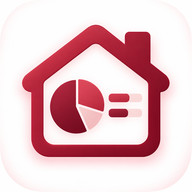

<!DOCTYPE html>
<html lang="pt-BR">
<head>
<meta charset="UTF-8">
<meta name="viewport" content="width=device-width, initial-scale=1, viewport-fit=cover">
<meta name="theme-color" content="#8B1E2D">
<meta name="description" content="Central da Casa: materiais, rotina e finanças da casa em um só lugar.">
<meta name="application-name" content="Central da Casa">
<meta name="mobile-web-app-capable" content="yes">
<meta name="apple-mobile-web-app-capable" content="yes">
<meta name="apple-mobile-web-app-status-bar-style" content="default">
<meta name="apple-mobile-web-app-title" content="Central da Casa">
<title>Central da Casa</title>
<link rel="manifest" href="./manifest.webmanifest">
<link rel="icon" type="image/png" sizes="64x64" href="./icons/favicon-64.png">
<link rel="apple-touch-icon" sizes="180x180" href="./icons/apple-touch-icon.png">
<link rel="preconnect" href="https://fonts.googleapis.com">
<link rel="preconnect" href="https://fonts.gstatic.com" crossorigin>
<link href="https://fonts.googleapis.com/css2?family=Fraunces:opsz,wght@9..144,600;9..144,700&family=Inter:wght@400;500;600;700&display=swap" rel="stylesheet">
<style>
:root{
  --pink:#C12840;--pink-2:#D6354F;--wine:#9B2034;--pink-soft:#ECA2AE;
  --white:#FFFFFF;--surface:#FDF5F6;--surface-2:#FBEEF0;--ink:#3A191E;
  --muted:#7B585E;--border:#F3CAD1;--gold:#B6253D;--danger:#7D1A2A;
  --shadow:0 10px 28px rgba(139,30,45,.10);--r-lg:20px;--r-md:14px;--r-sm:10px;
  --head:'Fraunces',Georgia,serif;--body:'Inter',-apple-system,BlinkMacSystemFont,sans-serif;
}
*{box-sizing:border-box}
html{-webkit-text-size-adjust:100%;background:var(--surface)}
body{margin:0;background:var(--white);color:var(--ink);font-family:var(--body);line-height:1.45;min-height:100vh}
button,input,select,textarea{font:inherit}
button{cursor:pointer}
button:focus-visible,input:focus-visible,select:focus-visible,textarea:focus-visible,a:focus-visible{outline:3px solid rgba(139,30,45,.28);outline-offset:2px}
h1,h2,h3,p{margin:0}h1,h2,h3{font-family:var(--head);line-height:1.18}
.app{width:100%;max-width:1080px;margin:0 auto;min-height:100dvh;background:var(--white)}
.main{padding:18px 18px calc(96px + env(safe-area-inset-bottom,0px));max-width:760px;margin:0 auto}
.main.no-nav{padding-bottom:28px}
.topbar{display:flex;align-items:center;justify-content:space-between;min-height:42px;margin-bottom:14px}
.brand{font-family:var(--head);font-weight:700;color:var(--wine);font-size:15px;letter-spacing:.035em}
.brand small{display:block;font-family:var(--body);font-size:10px;letter-spacing:.12em;color:var(--muted);font-weight:700;margin-bottom:1px}
.icon-btn{width:44px;height:44px;border:1px solid var(--border);border-radius:12px;background:var(--white);color:var(--wine);display:inline-flex;align-items:center;justify-content:center;padding:0}
.icon{width:22px;height:22px;display:block;fill:none;stroke:currentColor;stroke-width:2;stroke-linecap:round;stroke-linejoin:round}
.page-title{font-size:28px;margin-bottom:5px}.page-sub{color:var(--muted);font-size:15px;margin-bottom:20px}
.eyebrow{font-size:12px;letter-spacing:.09em;text-transform:uppercase;color:var(--wine);font-weight:700;margin-bottom:6px}
.section-head{display:flex;align-items:center;justify-content:space-between;gap:12px;margin:26px 0 12px}
.section-head h2{font-size:20px}.section-head button{flex:none}
.date-line{font-size:14px;color:var(--muted);text-transform:capitalize;margin-bottom:22px}
.btn{border:0;border-radius:12px;min-height:48px;padding:12px 17px;font-weight:700;display:inline-flex;align-items:center;justify-content:center;gap:8px;text-decoration:none;transition:transform .12s,opacity .12s;width:100%}
.btn:active{transform:scale(.98)}.btn-primary{background:linear-gradient(135deg,var(--pink-2),var(--pink));color:#fff}.btn-secondary{background:var(--surface);border:1px solid var(--border);color:var(--wine)}
.btn-quiet{background:transparent;border:0;color:var(--wine);width:auto;min-height:40px;padding:8px 5px}.btn-danger{background:#FCF3F4;color:var(--danger);border:1px solid #F1BBC4}.btn-sm{width:auto;min-height:40px;padding:8px 12px;font-size:14px}
.hero-today{border:1px solid var(--border);background:linear-gradient(145deg,var(--surface),#fff 72%);padding:20px;border-radius:var(--r-lg);box-shadow:var(--shadow)}
.hero-today h1{font-size:25px;margin-bottom:4px}.hero-today .summary{color:var(--muted);font-size:14px;margin-top:6px}
.progress{height:10px;background:#F4DCE0;border-radius:99px;overflow:hidden;margin:16px 0 7px}.progress>span{display:block;height:100%;background:linear-gradient(90deg,var(--pink-2),var(--pink));border-radius:99px;transition:width .3s ease}
.progress-label{display:flex;justify-content:space-between;color:var(--muted);font-size:12px;margin-bottom:16px}
.task-list{display:flex;flex-direction:column;gap:9px}
.task-row{display:grid;grid-template-columns:44px minmax(0,1fr) 44px;align-items:center;gap:8px;border:1px solid var(--border);border-radius:var(--r-md);background:#fff;min-height:70px;padding:8px 7px 8px 9px}
.task-row.done{background:var(--surface);border-color:#EFC2C9}.task-row.skipped{opacity:.66;background:#FAF7F7}.task-check{width:38px;height:38px;border-radius:50%;border:2px solid var(--pink-soft);background:#fff;color:transparent;display:flex;align-items:center;justify-content:center;padding:0}
.task-row.done .task-check{background:var(--wine);border-color:var(--wine);color:#fff}.task-check .icon{width:19px;height:19px;stroke-width:3}
.task-copy{min-width:0}.task-name{font-size:15px;font-weight:650;overflow-wrap:anywhere}.task-row.done .task-name{text-decoration:line-through;text-decoration-color:var(--pink-soft);color:var(--muted)}
.task-meta{display:flex;gap:7px;align-items:center;flex-wrap:wrap;font-size:12px;color:var(--muted);margin-top:3px}.dot{width:3px;height:3px;background:var(--pink-soft);border-radius:50%}
.task-menu{width:40px;height:40px;border:0;background:transparent;color:var(--muted);border-radius:10px;padding:0;display:flex;align-items:center;justify-content:center}
.status-label{font-size:11px;color:var(--wine);font-weight:700}.postponed-label{color:#731726}.skipped-label{color:var(--muted)}
.empty{border:1px dashed var(--border);background:var(--surface);border-radius:var(--r-lg);padding:26px 20px;text-align:center}.empty svg{width:38px;height:38px;color:var(--pink);margin:0 auto 10px}.empty h3{font-size:19px;margin-bottom:6px}.empty p{font-size:14px;color:var(--muted);max-width:420px;margin:0 auto 18px}.empty .actions{display:flex;gap:9px;flex-wrap:wrap}.empty .actions .btn{flex:1 1 170px}
.upcoming{border-top:1px solid var(--border)}.upcoming-row{display:flex;align-items:center;justify-content:space-between;gap:14px;padding:14px 2px;border-bottom:1px solid var(--border)}.upcoming-row strong{font-size:14px}.upcoming-row span{font-size:13px;color:var(--muted)}
.periodic-row{display:grid;grid-template-columns:minmax(0,1fr) auto;gap:10px;padding:13px 0;border-bottom:1px solid var(--border)}.periodic-row strong{font-size:14px;display:block}.periodic-row small{color:var(--muted);font-size:12px}.periodic-row .due{color:var(--wine);font-weight:700;font-size:12px;text-align:right}
.tabs{display:flex;gap:6px;border-bottom:1px solid var(--border);margin:0 -2px 18px;overflow-x:auto;scrollbar-width:none}.tabs::-webkit-scrollbar{display:none}.tab{border:0;background:transparent;color:var(--muted);font-weight:700;font-size:14px;padding:11px 12px;border-bottom:3px solid transparent;white-space:nowrap}.tab.active{color:var(--wine);border-color:var(--pink)}
.day-group{border-bottom:1px solid var(--border);padding:0 0 20px;margin-bottom:18px}.day-head{display:flex;align-items:center;justify-content:space-between;margin-bottom:10px}.day-head h3{font-family:var(--body);font-size:16px}.day-head h3 span{display:block;font-weight:500;color:var(--muted);font-size:12px;margin-top:2px}.day-head.today h3{color:var(--wine)}
.recurring-row{border-bottom:1px solid var(--border);padding:14px 0;display:grid;grid-template-columns:minmax(0,1fr) auto;gap:12px}.recurring-row h3{font-family:var(--body);font-size:15px}.recurring-row p{font-size:12px;color:var(--muted);margin-top:4px}.recurring-actions{display:flex;align-items:center;gap:4px}.pill{display:inline-flex;align-items:center;min-height:25px;padding:4px 9px;border-radius:99px;background:var(--surface);color:var(--wine);font-size:11px;font-weight:700}.pill.paused{background:#F2EEEF;color:var(--muted)}
.env-list{border-top:1px solid var(--border)}.env-row{display:grid;grid-template-columns:42px minmax(0,1fr) auto;gap:12px;align-items:center;padding:15px 2px;border-bottom:1px solid var(--border);color:inherit;text-decoration:none}.env-icon{width:42px;height:42px;border-radius:12px;background:var(--surface);color:var(--wine);display:flex;align-items:center;justify-content:center}.env-copy strong{display:block;font-size:15px}.env-copy span{font-size:12px;color:var(--muted)}.chevron{color:var(--pink-soft)}
.env-header{display:flex;align-items:center;gap:12px;margin-bottom:22px}.env-header .env-icon{width:48px;height:48px}.env-header h1{font-size:25px}.env-header p{font-size:13px;color:var(--muted);margin-top:3px}
.material-list{border-top:1px solid var(--border)}.material-row{display:grid;grid-template-columns:36px minmax(0,1fr) auto;gap:12px;align-items:center;padding:15px 0;border-bottom:1px solid var(--border)}.material-num{width:34px;height:34px;border-radius:10px;background:var(--surface);display:flex;align-items:center;justify-content:center;color:var(--wine);font-weight:800;font-size:13px}.material-copy strong{display:block;font-size:14px}.material-copy span{font-size:12px;color:var(--muted)}.material-row.completed .material-copy strong{text-decoration:line-through;color:var(--muted)}
.settings-list{border-top:1px solid var(--border)}.setting-row{display:flex;align-items:center;justify-content:space-between;gap:14px;padding:15px 0;border-bottom:1px solid var(--border)}.setting-row strong{font-size:14px;display:block}.setting-row span{font-size:12px;color:var(--muted)}
.bottom-nav{position:fixed;left:0;right:0;bottom:0;z-index:40;background:rgba(255,255,255,.97);border-top:1px solid var(--border);display:grid;grid-template-columns:repeat(5,1fr);padding:6px max(4px,env(safe-area-inset-right)) calc(6px + env(safe-area-inset-bottom,0px)) max(4px,env(safe-area-inset-left));box-shadow:0 -4px 18px rgba(139,30,45,.06)}
.nav-item{border:0;background:transparent;color:var(--muted);min-height:56px;padding:5px 2px;display:flex;flex-direction:column;align-items:center;justify-content:center;gap:3px;font-size:10.5px;font-weight:700}.nav-item .icon{width:22px;height:22px}.nav-item.active{color:var(--wine)}
.fab{position:fixed;right:18px;bottom:calc(84px + env(safe-area-inset-bottom,0px));width:56px;height:56px;border:0;border-radius:18px;background:linear-gradient(135deg,var(--pink-2),var(--pink));color:#fff;display:flex;align-items:center;justify-content:center;box-shadow:0 10px 28px rgba(139,30,45,.30);z-index:30}.fab .icon{width:27px;height:27px}
.modal-backdrop{position:fixed;inset:0;background:rgba(139,30,45,.42);z-index:100;display:flex;align-items:flex-end;justify-content:center;padding-top:30px}.modal{width:100%;max-width:620px;max-height:92dvh;background:#fff;border-radius:22px 22px 0 0;overflow:auto;padding:10px 18px calc(22px + env(safe-area-inset-bottom,0px));box-shadow:0 -12px 50px rgba(139,30,45,.22)}
.modal-handle{width:42px;height:5px;border-radius:99px;background:#E3CBCF;margin:0 auto 14px}.modal-head{display:flex;align-items:center;justify-content:space-between;gap:12px;margin-bottom:16px}.modal-head h2{font-size:23px}.modal-close{width:42px;height:42px;border:0;background:var(--surface);border-radius:50%;color:var(--wine);display:flex;align-items:center;justify-content:center}
.field{margin-bottom:16px}.field label,.field legend{display:block;font-size:13px;font-weight:700;margin-bottom:7px;color:var(--ink)}.field input,.field select,.field textarea{width:100%;min-height:48px;border:1.5px solid var(--border);border-radius:11px;background:#fff;color:var(--ink);padding:11px 12px;font-size:16px}.field textarea{min-height:82px;resize:vertical}.field input:focus,.field select:focus,.field textarea:focus{border-color:var(--pink);outline:none}.field small{display:block;color:var(--muted);font-size:12px;margin-top:5px}.field-row{display:grid;grid-template-columns:1fr 1fr;gap:10px}.field-error{color:var(--danger);font-size:12px;margin-top:5px;display:none}
.days-check{display:grid;grid-template-columns:repeat(7,1fr);gap:5px}.day-check{position:relative}.day-check input{position:absolute;opacity:0;pointer-events:none}.day-check span{min-height:42px;border:1px solid var(--border);border-radius:10px;display:flex;align-items:center;justify-content:center;font-size:12px;font-weight:700;color:var(--muted)}.day-check input:checked+span{background:var(--pink);border-color:var(--pink);color:#fff}
.suggestions{border:1px solid var(--border);border-radius:14px;margin:2px 0 18px;overflow:hidden}.suggestions summary{cursor:pointer;padding:13px 14px;font-weight:700;color:var(--wine);font-size:14px;background:var(--surface)}.suggestion-list{padding:5px 14px}.suggestion{display:flex;justify-content:space-between;gap:12px;width:100%;border:0;border-bottom:1px solid var(--border);background:#fff;padding:12px 0;text-align:left;color:var(--ink)}.suggestion:last-child{border-bottom:0}.suggestion strong{font-size:13px}.suggestion span{font-size:11px;color:var(--muted);text-align:right}
.action-list{display:flex;flex-direction:column}.action{min-height:52px;border:0;border-bottom:1px solid var(--border);background:#fff;color:var(--ink);display:flex;align-items:center;gap:13px;padding:10px 4px;text-align:left}.action .icon{color:var(--wine)}.action.danger{color:var(--danger)}.action.danger .icon{color:var(--danger)}
.toast{position:fixed;left:50%;bottom:calc(90px + env(safe-area-inset-bottom,0px));transform:translate(-50%,12px);background:var(--ink);color:#fff;border-radius:12px;padding:11px 16px;font-size:13px;font-weight:600;opacity:0;transition:.2s;z-index:200;max-width:88%;text-align:center}.toast.show{opacity:1;transform:translate(-50%,0)}
.back-row{display:flex;align-items:center;gap:10px;margin-bottom:20px}.back-row h1{font-size:24px}.back-row .icon-btn{flex:none}
.welcome{display:grid;grid-template-columns:minmax(0,1fr) 118px;gap:12px;align-items:center;border:1px solid var(--border);background:linear-gradient(145deg,var(--surface),#fff 72%);padding:18px;border-radius:var(--r-lg);box-shadow:var(--shadow);margin-bottom:18px;overflow:hidden}.welcome h1{font-size:24px;margin-bottom:5px}.welcome p{color:var(--muted);font-size:13.5px}.welcome-visual{width:118px;height:104px;align-self:end}.welcome-visual svg{width:100%;height:100%;display:block}
.quick-actions{display:grid;grid-template-columns:1fr 1fr;gap:10px;margin-bottom:6px}.quick-action{min-height:112px;border:1px solid var(--border);border-radius:15px;background:#fff;color:var(--ink);padding:14px;text-align:left;display:flex;flex-direction:column;justify-content:space-between;gap:12px}.quick-action:active{transform:scale(.98)}.quick-action .qa-icon{width:38px;height:38px;border-radius:11px;background:var(--surface);color:var(--wine);display:flex;align-items:center;justify-content:center}.quick-action strong{font-size:14px;line-height:1.25}.quick-action span{font-size:11.5px;color:var(--muted);display:block;margin-top:3px}
.feature-list{border-top:1px solid var(--border)}.feature-row{width:100%;border:0;border-bottom:1px solid var(--border);background:#fff;color:var(--ink);display:grid;grid-template-columns:48px minmax(0,1fr) auto;gap:12px;align-items:center;padding:14px 0;text-align:left;text-decoration:none}.feature-icon{width:46px;height:46px;border-radius:13px;background:var(--surface);color:var(--wine);display:flex;align-items:center;justify-content:center}.feature-icon.gold{background:#F9E4E7;color:#731726}.feature-copy strong{font-size:14px;display:block}.feature-copy span{font-size:12px;color:var(--muted);display:block;margin-top:2px}
.wizard-progress{display:flex;gap:5px;margin:4px 0 24px}.wizard-progress span{height:5px;flex:1;border-radius:99px;background:#F0D9DD}.wizard-progress span.active{background:var(--pink)}.wizard-question h1{font-size:27px;margin-bottom:7px}.wizard-question>p{color:var(--muted);font-size:14px;margin-bottom:20px}.choice-list{display:flex;flex-direction:column;gap:9px}.choice{width:100%;min-height:58px;border:1.5px solid var(--border);border-radius:13px;background:#fff;color:var(--ink);padding:12px 14px;text-align:left;display:flex;align-items:center;gap:12px;font-weight:650}.choice.selected{background:var(--surface);border-color:var(--pink);color:var(--wine)}.choice-mark{width:23px;height:23px;border:1.5px solid var(--pink-soft);border-radius:7px;display:flex;align-items:center;justify-content:center;flex:none}.choice.radio .choice-mark{border-radius:50%}.choice.selected .choice-mark{background:var(--pink);border-color:var(--pink);color:#fff}.choice .icon{width:17px;height:17px}.wizard-actions{display:grid;grid-template-columns:auto 1fr;gap:9px;margin-top:22px}.wizard-actions.one{grid-template-columns:1fr}
.preview-list{border-top:1px solid var(--border)}.preview-row{display:grid;grid-template-columns:28px minmax(0,1fr);gap:10px;padding:12px 0;border-bottom:1px solid var(--border);align-items:start}.preview-row input{width:21px;height:21px;accent-color:var(--pink);margin-top:1px}.preview-row strong{font-size:14px;display:block}.preview-row span{font-size:12px;color:var(--muted)}.preview-summary{background:var(--surface);border:1px solid var(--border);border-radius:14px;padding:14px;margin-bottom:16px;font-size:13px;color:var(--muted)}
.template-list{display:grid;grid-template-columns:1fr;gap:10px}.template-card{border:1px solid var(--border);border-radius:15px;background:#fff;padding:15px;text-align:left;color:var(--ink)}.template-top{display:flex;align-items:flex-start;justify-content:space-between;gap:10px}.template-card h3{font-size:18px}.template-card p{font-size:12.5px;color:var(--muted);margin:5px 0 12px}.template-meta{display:flex;gap:7px;flex-wrap:wrap}.template-hero{display:grid;grid-template-columns:minmax(0,1fr) 120px;gap:12px;align-items:center;background:linear-gradient(145deg,var(--surface),#fff);border:1px solid var(--border);border-radius:18px;padding:17px;margin-bottom:18px}.template-hero h1{font-size:25px}.template-hero p{font-size:13px;color:var(--muted);margin-top:5px}.template-hero svg{width:112px;height:98px}
.timer-panel{text-align:center;border:1px solid var(--border);background:linear-gradient(160deg,var(--surface),#fff);border-radius:20px;padding:22px 16px;box-shadow:var(--shadow)}.timer-clock{font-family:var(--head);font-size:54px;line-height:1;color:var(--wine);font-variant-numeric:tabular-nums;margin:15px 0 7px}.timer-state{font-size:13px;color:var(--muted);margin-bottom:18px}.timer-actions{display:grid;grid-template-columns:1fr 1fr;gap:9px}.clean-step{display:grid;grid-template-columns:38px minmax(0,1fr);gap:10px;align-items:center;border-bottom:1px solid var(--border);padding:12px 0}.clean-step input{width:24px;height:24px;accent-color:var(--pink)}.clean-step strong{font-size:14px;display:block}.clean-step span{font-size:12px;color:var(--muted)}
.program-hero{border-radius:19px;padding:18px;background:linear-gradient(135deg,#3A191E,#6B2833);color:#fff;overflow:hidden;position:relative}.program-hero h1{color:#fff;font-size:25px;max-width:70%}.program-hero p{font-size:13px;color:#F8DDE1;max-width:75%;margin:6px 0 15px}.program-hero .progress{background:rgba(255,255,255,.18);max-width:75%}.program-hero .progress>span{background:linear-gradient(90deg,#ECA2AE,#fff)}.program-hero svg{position:absolute;width:120px;height:110px;right:-7px;bottom:-7px;opacity:.9}.day-list{display:grid;grid-template-columns:repeat(3,1fr);gap:8px}.program-day{min-height:76px;border:1px solid var(--border);border-radius:13px;background:#fff;color:var(--ink);padding:10px;text-align:left}.program-day strong{display:block;color:var(--wine);font-size:12px}.program-day span{font-size:12px;line-height:1.2;display:block;margin-top:4px}.program-day.done{background:var(--surface);border-color:var(--pink-soft)}.program-day.done strong:after{content:' ✓'}.lesson-box{border:1px solid var(--border);border-radius:16px;padding:16px;background:var(--surface);margin-bottom:14px}.lesson-box h2{font-size:19px;margin-bottom:7px}.lesson-box p{font-size:14px;color:var(--muted)}.lesson-checks{margin:10px 0 18px}.lesson-check{display:flex;gap:10px;align-items:flex-start;border-bottom:1px solid var(--border);padding:12px 0}.lesson-check input{width:22px;height:22px;accent-color:var(--pink);flex:none}.lesson-check span{font-size:14px}.sticky-actions{position:sticky;bottom:0;background:linear-gradient(180deg,rgba(255,255,255,0),#fff 22%);padding:24px 0 calc(4px + env(safe-area-inset-bottom,0px));margin-top:10px}.soft-note{font-size:12px;color:var(--muted);background:var(--surface);border-radius:11px;padding:10px 12px;margin:12px 0}
.sr-only{position:absolute!important;width:1px!important;height:1px!important;padding:0!important;margin:-1px!important;overflow:hidden!important;clip:rect(0,0,0,0)!important;white-space:nowrap!important;border:0!important}.library-hero{display:grid;grid-template-columns:minmax(0,1fr) 108px;gap:12px;align-items:center;background:linear-gradient(145deg,var(--surface),#fff);border:1px solid var(--border);border-radius:18px;padding:17px;margin-bottom:15px}.library-hero h1{font-size:24px}.library-hero p{font-size:13px;color:var(--muted);margin-top:5px}.library-hero svg{width:105px;height:92px}.library-search{position:sticky;top:0;background:#fff;padding:7px 0 12px;z-index:4}.library-search input{width:100%;height:48px;border:1.5px solid var(--border);border-radius:12px;padding:0 14px;font-size:16px;color:var(--ink);background:#fff}.content-list{border-top:1px solid var(--border)}.content-row{display:grid;grid-template-columns:42px minmax(0,1fr) auto;gap:11px;align-items:center;padding:14px 0;border-bottom:1px solid var(--border);color:inherit;text-decoration:none}.content-row.hidden{display:none}.content-num{width:40px;height:40px;border-radius:12px;background:var(--surface);color:var(--wine);display:flex;align-items:center;justify-content:center;font-weight:800;font-size:12px}.content-row.bonus .content-num{background:#F8DDE1;color:#661522}.content-copy strong{display:block;font-size:14px}.content-copy span{display:block;color:var(--muted);font-size:11.5px;margin-top:3px}.content-status{font-size:11px;font-weight:700;color:var(--wine);text-align:right}.content-status.gold{color:#731726}.reader-head{background:linear-gradient(145deg,var(--surface),#fff);border:1px solid var(--border);border-radius:18px;padding:18px;margin-bottom:18px}.reader-head.bonus{background:linear-gradient(145deg,#FAE4E8,#fff);border-color:#D63650}.reader-head h1{font-size:27px;margin:5px 0}.reader-head p{font-size:14px;color:var(--muted)}.reader-progress{margin-top:14px}.reader-progress .progress{margin:8px 0 4px}.reader-progress span{font-size:12px;color:var(--muted)}.content-badge{display:inline-flex;align-items:center;min-height:25px;padding:4px 9px;border-radius:99px;background:#fff;color:var(--wine);font-size:10.5px;font-weight:800;letter-spacing:.04em;border:1px solid var(--border)}.content-badge.gold{color:#661522;border-color:#C82943;background:#FDF6F7}.chapter{border-bottom:1px solid var(--border)}.chapter summary{list-style:none;cursor:pointer;padding:16px 44px 16px 2px;font-weight:750;font-size:15px;position:relative}.chapter summary::-webkit-details-marker{display:none}.chapter summary:after{content:'+';position:absolute;right:8px;top:13px;color:var(--pink);font-size:24px;font-weight:400}.chapter[open] summary:after{content:'−'}.chapter[open] summary{color:var(--wine)}.chapter-done{font-size:10px;color:var(--wine);background:var(--surface);border-radius:99px;padding:3px 7px;margin-left:6px;vertical-align:2px}.chapter-body{padding:0 2px 20px}.chapter-body p{font-size:14px;line-height:1.65;color:#54373C;margin-bottom:11px}.chapter-body h3{font-family:var(--body);font-size:14px;margin:18px 0 8px}.step-list{counter-reset:steps;list-style:none;padding:0;margin:0}.step-list li{counter-increment:steps;display:grid;grid-template-columns:28px minmax(0,1fr);gap:9px;font-size:14px;line-height:1.5;margin-bottom:10px}.step-list li:before{content:counter(steps);width:26px;height:26px;border-radius:8px;background:var(--surface);color:var(--wine);display:flex;align-items:center;justify-content:center;font-size:12px;font-weight:800}.learn-list{list-style:none;padding:0;margin:0}.learn-list li{font-size:14px;line-height:1.5;padding:9px 0 9px 28px;border-bottom:1px solid #F6E5E8;position:relative}.learn-list li:before{content:'✓';position:absolute;left:3px;top:9px;color:var(--wine);font-weight:800}.tip-box,.warning-box{border-radius:12px;padding:12px 13px;font-size:13px;line-height:1.5;margin:14px 0}.tip-box{background:var(--surface);color:#5D3E43}.warning-box{background:#FAE5E9;border:1px solid #ECA0AD;color:#661623}.tip-box strong,.warning-box strong{display:block;margin-bottom:3px}.chapter-actions{display:flex;gap:8px;margin-top:17px}.chapter-actions .btn{flex:1}.legacy-link{margin-top:12px;font-size:12px;color:var(--muted);text-align:center}.legacy-link .btn{margin-bottom:8px}.no-results{display:none;text-align:center;color:var(--muted);padding:28px 10px;font-size:14px}
.practical-section{margin-top:24px}.practical-intro{font-size:13px;line-height:1.55;color:var(--muted);margin:-7px 0 12px}.practical-grid{display:grid;gap:9px}.practical-card{border:1px solid var(--border);border-left:4px solid var(--pink);background:#fff;padding:13px 14px}.practical-card.gold{border-left-color:var(--gold)}.practical-card strong{display:block;font-size:14px;color:var(--ink);margin-bottom:4px}.practical-card p{font-size:13px;line-height:1.5;color:#65484D}.practical-card small{display:block;font-size:11px;color:var(--muted);margin-top:5px}.practical-cta{margin-top:14px}
.home-library-cta{display:grid;grid-template-columns:minmax(0,1fr) 82px;gap:10px;align-items:center;text-decoration:none;color:#fff;background:linear-gradient(135deg,#3A191E,#6C222E 66%,#9B2034);border-radius:18px;padding:17px 15px;margin-bottom:15px;box-shadow:0 10px 24px rgba(139,30,45,.16);overflow:hidden}.home-library-cta h2{font-size:20px;color:#fff;margin:3px 0 6px}.home-library-cta p{font-size:12.5px;line-height:1.4;color:#F9DFE4}.home-library-cta .eyebrow{color:#B6253D}.home-library-cta .cta-arrow{width:66px;height:82px;border-radius:10px;background:linear-gradient(160deg,#FDF5F6,#ECA2AE);color:#6B232F;display:flex;align-items:center;justify-content:center;transform:rotate(4deg);box-shadow:0 8px 18px rgba(0,0,0,.2)}.home-library-cta .cta-arrow svg{width:34px;height:34px}.pdf-library-hero{position:relative;min-height:240px;border-radius:20px;overflow:hidden;padding:22px 116px 20px 19px;background:linear-gradient(135deg,#3A191E 0%,#772230 68%,#9B2034 100%);color:#fff;margin-bottom:24px;box-shadow:0 12px 28px rgba(139,30,45,.18)}.pdf-library-hero .eyebrow{color:#B6253D}.pdf-library-hero h1{font-size:23px;color:#fff;line-height:1.08;margin:6px 0 8px}.pdf-library-hero p{font-size:13px;line-height:1.45;color:#F9DFE4;margin-bottom:15px}.pdf-library-hero .btn{width:auto;display:inline-flex;padding:11px 15px;background:#fff;color:#6B232F}.hero-mini-cover{position:absolute;right:10px;bottom:-10px;width:94px;aspect-ratio:2/3;border-radius:13px;background:linear-gradient(155deg,#FEF9FA,#EEADB7);box-shadow:0 12px 30px rgba(0,0,0,.28);transform:rotate(5deg);display:flex;align-items:center;justify-content:center;color:#6C222E}.hero-mini-cover svg{width:58px;height:58px}.library-summary{display:flex;align-items:center;justify-content:space-between;gap:10px;margin:-8px 2px 22px;font-size:12px;color:var(--muted)}.library-summary strong{color:var(--wine)}.media-row{margin:0 -18px 25px}.media-row-head{display:flex;align-items:flex-end;justify-content:space-between;gap:10px;padding:0 18px 11px}.media-row-head h2{font-size:19px}.media-row-head span{font-size:11px;color:var(--muted)}.pdf-shelf{display:flex;gap:12px;overflow-x:auto;overscroll-behavior-inline:contain;scroll-snap-type:x mandatory;padding:4px 18px 17px;scrollbar-width:none}.pdf-shelf::-webkit-scrollbar{display:none}.pdf-card{flex:0 0 146px;width:146px;color:var(--ink);text-decoration:none;scroll-snap-align:start}.pdf-cover{position:relative;aspect-ratio:2/3;border-radius:15px;overflow:hidden;padding:12px;background:linear-gradient(155deg,#FEF8F9,#F4CBD1);box-shadow:0 9px 20px rgba(139,30,45,.14);border:1px solid rgba(139,30,45,.12);display:flex;flex-direction:column}.pdf-card:nth-child(4n+2) .pdf-cover{background:linear-gradient(155deg,#FDF3F5,#F3C2CA)}.pdf-card:nth-child(4n+3) .pdf-cover{background:linear-gradient(155deg,#FEF8F9,#F6D4D9)}.pdf-card:nth-child(4n+4) .pdf-cover{background:linear-gradient(155deg,#FBEEF0,#EDA6B2)}.pdf-card.bonus .pdf-cover{border-color:rgba(139,30,45,.42)}.cover-top{display:flex;align-items:center;justify-content:space-between;gap:6px;position:relative;z-index:2}.cover-brand{font-size:7.5px;line-height:1.1;font-weight:900;letter-spacing:.12em;color:#7B2A37}.cover-tag{font-size:7px;font-weight:900;letter-spacing:.06em;padding:4px 6px;border-radius:99px;background:rgba(255,255,255,.72);color:#7B2A37}.pdf-card.bonus .cover-tag{background:#B6253D;color:#3D0D14}.cover-visual{flex:1;display:flex;align-items:center;justify-content:center;color:#761E2C;position:relative}.cover-visual:before{content:'';position:absolute;width:82px;height:82px;border-radius:50%;background:rgba(255,255,255,.54)}.cover-visual svg{position:relative;width:66px;height:66px;stroke:currentColor;fill:none;stroke-width:2;stroke-linecap:round;stroke-linejoin:round}.cover-title{position:relative;z-index:2;font-family:var(--head);font-size:17.5px;line-height:1;color:#3A191E;text-transform:uppercase}.cover-subtitle{position:relative;z-index:2;font-size:8px;line-height:1.2;color:#74464D;margin-top:6px;padding-right:32px}.pdf-play{position:absolute;right:9px;bottom:9px;width:31px;height:31px;border-radius:50%;display:flex;align-items:center;justify-content:center;background:#fff;color:#9B2034;box-shadow:0 4px 12px rgba(139,30,45,.18)}.pdf-play svg{width:16px;height:16px;stroke-width:2.4}.pdf-card-meta{padding:9px 2px 0}.pdf-card-meta strong{font-size:13px;line-height:1.18;display:block}.pdf-card-meta span{display:block;font-size:10.5px;color:var(--muted);margin-top:4px}.pdf-card.opened .pdf-card-meta span{color:var(--wine);font-weight:700}.pdf-note{display:flex;gap:9px;align-items:flex-start;border:1px solid var(--border);background:var(--surface);padding:12px;border-radius:12px;font-size:12px;color:var(--muted);line-height:1.45}.pdf-note svg{width:20px;height:20px;color:var(--wine);flex:none}.pdf-search{margin-bottom:22px}.pdf-search input{width:100%;height:48px;border:1.5px solid var(--border);border-radius:12px;padding:0 14px;font-size:16px;color:var(--ink);background:#fff}.pdf-card.hidden{display:none}
.materials-start{position:relative;border:1px solid var(--border);background:linear-gradient(145deg,#FDF5F6,#fff);padding:17px 58px 17px 16px;border-radius:16px;margin:0 0 20px}.materials-start h2{font-size:20px;margin:3px 0 5px}.materials-start p{font-size:13px;line-height:1.45;color:var(--muted)}.materials-start .start-arrow{position:absolute;right:15px;top:50%;width:36px;height:36px;margin-top:-18px;border-radius:50%;display:flex;align-items:center;justify-content:center;background:var(--pink);color:#fff}.materials-start .start-arrow svg{width:20px;height:20px;transform:rotate(90deg)}.pdf-card.metodo .pdf-cover{background:linear-gradient(155deg,#FDF5F6,#F3C2CA);border-color:#EEACB7}.pdf-card.bonus .pdf-cover{background:linear-gradient(155deg,#FBEDEF,#D42C47);border-color:#B9263E}.pdf-card.extras .pdf-cover{background:linear-gradient(155deg,#FDF5F6,#E9BDC4);border-color:#D08F9A}.pdf-card.bonus .cover-tag{background:#B6253D;color:#3D0D14}.pdf-card.extras .cover-tag{background:#862D3B;color:#fff}.pdf-card.extras .cover-visual{color:#862D3B}.pdf-card.extras .pdf-play{color:#862D3B}.pdf-card .cover-top{justify-content:flex-end}.pdf-card-meta{padding-top:8px}.pdf-card-meta span{font-size:11px;font-weight:750;color:var(--wine);margin:0}.pdf-card.extras .pdf-card-meta span{color:#702D38}.pdf-card.opened .pdf-card-meta span{color:inherit}.pdf-note{margin-top:4px}.cover-title{padding-right:29px}.cover-visual{min-height:88px}
.learn-tabs{display:grid;grid-template-columns:repeat(3,1fr);gap:6px;padding:5px;background:var(--surface);border:1px solid var(--border);border-radius:14px;margin-bottom:20px}.learn-tab{min-height:43px;border:0;border-radius:10px;background:transparent;color:var(--muted);font-size:13px;font-weight:750;padding:8px 4px}.learn-tab.active{background:#fff;color:var(--wine);box-shadow:0 3px 12px rgba(139,30,45,.09)}.video-intro{border-left:4px solid var(--pink);padding:2px 0 2px 12px;margin-bottom:17px}.video-intro h2{font-size:20px}.video-intro p{font-size:13px;color:var(--muted);line-height:1.5;margin-top:4px}.video-list{display:grid;gap:13px}.video-card{display:grid;grid-template-columns:136px minmax(0,1fr);gap:12px;border:1px solid var(--border);border-radius:15px;background:#fff;color:var(--ink);text-decoration:none;padding:9px;box-shadow:0 5px 16px rgba(139,30,45,.06)}.video-thumb{position:relative;aspect-ratio:16/9;border-radius:10px;overflow:hidden;background:linear-gradient(135deg,#5B1D27,#9B2034);align-self:center}.video-thumb img{width:100%;height:100%;object-fit:cover;display:block}.video-duration{position:absolute;right:5px;bottom:5px;background:rgba(139,30,45,.88);color:#fff;border-radius:5px;padding:2px 5px;font-size:10px;font-weight:700}.video-play{position:absolute;left:50%;top:50%;width:36px;height:36px;margin:-18px 0 0 -18px;border-radius:50%;display:flex;align-items:center;justify-content:center;background:rgba(255,255,255,.94);color:var(--wine);box-shadow:0 4px 12px rgba(0,0,0,.22)}.video-play svg{width:18px;height:18px}.video-copy{min-width:0;padding:2px 2px 2px 0}.video-copy h3{font-family:var(--body);font-size:14px;line-height:1.3;display:-webkit-box;-webkit-line-clamp:3;-webkit-box-orient:vertical;overflow:hidden}.video-channel{display:block;font-size:11px;color:var(--wine);font-weight:700;margin-top:5px}.video-desc{font-size:11.5px;line-height:1.4;color:var(--muted);margin-top:5px;display:-webkit-box;-webkit-line-clamp:2;-webkit-box-orient:vertical;overflow:hidden}.external-note{font-size:12px;color:var(--muted);line-height:1.5;margin-top:16px;padding:12px;border-radius:12px;background:var(--surface)}
.utility-hero{border:1px solid var(--border);background:linear-gradient(145deg,var(--surface),#fff 76%);border-radius:18px;padding:17px;margin-bottom:18px}.utility-hero-top{display:flex;align-items:center;justify-content:space-between;gap:12px}.utility-hero h2{font-size:22px}.utility-hero p{font-size:13px;color:var(--muted);margin-top:5px}.utility-hero .progress{margin:14px 0 5px}.utility-hero-meta{font-size:12px;color:var(--muted);display:flex;justify-content:space-between;gap:10px}
.list-toolbar{display:grid;grid-template-columns:minmax(0,1fr) 44px 44px;gap:8px;align-items:end;margin-bottom:15px}.list-toolbar .field{margin:0}.list-toolbar .icon-btn{width:44px;height:48px}.shopping-form{border:1px solid var(--border);background:var(--surface);border-radius:16px;padding:14px;margin-bottom:20px}.shopping-form-grid{display:grid;grid-template-columns:minmax(0,1fr) 96px;gap:8px}.shopping-form .field{margin-bottom:10px}.shopping-form .btn{margin-top:2px}.shopping-group{margin-bottom:19px}.shopping-group-title{font-family:var(--body);font-size:13px;text-transform:uppercase;letter-spacing:.07em;color:var(--wine);margin-bottom:6px}.shopping-item{display:grid;grid-template-columns:40px minmax(0,1fr) 40px;align-items:center;gap:8px;min-height:61px;border-bottom:1px solid var(--border)}.shopping-check{width:34px;height:34px;border:2px solid var(--pink-soft);border-radius:10px;background:#fff;color:transparent;display:flex;align-items:center;justify-content:center;padding:0}.shopping-check .icon{width:18px;height:18px;stroke-width:3}.shopping-item.purchased .shopping-check{background:var(--wine);border-color:var(--wine);color:#fff}.shopping-item.purchased .shopping-copy{text-decoration:line-through;color:var(--muted)}.shopping-copy{min-width:0;border:0;background:transparent;color:var(--ink);text-align:left;padding:10px 0}.shopping-copy strong{font-size:14px;display:block;overflow-wrap:anywhere}.shopping-copy span{font-size:11.5px;color:var(--muted);display:block;margin-top:2px}.shopping-delete{width:40px;height:40px;border:0;border-radius:10px;background:transparent;color:var(--muted);display:flex;align-items:center;justify-content:center}.shopping-delete .icon{width:19px;height:19px}.shopping-footer{display:flex;justify-content:center;margin-top:17px}.shopping-footer .btn{width:auto}.saved-lists-summary{font-size:12px;color:var(--muted);margin:-5px 0 14px}
.week-switcher{display:grid;grid-template-columns:44px minmax(0,1fr) 44px;gap:8px;align-items:center;margin-bottom:17px}.week-switcher .icon-btn{width:44px;height:44px}.week-label{text-align:center}.week-label strong{display:block;font-size:14px}.week-label span{display:block;color:var(--muted);font-size:11.5px;margin-top:2px}.planner-days{border-top:1px solid var(--border)}.planner-day{width:100%;border:0;border-bottom:1px solid var(--border);background:#fff;color:var(--ink);display:grid;grid-template-columns:52px minmax(0,1fr) auto;gap:11px;align-items:center;padding:13px 1px;text-align:left}.planner-day.today .planner-date{background:var(--wine);color:#fff}.planner-date{width:48px;height:50px;border-radius:13px;background:var(--surface);color:var(--wine);display:flex;flex-direction:column;align-items:center;justify-content:center}.planner-date strong{font-size:17px;line-height:1}.planner-date span{font-size:10px;text-transform:uppercase;margin-top:3px;font-weight:700}.planner-day-copy strong{display:block;font-size:14px}.planner-day-copy span{display:block;font-size:11.5px;color:var(--muted);margin-top:3px}.planner-day-icons{display:flex;gap:4px;align-items:center}.planner-marker{width:25px;height:25px;border-radius:8px;background:var(--surface);color:var(--wine);display:flex;align-items:center;justify-content:center}.planner-marker .icon{width:15px;height:15px}.planner-shopping{display:grid;grid-template-columns:42px minmax(0,1fr) auto;align-items:center;gap:11px;border:1px solid var(--border);border-radius:15px;padding:13px;margin-top:20px;text-decoration:none;color:var(--ink)}.planner-shopping .feature-icon{width:42px;height:42px}.planner-shopping strong{font-size:14px;display:block}.planner-shopping span{font-size:11.5px;color:var(--muted);display:block;margin-top:2px}
.meal-grid{display:grid;grid-template-columns:1fr 1fr;gap:10px}.planner-save{margin-top:6px}.planner-note{min-height:105px!important}.day-summary{display:flex;gap:7px;flex-wrap:wrap;margin-bottom:18px}.day-summary .pill{min-height:29px}.planner-task-add{margin-top:10px}.planner-section{margin-top:24px}.planner-section .section-head{margin-top:0}.planner-empty{font-size:13px;color:var(--muted);padding:12px 0;border-bottom:1px solid var(--border)}
@media(max-width:350px){.shopping-form-grid,.meal-grid{grid-template-columns:1fr}.planner-day{grid-template-columns:48px minmax(0,1fr) auto}.planner-date{width:44px}.planner-day-icons{display:none}}
@media(max-width:430px){.video-card{grid-template-columns:116px minmax(0,1fr);gap:10px}.video-desc{display:none}.video-copy h3{font-size:13px;-webkit-line-clamp:3}}
@media(min-width:720px){body{background:var(--surface)}.app{box-shadow:0 0 45px rgba(139,30,45,.08)}.main{padding-top:28px}.bottom-nav{max-width:1080px;margin:0 auto}.modal-backdrop{align-items:center;padding:30px}.modal{border-radius:22px;max-height:88dvh}.fab{right:max(24px,calc((100vw - 760px)/2 + 24px))}}
@media(max-width:350px){.main{padding-left:14px;padding-right:14px}.nav-item{font-size:9.5px}.nav-item .icon{width:20px;height:20px}.field-row{grid-template-columns:1fr}.days-check{gap:3px}.day-check span{font-size:11px}.page-title{font-size:26px}.welcome{grid-template-columns:minmax(0,1fr) 92px;padding:15px}.welcome-visual{width:96px;height:90px}.quick-action{padding:12px;min-height:108px}.day-list{grid-template-columns:repeat(2,1fr)}.template-hero{grid-template-columns:1fr}.template-hero svg{display:none}}
@media(prefers-reduced-motion:reduce){*{scroll-behavior:auto!important;transition:none!important}}
/* Aprendizado integrado */
.materials-start{display:block;color:var(--ink);text-decoration:none}
.learn-tabs{grid-template-columns:repeat(2,1fr)}
.nav-item.learning-main{position:relative;color:var(--wine);margin-top:-10px}
.nav-item.learning-main .icon{width:44px;height:44px;padding:10px;border-radius:15px;background:linear-gradient(135deg,var(--pink-2),var(--pink));color:#fff;box-shadow:0 7px 18px rgba(139,30,45,.28)}
.nav-item.learning-main span{font-size:10.5px}
.module-reading-intro{border:1px solid var(--border);background:linear-gradient(145deg,var(--surface),#fff);border-radius:16px;padding:16px;margin-bottom:20px}
.module-reading-intro h2{font-size:21px;margin-bottom:7px}.module-reading-intro p{font-size:14px;line-height:1.65;color:#54373C}
.deep-section{margin:22px 0}.deep-section h2{font-size:21px;margin-bottom:9px}.deep-section p{font-size:15px;line-height:1.72;color:#54373C;margin-bottom:12px}
.module-section{border-top:1px solid var(--border);padding:24px 1px 6px}.module-section>h2{font-size:22px;margin-bottom:12px;color:var(--ink)}
.module-section .chapter-body{padding:0 0 18px}.module-section .chapter-body>p{font-size:15px;line-height:1.72;margin-bottom:14px}
.module-section .chapter-body>h3{font-size:15px;margin-top:21px}
.module-finish{margin-top:27px;border:1px solid var(--border);background:linear-gradient(145deg,#FDF5F6,#fff);border-radius:18px;padding:18px}.module-finish h2{font-size:22px;margin-bottom:6px}.module-finish p{font-size:13px;line-height:1.55;color:var(--muted);margin-bottom:14px}.module-finish.done{background:linear-gradient(145deg,#FDF3F5,#FAE7EA);border-color:var(--pink-soft)}
/* Biblioteca editorial Central da Casa */
.reader-head.extras{background:linear-gradient(145deg,#FDF4F6,#F5D9DE);border-color:#DDA9B1}.reader-head.extras .content-badge{background:#862D3B;color:#fff}.reader-head.bonus{background:linear-gradient(145deg,#FBEEF0,#F3C4CC);border-color:#C32841}
.reading-stats{display:flex;gap:8px;flex-wrap:wrap;margin-top:14px}.reading-stat{font-size:11px;font-weight:800;color:var(--wine);background:#fff;border:1px solid rgba(139,30,45,.18);border-radius:99px;padding:7px 10px}.reader-head.extras .reading-stat{color:#6D2531;border-color:#DDA9B1}
.lesson-toc{margin:18px 0 8px;border-top:1px solid var(--border)}.lesson-toc h2{font-size:21px;margin:18px 0 5px}.lesson-toc>p{font-size:13px;color:var(--muted);line-height:1.5;margin-bottom:8px}.lesson-toc-list{display:grid;grid-template-columns:1fr 1fr;gap:0 12px}.lesson-toc button{min-height:55px;border:0;border-bottom:1px solid var(--border);background:#fff;color:var(--ink);display:grid;grid-template-columns:29px minmax(0,1fr);gap:8px;align-items:center;text-align:left;padding:8px 0;font-size:12px;line-height:1.3}.lesson-toc button span:first-child{width:27px;height:27px;border-radius:9px;background:var(--surface);color:var(--wine);display:flex;align-items:center;justify-content:center;font-weight:850}
.lesson-page{scroll-margin-top:16px;border-top:1px solid var(--border);padding:28px 0 12px}.lesson-page-head{display:grid;grid-template-columns:46px minmax(0,1fr);gap:12px;align-items:start;margin-bottom:16px}.lesson-number{width:46px;height:46px;border-radius:14px;background:linear-gradient(145deg,var(--pink),var(--wine));color:#fff;display:flex;flex-direction:column;align-items:center;justify-content:center;box-shadow:0 7px 17px rgba(139,30,45,.18)}.lesson-number strong{font-size:18px;line-height:1}.lesson-number span{font-size:8px;text-transform:uppercase;font-weight:800;letter-spacing:.08em;margin-top:2px}.lesson-page h2{font-size:23px;line-height:1.1}.lesson-kicker{font-size:10px;text-transform:uppercase;letter-spacing:.11em;color:var(--wine);font-weight:850;margin-bottom:5px}.lesson-lead{font-size:16px;line-height:1.67;color:#4F3035;margin:0 0 16px}.lesson-copy p{font-size:15px;line-height:1.75;color:#54373C;margin-bottom:14px}.lesson-visual{position:relative;overflow:hidden;display:grid;grid-template-columns:76px minmax(0,1fr);gap:14px;align-items:center;background:linear-gradient(135deg,#541C25,#751E2C 64%,#AB2339);color:#fff;border-radius:18px;padding:15px;margin:17px 0 19px}.lesson-visual:after{content:"";position:absolute;width:110px;height:110px;border-radius:50%;right:-55px;top:-55px;background:rgba(255,255,255,.10)}.lesson-visual-art{width:72px;height:72px;border-radius:18px;background:rgba(255,255,255,.13);display:flex;align-items:center;justify-content:center}.lesson-visual-art svg{width:50px;height:50px}.lesson-visual-copy{position:relative;z-index:1}.lesson-visual-copy small{display:block;color:#D42C47;font-size:9px;font-weight:850;letter-spacing:.1em;text-transform:uppercase}.lesson-visual-copy strong{display:block;font-family:var(--head);font-size:18px;line-height:1.1;margin:4px 0 7px}.lesson-visual-flow{display:flex;align-items:center;gap:5px;font-size:9px;font-weight:750;color:#FAE9EB;flex-wrap:wrap}.lesson-visual-flow i{width:4px;height:4px;border-radius:50%;background:#D42C47;flex:none}
.pdf-card .cover-title{font-size:15.5px;line-height:1.03;overflow-wrap:anywhere}.pdf-card.extras .cover-title{font-size:14.5px}
.lesson-reference{border-left:4px solid var(--pink);padding:2px 0 2px 13px;margin:19px 0}.lesson-reference strong{font-size:14px;display:block;margin-bottom:5px}.lesson-reference p{font-size:13px;line-height:1.6;color:var(--muted);margin:0}.lesson-actions{margin:18px 0}.lesson-actions h3,.lesson-check h3{font-family:var(--body);font-size:14px;margin-bottom:8px}.lesson-actions ol{counter-reset:lessonstep;list-style:none}.lesson-actions li{counter-increment:lessonstep;position:relative;padding:9px 0 9px 39px;border-bottom:1px solid var(--border);font-size:14px;line-height:1.5}.lesson-actions li:before{content:counter(lessonstep);position:absolute;left:0;top:8px;width:27px;height:27px;border-radius:9px;background:var(--surface);color:var(--wine);display:flex;align-items:center;justify-content:center;font-size:12px;font-weight:850}
.lesson-check{background:var(--surface);border-radius:15px;padding:14px 15px;margin:18px 0}.lesson-check li{position:relative;padding:6px 0 6px 27px;font-size:13px;line-height:1.5}.lesson-check li:before{content:"";position:absolute;left:0;top:8px;width:16px;height:16px;border:2px solid var(--pink-soft);border-radius:5px;background:#fff}.lesson-pair{display:grid;grid-template-columns:1fr 1fr;gap:10px;margin:17px 0}.lesson-pair>div{border:1px solid var(--border);border-radius:14px;padding:13px}.lesson-pair strong{display:block;font-size:12px;text-transform:uppercase;letter-spacing:.06em;color:var(--wine);margin-bottom:6px}.lesson-pair p{font-size:12.5px;line-height:1.55;color:var(--muted);margin:0}.lesson-pair .avoid{background:#FDF7F8}.lesson-pair .avoid strong{color:#6F2430}.lesson-practice{background:linear-gradient(145deg,#FDF5F6,#fff);border:1px solid var(--border);border-radius:16px;padding:15px;margin:19px 0}.lesson-practice strong{display:block;font-size:14px;margin-bottom:5px}.lesson-practice p{font-size:13px;line-height:1.6;color:#68464C;margin:0}.lesson-back{display:block;margin:17px auto 0;border:0;background:transparent;color:var(--wine);font-size:12px;font-weight:750;padding:8px}.reader-source-note{font-size:11px;line-height:1.55;color:var(--muted);border-top:1px solid var(--border);padding-top:15px;margin-top:20px}
@media(max-width:360px){.lesson-toc-list,.lesson-pair{grid-template-columns:1fr}.lesson-toc button{min-height:48px}.lesson-visual{grid-template-columns:62px minmax(0,1fr)}.lesson-visual-art{width:60px;height:60px}.lesson-visual-art svg{width:42px;height:42px}.lesson-page h2{font-size:21px}}
/* Rotina guiada: estilos limitados aos componentes novos. */
.sr-tabs{display:flex;gap:8px;margin:0 0 18px}.sr-tabs button{flex:1;min-height:46px;border:1px solid var(--border);border-radius:13px;background:#fff;color:var(--muted);font:600 14px var(--body)}.sr-tabs button[aria-selected=true]{background:var(--ink);color:#fff;border-color:var(--ink)}
.sr-hero{background:linear-gradient(135deg,#FCF3F4,#fff);border:1px solid var(--border);border-radius:22px;padding:21px;margin-bottom:16px}.sr-hero h2{font:700 25px var(--head);margin:7px 0 9px}.sr-hero p,.sr-note{font-size:13px;color:var(--muted);line-height:1.55}.sr-eyebrow{font-size:10px;font-weight:800;letter-spacing:1.5px;color:var(--wine);text-transform:uppercase}.sr-panel{padding:17px;border:1px solid var(--border);border-radius:18px;background:#fff;margin-bottom:15px}.sr-panel h2{font:600 19px var(--head);margin:0 0 13px}.sr-fieldset{border:0;padding:0;margin:0 0 17px;min-width:0}.sr-fieldset legend{font-weight:700;font-size:14px;margin-bottom:9px}.sr-chips{display:flex;flex-wrap:wrap;gap:7px}.sr-chip{display:flex;align-items:center;gap:5px;border:1px solid var(--border);border-radius:11px;padding:10px;background:#fff;font-size:12px;min-height:42px;cursor:pointer}.sr-chip:has(input:checked){background:var(--surface-2);border-color:var(--wine);color:var(--ink)}.sr-chip input{accent-color:var(--wine);width:16px;height:16px;margin:0}.sr-grid{display:grid;grid-template-columns:1fr 1fr;gap:10px}.sr-grid select,.sr-panel input[type=text],.sr-panel select{width:100%;border:1px solid var(--border);border-radius:10px;padding:12px;background:white;color:var(--ink);font:inherit;min-width:0}.sr-grid label{font-size:12px;font-weight:600}.sr-grid label select{margin-top:6px}.sr-advanced{margin:12px 0}.sr-advanced summary{cursor:pointer;color:var(--wine);font-weight:600;font-size:13px;padding:7px 0}.sr-checkline{display:flex;gap:8px;align-items:center;font-size:13px;padding:7px 0}.sr-checkline input{accent-color:var(--wine)}.sr-actions{display:flex;flex-wrap:wrap;gap:8px;margin-top:12px}.sr-actions button{flex:1}.sr-small{border:1px solid var(--border);background:white;border-radius:10px;padding:10px;color:var(--wine);font:600 12px var(--body);min-height:40px;cursor:pointer}.sr-small:disabled{opacity:.4;cursor:default}.sr-stats{display:flex;justify-content:space-between;gap:10px;font-size:13px;margin:12px 0}.sr-progress{height:7px;border-radius:10px;background:var(--surface-2);overflow:hidden}.sr-progress span{display:block;height:100%;background:var(--wine);transition:width .2s}.sr-task{border:1px solid var(--border);background:#fff;border-radius:15px;padding:13px;margin:9px 0}.sr-task.sr-done{background:#FBF3F4;border-color:#E1C1C6}.sr-task-head{display:flex;align-items:center;gap:10px}.sr-toggle{flex:0 0 38px;width:38px;height:38px;border:2px solid var(--border);border-radius:12px;background:white;color:var(--wine);font-size:19px}.sr-done .sr-toggle{background:#762734;color:white;border-color:#762734}.sr-task-title{flex:1;min-width:0;font-size:14px;font-weight:700;line-height:1.4}.sr-task-title small{display:block;color:var(--muted);font-size:11px;font-weight:400;margin-top:4px}.sr-task .sr-actions{margin-left:48px}.sr-task .sr-actions button{flex:none}.sr-task .sr-reason{font-size:11px;color:var(--muted);margin:8px 0 0 48px}.sr-tip{border-left:3px solid #A56872;background:#FAF4F5;padding:11px 13px;border-radius:0 10px 10px 0;font-size:13px;line-height:1.55;margin:13px 0}.sr-warning{border-left:3px solid #A12136;background:#FBEDEF;padding:11px 13px;font-size:12px;line-height:1.55;margin:13px 0}.sr-guide{font-size:14px;line-height:1.6}.sr-guide h3{font-size:15px;margin:20px 0 8px}.sr-guide ol{padding-left:23px}.sr-guide li{padding:0 0 10px 3px}.sr-guide dl{margin:0}.sr-guide dt{font-size:11px;text-transform:uppercase;font-weight:700;color:var(--muted);margin:12px 0 3px}.sr-guide dd{margin:0}.sr-guide a{color:var(--wine);overflow-wrap:anywhere}.sr-empty{text-align:center;padding:23px 12px;color:var(--muted);font-size:14px;line-height:1.6}.sr-catalog-row{border-bottom:1px solid var(--border);padding:12px 0}.sr-catalog-row strong{font-size:13px}.sr-catalog-row small{display:block;color:var(--muted);margin-top:5px}.sr-catalog-row .sr-actions{margin-top:7px}.sr-guide .field input{font-size:16px}.sr-list-tools{display:flex;gap:6px;flex-wrap:wrap;margin:6px 0 14px}.sr-focus:focus-visible,.sr-small:focus-visible,.sr-toggle:focus-visible,.sr-tabs button:focus-visible{outline:3px solid var(--wine);outline-offset:3px}.sr-banner{display:block;text-decoration:none;color:var(--ink);margin:14px 0;padding:16px;border-radius:16px;background:var(--surface-2);border:1px solid var(--border)}.sr-banner strong{display:block}.sr-banner small{display:block;color:var(--muted);margin-top:5px}
@media(max-width:360px){.sr-hero{padding:15px}.sr-panel{padding:12px}.sr-chip{padding:8px;font-size:11px}.sr-grid{grid-template-columns:1fr}.sr-task .sr-actions{margin-left:0}.sr-task .sr-reason{margin-left:0}}

/* Checklist do automático: os mesmos controles visuais da rotina manual. */
.sr-checklist{margin:24px 0 22px;scroll-margin-top:18px}
.sr-checklist:focus{outline:none}
.sr-day-head{display:flex;align-items:center;justify-content:space-between;gap:12px;margin-bottom:16px}
.sr-day-head h2{font-size:24px;margin-top:6px}
.sr-day-head .sr-eyebrow{font-size:10px;letter-spacing:1px}
.sr-adjust{padding:9px 13px;flex-shrink:0}
.sr-day-progress{padding:16px;border-radius:16px;background:var(--surface);border:1px solid var(--border);margin-bottom:23px}
.sr-day-progress .sr-stats{margin:0 0 10px;font-size:13px}
.sr-day-progress .sr-stats>span{font-weight:700;color:var(--wine)}
.sr-day-progress .sr-progress{height:6px;background:#F0D7DB}
.sr-day-progress .sr-note{margin-top:9px;font-size:12px}
.sr-list-heading{display:flex;align-items:center;gap:8px;margin-bottom:5px}
.sr-list-heading h3{font-family:var(--body);font-size:14px}
.sr-list-heading>span,.sr-completed summary>span{font-size:11px;background:var(--surface-2);border-radius:20px;padding:2px 7px;color:var(--wine);font-weight:700}
.sr-list-hint{font-size:12px;color:var(--muted);margin:0 0 13px}
.sr-todo-list{display:grid;gap:10px}
.sr-todo.task-row{grid-template-columns:44px minmax(0,1fr) 44px;min-height:80px;padding:11px 7px 11px 10px;margin:0;gap:8px}
.sr-todo .task-check{height:44px;width:44px;touch-action:manipulation}
.sr-todo .task-menu{height:44px;width:44px}
.sr-todo .task-name{font-size:14px;line-height:1.45}
.sr-todo .task-meta{font-size:11px;margin-top:4px;line-height:1.5}
.sr-completed{margin-top:23px}
.sr-completed>summary{font-size:13px;font-weight:650;color:var(--muted);cursor:pointer;min-height:44px;padding:11px 0;list-style-position:inside}
.sr-completed summary>span{margin-left:5px}
.sr-completed .task-row.done{background:#FEFBFB}
.sr-completed .task-row.done .task-name{text-decoration-color:var(--muted)}
.sr-plan-extras{padding-top:12px;margin-top:22px;border-top:1px solid var(--border)}
.sr-settings{border:1px solid var(--border);border-radius:16px;margin:0 0 14px;scroll-margin-top:18px}
.sr-settings>summary{padding:16px;font-size:14px;font-weight:650;color:var(--wine);cursor:pointer;min-height:52px}
.sr-settings .sr-panel{border:0;border-radius:0;background:transparent;margin:0;padding-top:5px}
.sr-action-reason{padding-top:16px;font-size:12px}
.sr-bottom-tools{margin-top:17px}
.sr-storage-note{font-size:11px;margin-top:16px;text-align:center}
.sr-more{border:1px solid var(--border);background:var(--surface);border-radius:16px;padding:16px;margin:20px 0}
.sr-more>.sr-note{font-size:12px;margin:0 0 14px}
.sr-more .sr-grid{margin-bottom:13px}
.sr-more .sr-grid label{display:flex;flex-direction:column;justify-content:space-between}
.sr-more .sr-grid select{font-size:14px;min-height:44px}
.sr-more-hint{font-size:11px;color:var(--muted);line-height:1.55;margin-top:10px}
.sr-more-feedback{font-size:12px;font-weight:600;color:var(--ink);line-height:1.5;margin-top:10px}
.sr-more-feedback:empty{display:none}
.cc-start h2,.cc-resources>h2{font-size:20px;margin:24px 0 12px}
.cc-start .quick-action{min-height:126px;gap:10px}
.cc-start .quick-action span span{line-height:1.5}
.cc-week{border:1px solid var(--border);border-radius:18px;padding:12px;margin:24px 0;background:#fff}
.cc-week-head{display:flex;align-items:center;justify-content:space-between;gap:6px;margin-bottom:12px;text-align:center}
.cc-week-head strong{display:block;font-size:13px}.cc-week-head small{display:block;font-size:11px;color:var(--muted);margin-top:4px}
.cc-week-head .icon-btn{font-size:27px;flex:none}
.cc-days{display:grid;grid-template-columns:repeat(7,minmax(0,1fr));gap:4px}
.cc-day{border:1px solid transparent;border-radius:12px;padding:9px 1px;background:var(--surface);color:var(--ink);display:flex;flex-direction:column;align-items:center;gap:4px;min-width:0;position:relative;min-height:86px}
.cc-day span{font-size:10px;text-transform:capitalize}.cc-day strong{font-size:19px}.cc-day small{font-size:9px;white-space:nowrap}
.cc-day.selected{background:var(--wine);color:#fff;border-color:var(--wine)}.cc-day i{width:4px;height:4px;border-radius:50%;background:currentColor;position:absolute;bottom:4px}
.cc-today-link{display:block;margin:9px auto 0;border:0;background:none;color:var(--wine);font-size:12px;font-weight:600;min-height:38px;padding:8px}
.cc-section-head{display:flex;align-items:center;justify-content:space-between;gap:10px;margin:0 0 12px}.cc-section-head h2{font-size:21px;text-transform:none}
.cc-day-progress{margin-bottom:18px;padding:12px 14px;background:var(--surface);border-radius:12px}.cc-day-progress>span{font-size:12px;font-weight:600;display:block;margin-bottom:8px}
.cc-day-progress .sr-progress{height:5px;background:#F0D7DB}
.cc-empty{border:1px dashed var(--border);border-radius:16px;padding:24px 18px;text-align:center;color:var(--muted)}.cc-empty>.icon{width:30px;height:30px;color:var(--wine)}.cc-empty strong{display:block;font-size:15px;margin-top:10px;color:var(--ink)}.cc-empty p{font-size:13px;line-height:1.6;margin:8px 0 14px}
.cc-caption{margin-top:14px;font-size:12px;line-height:1.6}.cc-resources{margin-top:32px;border-top:1px solid var(--border);padding-top:1px}.cc-resources>.sr-note{margin:-4px 0 17px}
.sr-agenda summary{cursor:pointer}.sr-agenda summary strong{font-size:14px;font-family:var(--body)}.sr-agenda summary small,.sr-settings summary small{display:block;margin:7px 0 0 16px;color:var(--muted);font-weight:400;font-size:12px;line-height:1.55}.sr-agenda[open] summary{margin-bottom:16px}
.sr-resource-grid{display:grid;grid-template-columns:1fr 1fr;gap:10px;margin:16px 0}.sr-resource{display:flex;flex-direction:column;text-align:left;align-items:flex-start;gap:9px;padding:16px;border:1px solid var(--border);border-radius:16px;background:#fff;color:var(--ink)}.sr-resource>.icon{color:var(--wine);width:24px;height:24px}.sr-resource strong{font-size:14px}.sr-resource span{font-size:12px;color:var(--muted);line-height:1.6;flex:1}.sr-resource b{font-size:11px;color:var(--wine);margin-top:4px}
.sr-help-card{border:1px solid var(--border);border-radius:16px;padding:16px;margin:20px 0}.sr-help-card summary{font-weight:650;font-size:14px;cursor:pointer}.sr-help-card ol{padding-left:20px;font-size:13px;line-height:1.65}.sr-help-card li{margin:12px 0}.sr-repeat{background:var(--surface);padding:14px;border-radius:12px;margin-top:16px;font-size:13px}.sr-repeat p{font-size:12px;line-height:1.5;margin:7px 0 10px}
.cc-profile .sr-grid{margin:16px 0}.cc-profile .field{margin-top:18px}.cc-profile .sr-note{margin-bottom:12px}.cc-profile .sr-chip input{width:17px;height:17px;min-height:17px;padding:0;flex:none}.cc-profile .sr-grid select{font-size:16px}.cc-profile .sr-grid label{display:flex;flex-direction:column;justify-content:space-between}
.cc-wizard-progress{font-size:11px;color:var(--wine);font-weight:700;margin-bottom:15px;letter-spacing:.6px}.cc-wizard-actions{display:flex;gap:9px;margin-top:23px}.cc-wizard-actions .btn{flex:1}.cc-date-options{display:grid;grid-template-columns:1fr 1fr;gap:7px;margin:15px 0}.cc-date-options .sr-chip{padding:12px}
.cc-preview-day{padding:15px;border:1px solid var(--border);border-radius:13px;margin:12px 0}.cc-preview-day>strong{font-size:14px;display:block;text-transform:capitalize}.cc-preview-day>small{font-size:12px;color:var(--muted);display:block;margin-top:5px}.cc-preview-day ul{padding-left:17px;margin:12px 0 0}.cc-preview-day li{font-size:12px;margin:8px 0;line-height:1.6}.cc-preview-day li span{color:var(--muted)}.cc-preview-day p{font-size:12px;line-height:1.5;margin-top:10px}
.cc-home .task-check:disabled{cursor:default;opacity:.65}.cc-home .task-row.done .task-check:disabled{opacity:1}
@media(max-width:360px){.cc-week{padding:8px}.cc-days{gap:2px}.cc-day small{font-size:8px}.cc-day span{font-size:9px}.cc-start .quick-action{padding:12px}.sr-resource-grid{grid-template-columns:1fr}.cc-date-options .sr-chip{font-size:11px}}
@media(max-width:360px){.sr-day-head h2{font-size:21px}.sr-todo .task-name{font-size:13px}.sr-todo.task-row{gap:5px;padding-left:7px}.sr-day-progress{padding:13px}}
/* Keep the learning carousel inside narrow phone viewports. */
@media(max-width:350px){.media-row{margin-left:-14px;margin-right:-14px}.media-row-head{padding-left:14px;padding-right:14px}.pdf-shelf{padding-left:14px;padding-right:14px}}
.cc-profile label.sr-chip{display:inline-flex;align-items:center;gap:6px}

:root{--pink:#8B1E2D;--pink-2:#B73545;--wine:#8B1E2D;--pink-soft:#C96975;--surface:#FCF5F5;--surface-2:#F9E9EB;--ink:#322327;--muted:#79656A;--border:#EEDBDD;--gold:#C96975;--danger:#9C2133;--shadow:0 10px 28px rgba(139,30,45,.07);--head:'Inter',-apple-system,BlinkMacSystemFont,sans-serif}
[hidden]{display:none!important}html{background:#FCF8F8}body{background:#FCF8F8}.app{max-width:1080px}.main{padding-top:24px}.page-title{font-size:29px;letter-spacing:-1px;font-weight:750}.page-sub{line-height:1.7;font-size:14px;margin-bottom:22px}.topbar{margin-bottom:24px}.central-brand{display:flex;gap:9px;align-items:center;font-family:var(--body);font-size:12px;line-height:1.15;letter-spacing:.11em}.central-brand img{width:42px;height:42px;object-fit:cover;border-radius:11px}.central-brand small{font-size:13px;letter-spacing:.055em;color:var(--wine);margin-bottom:3px}.btn{font-size:14px}.btn-primary{background:var(--wine)}.btn-primary:hover{background:#741925}.btn-secondary{background:#fff;border-color:#D8ABB2}.bottom-nav{max-width:1080px;margin:auto;padding-top:8px;box-shadow:0 -6px 26px rgba(70,20,27,.035)}.nav-item{position:relative;font-weight:600;gap:5px;font-size:11px;min-height:57px}.nav-item.active:before{content:'';position:absolute;top:-9px;left:30%;width:40%;height:3px;background:var(--wine);border-radius:0 0 3px 3px}.nav-item.active .icon{stroke-width:2.3}.fin-month{display:flex;align-items:center;justify-content:space-between;margin:0 0 20px;gap:12px}.fin-month .icon-btn{width:38px;height:38px;flex:none}.fin-month label{position:relative;flex:1;text-align:center;min-height:40px;display:grid;place-items:center;cursor:pointer}.fin-month label strong{text-transform:capitalize;font-size:15px;font-weight:650;pointer-events:none}.fin-month input{position:absolute;inset:0;width:100%;opacity:0;cursor:pointer}.fin-goal{padding:23px;border-radius:20px;background:linear-gradient(125deg,#681725,#8B1E2D 65%,#A42D3F);color:#fff;position:relative;overflow:hidden}.fin-goal:after{content:'';pointer-events:none;position:absolute;right:-65px;top:20px;width:180px;height:180px;border:32px solid rgba(255,255,255,.025);border-radius:50%}.fin-goal-head{display:flex;justify-content:space-between;align-items:center;gap:8px;position:relative;z-index:1}.fin-goal .eyebrow{color:#F1CED3;font-size:10px;letter-spacing:.1em;margin:0}.fin-goal-head button{background:rgba(255,255,255,.12);color:#fff;border:1px solid rgba(255,255,255,.25);border-radius:20px;min-height:34px;padding:6px 12px;font-size:11px;white-space:nowrap;font-weight:600}.fin-goal h2{font-size:38px;letter-spacing:-1.5px;margin:15px 0 9px;font-weight:700;overflow-wrap:anywhere}.fin-goal>p{font-size:12px;color:#F1DADF;line-height:1.7;max-width:370px}.fin-goal-target{display:flex;justify-content:space-between;gap:10px;font-size:12px;margin:21px 0 9px}.fin-goal-track{height:6px;border-radius:99px;background:rgba(255,255,255,.16);overflow:hidden}.fin-goal-track span{height:100%;display:block;background:#fff;border-radius:99px}.fin-goal-message{font-size:12px;line-height:1.8;margin-top:13px;color:#F8E8EB}.fin-goal-message strong{color:white}.fin-set-goal{width:100%;margin-top:20px;border:1px solid rgba(255,255,255,.2);border-radius:12px;padding:12px;background:rgba(255,255,255,.08);color:white;display:flex;align-items:center;justify-content:space-between;text-align:left;gap:8px;line-height:1.7;font-size:12px}.fin-set-goal svg{flex:none;width:18px}.fin-stats{display:grid;grid-template-columns:1fr 1fr;gap:10px;margin:14px 0 8px}.fin-stats article{border:1px solid var(--border);border-radius:14px;padding:16px;background:#fff;min-width:0}.fin-stats span{display:block;font-size:11px;color:var(--muted);line-height:1.5}.fin-stats strong{display:block;font-size:20px;margin-top:8px;letter-spacing:-.6px;overflow-wrap:anywhere}.fin-caption{color:var(--muted);font-size:10.5px;line-height:1.7;margin:9px 1px 18px}.fin-actions{display:grid;grid-template-columns:1fr 1fr;gap:9px;margin:20px 0}.fin-actions button{padding:11px 7px;font-size:12px}.fin-actions svg{width:18px;height:18px}.fin-main .tabs{margin-top:22px}.fin-main .tab{font-size:12px;padding:12px 10px;flex:1}.fin-panel{padding:20px 0 22px;border-bottom:1px solid var(--border)}.fin-panel-head{display:flex;align-items:center;justify-content:space-between;gap:12px;margin-bottom:14px}.fin-panel-head h2{font-size:17px;letter-spacing:-.4px;line-height:1.4}.fin-panel-head .btn{font-size:11px;padding:6px 0;min-height:32px}.fin-muted{font-size:12px;color:var(--muted);line-height:1.8}.fin-chart-layout{display:grid;grid-template-columns:155px 1fr;gap:20px;align-items:center}.fin-donut{position:relative;aspect-ratio:1;width:155px;max-width:100%}.fin-donut svg{width:100%;height:100%;display:block}.fin-donut>span{position:absolute;inset:30%;display:flex;align-items:center;justify-content:center;flex-direction:column;text-align:center;gap:4px}.fin-donut small{font-size:8px;color:var(--muted);white-space:nowrap}.fin-donut strong{font-size:12px;white-space:nowrap}.fin-legend{display:flex;flex-direction:column;gap:4px;min-width:0}.fin-legend button{display:grid;grid-template-columns:8px 1fr auto;align-items:center;gap:7px;background:transparent;border:0;padding:9px 0;text-align:left;color:var(--ink);font-size:10px;min-height:35px;line-height:1.5}.fin-legend i{width:8px;height:8px;border-radius:50%}.fin-legend b{font-size:10px;white-space:nowrap}.fin-empty-action{display:flex;justify-content:space-between;align-items:center;width:100%;border:1px dashed #D8ABB2;border-radius:12px;background:var(--surface);color:var(--wine);padding:15px;font-size:12px;font-weight:600;margin-top:14px;text-align:left}.fin-empty-action svg{width:18px;flex:none}.fin-budget{padding:17px 0 0}.fin-budget>div:first-child{display:flex;justify-content:space-between;gap:12px;font-size:11px;line-height:1.6}.fin-budget>div:first-child span{color:var(--muted);text-align:right}.fin-budget-track{height:6px;border-radius:99px;background:var(--surface-2);margin:9px 0 5px;overflow:hidden}.fin-budget-track span{display:block;height:100%;border-radius:99px;background:var(--wine)}.fin-budget small{font-size:10px;color:var(--muted)}.fin-row{display:grid;grid-template-columns:32px minmax(0,1fr) auto;gap:9px;padding:15px 0;border-bottom:1px solid #F3E7E9;align-items:center}.fin-row:last-child{border-bottom:0}.fin-entry-icon{width:32px;height:32px;background:var(--surface);border-radius:10px;display:grid;place-items:center;color:var(--wine)}.fin-entry-icon .icon{width:17px;height:17px}.fin-entry-copy{padding:2px 0;border:0;background:transparent;min-width:0;text-align:left;color:var(--ink)}.fin-entry-copy strong{display:block;font-size:12px;overflow-wrap:anywhere}.fin-entry-copy span{display:block;font-size:10px;line-height:1.6;color:var(--muted);margin-top:4px}.fin-entry-value{text-align:right}.fin-entry-value strong{display:block;font-size:12px;white-space:nowrap}.fin-status{display:block;margin:5px 0 0 auto;border:1px solid #EAD1D6;background:var(--surface);color:var(--wine);font-size:10px;padding:6px 9px;border-radius:99px;min-height:30px}.fin-status.overdue{font-weight:700;border-color:#C67380}.fin-received{display:block;font-size:10px;color:var(--muted);margin-top:7px}.fin-list-heading{display:flex;justify-content:space-between;gap:10px;align-items:center;margin:24px 0 10px}.fin-list-heading h2{font-size:18px}.fin-list-heading>span{font-size:11px;color:var(--muted)}.fin-list{margin-top:14px}.fin-local{margin-top:28px;padding:14px;border-radius:12px;background:var(--surface)}.fin-checkbox{display:flex;align-items:center;gap:10px;font-size:13px;margin:0 0 20px;padding:12px 0}.fin-checkbox input{width:21px;height:21px;accent-color:var(--wine)}.fin-modal-intro{font-size:13px;line-height:1.8;color:var(--muted);margin-bottom:20px}.fin-form-error{font-size:12px;line-height:1.6;color:var(--danger);margin-bottom:12px}.central-library-hero{padding:23px 20px;border:1px solid var(--border);border-radius:18px;background:linear-gradient(120deg,#FCF3F4,#fff);display:grid;grid-template-columns:1fr 56px;gap:12px;align-items:center;margin-bottom:20px}.central-library-hero .eyebrow{font-size:9px;line-height:1.7;letter-spacing:.12em}.central-library-hero h2{font-size:23px;line-height:1.3;letter-spacing:-.7px;margin:7px 0 10px}.central-library-hero p{font-size:12px;line-height:1.9;color:var(--muted)}.central-library-hero>span{width:56px;height:56px;border-radius:17px;display:grid;place-items:center;background:#F7E5E8;color:var(--wine)}.central-library-hero>span svg{width:31px;height:31px;stroke-width:1.5}.central-room-grid{display:grid;grid-template-columns:repeat(2,minmax(0,1fr));gap:12px}.central-room-card{display:flex;flex-direction:column;padding:18px 15px;border:1px solid var(--border);border-radius:17px;text-decoration:none;color:var(--ink);background:#fff;min-width:0;transition:border-color .15s,transform .15s}.central-room-card:hover{border-color:#C88894;transform:translateY(-2px)}.central-room-icon{width:44px;height:44px;border-radius:13px;background:var(--surface);color:var(--wine);display:grid;place-items:center;flex:none}.central-room-icon .icon{width:25px;height:25px;stroke-width:1.5}.central-room-card h2{font-size:16px;letter-spacing:-.35px;margin:16px 0 7px;line-height:1.35}.central-room-card p{font-size:11px;color:var(--muted);line-height:1.8;flex:1}.central-room-card>div{display:flex;justify-content:space-between;align-items:center;margin-top:16px;font-size:10px;color:var(--wine)}.central-room-card>div svg{width:16px;height:16px}.central-room-card>small{font-size:9px;color:var(--muted);margin-top:7px}.central-bottom-note{font-size:11px;line-height:1.8;color:var(--muted);padding:20px 4px;margin-top:10px}.central-search-results>h2{font-size:18px;margin:12px 0}.central-continue{display:flex;justify-content:space-between;align-items:center;gap:12px;padding:14px;border:1px solid var(--border);border-radius:13px;text-decoration:none;color:var(--ink);margin-bottom:12px}.central-continue small{font-size:9px;letter-spacing:.1em;color:var(--wine);display:block;margin-bottom:5px}.central-continue strong{font-size:12px;line-height:1.6;display:block}.central-continue>svg{flex:none;width:18px;color:var(--wine)}.central-room-intro{display:flex;gap:14px;align-items:center;background:var(--surface);border-radius:15px;padding:16px;margin:5px 0 24px}.central-room-intro p{font-size:13px;line-height:1.8;color:var(--muted)}.central-room-intro small{display:block;font-size:10px;margin-top:8px;color:var(--wine)}.central-article-row{display:grid;grid-template-columns:34px minmax(0,1fr) 18px;gap:11px;align-items:start;padding:20px 0;border-bottom:1px solid var(--border);color:var(--ink);text-decoration:none}.central-article-mark{background:var(--surface);color:var(--wine);width:34px;height:34px;border-radius:10px;display:grid;place-items:center}.central-article-mark .icon{width:18px;height:18px}.central-article-mark.done{background:var(--wine);color:#fff}.central-article-row strong{display:block;font-size:14px;line-height:1.5;letter-spacing:-.2px}.central-article-row small{font-size:12px;line-height:1.9;color:var(--muted);display:block;margin:7px 0}.central-article-row b{font-size:10px;color:var(--wine);font-weight:600}.central-article-row>svg{width:17px;color:#BF8B94;margin-top:10px}.central-reader{max-width:720px}.central-reader-room{font-size:13px;color:var(--muted)}.central-reader-head{padding:20px 0 25px;border-bottom:1px solid var(--border)}.central-reader-head h1{font-size:30px;line-height:1.25;letter-spacing:-.9px;margin:17px 0}.central-reader-head p{font-size:15px;line-height:1.9;color:var(--muted)}.central-reader-head>small{display:block;font-size:11px;color:var(--muted);margin-top:18px}.central-reader-toc{display:flex;gap:8px;flex-wrap:wrap;padding:18px 0;border-bottom:1px solid var(--border)}.central-reader-toc a{background:var(--surface);color:var(--wine);text-decoration:none;padding:8px 12px;border-radius:99px;font-size:11px;font-weight:600;min-height:35px}.central-reader-copy{padding:30px 0 10px}.central-reader h2{font-size:22px;letter-spacing:-.5px;line-height:1.4}.central-reader-copy p{font-size:15px;line-height:2.05;color:#514047;margin:18px 0}.central-reader-steps{padding:24px 20px;border-radius:16px;background:var(--surface);margin:20px 0 30px}.central-reader-steps ol{list-style:none;counter-reset:central-step;margin:20px 0 0;padding:0}.central-reader-steps li{position:relative;padding:0 0 20px 36px;font-size:14px;line-height:1.9;color:#514047;counter-increment:central-step}.central-reader-steps li:before{content:counter(central-step);position:absolute;left:0;top:2px;width:23px;height:23px;border-radius:7px;background:#EED7DC;color:var(--wine);font-size:11px;font-weight:700;display:grid;place-items:center}.central-reader-steps li:last-child{padding-bottom:0}.central-reader-checks>p{font-size:12px;line-height:1.8;color:var(--muted);margin:10px 0 15px}.central-reader-checks label{display:flex;align-items:flex-start;gap:12px;border-bottom:1px solid var(--border);padding:15px 0;font-size:14px;line-height:1.9;cursor:pointer}.central-reader-checks input{accent-color:var(--wine);width:21px;height:21px;flex:none;margin-top:3px}.central-tip,.central-care{margin:25px 0;padding:19px;border:1px solid var(--border);border-left:3px solid var(--wine);border-radius:0 12px 12px 0}.central-tip strong,.central-care strong{font-size:13px;color:var(--wine)}.central-tip p,.central-care p{font-size:13px;line-height:1.9;color:var(--muted);margin-top:9px}.central-care{background:var(--surface);border-left-color:#C96975}.central-sources{font-size:11px;color:var(--muted);line-height:1.9;padding:10px 0}.central-sources summary{cursor:pointer;font-weight:600}.central-sources a{color:var(--wine);overflow-wrap:anywhere}.central-finish{margin:30px 0 0;padding:25px 0;border-top:1px solid var(--border)}.central-finish>p{font-size:13px;line-height:1.8;color:var(--muted);margin:10px 0 18px}.central-finish>a.btn{margin-top:15px}.central-next{padding:20px 0 0;display:block;text-decoration:none;color:var(--ink)}.central-next small{display:block;font-size:10px;color:var(--wine);letter-spacing:.07em;margin-bottom:8px}.central-next strong{font-size:14px;line-height:1.7}.central-next>svg{display:inline;width:17px;margin-left:7px;vertical-align:middle;color:var(--wine)}.central-reader section[id],.central-care{scroll-margin-top:20px}.library-search{z-index:6}.learn-tab{font-size:13px}.central-materials .learn-tabs{margin-bottom:22px}
@media(min-width:700px){.main{padding:32px 32px 110px}.fin-stats{grid-template-columns:repeat(4,minmax(0,1fr))}.fin-stats strong{font-size:18px}.fin-goal{padding:28px}.fin-goal h2{font-size:44px}.central-room-grid{grid-template-columns:repeat(3,minmax(0,1fr))}.central-room-card{padding:23px 19px}.central-library-hero{padding:28px}.central-library-hero h2{max-width:380px;font-size:28px}.fin-chart-layout{grid-template-columns:190px 1fr;gap:35px}.fin-donut{width:190px}.fin-donut strong{font-size:15px}.fin-donut small{font-size:10px}.fin-legend button,.fin-legend b{font-size:12px}.central-reader-head h1{font-size:37px}.fin-row{grid-template-columns:38px minmax(0,1fr) auto;gap:12px}.fin-entry-copy strong,.fin-entry-value strong{font-size:14px}.fin-entry-copy span{font-size:11px}}
@media(max-width:370px){.main{padding-left:14px;padding-right:14px}.fin-goal{padding:18px}.fin-goal h2{font-size:32px}.fin-goal .eyebrow{font-size:8px}.fin-goal-head button{font-size:10px;padding:6px 8px}.fin-stats article{padding:13px}.fin-stats strong{font-size:18px}.fin-chart-layout{grid-template-columns:120px 1fr;gap:10px}.fin-donut{width:120px}.fin-donut strong{font-size:10px}.fin-donut small{font-size:7px}.fin-legend button,.fin-legend b{font-size:9px}.fin-actions button{font-size:11px}.central-room-card{padding:15px 12px}.central-room-card h2{font-size:15px}.central-library-hero{padding:18px 15px;grid-template-columns:1fr 38px}.central-library-hero>span{width:38px;height:38px;border-radius:12px}.central-library-hero>span svg{width:24px;height:24px}.central-library-hero h2{font-size:21px}.central-reader-head h1{font-size:27px}.nav-item{font-size:10px}}
@media(prefers-reduced-motion:reduce){*{scroll-behavior:auto!important;animation:none!important;transition:none!important}}

.central-reader-steps ol{list-style:decimal;padding-left:23px;counter-reset:none}.central-reader-steps li{padding-left:5px;counter-increment:none}.central-reader-steps li:before{content:none}.central-reader-steps li::marker{color:var(--wine);font-weight:700}

</style>
</head>
<body>
<div id="app" class="app"></div>
<div id="modal-root"></div>
<script>
(function(){
"use strict";

var STORAGE_KEY="ddc_state_v2";
var VERSION=2;
var DAY_NAMES=["Domingo","Segunda","Terça","Quarta","Quinta","Sexta","Sábado"];
var DAY_SHORT=["Dom","Seg","Ter","Qua","Qui","Sex","Sáb"];
var DEFAULT_ENVIRONMENTS=[
  {id:"quarto",name:"Quarto",system:true},{id:"banheiro",name:"Banheiro",system:true},
  {id:"cozinha",name:"Cozinha",system:true},{id:"sala",name:"Sala",system:true},
  {id:"lavanderia",name:"Lavanderia",system:true},{id:"area-externa",name:"Área externa",system:true},
  {id:"escritorio",name:"Escritório",system:true},{id:"casa-toda",name:"Casa toda",system:true}
];
var PDF_LIBRARY=[
  {id:"metodo-limpeza",group:"metodo",title:"Limpeza sem Retrabalho",subtitle:"Casa limpa, mente leve",art:"spray",url:"#/conteudo/limpeza-inteligente"},
  {id:"cozinha-stress",group:"metodo",title:"Cozinha em Ordem",subtitle:"Comida gostosa, rotina leve",art:"pan",url:"#/conteudo/cozinha-sem-stress"},
  {id:"organizacao-dura",group:"metodo",title:"Organização que Permanece",subtitle:"Tudo no lugar, visual leve",art:"boxes",url:"#/conteudo/organizacao-que-dura"},
  {id:"rotina-30-pdf",group:"metodo",title:"Casa sob Controle em 30 Dias",subtitle:"Planejamento leve, mais paz",art:"calendar",url:"#/conteudo/rotina-30-dias"},
  {id:"lavanderia-pdf",group:"metodo",title:"Lavanderia Descomplicada",subtitle:"Roupas bem cuidadas",art:"washer",url:"#/conteudo/lavanderia-em-ordem"},
  {id:"economia-pdf",group:"metodo",title:"Economia da Casa",subtitle:"Compras inteligentes, mais economia",art:"wallet",url:"#/conteudo/economia-domestica"},
  {id:"alimentos-pdf",group:"metodo",title:"Alimentos Bem Conservados",subtitle:"Frescor por mais tempo",art:"fridge",url:"#/conteudo/conservacao-alimentos"},
  {id:"banheiro-pdf",group:"metodo",title:"Banheiro Limpo por Mais Tempo",subtitle:"Brilho duradouro",art:"sink",url:"#/conteudo/banheiro-limpo"},
  {id:"pragas-pdf",group:"metodo",title:"Proteção Contra Pragas",subtitle:"Prevenção e casa protegida",art:"shield",url:"#/conteudo/casa-sem-pragas"},
  {id:"faxina-pdf",group:"metodo",title:"Faxina Expressa de 15 Minutos",subtitle:"Casa limpa, mais agilidade",art:"timer",url:"#/conteudo/faxina-15"},
  {id:"marmitas-pdf",group:"bonus",title:"Marmitas da Semana",subtitle:"Praticidade, sabor e semana organizada",art:"meal",url:"#/conteudo/marmitas-semana"},
  {id:"produtos-pdf",group:"bonus",title:"Soluções Caseiras para o Dia a Dia",subtitle:"Limpeza prática e economia",art:"bottle",url:"#/conteudo/produtos-caseiros"},
  {id:"cheirosa-pdf",group:"bonus",title:"Casa Agradável e Cheirosa",subtitle:"Aroma aconchegante e bem-estar",art:"scent",url:"#/conteudo/casa-cheirosa"},
  {id:"visitas-pdf",group:"bonus",title:"Visita Chegando",subtitle:"Casa acolhedora sem correria",art:"tray",url:"#/conteudo/visitas-sem-stress"},
  {id:"datas-pdf",group:"bonus",title:"Receitas para Momentos Especiais",subtitle:"Menus para ocasiões especiais",art:"cake",url:"#/conteudo/receitas-momentos"},
  {id:"planner-pdf",group:"extras",title:"Planner Semanal da Casa",subtitle:"Sua semana organizada",art:"planner",url:"#/conteudo/planner-semanal"},
  {id:"compras-pdf",group:"extras",title:"Lista de Compras Inteligente",subtitle:"Compras práticas e econômicas",art:"cart",url:"#/conteudo/lista-compras"},
  {id:"manchas-pdf",group:"extras",title:"Guia de Manchas Difíceis",subtitle:"Orientações por mancha e superfície",art:"shirt",url:"#/conteudo/manchas-dificeis"},
  {id:"receitas-pdf",group:"extras",title:"300 Receitas para o Dia a Dia",subtitle:"Receitas para toda a semana",art:"book",url:"#/conteudo/receitas-300"}
];
var VIDEO_LIBRARY=[
  {id:"GqnIB7mJaKc",title:"Cronograma de limpeza doméstica: como criar um manual da casa",channel:"Rolê Organizado",duration:"15:46",description:"Como planejar a limpeza de forma estruturada, otimizar o tempo e evitar retrabalho.",url:"https://www.youtube.com/watch?v=GqnIB7mJaKc"},
  {id:"UZqOmkxeiJo",title:"21 hábitos de 1 minuto para deixar a casa limpa e organizada",channel:"Organize sua Casa",duration:"05:57",description:"Hábitos simples e rápidos para evitar o acúmulo de sujeira e louça.",url:"https://www.youtube.com/watch?v=UZqOmkxeiJo"},
  {id:"CRwlsB5DSNM",title:"12 sistemas de organização para tirar a vida do caos",channel:"Desfrutando a Vida",duration:"15:20",description:"Sistemas funcionais para definir o lugar das coisas e manter a ordem.",url:"https://www.youtube.com/watch?v=CRwlsB5DSNM"},
  {id:"EhYl3ljfP40",title:"Como montar um cronograma de limpeza e ter uma rotina tranquila",channel:"Júlia Rosa",duration:"16:38",description:"Passo a passo para distribuir as tarefas da casa ao longo da semana.",url:"https://www.youtube.com/watch?v=EhYl3ljfP40"},
  {id:"zM-lrt6loy4",title:"Como lavar roupa na máquina",channel:"A DICA DO DIA COM FLÁVIA FERRARI",duration:"07:34",description:"Guia prático sobre separação, dosagem e lavagem correta das roupas.",url:"https://www.youtube.com/watch?v=zM-lrt6loy4"},
  {id:"TdmPmzsVECQ",title:"25 dicas para economizar no mercado",channel:"Primo Pobre",duration:"28:13",description:"Orientações para planejar as compras e reduzir gastos no supermercado.",url:"https://www.youtube.com/watch?v=TdmPmzsVECQ"},
  {id:"7Ex05GmA3L4",title:"Como armazenar os alimentos corretamente na geladeira",channel:"Organize sem Frescuras!",duration:"04:51",description:"Organização e armazenamento para conservar melhor e evitar desperdício.",url:"https://www.youtube.com/watch?v=7Ex05GmA3L4"},
  {id:"BZLXr2RzRiw",title:"Como limpar o banheiro em menos de 20 minutos",channel:"Organize sem Frescuras!",duration:"06:18",description:"Um roteiro eficiente para higienizar vaso, pia, piso e box.",url:"https://www.youtube.com/watch?v=BZLXr2RzRiw"},
  {id:"zaLQ3P6Sfag",title:"Como eliminar formigas da casa",channel:"Cantinho de casa",duration:"11:55",description:"Uma demonstração externa sobre controle de formigas. Avalie sempre a segurança e siga os rótulos dos produtos.",url:"https://www.youtube.com/watch?v=zaLQ3P6Sfag"},
  {id:"DLqsa0yfBrw",title:"A visita está chegando: como arrumar a casa em 15 minutos",channel:"Tu organizas por Nina Braz",duration:"07:34",description:"Estratégias para priorizar os ambientes mais importantes quando o tempo é curto.",url:"https://www.youtube.com/watch?v=DLqsa0yfBrw"}
];
function H(title,body,steps,checklist,tip,warning){return {title:title,body:body,steps:steps,checklist:checklist,tip:tip||"",warning:warning||""}}
function C(id,type,title,desc,url,chapters){return {id:id,type:type,title:title,desc:desc,url:url,chapters:chapters}}
var SAFE_CLEANING="Use luvas quando o rótulo orientar, mantenha o ambiente ventilado e teste em uma área escondida. Nunca misture água sanitária com vinagre, ácidos, amônia, álcool ou outros limpadores.";
var CONTENT_LIBRARY=[
  C("limpeza-inteligente","module","Limpeza sem Retrabalho","Aprenda a decidir o que limpar, em qual ordem e com que frequência.","",[
    H("1. Limpar sem recomeçar toda semana",["Uma casa cuidada não depende de uma grande faxina. Ela depende de pequenas manutenções, feitas antes que a sujeira se acumule.","Separe o trabalho em três camadas: manutenção diária, limpeza semanal e cuidado periódico. Assim, você enxerga o que realmente precisa ser feito."],["Observe por três dias onde a sujeira aparece primeiro.","Escolha até três manutenções diárias de poucos minutos.","Cadastre as limpezas maiores com recorrência realista."],["Defini as tarefas diárias essenciais","Separei tarefas semanais","Agendei ao menos uma limpeza periódica"],"Comece com menos tarefas. A rotina pode crescer depois que o básico estiver estável."),
    H("2. A ordem que economiza esforço",["Trabalhe de cima para baixo, do mais limpo para o mais sujo e do fundo do cômodo em direção à saída. Isso evita sujar de novo o que já ficou pronto."],["Recolha objetos e descarte o lixo.","Retire pó das partes altas e superfícies.","Limpe pontos de contato e finalize com o piso."],["Separei panos e produtos antes de começar","Ventilei o ambiente","Deixei o piso para o final"],"Leve um pequeno cesto para recolher objetos que pertencem a outros ambientes.",SAFE_CLEANING),
    H("3. Frequência baseada no uso",["A frequência ideal muda conforme quantidade de pessoas, animais, clima e uso do ambiente. Use as sugestões como ponto de partida e ajuste após duas semanas."],["Cadastre cada tarefa com a menor frequência que mantém o conforto.","Adie quando necessário sem apagar a recorrência.","Revise mensalmente o que está sobrando ou faltando."],["As tarefas cabem no meu tempo","Não concentrei tudo em um único dia","Sei quais tarefas posso pular numa semana difícil"],"Uma tarefa sempre atrasada costuma estar frequente demais, longa demais ou no dia errado."),
    H("4. Seu kit essencial",["Poucos itens bem escolhidos resolvem a maior parte da casa: panos separados por uso, esponja não abrasiva, escova, rodo, balde e os produtos indicados para suas superfícies."],["Separe panos por ambiente ou cor.","Leia rótulos e confira compatibilidade com a superfície.","Guarde produtos fechados, identificados e fora do alcance de crianças e animais."],["Descartei embalagens sem identificação","Separei os itens de banheiro e cozinha","Anotei o que realmente precisa ser reposto"],"Evite comprar um produto para cada tarefa antes de verificar o que você já possui.",SAFE_CLEANING)
  ]),
  C("cozinha-sem-stress","module","Cozinha em Ordem","Organize refeições, louça e limpeza sem passar o dia na cozinha.","",[
    H("1. Fechamento diário da cozinha",["Deixar a cozinha pronta para o dia seguinte reduz a sensação de caos pela manhã. O objetivo é funcionalidade, não perfeição."],["Guarde alimentos e descarte resíduos.","Lave ou organize a louça para lavagem.","Limpe bancada, mesa e pontos de respingo."],["Alimentos foram guardados","Pia está utilizável","Bancada principal está livre"],"Escolha um horário-limite. Depois dele, faça somente o fechamento essencial."),
    H("2. Refeições com menos decisões",["Planejar não significa definir trinta receitas. Escolha uma base curta para a semana e deixe espaço para sobras e mudanças."],["Consulte o que vence primeiro.","Defina de três a cinco refeições principais.","Transforme os ingredientes faltantes em lista de compras."],["Usei primeiro o que já tinha","Planejei uma refeição de aproveitamento","Deixei uma opção rápida para imprevistos"],"Repita combinações que funcionam. Variedade pode vir de molhos, acompanhamentos e temperos."),
    H("3. Zonas de trabalho",["Guarde cada item perto de onde ele é usado: preparo, cocção, café, armazenamento e limpeza. Menos deslocamento significa menos bagunça."],["Escolha uma zona por vez.","Retire o que não pertence ao uso daquela área.","Posicione os itens frequentes entre a altura da cintura e dos olhos."],["Utensílios diários estão acessíveis","Itens raros ficaram nas partes altas","A bancada tem uma área livre para preparo"],"Antes de comprar organizadores, teste a disposição usando caixas que já tem."),
    H("4. Limpeza segura dos pontos críticos",["Fogão, pia, puxadores e geladeira pedem rotinas diferentes. Remova resíduos logo após o uso e faça a limpeza detalhada em outro momento."],["Espere superfícies quentes esfriarem.","Use produto compatível e respeite o tempo indicado no rótulo.","Enxágue superfícies que terão contato com alimentos, quando o fabricante orientar."],["Limpei puxadores e interruptores","Conferi vedação e validade dos alimentos","Lavei panos e esponjas de uso contínuo"],"Não use o mesmo pano no chão, na pia e na área de preparo.",SAFE_CLEANING)
  ]),
  C("organizacao-que-dura","module","Organização que Permanece","Crie lugares fáceis de manter, mesmo em semanas corridas.","",[
    H("1. Cada coisa precisa de endereço",["Organização duradoura começa quando guardar é mais fácil do que deixar fora. O endereço deve ficar perto do uso e ser simples de alcançar."],["Escolha uma categoria pequena.","Reúna todos os itens daquela categoria.","Defina um lugar com limite físico claro."],["Consigo guardar com uma mão","Todas da casa entendem onde fica","O espaço não está lotado"],"Etiquetas ajudam no começo, especialmente em espaços compartilhados."),
    H("2. Reduzir antes de organizar",["Organizadores não corrigem excesso. Primeiro decida o que permanece; depois escolha como acomodar."],["Separe manter, doar, consertar e descartar.","Defina uma data para resolver consertos.","Retire do ambiente o que já tem destino."],["Não guardei itens quebrados sem plano","As doações já têm saída definida","Mantive espaço para usar e devolver os itens"],"Faça sessões de 15 minutos para não transformar a triagem em outra bagunça."),
    H("3. Limites que evitam acúmulo",["Prateleiras, cestos e gavetas são limites. Quando uma categoria ultrapassa seu limite, escolha o que sai antes de ampliar o espaço."],["Defina um recipiente por categoria.","Agrupe peças semelhantes em pé quando possível.","Aplique a regra entrou um, saiu um nas categorias críticas."],["Cada categoria tem um limite visível","Consigo ver o que possuo","Não comprei caixas sem medir"],"Deixe cerca de um palmo livre nas áreas de uso frequente para facilitar a retirada."),
    H("4. Manutenção de cinco minutos",["A organização se mantém com pequenas devoluções diárias e uma revisão curta por semana."],["Faça uma volta recolhendo itens fora do lugar.","Esvazie a área de entrada da casa.","Escolha uma gaveta ou superfície para revisar."],["Guardei os itens deslocados","Resolvi papéis da entrada","Cadastrei uma revisão semanal"],"Use um cesto de devolução temporário, mas esvazie-o no mesmo dia.")
  ]),
  C("rotina-30-dias","module","Casa sob Controle em 30 Dias","Construa constância com um passo curto por dia.","",[
    H("1. Como usar o programa",["O programa de 30 dias existe para criar referências, não para exigir perfeição. Faça o passo do dia e pare quando o checklist terminar."],["Abra Mais e entre no Programa de 30 dias.","Faça o dia atual em até um bloco de tempo curto.","Marque a conclusão e registre o que vale repetir."],["Escolhi um horário possível","Aceitei adaptar ou pular um dia","Sei onde continuar amanhã"],"Dias perdidos não precisam ser compensados. Apenas retome do ponto em que parou."),
    H("2. As quatro fases",["A primeira semana reduz o ruído visual. A segunda cria manutenção. A terceira cuida de detalhes. A quarta consolida uma rotina pessoal."],["Na fase 1, libere superfícies e circulação.","Na fase 2, observe os pontos que sujam rápido.","Nas fases 3 e 4, transforme apenas o que funcionou em recorrência."],["Entendi que o programa é progressivo","Não transformei cada dia em faxina","Vou manter somente hábitos úteis"],"Use a ferramenta do app; ela já salva o checklist e o progresso de cada dia."),
    H("3. Depois dos 30 dias",["Ao final, sua casa não precisa estar perfeita. O resultado esperado é conhecer melhor suas prioridades e ter um sistema que cabe na sua vida."],["Revise os dias que trouxeram mais alívio.","Cadastre as manutenções essenciais na Rotina.","Escolha uma limpeza periódica por ambiente."],["Removi tarefas que não fizeram sentido","Distribuí tarefas por dias leves","Mantive tempo livre na semana"],"Uma rotina boa continua editável quando a vida muda.")
  ]),
  C("lavanderia-em-ordem","module","Lavanderia Descomplicada","Separe, lave, seque e guarde roupas com menos retrabalho.","",[
    H("1. Fluxo da roupa",["A lavanderia fica mais simples quando a roupa avança por etapas: separar, lavar, secar, dobrar e guardar. Evite acumular peças entre uma etapa e outra."],["Defina cestos para as separações que você realmente usa.","Comece uma carga apenas quando puder concluir a secagem.","Guarde a carga anterior antes de iniciar outra."],["Bolsos foram conferidos","Peças delicadas foram separadas","Tenho espaço para secar"],"Um cesto por etapa ajuda a visualizar o que está parado."),
    H("2. Separação e leitura das etiquetas",["Cor não é o único critério. Peso, tipo de tecido, sujeira e instruções da etiqueta também importam."],["Separe peças que soltam tinta ou fiapos.","Feche zíperes, solte botões e vire estampas do avesso.","Siga a temperatura e o ciclo indicados na etiqueta e na máquina."],["Não sobrecarreguei o tambor","Dosei o produto conforme o rótulo","Protegi peças delicadas"],"Fotografe etiquetas difíceis e guarde as imagens numa pasta no telefone.","Nunca misture produtos de lavanderia fora das orientações do fabricante. Mantenha embalagens identificadas e longe de crianças."),
    H("3. Secar, dobrar e guardar",["Retirar a roupa logo após o ciclo reduz odor e amassados. Seque completamente antes de guardar para evitar mofo."],["Sacuda as peças antes de estender.","Agrupe no varal por pessoa ou destino.","Dobre perto do local de guarda e distribua no mesmo dia."],["Varal tem circulação de ar","Peças estão totalmente secas","Cesto de roupa limpa ficou vazio"],"Cabides podem levar camisas diretamente do varal ao armário."),
    H("4. Manutenção da lavanderia",["Filtros, dispenser, borrachas e área de ventilação acumulam resíduos. Consulte o manual do equipamento para a limpeza correta."],["Esvazie filtros após o uso quando aplicável.","Deixe compartimentos secarem conforme orientação do fabricante.","Agende uma inspeção mensal de mangueiras e vazamentos."],["Filtro foi verificado","Produtos estão fora do chão","O ambiente está ventilado"],"Cadastre a manutenção do equipamento como tarefa mensal.",SAFE_CLEANING)
  ]),
  C("economia-domestica","module","Economia da Casa","Planeje gastos, reduza desperdícios e acompanhe metas possíveis.","",[
    H("1. Conhecer antes de cortar",["Economizar começa por enxergar. Registre por um mês os gastos da casa sem julgamento e separe fixos, variáveis e ocasionais."],["Liste contas que vencem todo mês.","Registre mercado, transporte e pequenos gastos.","Some gastos anuais e reserve uma parte mensal."],["Anotei os vencimentos","Separei necessidade de desejo","Identifiquei um gasto invisível"],"Use números aproximados no início; consistência vale mais do que precisão perfeita."),
    H("2. Meta com destino",["Uma meta funciona melhor quando tem valor, prazo e motivo. Divida o total pelo número de meses e trate a parcela como compromisso."],["Escreva o valor e a data da meta.","Defina uma quantia mensal realista.","Acompanhe gasto e restante semanalmente."],["Minha meta tem prazo","A parcela cabe no orçamento","Sei o que farei se um mês apertar"],"Guarde pequenas economias em um lugar separado para que não sumam no gasto diário."),
    H("3. Mercado e consumo",["O maior ganho costuma vir de planejar compras, usar o que já existe e evitar descarte, não apenas de escolher o menor preço."],["Monte o cardápio a partir do estoque.","Compare preço por unidade, peso ou volume.","Registre produtos que acabam e evite compras duplicadas."],["Fiz lista antes de sair","Conferi despensa e freezer","Planejei o uso de perecíveis"],"Promoção só é economia quando o item será usado antes de vencer."),
    H("4. Revisão sem culpa",["Imprevistos existem. A revisão serve para corrigir o próximo período, não para transformar o orçamento em punição."],["Compare planejado e realizado.","Escolha apenas um ajuste para o mês seguinte.","Comemore o valor preservado, mesmo que pequeno."],["Revisei sem esconder gastos","Ajustei uma categoria","Atualizei o valor restante da meta"],"Faça a revisão em um dia fixo, com duração máxima de vinte minutos.")
  ]),
  C("conservacao-alimentos","module","Alimentos Bem Conservados","Organize geladeira, despensa e freezer para consumir com segurança e perder menos.","",[
    H("1. Primeiro que entra, primeiro que sai",["Deixe na frente o que vence ou foi aberto primeiro. Visibilidade é uma das melhores formas de evitar perdas."],["Faça uma prateleira ou caixa de consumir primeiro.","Anote a data de abertura em embalagens.","Revise a caixa antes de planejar refeições."],["Produtos antigos estão na frente","Embalagens abertas estão identificadas","Itens vencidos foram descartados"],"Uma revisão de cinco minutos antes da compra evita duplicatas."),
    H("2. Geladeira organizada",["Não bloqueie a circulação de ar e não confie apenas na aparência de um alimento. Respeite validade, orientações da embalagem e tempo seguro de armazenamento."],["Guarde alimentos prontos em recipientes limpos e fechados.","Separe alimentos crus dos prontos para consumo.","Refrigere sobras prontamente e identifique data e conteúdo."],["Não há recipientes sem identificação","Itens crus não podem pingar sobre outros","As prateleiras não estão lotadas"],"Quando houver dúvida sobre segurança, descarte. Cheiro e sabor não detectam todos os riscos.","Siga orientações sanitárias locais e do fabricante. Não recongele alimento descongelado sem verificar se o processo foi seguro."),
    H("3. Freezer que ajuda",["Congele em porções úteis, retire excesso de ar da embalagem e identifique nome, data e quantidade."],["Divida receitas em porções de uma refeição.","Achate embalagens flexíveis para congelar e empilhar.","Mantenha uma lista simples do conteúdo do freezer."],["Tudo está identificado","Usei embalagens próprias","Planejei o descongelamento com antecedência"],"Descongele na geladeira ou pelo método seguro indicado para o alimento, nunca por horas sobre a bancada."),
    H("4. Despensa seca e visível",["Calor, umidade e pragas reduzem a conservação. Mantenha alimentos em local seco, limpo e afastado de produtos de limpeza."],["Agrupe por categoria e frequência de uso.","Feche bem embalagens abertas.","Inspecione sinais de umidade ou infestação."],["Alimentos estão separados de químicos","Pacotes abertos estão fechados","A prateleira permite limpeza"],"Não complete um pote com produto novo sem verificar e limpar o conteúdo anterior.")
  ]),
  C("banheiro-limpo","module","Banheiro Limpo por Mais Tempo","Monte uma manutenção curta e uma limpeza completa segura.","",[
    H("1. Manutenção de poucos minutos",["Secar respingos, ventilar e manter a pia livre evita que a sujeira se instale. A manutenção diária pode levar menos tempo do que parece."],["Abra a ventilação disponível.","Guarde produtos e descarte resíduos.","Seque pia e pontos molhados com pano próprio."],["Toalhas estão abertas para secar","Pia está livre","Lixeira foi verificada"],"Mantenha um pano identificado apenas para a manutenção da pia."),
    H("2. Limpeza semanal por zonas",["Divida em área seca, louças e área molhada. Trabalhe de cima para baixo e use utensílios separados para o vaso."],["Retire objetos e lave tapetes separadamente.","Limpe espelho, bancada e parte externa das louças.","Finalize box, vaso e piso, respeitando o rótulo dos produtos."],["Usei materiais separados no vaso","Limpei puxadores e interruptores","Deixei o piso por último"],"Cadastre pia e vaso em dias diferentes da limpeza completa se isso tornar a semana mais leve.",SAFE_CLEANING),
    H("3. Umidade, rejunte e box",["Ventilação e secagem frequente são mais importantes do que produtos fortes. Mofo persistente pode indicar infiltração ou problema de ventilação."],["Remova água do box após o banho quando possível.","Lave cortinas e acessórios conforme a etiqueta.","Investigue manchas que retornam rapidamente."],["Ralos estão desobstruídos","O box consegue secar","Não há vazamento aparente"],"Se o mofo for extenso, recorrente ou vier com dano à parede, procure avaliação profissional.",SAFE_CLEANING),
    H("4. Estoque e higiene",["Guarde apenas o necessário no banheiro; calor e umidade podem prejudicar alguns itens. Siga as condições de armazenamento das embalagens."],["Revise validade de cosméticos e medicamentos.","Lave recipientes reutilizáveis.","Reponha papel, sabonete e sacos sem excesso."],["Descartei itens vencidos corretamente","Itens pessoais estão separados","Produtos estão fora do alcance de crianças"],"Medicamentos geralmente pedem local seco; siga a bula e a orientação profissional.")
  ]),
  C("casa-sem-pragas","module","Proteção Contra Pragas","Previna abrigo, alimento e entrada sem soluções perigosas.","",[
    H("1. Os três pontos da prevenção",["Pragas procuram alimento, água e abrigo. A prevenção mais consistente remove esses três recursos e fecha caminhos de entrada."],["Guarde alimentos e ração em recipientes fechados.","Corrija vazamentos e água parada.","Vede frestas, telas e passagens de tubulação."],["Lixo tem tampa e saída frequente","Não há migalhas durante a noite","Ralos e frestas foram verificados"],"Fotografe o local e horário em que sinais aparecem; isso ajuda a descobrir a origem."),
    H("2. Cozinha, despensa e animais",["Resíduos atrás de eletrodomésticos e ração exposta mantêm infestações. Faça inspeções curtas em vez de espalhar produtos pela casa."],["Aspire ou remova resíduos dos cantos.","Descarte embalagens infestadas em saco fechado.","Lave potes dos animais e guarde a ração."],["Despensa foi inspecionada","Não há embalagens furadas","Potes de água não têm limo"],"Evite estoque maior do que sua capacidade de inspecionar e usar."),
    H("3. Quando chamar ajuda",["Infestação recorrente, fezes de roedores, cupins, colmeias, animais peçonhentos ou risco elétrico pedem profissional qualificado."],["Afaste pessoas e animais da área de risco.","Não manipule ninhos, venenos ou animais desconhecidos.","Contrate serviço regularizado e siga as orientações de retorno ao ambiente."],["Identifiquei o risco sem tocar","Protegi alimentos e utensílios","Registrei as orientações do profissional"],"Depois do tratamento, mantenha vedação, limpeza e monitoramento para evitar retorno.","Nunca misture pesticidas nem aplique produtos fora do rótulo. Iscas e venenos podem ser perigosos para crianças, animais e fauna local.")
  ]),
  C("faxina-15","module","Faxina Expressa de 15 Minutos","Use prioridade visual, cronômetro e um limite claro para dias corridos.","",[
    H("1. O que cabe em 15 minutos",["A proposta não é limpar um cômodo inteiro. É produzir alívio visível escolhendo uma prioridade: circulação, superfície principal ou higiene essencial."],["Escolha somente um ambiente.","Defina três resultados visíveis.","Inicie o cronômetro na Central de utilidades e pare ao terminar."],["Escolhi um ambiente","Sei quais três pontos farei","Aceitei deixar o restante para outro dia"],"Nos primeiros dois minutos, recolha lixo e objetos fora do lugar."),
    H("2. Roteiro universal",["Um roteiro simples reduz decisões e funciona em quase todos os ambientes."],["Minutos 0–3: lixo e objetos deslocados.","Minutos 3–10: superfície principal e pontos de contato.","Minutos 10–15: piso visível e devolução dos itens."],["Não abri gavetas para organizar","Usei um cesto de apoio","Parei quando o tempo acabou"],"Se terminar antes, use o tempo restante para guardar o material, não para começar outra área."),
    H("3. Prioridade por ambiente",["Na cozinha, cuide da pia e bancada. No banheiro, pia, vaso e piso visível. Na sala, circulação e superfície central. No quarto, cama e roupas."],["Escolha o resultado que mais muda a sensação do ambiente.","Use apenas os materiais já disponíveis.","Cadastre uma tarefa futura para o que não coube."],["A prioridade era realmente visível","O ambiente ficou utilizável","Não deixei materiais espalhados"],"Repita no mesmo ambiente em outro dia antes de aumentar a duração.",SAFE_CLEANING)
  ]),
  C("assistente-receitas","bonus","Assistente de Receitas com IA","Monte pedidos completos para receber receitas usando o que você já tem.","",[
    H("1. Um pedido que gera boas sugestões",["A qualidade da resposta depende do contexto. Informe ingredientes, equipamentos, número de pessoas, tempo e restrições."],["Liste os ingredientes que precisam ser usados.","Informe tempo e equipamentos disponíveis.","Peça duas ou três opções com substituições."],["Incluí quantidade de pessoas","Avisei alergias e restrições","Pedi passos e tempo aproximado"],"Modelo: Tenho estes ingredientes..., preciso servir ... pessoas em ... minutos e posso usar...."),
    H("2. Verificar antes de cozinhar",["Sugestões de IA podem errar medidas, ponto de cozimento e segurança. Compare com sua experiência, rótulos e fontes culinárias confiáveis."],["Confira se as quantidades são coerentes.","Garanta cocção e conservação seguras.","Nunca use ingrediente duvidoso apenas para seguir a receita."],["Revisei os passos","A receita respeita as restrições","Sei como guardar as sobras"],"Para alergias, condições de saúde ou dieta terapêutica, valide com profissional qualificado."),
    H("3. Transformar ideia em plano",["Depois de escolher a receita, converta-a em lista de compras e sequência de preparo."],["Marque o que já existe em casa.","Agrupe a compra por categoria.","Prepare primeiro o que leva mais tempo e reaproveite ingredientes em outra refeição."],["A lista não tem duplicatas","Planejei uma segunda utilização","Anotei a receita que funcionou"],"Salve suas combinações aprovadas para não começar do zero toda semana.")
  ]),
  C("produtos-caseiros","bonus","Soluções Caseiras para o Dia a Dia","Entenda quando uma solução simples ajuda e quando usar um produto específico.","",[
    H("1. Produto caseiro não é mistura",["Água e sabão ou detergente neutro, usados conforme a superfície, resolvem muita manutenção. Misturar químicos não aumenta a limpeza e pode criar gases, queimaduras ou danos."],["Identifique a superfície e o tipo de sujeira.","Consulte a orientação do fabricante.","Use a solução mais simples e enxágue quando necessário."],["Li o rótulo","Testei numa área escondida","Preparei apenas a quantidade de uso"],"Prefira receitas de um único agente diluído conforme orientação segura.",SAFE_CLEANING),
    H("2. Três usos simples",["Para manutenção geral, pano úmido e detergente neutro costumam ser suficientes em superfícies laváveis. Bicarbonato pode agir como abrasivo leve, mas pode riscar. Vinagre é ácido e danifica pedras naturais e outras superfícies."],["Use detergente diluído para gordura leve em material compatível.","Use bicarbonato sozinho apenas após teste de abrasão.","Use vinagre sozinho apenas onde o fabricante permitir e nunca com água sanitária."],["Sei qual superfície estou limpando","Não usei receita sem saber a finalidade","Enxaguei e sequei quando indicado"],"Natural não significa inofensivo: proteja olhos, pele, crianças e animais.",SAFE_CLEANING),
    H("3. Armazenamento e descarte",["Preparações sem conservante estragam e não devem ser guardadas por longos períodos. Nunca reutilize embalagem de bebida ou alimento."],["Faça pouca quantidade.","Identifique conteúdo e data em recipiente adequado.","Descarte se houver alteração de cheiro, cor ou aspecto."],["O recipiente está identificado","Nada foi guardado em garrafa de bebida","Produtos ficam separados de alimentos"],"Quando o rótulo de um produto comercial proibir mistura ou diluição, siga o rótulo.",SAFE_CLEANING)
  ]),
  C("casa-cheirosa","bonus","Casa Agradável e Cheirosa","Controle fontes de odor e crie uma sensação agradável sem mascarar problemas.","",[
    H("1. Cheiro bom começa sem mau odor",["Perfume não substitui limpeza. Lixo, tecidos úmidos, ralos, gordura e falta de ventilação devem ser resolvidos na origem."],["Ventile a casa diariamente quando for seguro.","Lave e seque panos, tapetes e roupas de cama.","Investigue odores persistentes em ralos, paredes e eletrodomésticos."],["Lixeiras estão limpas","Tecidos secaram por completo","Não há alimento esquecido"],"O cheiro neutro de uma casa limpa é uma ótima base."),
    H("2. Estratégia por ambiente",["Quartos pedem roupa de cama e ventilação; cozinha pede controle de gordura e lixo; banheiro pede secagem; sala pede cuidado com tecidos."],["Escolha a principal fonte de odor de cada ambiente.","Cadastre a manutenção correspondente.","Use fragrância leve somente depois da limpeza."],["Quarto está ventilado","Cozinha não tem resíduos","Banheiro consegue secar"],"Pessoas e animais podem ser sensíveis a fragrâncias; use pouco e interrompa se houver desconforto."),
    H("3. Aroma com segurança",["Velas, difusores e óleos essenciais exigem cuidado. Alguns produtos não são adequados para crianças, gestantes, pessoas com condições respiratórias ou animais."],["Siga o rótulo e mantenha longe de calor e alcance infantil.","Não deixe chama acesa sem supervisão.","Consulte orientação veterinária antes de usar óleos em casas com animais."],["O ambiente tem ventilação","A fragrância não está excessiva","Fontes de calor estão seguras"],"Nunca aplique fragrâncias em alimentos, utensílios ou superfícies sem indicação.")
  ]),
  C("visitas-sem-stress","bonus","Visita Chegando","Prepare o que mais importa de acordo com o tempo disponível.","",[
    H("1. O que a visita realmente usa",["Priorize entrada, banheiro, lugar para sentar e a área onde alimentos serão servidos. Quartos fechados e gavetas não precisam entrar na lista."],["Garanta circulação livre.","Revise banheiro e reposições.","Libere uma superfície para servir ou apoiar."],["Há lugar para sentar","Banheiro tem papel e sabonete","Lixo e louça estão encaminhados"],"Guarde itens soltos em um cesto temporário e marque a devolução para depois."),
    H("2. Plano por tempo",["Com 15 minutos, cuide de lixo, banheiro e circulação. Com 30, inclua pia e superfície principal. Com 60, aspire o piso visível. Com 2 horas, prepare alimentos e detalhes."],["Escolha o plano pelo tempo real, não pelo ideal.","Comece pelas tarefas que afetam conforto e higiene.","Pare a limpeza a tempo de se arrumar e receber com calma."],["Usei um cronômetro","Não limpei áreas fechadas","Reservei tempo para mim"],"A ferramenta Visita chegando poderá transformar estes planos em checklists automáticos."),
    H("3. Comida e acolhimento",["Oferecer algo simples e bem organizado costuma funcionar melhor do que cozinhar muitas opções em cima da hora."],["Defina bebida, opção principal e um complemento.","Confira restrições alimentares quando possível.","Separe louça, guardanapos e água antes da chegada."],["A mesa ou apoio está livre","Bebidas estão prontas","Sei onde guardar as sobras"],"Receber bem é estar presente; a casa não precisa parecer cenário.")
  ]),
  C("marmitas-semana","bonus","Marmitas da Semana","Planeje, prepare e armazene refeições para reduzir decisões durante a semana.","",[
    H("1. Comece pela semana real",["Antes de escolher receitas, observe quantas refeições precisam ser preparadas, onde serão consumidas e quais dias terão menos tempo. O plano precisa servir à rotina, não criar uma obrigação nova."],["Conte quantos almoços e jantares precisam de marmita.","Confira compromissos, refeições fora e dias de reaproveitamento.","Escolha preparações que compartilhem ingredientes."],["Defini a quantidade de porções","Considerei os dias fora de casa","Evitei planejar comida em excesso"],"Planeje uma porção de segurança, não uma semana inteira de sobras."),
    H("2. Combinações que funcionam",["Monte cada refeição com uma base, uma fonte de proteína e vegetais. Alterar temperos, molhos e acompanhamentos cria variedade sem exigir muitas receitas diferentes."],["Escolha uma ou duas bases, como arroz, massa ou tubérculo.","Prepare duas opções de proteína ou leguminosa.","Complete com vegetais que suportem o armazenamento escolhido."],["As combinações são simples","Os ingredientes serão usados por completo","Há pelo menos uma opção rápida"],"Separe molhos e itens crocantes quando isso preservar melhor a textura."),
    H("3. Preparo em sequência",["Cozinhar em blocos economiza tempo quando o trabalho é organizado por temperatura e equipamento. Comece pelo que demora mais e use os intervalos para lavar, cortar e porcionar."],["Higienize a bancada e separe os recipientes.","Inicie forno, grãos ou cozimentos longos.","Finalize preparos rápidos e monte as porções somente após o resfriamento adequado."],["Usei utensílios limpos","Não deixei alimentos perecíveis expostos por tempo prolongado","Identifiquei cada porção"],"Evite encher o freezer de uma só vez com recipientes ainda quentes; siga as orientações de segurança alimentar."),
    H("4. Conservação e uso seguro",["Identifique conteúdo e data, use recipientes apropriados e respeite o tempo seguro de refrigeração ou congelamento. Aparência e cheiro não garantem que um alimento esteja seguro."],["Resfrie e armazene prontamente.","Descongele na geladeira ou pelo método seguro indicado.","Reaqueça de maneira uniforme e não repita ciclos de aquecimento sem necessidade."],["Todas as porções têm data","Sei quais ficam refrigeradas e quais serão congeladas","Planejei a ordem de consumo"],"Em caso de dúvida sobre conservação, descarte a porção. Segurança vem antes do aproveitamento.")
  ]),
  C("receitas-momentos","bonus","Receitas para Momentos Especiais","Monte uma ocasião acolhedora com cardápio possível e preparo organizado.","",[
    H("1. Escolha o clima da ocasião",["Uma refeição especial não precisa ter muitos pratos. Defina primeiro o número de pessoas, o horário, o estilo do encontro e quanto tempo você realmente terá para cozinhar."],["Confirme convidados e possíveis restrições.","Escolha um prato principal que você sabe executar.","Complete com apenas acompanhamentos necessários."],["Sei quantas pessoas vou servir","Considerei alergias e restrições","O cardápio cabe no meu tempo"],"Se for testar uma receita nova, mantenha os outros pratos conhecidos."),
    H("2. Cardápio equilibrado",["Distribua cores, texturas e temperaturas sem repetir ingredientes pesados em todas as etapas. Uma entrada simples, um prato central e uma sobremesa preparada antes costumam ser suficientes."],["Escolha o prato principal.","Adicione um acompanhamento fresco e outro confortável.","Prefira sobremesa que possa ficar pronta com antecedência."],["O cardápio não depende de muitos preparos simultâneos","Há uma alternativa simples para restrições","A quantidade foi calculada sem exagero"],"Bebidas, gelo, água e café também entram no planejamento."),
    H("3. Linha do tempo",["Separe o trabalho entre o que pode ser comprado, adiantado e finalizado no dia. Uma lista por horário evita que tudo fique para os minutos anteriores à chegada."],["Dois dias antes: compra e organização dos utensílios.","Na véspera: sobremesa, molhos e cortes seguros.","No dia: prato principal, finalizações e arrumação do espaço."],["A lista de compras está fechada","Separei travessas e utensílios","Reservei tempo para me arrumar"],"Inclua quinze minutos de margem antes de receber; esse intervalo reduz correria."),
    H("4. Servir com tranquilidade",["Acolhimento vale mais que perfeição. Organize um ponto de bebidas, deixe o banheiro abastecido e escolha uma forma simples de servir para que você também participe do encontro."],["Libere circulação e lugares para sentar.","Disponha o que pode ser servido sem supervisão.","Guarde as sobras com identificação após a refeição."],["A casa está funcional","Os convidados conseguem se servir","Sei como armazenar as sobras"],"Não experimente misturas ou improvisos de conservação; siga práticas seguras para cada alimento.")
  ]),
  C("planner-semanal","bonus","Planner Semanal da Casa","Reúna tarefas, refeições, compras e observações numa visão simples.","",[
    H("1. Planeje por capacidade",["Antes de preencher a semana, marque compromissos e dias cansativos. Distribua a casa ao redor da vida, não o contrário."],["Anote compromissos fixos.","Escolha dois dias mais leves.","Reserve ao menos um período sem tarefas domésticas."],["Sei quais dias estão cheios","Não concentrei toda a casa no sábado","Deixei margem para imprevistos"],"Uma semana boa tem espaço vazio."),
    H("2. Quatro blocos",["Organize o planner em tarefas, refeições, compras e observações. Esses blocos se conectam e evitam decisões repetidas."],["Selecione uma prioridade doméstica por dia.","Planeje refeições usando o estoque.","Transfira faltas para a lista de compras."],["As tarefas estão na Rotina","As refeições são possíveis","A compra parte de uma lista"],"Use a observação para lembrar compromissos, não para criar outra lista infinita."),
    H("3. Revisão de domingo ou segunda",["A revisão semanal deve encerrar a semana anterior e preparar a próxima em poucos minutos."],["Marque o que foi concluído ou não faz mais sentido.","Adie conscientemente o que ainda importa.","Escolha uma melhoria pequena para a próxima semana."],["Não copiei tarefas desnecessárias","Atualizei compras e refeições","Minha próxima semana cabe no tempo disponível"],"Faça a revisão no dia que funciona para sua rotina, não por obrigação.")
  ]),
  C("lista-compras","bonus","Lista de Compras Inteligente","Compre por categoria, acompanhe o que já entrou no carrinho e salve listas recorrentes.","",[
    H("1. Lista que começa em casa",["A lista mais econômica nasce do cardápio e do estoque. Verifique geladeira, freezer, despensa e itens de higiene antes de adicionar."],["Fotografe ou anote o que está acabando.","Planeje refeições com os perecíveis disponíveis.","Inclua quantidade e finalidade quando necessário."],["Conferi o estoque","Evitei itens duplicados","Sei para qual refeição cada perecível será usado"],"Mantenha uma lista aberta durante a semana para registrar quando algo acabar."),
    H("2. Categorias e percurso",["Agrupar por setor reduz voltas e esquecimento. Use categorias que correspondam ao mercado onde você compra."],["Agrupe hortifruti, secos, gelados, higiene e limpeza.","Deixe congelados e refrigerados para o final.","Marque cada item ao colocar no carrinho."],["A lista segue o percurso","Itens frios ficaram por último","Conferi a lista antes do caixa"],"Crie uma lista-base para compras mensais e outra para reposições semanais."),
    H("3. Compra consciente",["Compare preço por unidade e considere consumo real, espaço e validade. A maior embalagem nem sempre custa menos no uso."],["Defina um limite antes de sair.","Evite decidir com fome ou pressa.","Revise substituições para não comprar duas versões do mesmo item."],["Respeitei o limite planejado","Comparei tamanhos de forma justa","Registrei o que não encontrei"],"Se um item não estava na lista, espere alguns minutos e confirme se há necessidade real.")
  ]),
  C("manchas-dificeis","bonus","Guia de Manchas Difíceis","Aja por tipo de mancha e superfície sem estragar a peça.","",[
    H("1. Antes de qualquer produto",["Quanto antes agir, maior a chance de remoção. Retire o excesso sem espalhar e identifique tecido, cor e instruções da etiqueta."],["Absorva líquidos com pano branco sem esfregar.","Remova sólidos pelas bordas em direção ao centro.","Teste o tratamento em parte escondida."],["Li a etiqueta","Não usei calor antes de remover","Testei a estabilidade da cor"],"Calor pode fixar manchas de proteína, como sangue, leite e ovo; comece com água fria quando a etiqueta permitir.",SAFE_CLEANING),
    H("2. Escolha pelo tipo",["Gordura pede absorção e detergente compatível; pigmentos pedem enxágue e repetição; proteína pede água fria; tinta e cosmético variam conforme a fórmula."],["Trate do lado avesso quando isso ajudar a empurrar a sujeira para fora.","Use pouca quantidade e repita em vez de saturar.","Enxágue completamente antes de mudar de produto."],["Identifiquei o tipo provável","Não misturei removedores","A mancha diminuiu antes da secagem"],"Se não souber a composição, pare e procure orientação específica para o tecido."),
    H("3. Superfícies delicadas",["Madeira, pedra natural, estofado, lã, seda e peças tingidas podem sofrer danos irreversíveis. Menos umidade e ação localizada costumam ser mais seguras."],["Consulte o fabricante ou etiqueta.","Use pano branco e pressão leve.","Procure limpeza profissional em peça valiosa ou mancha extensa."],["Protegi a área ao redor","Não encharquei a superfície","Parei ao notar alteração de cor ou textura"],"Nunca use água sanitária ou abrasivo sem confirmação de compatibilidade.",SAFE_CLEANING)
  ]),
  C("receitas-300","bonus","300 Receitas para o Dia a Dia","Use o acervo como repertório e transforme receitas escolhidas em refeições possíveis.","",[
    H("1. Como navegar pelo acervo",["Não tente escolher entre centenas de opções toda semana. Crie um repertório curto de favoritas para café, almoço, jantar e lanche."],["Escolha cinco receitas simples para testar.","Marque tempo, custo percebido e aceitação da casa.","Mantenha no repertório apenas as que você repetiria."],["Escolhi receitas compatíveis com minha rotina","Verifiquei ingredientes antes","Anotei adaptações que funcionaram"],"Uma lista de vinte receitas aprovadas já reduz muito o esforço de planejar."),
    H("2. Semana com reaproveitamento",["Use ingredientes em mais de uma preparação para comprar melhor e cozinhar menos."],["Escolha uma proteína, grão ou vegetal base.","Planeje uma refeição principal e uma transformação das sobras.","Congele porções que não serão consumidas em tempo seguro."],["Planejei o uso completo dos ingredientes","Separei uma refeição rápida","Identifiquei as porções guardadas"],"Exemplo: legumes assados podem virar acompanhamento, omelete ou recheio no dia seguinte."),
    H("3. Seu caderno de favoritas",["Registre somente as receitas aprovadas com as alterações reais da sua cozinha. Isso cria um material pessoal mais útil que qualquer coleção genérica."],["Anote rendimento e tempo real.","Registre substituições e aceitação.","Classifique por rápida, econômica, congelável ou para visitas."],["Tenho uma receita rápida favorita","Tenho uma opção econômica","Tenho uma opção para aproveitar sobras"],"Abra o caderno completo no botão ao final desta leitura e salve suas favoritas aos poucos.")
  ])
];
/* BEGIN GENERATED LEARNING PAGES */
var LEARNING_PAGES={
  "limpeza-inteligente": {
    "title": "Casa Limpa Sem Fazer Duas Vezes",
    "pages": [
      {
        "title": "Por que a casa parece suja de novo",
        "summary": "diferença entre sujeira solta, gordura, resíduo mineral, mancha, desorganização e contaminação."
      },
      {
        "title": "Diagnóstico antes do produto",
        "summary": "como observar material, acabamento, tipo de sujeira, tempo de acúmulo e risco de dano."
      },
      {
        "title": "O kit essencial",
        "summary": "detergente neutro, multiuso, desengordurante, saponáceo, desinfetante, panos e escovas; função real de cada item."
      },
      {
        "title": "Como ler um rótulo",
        "summary": "finalidade, diluição, tempo de contato, superfície proibida, primeiros socorros, validade e registro."
      },
      {
        "title": "A ordem que evita retrabalho",
        "summary": "preparação, retirada de pó, superfícies, pontos de toque, tratamento localizado e piso."
      },
      {
        "title": "Mapa das superfícies",
        "summary": "porcelanato, cerâmica, pedra natural, madeira, laminado, inox, alumínio, vidro, acrílico e pintura."
      },
      {
        "title": "Limpeza, higienização e desinfecção",
        "summary": "quando basta remover sujeira e quando um saneante desinfetante é realmente necessário."
      },
      {
        "title": "Utensílios que melhoram o resultado",
        "summary": "microfibra, mop, aspirador, rodo, escova de nylon, esponja não abrasiva e código de cores."
      },
      {
        "title": "Rotas por ambiente",
        "summary": "sequência prática para quarto, sala, cozinha, banheiro e área de serviço."
      },
      {
        "title": "Plano da própria casa",
        "summary": "inventário de superfícies, produtos aprovados, produtos proibidos e calendário de teste."
      }
    ],
    "visuals": [
      "árvore de decisão “qual é a sujeira?”",
      "infográfico da ordem de limpeza",
      "mapa colorido de panos",
      "tabela ilustrada de superfícies"
    ]
  },
  "cozinha-sem-stress": {
    "title": "Cozinha Pronta para a Próxima Refeição",
    "pages": [
      {
        "title": "O padrão mínimo de uma cozinha funcional",
        "summary": "pia utilizável, bancada livre, alimento protegido e lixo controlado."
      },
      {
        "title": "Fechamento diário de 12 minutos",
        "summary": "roteiro cronometrado e versões para cozinha pequena ou família grande."
      },
      {
        "title": "Gordura recente e gordura aderida",
        "summary": "detergente, desengordurante, ação mecânica, tempo de contato e remoção de película."
      },
      {
        "title": "Fogão e cooktop",
        "summary": "grades, queimadores, acendedores, vidro e inox; o que muda conforme o equipamento."
      },
      {
        "title": "Pia, torneira e bancada",
        "summary": "limpeza segura de inox, granito, quartzo, mármore, porcelanato e laminado."
      },
      {
        "title": "Geladeira por dentro e por fora",
        "summary": "divisão em etapas, recipiente para gotejamento, borracha, prateleiras e caixa “consumir primeiro”."
      },
      {
        "title": "Micro-ondas, forno, air fryer e coifa",
        "summary": "retirada de resíduos sem jogar líquido em componentes elétricos."
      },
      {
        "title": "Tábuas, esponjas e panos",
        "summary": "contaminação cruzada, secagem, separação e sinais de substituição."
      },
      {
        "title": "Zonas de trabalho",
        "summary": "preparo, cocção, café, armazenamento e limpeza; como guardar pelo ponto de uso."
      },
      {
        "title": "Cronograma real da cozinha",
        "summary": "tarefas após o uso, diárias, semanais, mensais e trimestrais."
      }
    ],
    "visuals": [
      "planta simples das zonas",
      "sequência de remoção de gordura",
      "mapa da geladeira",
      "cronograma visual"
    ]
  },
  "organizacao-que-dura": {
    "title": "Cada Coisa no Lugar Certo",
    "pages": [
      {
        "title": "Por que a arrumação não dura",
        "summary": "excesso, endereço ruim, barreiras para guardar e categorias confusas."
      },
      {
        "title": "Organizar pelo ponto de uso",
        "summary": "quem usa, onde usa, frequência e esforço necessário para devolver."
      },
      {
        "title": "Triagem sem desmontar a casa",
        "summary": "manter, doar, consertar, vender, descartar e decidir com prazo."
      },
      {
        "title": "Limite físico para cada categoria",
        "summary": "gaveta, prateleira, bandeja, cesto e regra de transbordamento."
      },
      {
        "title": "Como escolher organizadores",
        "summary": "medir largura, altura e profundidade; testar com caixa provisória antes de comprar."
      },
      {
        "title": "Gavetas e armários",
        "summary": "dobra vertical, divisores, fileiras, etiquetas e acesso aos itens do dia a dia."
      },
      {
        "title": "Papéis e documentos",
        "summary": "entrada, ação, arquivo, descarte seguro e documentos digitais."
      },
      {
        "title": "Brinquedos e itens infantis",
        "summary": "rodízio, categorias visuais, altura acessível e participação das crianças."
      },
      {
        "title": "Despensa, banheiro e lavanderia",
        "summary": "três projetos completos com cuidados específicos."
      },
      {
        "title": "Manutenção de cinco minutos",
        "summary": "cesto de devolução, reset diário, revisão semanal e regra “entrou, avaliou”."
      }
    ],
    "visuals": [
      "diagrama do ponto de uso",
      "guia de medição",
      "antes/depois ilustrado",
      "fluxo de papéis"
    ]
  },
  "rotina-30-dias": {
    "title": "Casa em Ordem: Jornada de 30 Dias",
    "pages": [
      {
        "title": "Preparação e diagnóstico",
        "summary": "fotos iniciais, três prioridades, tempo disponível e regra de não compensar dias perdidos."
      },
      {
        "title": "Dias 1 a 4 — circulação e superfícies",
        "summary": "entrada, pia, cama e banheiro com tarefas completas."
      },
      {
        "title": "Dias 5 a 8 — redução do ruído visual",
        "summary": "sala, revisão, poeira e primeiro sistema semanal."
      },
      {
        "title": "Dias 9 a 12 — cozinha e lavanderia",
        "summary": "fogão, geladeira, roupa e identificação do piso."
      },
      {
        "title": "Dias 13 a 16 — papéis e estoque",
        "summary": "entrada de documentos, distribuição semanal, despensa e potes."
      },
      {
        "title": "Dias 17 a 20 — banheiro e quarto",
        "summary": "box, ralos, quarto e uma categoria do guarda-roupa."
      },
      {
        "title": "Dias 21 a 24 — compras e segurança",
        "summary": "revisão, lista, freezer e produtos de limpeza."
      },
      {
        "title": "Dias 25 a 28 — detalhes que mudam a casa",
        "summary": "pontos de toque, pragas, odores e faxina curta."
      },
      {
        "title": "Dias 29 e 30 — calendário e consolidação",
        "summary": "tarefas periódicas e rotina pessoal."
      },
      {
        "title": "Depois do programa",
        "summary": "medir resultado, retirar o que não funcionou e transformar ações úteis em recorrências."
      }
    ],
    "visuals": [
      "calendário de 30 dias",
      "linha de progresso",
      "quadro das quatro fases",
      "folha de comparação inicial/final"
    ]
  },
  "lavanderia-em-ordem": {
    "title": "Roupas Limpas e Bem Cuidadas",
    "pages": [
      {
        "title": "O fluxo completo da roupa",
        "summary": "cesto, separação, pré-tratamento, lavagem, secagem, dobra e guarda."
      },
      {
        "title": "Como ler símbolos de etiqueta",
        "summary": "lavagem, temperatura, alvejamento, secagem e passadoria."
      },
      {
        "title": "Separação por risco",
        "summary": "cor, tecido, peso, sujeira, fiapos, peças delicadas e itens que soltam tinta."
      },
      {
        "title": "Lava-roupas e dosagem",
        "summary": "nível de sujeira, tamanho da carga, dureza da água, excesso de espuma e resíduos."
      },
      {
        "title": "Oxigênio ativo e percarbonato formulado",
        "summary": "para que servem, exemplo de dose comercial, limites e tecidos proibidos."
      },
      {
        "title": "Cloro, amaciante e produtos especiais",
        "summary": "onde podem ajudar, onde danificam e por que nunca misturar."
      },
      {
        "title": "Manchas comuns",
        "summary": "sangue, gordura, café, molho, desodorante, suor, maquiagem, ferrugem e lama."
      },
      {
        "title": "Secagem correta",
        "summary": "sol, sombra, ventilação, cabides, marcas de pregador e prevenção de odor."
      },
      {
        "title": "Dobra, passagem e guarda",
        "summary": "reduzir amassados, preservar elásticos e não guardar umidade."
      },
      {
        "title": "Manutenção da máquina",
        "summary": "filtro, dispenser, borracha, ciclo de limpeza, mangueiras e manual do modelo."
      }
    ],
    "visuals": [
      "legenda dos símbolos",
      "árvore de separação",
      "tabela de manchas",
      "anatomia ilustrada da lavadora"
    ]
  },
  "economia-domestica": {
    "title": "Dinheiro da Casa no Comando",
    "pages": [
      {
        "title": "Fotografia financeira da casa",
        "summary": "renda, contas, variáveis, ocasionais e dívidas sem julgamento."
      },
      {
        "title": "Orçamento de quatro blocos",
        "summary": "essenciais fixos, essenciais variáveis, escolhas e gastos sazonais."
      },
      {
        "title": "Calendário de vencimentos",
        "summary": "organizar entradas, débitos e reserva para despesas anuais."
      },
      {
        "title": "Preço unitário",
        "summary": "cálculo por quilo, litro, metro e unidade com exemplos de supermercado."
      },
      {
        "title": "Estoque mínimo e máximo",
        "summary": "comprar antes de faltar sem transformar promoção em desperdício."
      },
      {
        "title": "Economia na limpeza",
        "summary": "dose, diluição, panos corretos, produtos multifuncionais e prevenção de dano."
      },
      {
        "title": "Economia de água, energia e gás",
        "summary": "hábitos mensuráveis sem promessas irreais."
      },
      {
        "title": "Cardápio e aproveitamento",
        "summary": "transformar estoque em refeições e reduzir descarte."
      },
      {
        "title": "Meta doméstica",
        "summary": "valor, prazo, parcela, acompanhamento e plano para mês difícil."
      },
      {
        "title": "Revisão mensal de 20 minutos",
        "summary": "previsto, realizado, diferença, desperdício e uma mudança possível."
      }
    ],
    "visuals": [
      "gráfico de distribuição do orçamento",
      "fórmula de preço unitário",
      "medidor de meta",
      "painel mensal"
    ]
  },
  "conservacao-alimentos": {
    "title": "Geladeira e Despensa sem Desperdício",
    "pages": [
      {
        "title": "Por que alimento estraga",
        "summary": "tempo, temperatura, umidade, contaminação e embalagem."
      },
      {
        "title": "Temperaturas seguras",
        "summary": "geladeira, freezer, zona de risco e uso de termômetro doméstico."
      },
      {
        "title": "Como resfriar comida pronta",
        "summary": "porções rasas, identificação e limite de tempo fora da refrigeração."
      },
      {
        "title": "Mapa da geladeira",
        "summary": "alimentos prontos, crus, laticínios, hortaliças, porta e prevenção de gotejamento."
      },
      {
        "title": "Freezer organizado",
        "summary": "porções, retirada de ar, etiquetas, inventário e ordem de consumo."
      },
      {
        "title": "Descongelamento",
        "summary": "geladeira, micro-ondas para uso imediato e métodos proibidos."
      },
      {
        "title": "Despensa seca",
        "summary": "validade, abertura, umidade, calor, pragas e separação de saneantes."
      },
      {
        "title": "Frutas, verduras e ervas",
        "summary": "quando lavar, quando manter secas e como evitar condensação."
      },
      {
        "title": "Sobras com destino",
        "summary": "planejar transformação segura e saber quando descartar."
      },
      {
        "title": "Sistema “consumir primeiro”",
        "summary": "revisão de cinco minutos e ligação com cardápio e compras."
      }
    ],
    "visuals": [
      "mapa interno da geladeira",
      "termômetro de segurança",
      "modelo de etiqueta",
      "inventário do freezer"
    ]
  },
  "banheiro-limpo": {
    "title": "Banheiro Limpo de Verdade",
    "pages": [
      {
        "title": "As quatro sujeiras do banheiro",
        "summary": "sabonete, gordura corporal, mineral e matéria orgânica."
      },
      {
        "title": "Kit separado por zonas",
        "summary": "materiais para pia, box, vaso e piso sem contaminação cruzada."
      },
      {
        "title": "Pia, bancada e espelho",
        "summary": "produto, quantidade, movimento e acabamento sem marcas."
      },
      {
        "title": "Box de vidro ou acrílico",
        "summary": "remoção de resíduo, enxágue, rodo e materiais que riscam."
      },
      {
        "title": "Torneiras e metais",
        "summary": "calcário, acabamento cromado e riscos de produtos ácidos."
      },
      {
        "title": "Vaso sanitário",
        "summary": "sequência externa e interna, utensílio exclusivo e tempo de contato."
      },
      {
        "title": "Piso, rejunte e ralo",
        "summary": "limpeza compatível, retirada de cabelo e sinais de problema hidráulico."
      },
      {
        "title": "Mofo e umidade",
        "summary": "limpeza de área pequena, ventilação, infiltração e limite do cuidado doméstico."
      },
      {
        "title": "Manutenção depois do banho",
        "summary": "três minutos que reduzem acúmulo e odor."
      },
      {
        "title": "Cronograma completo",
        "summary": "ações diárias, semanais, mensais e inspeção de silicone e vazamento."
      }
    ],
    "visuals": [
      "mapa das zonas",
      "sequência do vaso",
      "corte ilustrado do box",
      "fluxograma “mofo ou infiltração?”"
    ]
  },
  "casa-sem-pragas": {
    "title": "Casa Protegida de Insetos e Pragas",
    "pages": [
      {
        "title": "Controle integrado",
        "summary": "por que veneno sozinho não elimina a causa."
      },
      {
        "title": "Os quatro As",
        "summary": "água, acesso, abrigo e alimento com inspeção por ambiente."
      },
      {
        "title": "Formigas",
        "summary": "trilhas, alimento, vedação e uso responsável de isca registrada."
      },
      {
        "title": "Baratas",
        "summary": "gordura escondida, ralos, frestas, sinais de infestação e momento de contratar ajuda."
      },
      {
        "title": "Mosquitos",
        "summary": "eliminação de criadouros, telas, reservatórios e inspeção semanal."
      },
      {
        "title": "Pragas de despensa",
        "summary": "identificação, descarte da embalagem, aspiração e prevenção."
      },
      {
        "title": "Roedores",
        "summary": "sinais, riscos, isolamento e por que fezes não devem ser varridas a seco."
      },
      {
        "title": "Cupins, escorpiões e colmeias",
        "summary": "o que não tocar e qual serviço procurar."
      },
      {
        "title": "Inseticidas e iscas",
        "summary": "leitura de rótulo, afastamento de pessoas e animais e proteção de alimentos."
      },
      {
        "title": "Plano preventivo mensal",
        "summary": "mapa de sinais, fotos, vedação e acompanhamento."
      }
    ],
    "visuals": [
      "diagrama dos quatro As",
      "mapa de pontos de entrada",
      "fichas de sinais",
      "escala de quando chamar profissional"
    ]
  },
  "faxina-15": {
    "title": "Resgate da Casa em 15 Minutos",
    "pages": [
      {
        "title": "O que cabe em quinze minutos",
        "summary": "diferença entre resgate, manutenção e faxina completa."
      },
      {
        "title": "Preparação de um minuto",
        "summary": "cronômetro, cesto, saco de lixo, pano e produto único."
      },
      {
        "title": "Roteiro universal",
        "summary": "lixo, objetos, superfície principal e piso visível."
      },
      {
        "title": "Cozinha em quinze minutos",
        "summary": "sequência detalhada e resultado esperado."
      },
      {
        "title": "Banheiro em quinze minutos",
        "summary": "higiene prioritária sem misturar materiais."
      },
      {
        "title": "Sala em quinze minutos",
        "summary": "circulação, assento, superfície e aspiração."
      },
      {
        "title": "Quarto em quinze minutos",
        "summary": "cama, roupas, criado e caminho livre."
      },
      {
        "title": "Lavanderia e área externa",
        "summary": "contenção do acúmulo e segurança."
      },
      {
        "title": "Visita inesperada",
        "summary": "combinar dois ambientes conforme 15, 30, 60 ou 120 minutos."
      },
      {
        "title": "Como parar no horário",
        "summary": "registrar pendências sem começar outra faxina."
      }
    ],
    "visuals": [
      "cronômetros ilustrados",
      "quatro roteiros por ambiente",
      "matriz de prioridade",
      "comparação resgate/faxina"
    ]
  },
  "assistente-receitas": {
    "title": "Cozinhe com o que Você Já Tem",
    "pages": [
      {
        "title": "Como uma IA entende um pedido",
        "summary": "contexto, limites e por que perguntas genéricas geram receitas genéricas."
      },
      {
        "title": "Inventário rápido",
        "summary": "ingredientes, quantidades, validade, equipamentos e tempo."
      },
      {
        "title": "Prompt para refeição rápida",
        "summary": "duas ou três opções antes do modo de preparo completo."
      },
      {
        "title": "Prompt para restrições e alergias",
        "summary": "como informar sem tratar IA como nutricionista."
      },
      {
        "title": "Prompt para aproveitar ingredientes",
        "summary": "prioridade ao que precisa ser consumido."
      },
      {
        "title": "Prompt para adaptar equipamento",
        "summary": "forno, fogão, air fryer, liquidificador ou uma panela."
      },
      {
        "title": "Conferência de segurança",
        "summary": "cocção, armazenamento, medidas e ingredientes duvidosos."
      },
      {
        "title": "Da receita à lista de compras",
        "summary": "retirar o que já existe e agrupar faltas."
      },
      {
        "title": "Como corrigir uma resposta ruim",
        "summary": "pedir simplificação, substituição e passos mais claros."
      },
      {
        "title": "Caderno de receitas aprovadas",
        "summary": "tempo real, rendimento, mudanças e nota da família."
      }
    ],
    "visuals": [
      "anatomia de um bom prompt",
      "fluxo de conferência",
      "cartões de comandos",
      "ficha de receita aprovada"
    ]
  },
  "produtos-caseiros": {
    "title": "Produtos que Funcionam sem Misturinhas",
    "pages": [
      {
        "title": "Como a limpeza funciona",
        "summary": "água, tensoativo, ação mecânica, temperatura e tempo."
      },
      {
        "title": "Detergente e multiuso",
        "summary": "onde resolvem e por que excesso deixa resíduo."
      },
      {
        "title": "Desengordurantes e alcalinos",
        "summary": "gordura aderida, compatibilidade e proteção."
      },
      {
        "title": "Ácidos e anticalcário",
        "summary": "depósito mineral, superfícies proibidas e incompatibilidade com cloro."
      },
      {
        "title": "Abrasivos e saponáceos",
        "summary": "risco, teste escondido e materiais delicados."
      },
      {
        "title": "Oxigênio ativo",
        "summary": "manchas em tecidos, formulação comercial e limites."
      },
      {
        "title": "Cloro e desinfetantes",
        "summary": "finalidade, diluição, tempo de contato e misturas proibidas."
      },
      {
        "title": "Bicarbonato e vinagre sem mito",
        "summary": "quando um pode ajudar sozinho e por que a mistura não é solução universal."
      },
      {
        "title": "Como comprar saneante",
        "summary": "registro, rótulo, embalagem, procedência e produto clandestino."
      },
      {
        "title": "Matriz de 25 problemas",
        "summary": "sujeira, superfície, primeira escolha, alternativa e produto proibido."
      }
    ],
    "visuals": [
      "escala simplificada de pH",
      "triângulo tempo/produto/ação",
      "quadro de misturas proibidas",
      "matriz de decisão"
    ]
  },
  "casa-cheirosa": {
    "title": "O Segredo de uma Casa Agradável",
    "pages": [
      {
        "title": "Cheiro não é limpeza",
        "summary": "diferença entre odor, fragrância e ar interno."
      },
      {
        "title": "Diagnóstico do odor",
        "summary": "intensidade, horário, umidade, tecido, ralo, lixo, alimento e pet."
      },
      {
        "title": "Cozinha",
        "summary": "gordura, lixeira, geladeira, pano úmido e ralo."
      },
      {
        "title": "Banheiro",
        "summary": "secagem, toalhas, vaso, ralo, mofo e infiltração."
      },
      {
        "title": "Quartos e armários",
        "summary": "roupa úmida, colchão, sapato, ventilação e excesso de perfume."
      },
      {
        "title": "Sala e estofados",
        "summary": "aspiração, etiqueta de limpeza, cortina e tapete."
      },
      {
        "title": "Casas com animais",
        "summary": "cama, manta, caixa, pote e segurança de fragrâncias."
      },
      {
        "title": "Difusores, velas e sprays",
        "summary": "quantidade, ventilação, fogo e pessoas sensíveis."
      },
      {
        "title": "Plano de sete dias",
        "summary": "eliminar uma fonte por vez antes de perfumar."
      },
      {
        "title": "Assinatura olfativa leve",
        "summary": "escolher um aroma coerente sem saturar a casa."
      }
    ],
    "visuals": [
      "roda de diagnóstico de odores",
      "mapa por ambiente",
      "escala de intensidade",
      "plano de sete dias"
    ]
  },
  "visitas-sem-stress": {
    "title": "Visita Marcada, Casa Acolhedora",
    "pages": [
      {
        "title": "O que realmente importa para receber",
        "summary": "circulação, assento, banheiro, água e presença."
      },
      {
        "title": "Plano de 15 minutos",
        "summary": "prioridades absolutas e o que ignorar."
      },
      {
        "title": "Plano de 30 minutos",
        "summary": "cozinha visível, banheiro e sala."
      },
      {
        "title": "Plano de uma hora",
        "summary": "piso, tecidos, bebidas e alimento simples."
      },
      {
        "title": "Plano de duas horas",
        "summary": "limpeza, comida, mesa e tempo pessoal."
      },
      {
        "title": "Banheiro da visita",
        "summary": "checklist completo de higiene e reposição."
      },
      {
        "title": "Sala e entrada",
        "summary": "iluminação, temperatura, assentos e apoio para objetos."
      },
      {
        "title": "Comida sem correria",
        "summary": "combinação simples e preparos adiantáveis."
      },
      {
        "title": "O cesto temporário",
        "summary": "como esconder o mínimo e devolver tudo depois."
      },
      {
        "title": "Encerramento antes da chegada",
        "summary": "guardar materiais, banho, roupa e margem de quinze minutos."
      }
    ],
    "visuals": [
      "quatro linhas do tempo",
      "mapa da área social",
      "checklist do banheiro",
      "cardápio modular"
    ]
  },
  "marmitas-semana": {
    "title": "Marmitas Prontas sem Perder o Domingo",
    "pages": [
      {
        "title": "Quantas refeições preparar",
        "summary": "semana real, compromissos e margem de segurança."
      },
      {
        "title": "Matriz 2 × 2 × 3",
        "summary": "bases, proteínas/leguminosas e vegetais combináveis."
      },
      {
        "title": "Cardápio econômico",
        "summary": "ingredientes compartilhados e aproveitamento planejado."
      },
      {
        "title": "Lista de compras consolidada",
        "summary": "quantidade, rendimento e conferência de estoque."
      },
      {
        "title": "Preparação da bancada",
        "summary": "utensílios, higiene, recipientes e ordem de cocção."
      },
      {
        "title": "Cozinhar em paralelo",
        "summary": "forno, panela longa, cortes e preparos rápidos."
      },
      {
        "title": "Resfriamento e porcionamento",
        "summary": "recipientes rasos, tempo e identificação."
      },
      {
        "title": "Geladeira e freezer",
        "summary": "o que refrigerar, o que congelar e como descongelar."
      },
      {
        "title": "Textura e montagem",
        "summary": "molhos separados, folhas, crocantes e alimentos que não congelam bem."
      },
      {
        "title": "Quatro semanas-modelo",
        "summary": "econômico, brasileiro, vegetariano e freezer."
      }
    ],
    "visuals": [
      "matriz 2 × 2 × 3",
      "linha de produção de duas horas",
      "mapa dos recipientes",
      "quatro cardápios"
    ]
  },
  "receitas-momentos": {
    "title": "Cardápios para Receber Bem",
    "pages": [
      {
        "title": "Definir ocasião e convidados",
        "summary": "horário, duração, estilo, restrições e orçamento."
      },
      {
        "title": "Fórmula de cardápio equilibrado",
        "summary": "prato central, fresco, confortável e sobremesa adiantável."
      },
      {
        "title": "Quantidade por pessoa",
        "summary": "trabalhar com faixas e ajustar à variedade e ao perfil do encontro."
      },
      {
        "title": "Almoço de domingo",
        "summary": "menu, compras e cronograma."
      },
      {
        "title": "Café da tarde",
        "summary": "salgados, bolo, bebidas e serviço."
      },
      {
        "title": "Jantar simples",
        "summary": "preparo elegante com poucos itens simultâneos."
      },
      {
        "title": "Aniversário econômico",
        "summary": "porções, mesa e itens feitos antes."
      },
      {
        "title": "Encontro de fim de ano",
        "summary": "geladeira, bebidas, gelo e divisão de tarefas."
      },
      {
        "title": "Linha do tempo",
        "summary": "dois dias antes, véspera, manhã, última hora e sobras."
      },
      {
        "title": "Receber e participar",
        "summary": "serviço que funciona sem prender a anfitriã na cozinha."
      }
    ],
    "visuals": [
      "cinco composições de menu",
      "calculadora visual de porções",
      "cronograma",
      "mapa de serviço"
    ]
  },
  "planner-semanal": {
    "title": "Semana da Casa em uma Página",
    "pages": [
      {
        "title": "Planejar a vida antes da casa",
        "summary": "compromissos, deslocamentos, descanso e saúde."
      },
      {
        "title": "Capacidade real",
        "summary": "escala de energia e tempo útil por dia."
      },
      {
        "title": "Uma prioridade por dia",
        "summary": "diferença entre essencial, importante e opcional."
      },
      {
        "title": "Rotina diária mínima",
        "summary": "ações que impedem acúmulo sem ocupar o dia."
      },
      {
        "title": "Distribuição semanal",
        "summary": "ambientes, dias leves e tarefas pesadas."
      },
      {
        "title": "Refeições",
        "summary": "estoque, cardápio, preparo e dias de imprevisto."
      },
      {
        "title": "Compras",
        "summary": "faltas reais, data e orçamento."
      },
      {
        "title": "Observações sem lista infinita",
        "summary": "lembrete, decisão e compromisso."
      },
      {
        "title": "Revisão de quinze minutos",
        "summary": "concluir, apagar, adiar e redistribuir."
      },
      {
        "title": "Quatro modelos",
        "summary": "semana normal, corrida, com crianças e recuperação."
      }
    ],
    "visuals": [
      "planner de uma página",
      "escala de energia",
      "matriz essencial/opcional",
      "modelos preenchidos"
    ]
  },
  "lista-compras": {
    "title": "Mercado sem Excesso",
    "pages": [
      {
        "title": "A compra começa em casa",
        "summary": "geladeira, freezer, despensa, higiene e limpeza."
      },
      {
        "title": "Cardápio antes da lista",
        "summary": "relacionar perecível a uma refeição real."
      },
      {
        "title": "Estoque mínimo e máximo",
        "summary": "quando comprar e quando parar."
      },
      {
        "title": "Lista por percurso",
        "summary": "hortifruti, secos, açougue, higiene, limpeza e gelados."
      },
      {
        "title": "Preço unitário",
        "summary": "exemplos com embalagens, promoções e kits."
      },
      {
        "title": "Validade e consumo",
        "summary": "quando embalagem grande custa mais porque vira descarte."
      },
      {
        "title": "Substituições conscientes",
        "summary": "equivalente, marca, tamanho e item duplicado."
      },
      {
        "title": "Carrinho sob controle",
        "summary": "total aproximado, prioridades e revisão antes do caixa."
      },
      {
        "title": "Compra semanal e mensal",
        "summary": "o que pertence a cada ciclo."
      },
      {
        "title": "Listas salvas no aplicativo",
        "summary": "base editável, itens recorrentes e histórico."
      }
    ],
    "visuals": [
      "percurso do mercado",
      "fórmula de preço unitário",
      "régua mínimo/máximo",
      "carrinho de conferência"
    ]
  },
  "manchas-dificeis": {
    "title": "SOS Manchas: Aja Antes de Lavar",
    "pages": [
      {
        "title": "Primeiros cinco minutos",
        "summary": "excesso, absorção, bordas, pano branco e etiqueta."
      },
      {
        "title": "Identificar a família da mancha",
        "summary": "gordura, proteína, pigmento, mineral, tinta e combinação."
      },
      {
        "title": "Sangue, leite, ovo e suor",
        "summary": "água fria, enzimas e calor proibido antes da remoção."
      },
      {
        "title": "Óleo, manteiga e maquiagem oleosa",
        "summary": "absorção e detergente compatível."
      },
      {
        "title": "Café, vinho, suco e molho",
        "summary": "enxágue, oxigênio ativo e repetição segura."
      },
      {
        "title": "Caneta, tinta e cosmético",
        "summary": "composição variável e teste escondido."
      },
      {
        "title": "Ferrugem e depósito mineral",
        "summary": "removedor específico e proibição de cloro."
      },
      {
        "title": "Lama, grama, chiclete e cera",
        "summary": "secar ou resfriar quando indicado antes do tratamento."
      },
      {
        "title": "Tecidos delicados e estofados",
        "summary": "menos umidade e limite do tratamento doméstico."
      },
      {
        "title": "Vinte fichas de consulta",
        "summary": "produto, tempo, enxágue, segunda tentativa e momento de parar."
      }
    ],
    "visuals": [
      "árvore da mancha",
      "escala de temperatura",
      "fluxo da primeira ação",
      "vinte cartões ilustrados"
    ]
  },
  "receitas-300": {
    "title": "Cozinha de Todo Dia: 300 Receitas Organizadas",
    "pages": [
      {
        "title": "Como usar o acervo",
        "summary": "pesquisa, filtros, favoritos e repertório pessoal."
      },
      {
        "title": "Medidas e utensílios",
        "summary": "xícara, colher, peso, volume, forno e substituições."
      },
      {
        "title": "Segurança alimentar básica",
        "summary": "higiene, alimento cru, cocção, resfriamento e sobras."
      },
      {
        "title": "Montar refeições equilibradas",
        "summary": "base, proteína/leguminosa, vegetais e molho."
      },
      {
        "title": "Cozinhar com orçamento",
        "summary": "sazonais, rendimento, reaproveitamento planejado e congelamento."
      },
      {
        "title": "Receitas rápidas",
        "summary": "mise en place, uma panela, air fryer e preparo em vinte minutos."
      },
      {
        "title": "Receitas para congelar",
        "summary": "embalagem, porção, etiqueta e descongelamento."
      },
      {
        "title": "Substituições sem estragar a receita",
        "summary": "função do ingrediente e limites da troca."
      },
      {
        "title": "Caderno da família",
        "summary": "nota, tempo real, aceitação, custo percebido e alterações."
      },
      {
        "title": "Da receita à compra",
        "summary": "gerar lista somente com o que falta e aproveitar ingredientes entre pratos."
      }
    ],
    "visuals": [
      "mapa das categorias",
      "guia de medidas",
      "composição de prato",
      "etiquetas de freezer",
      "fotografia/ilustração coerente por receita ou grupo"
    ]
  }
};
/* END GENERATED LEARNING PAGES */
var CONTENT_PRESENTATION={
  "limpeza-inteligente":{title:"Casa Limpa Sem Fazer Duas Vezes",group:"metodo"},
  "cozinha-sem-stress":{title:"Cozinha Pronta para a Próxima Refeição",group:"metodo"},
  "organizacao-que-dura":{title:"Cada Coisa no Lugar Certo",group:"metodo"},
  "rotina-30-dias":{title:"Casa em Ordem: Jornada de 30 Dias",group:"metodo"},
  "lavanderia-em-ordem":{title:"Roupas Limpas e Bem Cuidadas",group:"metodo"},
  "economia-domestica":{title:"Dinheiro da Casa no Comando",group:"metodo"},
  "conservacao-alimentos":{title:"Geladeira e Despensa sem Desperdício",group:"metodo"},
  "banheiro-limpo":{title:"Banheiro Limpo de Verdade",group:"metodo"},
  "casa-sem-pragas":{title:"Casa Protegida de Insetos e Pragas",group:"metodo"},
  "faxina-15":{title:"Resgate da Casa em 15 Minutos",group:"metodo"},
  "assistente-receitas":{title:"Cozinhe com o que Você Já Tem",group:"bonus"},
  "produtos-caseiros":{title:"Produtos que Funcionam sem Misturinhas",group:"bonus"},
  "casa-cheirosa":{title:"O Segredo de uma Casa Agradável",group:"bonus"},
  "visitas-sem-stress":{title:"Visita Marcada, Casa Acolhedora",group:"bonus"},
  "marmitas-semana":{title:"Marmitas Prontas sem Perder o Domingo",group:"bonus"},
  "receitas-momentos":{title:"Cardápios para Receber Bem",group:"bonus"},
  "planner-semanal":{title:"Semana da Casa em uma Página",group:"extras"},
  "lista-compras":{title:"Mercado sem Excesso",group:"extras"},
  "manchas-dificeis":{title:"SOS Manchas: Aja Antes de Lavar",group:"extras"},
  "receitas-300":{title:"Cozinha de Todo Dia: Receitas Organizadas",group:"extras"}
};
var PAGE_FACTS={
  "limpeza-inteligente":[
    {use:"Retire primeiro poeira, cabelo, areia e migalhas. Aspirador, microfibra levemente umedecida ou espanador capturador impedem que partículas virem lama quando o produto líquido chega.",avoid:"Não comece borrifando produto sobre poeira solta: isso espalha a sujeira e aumenta o número de panos necessários.",practice:"Escolha uma superfície e escreva: material, tipo de sujeira, produto compatível e acabamento esperado."},
    {use:"Leia no rótulo a finalidade, as superfícies permitidas, a diluição, o tempo de contato e os primeiros socorros. Produto regularizado e identificado é parte da técnica.",avoid:"Nunca use produto clandestino, sem rótulo ou guardado em embalagem de bebida. Não improvise uma diluição diferente para tentar ganhar força.",practice:"Separe hoje qualquer frasco sem identificação e confira os rótulos dos quatro produtos mais usados na casa."},
    {use:"Detergente neutro resolve gordura leve em superfícies laváveis. Desengordurante pronto é reservado para gordura aderida e precisa de superfície fria e compatível.",avoid:"Excesso de detergente deixa piso e vidro pegajosos. Desengordurante não deve ir automaticamente em alumínio, pintura ou pedra natural.",practice:"Teste a menor quantidade capaz de limpar um trecho e compare com o resultado obtido quando havia excesso."},
    {use:"Saponáceo cremoso pode ajudar em sujeira resistente quando o fabricante autoriza. Use pequena quantidade, lado macio da esponja e pressão moderada.",avoid:"Não aplique abrasivo em acrílico, tela, pintura, brilho delicado ou superfície que já mostrou risco em teste escondido.",practice:"Faça uma lista de tudo que risca facilmente na sua casa e marque como proibido para saponáceo e palha de aço."},
    {use:"Trabalhe de cima para baixo, do menos sujo para o mais sujo e do fundo para a saída. Troque a face do pano antes de apenas transportar a sujeira.",avoid:"Não tire pó depois de lavar o piso nem use o mesmo pano em vaso, pia, bancada de alimento e móveis.",practice:"Faça uma rota de limpeza de um cômodo com começo, meio e fim antes de pegar qualquer produto."},
    {use:"No porcelanato, retire areia, use pouca solução de detergente neutro e finalize com pano limpo. Em pedra natural, prefira produto de pH neutro aprovado pelo fornecedor.",avoid:"Vinagre, limão e limpador ácido podem atacar pedra natural. Produto seco em excesso pode formar o véu que parece encardido.",practice:"Identifique se o piso é cerâmica, porcelanato, laminado, vinílico, madeira ou pedra antes da próxima lavagem."},
    {use:"Madeira envernizada pede pano muito bem torcido e secagem rápida. Inox costuma responder a detergente neutro, pano macio e movimento no sentido do acabamento.",avoid:"Não encharque juntas de madeira e não deixe cloro, abrasivo ou palha de aço agir sobre inox sem autorização do fabricante.",practice:"Cadastre no mapa da casa o cuidado correto de um móvel de madeira e de um eletrodoméstico de inox."},
    {use:"Limpeza remove sujeira. Desinfecção usa um saneante registrado depois da limpeza e exige o tempo de contato declarado no rótulo.",avoid:"Borrifar desinfetante e retirar imediatamente pode impedir o resultado prometido. Nunca misture água sanitária com vinagre, ácido, amônia, álcool ou outro limpador.",practice:"Escolha um ponto que realmente precisa de desinfecção e anote o tempo de contato do produto utilizado."},
    {use:"Microfibra para pó, escova de nylon para cantos compatíveis, rodo para retirar água e mop para piso podem reduzir força e produto. Separe utensílios por área.",avoid:"Utensílio úmido guardado fechado cria odor. Esponja abrasiva e escova dura não são universais.",practice:"Monte um código simples: cozinha, banheiro, piso e acabamento, usando cores ou etiquetas fáceis de reconhecer."},
    {use:"Uma rotina sustentável combina manutenção curta, limpeza semanal e cuidados periódicos. A frequência nasce do uso real, não de um calendário copiado.",avoid:"Não concentre toda a casa em um dia nem transforme tarefa sempre atrasada em culpa; ajuste tamanho, dia ou frequência.",practice:"Cadastre uma manutenção diária, uma limpeza semanal e um cuidado de 30 ou 60 dias no aplicativo."}
  ],
  "cozinha-sem-stress":[
    {use:"Defina o mínimo do fechamento: alimento guardado, pia utilizável, bancada principal livre e lixo controlado. Um cronômetro curto impede que a tarefa vire faxina noturna.",avoid:"Não comece pelo piso enquanto ainda há louça, embalagem e migalha sobre a bancada.",practice:"Faça hoje o fechamento em doze minutos e anote qual etapa consumiu mais tempo."},
    {use:"Para gordura recente, detergente neutro e pano limpo costumam bastar. Na gordura aderida, use desengordurante pronto em superfície fria e aguarde apenas o tempo do rótulo.",avoid:"Não encharque fogão, acendedores, botões ou tomadas. Produto demais dissolve a gordura, mas também a espalha.",practice:"Limpe metade de uma área com pouca quantidade e compare o acabamento com o método antigo."},
    {use:"Grades frias podem ser amolecidas em água com detergente compatível. Cooktop vitrocerâmico pede produto e raspador aprovados no manual do modelo.",avoid:"Palha de aço e saponáceo não são universais; podem riscar vidro, inox e pintura.",practice:"Fotografe a página do manual que explica a limpeza do seu fogão ou cooktop."},
    {use:"Em bancada que toca alimento, retire todo resíduo do limpador e enxágue quando o rótulo determinar. Use pano diferente daquele do piso.",avoid:"Vinagre e ácido podem atacar pedra natural; desengordurante forte pode alterar pintura, quartzo e acabamento.",practice:"Identifique o material real da bancada e registre um produto aprovado e um proibido."},
    {use:"Limpe a geladeira por partes com detergente neutro diluído, pano limpo e secagem. Mantenha os alimentos em caixa térmica se ficarem muito tempo fora.",avoid:"Não use perfume forte, abrasivo ou produto não indicado perto de alimento. Não bloqueie saídas de ar.",practice:"Crie uma caixa visível chamada consumir primeiro e coloque nela os itens abertos."},
    {use:"No micro-ondas, vapor de água pode amolecer respingos. Espere esfriar, desligue antes da limpeza manual e use pano sem deixar líquido entrar nas aberturas.",avoid:"Não borrife diretamente em painel, ventilação ou componente elétrico.",practice:"Retire o prato, lave separadamente e limpe teto e laterais com movimentos leves."},
    {use:"Lave a tábua logo após uso e mantenha uma separação clara para carne crua. Sulcos profundos difíceis de limpar indicam hora de substituir.",avoid:"Não coloque alimento pronto na mesma tábua usada para cru sem lavagem adequada.",practice:"Defina uma cor ou etiqueta para a tábua de alimentos crus."},
    {use:"Enxágue a esponja, retire o excesso de água e deixe secar com ventilação. Panos devem ser trocados quando sujos e secos por completo.",avoid:"Não use a esponja da louça no chão, lixeira ou banheiro, nem mantenha pano úmido amontoado.",practice:"Crie hoje um ponto de secagem para esponja e panos da cozinha."},
    {use:"Guarde utensílios pelo ponto de uso: facas e tábuas no preparo, panelas na cocção, xícaras no café e potes no armazenamento.",avoid:"Não compre organizador antes de testar a posição e medir o espaço.",practice:"Escolha uma única zona e retire dela tudo que não participa daquela atividade."},
    {use:"Separe tarefas após o uso, diárias, semanais e mensais. Coifa, geladeira interna e armário não precisam entrar no fechamento de toda noite.",avoid:"Uma lista impossível faz a cozinha parecer atrasada mesmo quando está funcional.",practice:"Cadastre uma tarefa curta diária, uma semanal e uma mensal para a cozinha."}
  ],
  "lavanderia-em-ordem":[
    {use:"Só inicie uma carga quando houver espaço no varal ou secadora e tempo para retirar, secar e guardar. A máquina vazia não significa que o fluxo inteiro está livre.",avoid:"Não produza uma montanha de roupa limpa iniciando ciclos que não poderão ser concluídos.",practice:"Observe onde a roupa para hoje: separação, lavagem, secagem, dobra ou guarda."},
    {use:"Leia os símbolos de lavagem, alvejamento, secagem e passadoria. Fotografe etiquetas difíceis antes de cortá-las.",avoid:"Não trate temperatura e ciclo como detalhes: calor e agitação podem encolher, deformar ou soltar cor.",practice:"Escolha três peças delicadas e salve as instruções delas no telefone."},
    {use:"Separe por risco: brancas firmes, claras, escuras, peças que soltam tinta, pesadas, delicadas e muito sujas.",avoid:"Não lave toalha pesada com roupa delicada nem peça que solta fiapo com tecido que o retém.",practice:"Monte as separações que sua casa realmente produz, sem criar cestos demais."},
    {use:"Dose o lava-roupas pelo rótulo, tamanho da carga, sujeira e condição da água. Distribua as peças sem compactar o tambor.",avoid:"Mais sabão pode deixar resíduo, dificultar enxágue e contribuir para odor na roupa e na máquina.",practice:"Na próxima carga, use a medida indicada e compare espuma, enxágue e cheiro depois de seco."},
    {use:"Tira-manchas com oxigênio ativo pode ajudar em tecidos laváveis e firmes. Vanish Oxi Action em pó, por exemplo, orienta 60 g em 4 L; coloridas até 1 hora e brancas até 6 horas.",avoid:"Essa dose pertence a esse produto. Não generalize para percarbonato puro, outra concentração, lã, seda, couro, veludo ou bordado.",practice:"Antes do molho, faça o teste de firmeza da cor numa parte escondida e siga o rótulo da embalagem usada."},
    {use:"Alvejante com cloro só entra quando etiqueta, produto e máquina permitem. Mantenha a embalagem original e faça a diluição indicada.",avoid:"Nunca misture cloro com vinagre, ácido, amônia, álcool, desinfetante ou tira-manchas.",practice:"Marque no armário quais peças e superfícies nunca recebem cloro."},
    {use:"Sangue começa com água fria quando a etiqueta permite; gordura pode receber pequena quantidade de detergente compatível; ferrugem pede removedor específico.",avoid:"Calor, ferro e secadora podem fixar manchas. Água sanitária não substitui removedor de ferrugem.",practice:"Trate a mancha antes da lavagem e só seque depois de confirmar que ela saiu."},
    {use:"Sacuda as peças, deixe espaço entre elas e use sombra quando a etiqueta pedir. Cabides adequados reduzem marcas em camisas.",avoid:"Não guarde peça aparentemente fria ou úmida; umidade presa favorece odor e mofo.",practice:"Reorganize o varal por tipo de peça e deixe o ar circular entre os tecidos."},
    {use:"Dobre perto do local de guarda e distribua a carga no mesmo dia. Agrupar por pessoa diminui deslocamento.",avoid:"Não use amaciante em excesso; ele pode deixar resíduo e reduzir a absorção de toalhas e microfibras.",practice:"Teste uma carga de toalhas com dose reduzida conforme o rótulo e observe a absorção."},
    {use:"Limpe filtro, dispenser, borracha e ciclo de tambor conforme o manual do modelo. Confira mangueira, vazamento e nivelamento.",avoid:"Não invente ciclo com cloro, vinagre ou outro produto sem autorização do fabricante da máquina.",practice:"Cadastre a manutenção da lavadora com a frequência indicada no manual."}
  ],
  "conservacao-alimentos":[
    {use:"Tempo, temperatura, umidade e contaminação trabalham juntos. Recipiente limpo e fechado não corrige alimento que ficou tempo demais fora de refrigeração.",avoid:"Não use apenas cheiro e aparência como teste de segurança.",practice:"Escolha um alimento guardado e confira quando foi aberto ou preparado."},
    {use:"Mantenha a geladeira abaixo de 5 °C e verifique com termômetro quando houver dúvida. Freezer deve seguir o manual, normalmente próximo de -18 °C.",avoid:"Não lotar a geladeira a ponto de bloquear circulação de ar.",practice:"Meça a temperatura em dois horários e observe se a porta está vedando."},
    {use:"Divida comida pronta em recipientes rasos para resfriar com mais controle e identifique nome e data antes de guardar.",avoid:"Não deixe panela grande esfriando por horas na bancada nem coloque volume enorme fervente no equipamento lotado.",practice:"Separe as sobras de hoje em porções compatíveis com uma refeição."},
    {use:"Prontos para consumo ficam protegidos; crus ficam vedados na parte inferior para não gotejar. A caixa consumir primeiro deve estar na altura dos olhos.",avoid:"Não guardar carne crua aberta acima de alimento pronto.",practice:"Reposicione três itens da geladeira pensando em risco, não em aparência."},
    {use:"Congele em porções, retire excesso de ar quando possível e anote conteúdo, quantidade e data.",avoid:"Não transforme o freezer em arquivo sem inventário, onde alimentos desaparecem por meses.",practice:"Faça uma lista rápida das dez porções mais antigas e planeje as duas primeiras."},
    {use:"Descongele na geladeira ou no micro-ondas quando for cozinhar imediatamente. Siga o rótulo quando o alimento tiver instrução própria.",avoid:"Não descongele durante horas sobre a bancada.",practice:"Transfira hoje para a geladeira o alimento previsto para amanhã."},
    {use:"Mantenha secos longe de umidade, calor e produtos químicos. Feche pacotes e inspecione grãos antes de completar potes.",avoid:"Não misture lote novo com antigo sem verificar pragas, validade e limpeza do recipiente.",practice:"Revise uma prateleira e coloque na frente aquilo que vence primeiro."},
    {use:"Folhas e ervas precisam de controle de umidade; frutas machucadas devem ser separadas. A embalagem e a necessidade de cada alimento prevalecem.",avoid:"Não lavar tudo para guardar quando a umidade residual acelera deterioração.",practice:"Escolha um hortifruti que estraga muito na sua casa e ajuste lavagem, secagem ou embalagem."},
    {use:"Sobras ganham destino no cardápio antes de virarem esquecimento. Reaqueça apenas a porção necessária.",avoid:"Não repetir ciclos de aquecer, esfriar e guardar sem necessidade.",practice:"Planeje uma refeição de aproveitamento com uma sobra segura e identificada."},
    {use:"Faça revisão de cinco minutos antes da compra: abertos, perecíveis, caixa consumir primeiro e freezer.",avoid:"Não comprar duplicata porque o item antigo ficou escondido.",practice:"Ligue a próxima lista de compras ao que realmente falta depois da revisão."}
  ],
  "banheiro-limpo":[
    {use:"Identifique a sujeira: sabonete, gordura corporal, depósito mineral ou matéria orgânica. Cada uma responde a produto e ação diferentes.",avoid:"Não aumentar a força ou misturar produtos quando a sujeira foi diagnosticada errado.",practice:"Observe box, torneira e vaso e dê um nome ao resíduo antes de limpar."},
    {use:"Separe pano da pia, utensílio do vaso, esponja do box e material do piso. Cores ou etiquetas tornam a separação fácil.",avoid:"Não levar pano do vaso para puxador, pia ou espelho.",practice:"Monte quatro grupos visuais para o banheiro e defina onde secarão."},
    {use:"Espelho recebe pouca solução e microfibra limpa; pia recebe produto compatível com o material e secagem final.",avoid:"Excesso escorre para armário, embaça vidro e deixa película.",practice:"Use metade da quantidade habitual e finalize com pano seco."},
    {use:"No box, amoleça resíduo com limpador de banheiro ou detergente compatível, respeite o tempo do rótulo, enxágue e use rodo.",avoid:"Não use palha de aço ou abrasivo em vidro com película, acrílico ou ferragem delicada.",practice:"Instale um rodo pequeno dentro do box e teste a secagem depois do banho."},
    {use:"Depósito mineral pede anticalcário específico somente em material permitido. Proteja juntas e enxágue conforme o rótulo.",avoid:"Ácido ou vinagre pode atacar pedra natural, rejunte, cromado e outros metais; nunca combine com cloro.",practice:"Identifique o material da torneira e confira se o produto atual é autorizado."},
    {use:"Comece pela parte externa mais limpa do vaso e termine nas áreas mais contaminadas. Use escova exclusiva e produto registrado.",avoid:"Não colocar limpador ácido e água sanitária juntos para reforçar o resultado.",practice:"Leia o tempo de contato do produto do vaso antes da próxima aplicação."},
    {use:"Retire cabelo e resíduo acessível do ralo com proteção. Piso e rejunte recebem produto compatível e enxágue completo.",avoid:"Não despeje soda cáustica, ácido ou mistura improvisada em ralo lento.",practice:"Se o ralo continuar lento ou o odor voltar, registre para avaliação hidráulica."},
    {use:"Mofo superficial pequeno pode receber saneante registrado, ventilação e proteção conforme o rótulo. A causa precisa ser seca e corrigida.",avoid:"Não escovar mofo seco espalhando partículas nem pintar por cima de infiltração.",practice:"Observe se há tinta estufada, silicone aberto, vazamento ou parede fria e úmida."},
    {use:"Depois do banho, ventile, abra toalhas, retire água do box e seque respingos críticos. Três minutos reduzem o acúmulo.",avoid:"Não deixar tapete, toalha e pano molhados amontoados.",practice:"Faça a manutenção por sete dias e compare o esforço da limpeza semanal."},
    {use:"Distribua pia e vaso durante a semana, limpeza completa semanal e ralos, rejunte e vazamentos mensalmente.",avoid:"Não esperar o banheiro inteiro ficar pesado para começar.",practice:"Cadastre as três frequências no aplicativo e ajuste depois de duas semanas."}
  ],
  "produtos-caseiros":[
    {use:"Limpeza resulta da combinação de produto adequado, tempo, ação mecânica e remoção. Água e pano corretos já resolvem parte da manutenção.",avoid:"Não julgue eficiência pela espuma, pelo perfume ou pela ardência no nariz.",practice:"Teste limpar uma área com menos produto e mais tempo de ação permitido."},
    {use:"Detergente neutro contém tensoativos úteis contra gordura leve e funciona em muitas superfícies laváveis.",avoid:"Excesso deixa resíduo que atrai nova sujeira e embaça o acabamento.",practice:"Dilua somente quando o rótulo permitir e remova totalmente o produto."},
    {use:"Desengordurante pronto é formulado para gordura aderida; use em superfície fria e compatível.",avoid:"Não aplicar automaticamente em alumínio, madeira, pintura, pedra ou tela.",practice:"Confira a lista de superfícies do seu desengordurante antes de usar."},
    {use:"Limpador ácido ou anticalcário trata depósito mineral em superfície autorizada e precisa de enxágue.",avoid:"Nunca misture produto ácido com água sanitária ou cloro. Não use em pedra natural sem aprovação.",practice:"Marque os produtos ácidos do armário com uma etiqueta de alerta."},
    {use:"Saponáceo e bicarbonato atuam também por abrasão. Teste escondido e pressão leve reduzem risco.",avoid:"Não usar em acrílico, tela, brilho delicado, pintura ou material que risca.",practice:"Faça o teste de luz lateral para ver se a superfície já possui microrriscos."},
    {use:"Oxigênio ativo em produto formulado pode tratar manchas de tecidos compatíveis conforme dose e tempo do fabricante.",avoid:"Percarbonato puro sem instrução de saneante não recebe automaticamente a dose de uma marca comercial.",practice:"Guarde a foto do rótulo do tira-manchas e anote tecidos proibidos."},
    {use:"Água sanitária tem concentração e finalidade próprias. Desinfetante precisa de superfície limpa e tempo de contato.",avoid:"Nunca misture cloro com vinagre, ácido, amônia, álcool ou outro limpador.",practice:"Leia o rótulo e anote diluição, tempo e necessidade de enxágue."},
    {use:"Bicarbonato pode ajudar sozinho como abrasivo leve; vinagre pode ajudar sozinho contra depósito mineral em superfície autorizada.",avoid:"Misturar os dois produz espuma visual, mas neutraliza grande parte das características de ambos e não cria limpador universal.",practice:"Escolha um único agente compatível em vez de misturar por aparência."},
    {use:"Compre produto com embalagem original, finalidade clara, lote, validade, fabricante e regularização aplicável.",avoid:"Não comprar saneante clandestino nem guardar em garrafa de refrigerante.",practice:"Revise o armário e retire do uso qualquer embalagem sem identificação."},
    {use:"Monte uma matriz: problema, superfície, primeira escolha, alternativa e produto proibido. Isso reduz tentativa e dano.",avoid:"Não copiar receita da internet sem saber concentração, material e reação química.",practice:"Preencha a matriz para fogão, box, piso, roupa branca e pedra da bancada."}
  ],
  "manchas-dificeis":[
    {use:"Retire sólido com borda sem corte e absorva líquido com pano branco, das bordas para o centro. Consulte a etiqueta antes do produto.",avoid:"Não esfregar de forma ampla nem usar calor antes de identificar a mancha.",practice:"Monte um pequeno kit com pano branco, colher, detergente neutro e etiqueta de consulta."},
    {use:"Classifique a mancha como gordura, proteína, pigmento, mineral, tinta ou combinação. A família determina a primeira tentativa.",avoid:"Não trocar de produto sem enxaguar totalmente o anterior.",practice:"Classifique cinco manchas comuns da sua casa e anote o tratamento inicial."},
    {use:"Sangue, leite e ovo são proteínas; água fria e detergente enzimático compatível podem ajudar quando a etiqueta permite.",avoid:"Água quente, ferro e secadora podem fixar a proteína.",practice:"Enxágue pelo avesso e só seque depois de confirmar a remoção."},
    {use:"Em gordura, absorva o excesso e aplique pequena quantidade de detergente neutro compatível antes da lavagem.",avoid:"Não espalhar para fora da área nem saturar tecido delicado.",practice:"Trabalhe sobre uma toalha branca e observe se a cor da peça transfere."},
    {use:"Café, suco e molho pedem enxágue pelo avesso e tira-manchas de oxigênio ativo em tecido firme, seguindo o rótulo.",avoid:"Não deixar a mancha secar com calor nem usar cloro em peça colorida por impulso.",practice:"Repita uma tentativa suave antes de aumentar a agressividade."},
    {use:"Caneta, tinta e maquiagem variam de fórmula. Isole a área, identifique o produto causador e procure orientação específica.",avoid:"Solvente improvisado pode espalhar tinta, retirar cor e danificar acabamento.",practice:"Teste qualquer removedor na barra interna ou área escondida."},
    {use:"Ferrugem pede removedor específico. Semorin Tira Ferrugem, por exemplo, orienta aplicação localizada, espera de 5 minutos e enxágue abundante.",avoid:"A instrução vale para esse produto; não use água sanitária nem copie o tempo para outra marca.",practice:"Leia restrições da embalagem e interrompa se houver mudança de cor ou textura."},
    {use:"Lama costuma ser retirada melhor depois que o excesso seca; chiclete pode ser endurecido conforme o tecido; cera precisa de técnica específica.",avoid:"Não arrancar resíduo pegajoso esticando fibras delicadas.",practice:"Remova primeiro o volume físico antes de escolher o produto químico."},
    {use:"Seda, lã, couro, estofado, bordado e roupa de festa pedem pouca umidade e limite baixo para tentativa doméstica.",avoid:"Não encharcar enchimento nem insistir depois de alteração de cor, toque ou brilho.",practice:"Fotografe a etiqueta e procure profissional quando o valor ou risco for alto."},
    {use:"Registre produto, tempo, resultado e segunda tentativa. Uma ficha evita repetir erro na próxima ocorrência.",avoid:"Não secar a peça para encerrar rápido; o calor pode tornar a mancha permanente.",practice:"Crie a primeira ficha com uma mancha que acontece frequentemente na sua casa."}
  ]
};
var DEEP_GUIDES={
  "limpeza-inteligente":[
    {title:"Antes de limpar, aprenda a enxergar o trabalho",paragraphs:["O cansaço doméstico costuma começar antes da primeira tarefa: ele aparece quando tudo parece igualmente urgente. O princípio central deste material é separar sujeira, desorganização e manutenção. Sujeira pede remoção; desorganização pede devolução ao lugar; manutenção pede uma ação curta para impedir acúmulo. Quando essas três coisas são misturadas, a pessoa anda pela casa, começa várias tarefas e termina poucas. Quando são separadas, fica mais fácil escolher uma sequência e perceber o resultado.","Faça uma leitura rápida do ambiente antes de pegar qualquer produto. Observe primeiro o que bloqueia a circulação, depois o que prejudica o uso e, por último, o que afeta apenas a aparência. Uma pia sem espaço para lavar, por exemplo, vem antes de uma prateleira empoeirada. Esse critério simples reduz decisões e ajuda a usar o tempo naquilo que realmente devolve funcionamento à casa." ]},
    {title:"Como evitar o retrabalho",paragraphs:["Retrabalho acontece quando a ordem das ações faz uma tarefa desfazer a anterior. Tirar pó depois de lavar o piso, organizar objetos depois de limpar a superfície ou usar o mesmo pano em áreas incompatíveis são exemplos comuns. A sequência mais segura é preparar, recolher, limpar de cima para baixo, cuidar dos pontos de contato e finalizar o piso. Nem todos os cômodos exigem todas essas etapas; use apenas as necessárias.","Também existe retrabalho de frequência. Uma tarefa feita cedo demais desperdiça energia; feita tarde demais, vira uma faxina pesada. Durante duas semanas, observe quanto tempo cada ambiente leva para perder o estado aceitável. Essa observação vale mais do que copiar um cronograma pronto. O aplicativo deve registrar a frequência que funciona na sua casa, considerando pessoas, animais, clima e uso real." ]}
  ],
  "cozinha-sem-stress":[
    {title:"A cozinha como fluxo, não como uma sequência de incêndios",paragraphs:["Uma cozinha funcional possui começo, meio e fechamento. O começo prepara bancada, ingredientes e utensílios. O meio concentra o preparo e evita que embalagens, cascas e louças se espalhem. O fechamento guarda alimentos, encaminha a louça e devolve uma superfície livre para a próxima refeição. Sem esse fluxo, cada preparo começa em cima dos restos do anterior e a sensação de atraso aumenta ao longo do dia.","O objetivo não é deixar tudo impecável depois de cada copo usado. Escolha um padrão mínimo: pia utilizável, bancada principal livre, alimentos guardados e lixo sob controle. Esse padrão protege a refeição seguinte e permite descansar sem a impressão de que será necessário recomeçar do zero." ]},
    {title:"Planejamento que diminui decisões",paragraphs:["Planejar refeições não significa inventar sete cardápios diferentes. Uma estrutura simples pode combinar duas proteínas ou leguminosas, duas bases, vegetais e uma refeição de aproveitamento. Ao repetir ingredientes em preparações diferentes, você reduz compras, tempo de corte e desperdício. O que muda pode ser o tempero, o acompanhamento ou a forma de servir.","Antes de comprar, faça três perguntas: o que precisa ser usado primeiro, quantas refeições realmente acontecerão em casa e qual dia tende a sair do plano. Reserve uma opção rápida para esse dia. Planejamento bom inclui imprevisto; planejamento rígido transforma qualquer mudança em frustração e costuma gerar descarte." ]}
  ],
  "organizacao-que-dura":[
    {title:"Organização precisa facilitar a devolução",paragraphs:["Um espaço não permanece organizado apenas porque ficou bonito no dia da arrumação. Ele permanece quando guardar exige pouco esforço e o lugar escolhido combina com o uso. Se um item é usado diariamente, mas fica atrás de várias caixas, ele provavelmente será deixado sobre a bancada. Se a família não entende a categoria de um cesto, objetos diferentes serão misturados ali. A organização durável reduz etapas e deixa o destino evidente.","Antes de comprar organizadores, teste o endereço dos objetos com caixas que já existem. Observe por uma semana se todos conseguem retirar e devolver. Só depois meça o espaço e escolha divisórias ou cestos. Isso evita comprar soluções bonitas que ocupam mais espaço do que resolvem." ]},
    {title:"Excesso, limite e manutenção",paragraphs:["Toda categoria precisa de um limite físico: uma gaveta, uma prateleira, uma caixa ou um trecho do armário. Quando o limite transborda, o problema não é automaticamente falta de espaço. Pode ser duplicidade, item quebrado, estoque maior que o consumo ou coisas guardadas por culpa. Decidir o que permanece vem antes de acomodar.","A manutenção pode ser curta: devolver objetos deslocados, resolver papéis da entrada e revisar uma superfície. Evite a armadilha do cesto eterno, onde tudo é escondido e nunca volta ao lugar. Se usar um cesto de apoio durante a arrumação, esvazie-o no mesmo dia ou transforme isso numa tarefa específica." ]}
  ],
  "rotina-30-dias":[
    {title:"Constância não nasce de uma semana perfeita",paragraphs:["Uma rotina doméstica sustentável não é construída quando a pessoa consegue fazer tudo; ela é construída quando consegue retomar depois de um dia difícil. Por isso, o programa trabalha com ações pequenas e progressivas. Cada dia serve para observar a casa, testar uma forma de agir e decidir se aquela ação merece entrar na rotina permanente.","Não tente compensar dias perdidos acumulando duas ou três etapas. Retome do ponto onde parou. A compensação cria jornadas longas, aumenta a chance de desistência e ensina o cérebro a associar o método com cobrança. O resultado mais importante dos trinta dias é descobrir prioridades e limites reais." ]},
    {title:"Transforme experiência em rotina pessoal",paragraphs:["Ao final de cada semana, identifique quais ações trouxeram alívio visível, quais foram desnecessárias e quais ficaram grandes demais. Uma tarefa pode precisar ser dividida, ter a frequência reduzida ou mudar de dia. O aplicativo existe para registrar essas decisões, não para impor um calendário igual para todas.","Depois dos trinta dias, mantenha somente o essencial: pequenas manutenções que evitam acúmulo, uma distribuição semanal possível e cuidados periódicos que protegem a casa. Espaço vazio na agenda não é falha; é o que permite lidar com saúde, trabalho, crianças e imprevistos sem abandonar todo o sistema." ]}
  ],
  "lavanderia-em-ordem":[
    {title:"O gargalo quase nunca está apenas na máquina",paragraphs:["A roupa pode parar em cinco pontos: separação, lavagem, secagem, dobra e guarda. Muitas pessoas iniciam novas cargas porque a máquina está livre, mesmo quando o varal, os cestos ou o armário ainda estão ocupados. Isso cria montanhas de roupa limpa e aumenta o retrabalho. Antes de iniciar um ciclo, confirme se há espaço e tempo para concluir as etapas seguintes.","Crie separações que realmente correspondam à sua casa. Não é necessário manter muitos cestos se isso confunde a família. Um sistema simples pode separar roupas claras, escuras e peças especiais; outro pode trabalhar por pessoa ou por tipo de tecido. O importante é que todos entendam e que a separação respeite etiqueta, cor, peso e nível de sujeira." ]},
    {title:"Cuidado com tecido, produto e equipamento",paragraphs:["Dose excessiva de produto não significa roupa mais limpa. Pode deixar resíduos, dificultar o enxágue e contribuir para odores na máquina. Respeite o rótulo, a capacidade do equipamento e as instruções das etiquetas. Peças delicadas, elásticos, estampas, zíperes e tecidos que soltam tinta pedem atenção antes do ciclo.","Depois da lavagem, retire as peças prontamente e garanta secagem completa antes de guardar. Cheiro de guardado geralmente está ligado a umidade, ventilação insuficiente, excesso de produto ou equipamento sem manutenção. Filtros, borrachas, dispensers e mangueiras devem ser cuidados conforme o manual da máquina." ]}
  ],
  "economia-domestica":[
    {title:"Economia começa com visibilidade",paragraphs:["Cortar gastos sem saber para onde o dinheiro está indo costuma gerar esforço no lugar errado. Durante um período, registre contas fixas, compras variáveis e despesas ocasionais. Inclua itens pequenos, porque a repetição pode torná-los relevantes. O objetivo inicial não é julgar; é criar uma fotografia confiável da rotina financeira da casa.","Separe necessidades, escolhas e desperdícios. Necessidade não significa que o preço seja imutável; escolha não significa que precisa ser eliminada; desperdício é aquilo que foi pago e não entregou uso ou valor. Essa distinção permite ajustes mais humanos e sustentáveis do que uma lista de proibições." ]},
    {title:"Mercado, estoque e metas",paragraphs:["O mercado fica mais caro quando a compra não conversa com o estoque nem com o cardápio. Antes de sair, verifique itens abertos, perecíveis e produtos próximos do fim. Compare preço por unidade de medida e considere se a quantidade será realmente consumida. Uma promoção que vence no armário não é economia.","Para metas, defina valor, prazo e finalidade. Divida a quantia em parcelas possíveis e acompanhe o restante. Se um mês sair do plano, ajuste a próxima etapa sem abandonar o objetivo. Metas domésticas precisam conviver com imprevistos; uma reserva pequena e constante é mais útil que um valor alto que nunca consegue ser mantido." ]}
  ],
  "conservacao-alimentos":[
    {title:"Organização também é segurança alimentar",paragraphs:["Uma geladeira bonita pode continuar insegura se alimentos crus estiverem acima dos prontos, se sobras não tiverem data ou se o ar frio não circular. Organize pensando em risco e consumo: recipientes fechados, alimentos prontos protegidos, itens crus sem possibilidade de gotejamento e uma área visível para o que precisa ser consumido primeiro.","A regra primeiro que entra, primeiro que sai só funciona quando embalagens abertas e preparações têm identificação. Anote conteúdo e data. Não dependa apenas do cheiro ou da aparência, porque nem todo risco altera esses sinais. Quando houver dúvida sobre tempo ou temperatura de conservação, descarte." ]},
    {title:"Freezer e despensa que ajudam a rotina",paragraphs:["Congele em porções que correspondam ao uso futuro. Retire excesso de ar quando a embalagem permitir, identifique e mantenha uma lista simples. Porções menores congelam e descongelam com mais controle. Planeje o descongelamento na geladeira ou utilize um método seguro indicado para o alimento.","Na despensa, umidade, calor e embalagens abertas aumentam perdas. Agrupe por categoria, vede corretamente e mantenha alimentos longe de produtos químicos. Evite completar potes sem verificar o conteúdo anterior. Uma revisão curta antes da compra evita duplicidade e faz o cardápio começar pelo que já existe." ]}
  ],
  "banheiro-limpo":[
    {title:"A manutenção evita a limpeza pesada",paragraphs:["O banheiro acumula umidade, resíduos de higiene, poeira e matéria orgânica. Quando respingos secam repetidamente e a ventilação é insuficiente, o esforço necessário aumenta. Uma manutenção curta pode incluir ventilação, pia livre, secagem de pontos molhados, toalhas abertas e conferência do lixo. São ações pequenas que atrasam o acúmulo.","Separe materiais usados no vaso dos materiais usados em pia e outras superfícies. Trabalhe por zonas e finalize o piso. Respeite o tempo de ação e as orientações do rótulo; esfregar imediatamente ou misturar produtos não torna o processo automaticamente mais eficiente e pode criar riscos." ]},
    {title:"Umidade, mofo e sinais que pedem atenção",paragraphs:["Box, rejunte e cortina precisam conseguir secar. Remover água após o banho, manter circulação de ar e lavar tecidos conforme a etiqueta reduz a permanência de umidade. Mofo que retorna rapidamente, tinta estufada, rejunte constantemente escuro ou odor persistente podem indicar infiltração ou ventilação inadequada.","Nesses casos, não esconda o problema com perfume ou produto forte. Investigue vazamentos e procure avaliação profissional quando houver dano à parede, área extensa ou recorrência. O cuidado doméstico mantém superfícies; problemas estruturais precisam de solução própria." ]}
  ],
  "casa-sem-pragas":[
    {title:"Retire recursos antes de procurar um produto",paragraphs:["Pragas permanecem onde encontram alimento, água, abrigo e passagem. Limpar apenas o ponto onde foram vistas pode não atingir a origem. Observe horário, trajeto, frestas, ralos, embalagens danificadas, água parada, ração e resíduos atrás de equipamentos. Esse mapa ajuda a agir na causa em vez de espalhar produtos sem direção.","Armazene alimentos e ração em recipientes adequados, corrija vazamentos, retire lixo com frequência e vede acessos possíveis. A prevenção precisa continuar depois que os sinais desaparecem. Quando o ambiente volta a oferecer recursos, o problema pode retornar mesmo após um tratamento bem-sucedido." ]},
    {title:"Saiba quando não resolver sozinha",paragraphs:["Roedores, cupins, colmeias, animais peçonhentos, infestação extensa e aplicação de substâncias tóxicas exigem cuidado especializado. Não manipule ninhos nem improvise misturas. Afaste crianças e animais, proteja alimentos e registre onde os sinais apareceram para orientar um serviço qualificado.","Ao contratar controle profissional, pergunte sobre preparação do ambiente, tempo de afastamento, limpeza posterior e prevenção. Guarde as orientações. Nunca misture pesticidas, aumente doses ou aplique produto fora do rótulo; isso pode contaminar superfícies e aumentar o risco sem melhorar o resultado." ]}
  ],
  "faxina-15":[
    {title:"Quinze minutos precisam de uma prioridade clara",paragraphs:["Uma faxina curta não é uma faxina completa acelerada. Ela é uma intervenção limitada para devolver uso ou alívio visual. Escolha apenas um ambiente e três resultados observáveis. Na cozinha, pode ser pia utilizável, bancada livre e piso visível. No quarto, cama, roupas e circulação. Sem esse limite, o cronômetro termina com várias tarefas abertas.","Comece por lixo e objetos deslocados, avance para a superfície que mais interfere no ambiente e finalize o trecho de piso necessário. Não abra gavetas nem inicie triagens. O cesto de apoio serve para reunir o que pertence a outros lugares, mas precisa ser esvaziado depois." ]},
    {title:"Pare no tempo combinado",paragraphs:["O limite protege a proposta. Se você sempre transforma quinze minutos em uma hora, deixa de confiar nessa ferramenta nos dias difíceis. Quando o cronômetro terminar, guarde os materiais e registre o que ficou para outro momento. Parar também é parte do método.","Use a faxina expressa para visitas inesperadas, recuperação depois de um dia corrido ou manutenção entre limpezas maiores. Ela não substitui cuidados periódicos, mas impede que a sensação de caos paralise. Repetir uma ação pequena em dias diferentes costuma ser mais sustentável do que esperar uma longa janela de energia." ]}
  ],
  "assistente-receitas":[{title:"Use a inteligência artificial como apoio, não como autoridade",paragraphs:["Uma boa conversa começa com contexto: ingredientes disponíveis, quantidade de pessoas, tempo, equipamentos, restrições e o tipo de refeição. Quanto mais específico for o pedido, menor a chance de receber sugestões difíceis ou incompatíveis com a rotina. Peça poucas opções, compare e escolha antes de solicitar o modo de preparo completo.","A resposta precisa ser revisada. Confira medidas, tempo, temperatura, ponto de cocção e conservação. Em alergias, condições de saúde e dietas terapêuticas, não trate uma sugestão automática como orientação profissional. A ferramenta ajuda a reduzir decisões, mas a segurança continua dependendo de fontes confiáveis e do cuidado de quem prepara."]}],
  "produtos-caseiros":[{title:"Solução simples não significa mistura improvisada",paragraphs:["Grande parte da manutenção doméstica pode ser feita com água, ação mecânica e um produto compatível usado conforme o rótulo. Misturar substâncias não aumenta automaticamente o poder de limpeza. Pode produzir gases, irritações, queimaduras e danos à superfície. Antes de aplicar qualquer receita, identifique material, acabamento e tipo de sujeira.","Bicarbonato pode riscar; vinagre pode atacar pedra natural e outros materiais; água sanitária exige diluição e uso conforme o fabricante. Nunca misture água sanitária com vinagre, ácidos, amônia, álcool ou outros limpadores. Prepare pouca quantidade, identifique recipientes e nunca guarde produtos em embalagens de bebida ou alimento."]}],
  "casa-cheirosa":[{title:"Aroma agradável começa pela remoção da causa",paragraphs:["Lixo, gordura, tecido úmido, ralo, alimento esquecido e ventilação insuficiente não devem ser mascarados. Primeiro localize a origem, limpe, seque e ventile. Depois, se desejar, use uma fragrância leve. Uma casa bem cuidada pode ter cheiro neutro; perfume intenso não é prova de limpeza.","Quartos dependem de roupa de cama e circulação de ar; cozinha depende de gordura e resíduos; banheiro depende de secagem; sala depende de cortinas, tapetes e estofados. Fragrâncias podem causar desconforto em crianças, animais e pessoas sensíveis. Velas e difusores precisam de supervisão, distância de calor e atenção às instruções do fabricante."]}],
  "visitas-sem-stress":[{title:"Receber bem é priorizar conforto, não esconder a casa inteira",paragraphs:["Quando o tempo é curto, cuide da circulação, do banheiro, do lugar para sentar e da área onde alimentos serão servidos. Quartos fechados, interior de armários e detalhes pouco usados não precisam entrar no plano. Essa escolha preserva energia para receber, conversar e estar presente.","Defina a preparação pelo tempo real. Com quinze minutos, encaminhe lixo, banheiro e objetos do caminho. Com trinta, inclua pia e superfície principal. Com uma hora, cuide do piso visível e organize o serviço. Pare antes da chegada para lavar as mãos, trocar de roupa e respirar; acolhimento não depende de uma casa parecida com cenário."]}],
  "marmitas-semana":[{title:"Produção eficiente começa pela quantidade correta",paragraphs:["Conte quantas refeições serão realmente feitas em casa ou levadas para fora. Considere compromissos, dias de sobra e refeições improvisadas. A partir disso, escolha ingredientes que possam aparecer em combinações diferentes. O objetivo é diminuir decisões, não comer a mesma preparação sem vontade durante vários dias.","Organize o preparo pelo tempo de cocção: comece grãos, forno ou panela de pressão; aproveite os intervalos para vegetais e porções; monte apenas depois do resfriamento seguro. Use recipientes próprios, identifique conteúdo e data e planeje a ordem de consumo. Descongele de modo seguro e evite ciclos repetidos de aquecimento."]}],
  "receitas-momentos":[{title:"Uma ocasião especial precisa de planejamento possível",paragraphs:["Escolha primeiro o prato principal e construa o restante ao redor dele. Evite várias receitas que dependam do forno ou de finalização simultânea. Prefira uma sobremesa adiantável, um acompanhamento fresco e outro confortável. Confirme restrições e quantidade de convidados antes de fechar a compra.","Separe o trabalho em etapas: compra e utensílios, preparos de véspera e finalizações do dia. Inclua bebidas, gelo, água, espaço na geladeira e recipientes para sobras. Um cardápio menor e bem executado oferece mais tranquilidade do que muitas opções preparadas sob pressão."]}],
  "planner-semanal":[{title:"Planeje a casa ao redor da vida",paragraphs:["Antes de distribuir tarefas, marque trabalho, consultas, compromissos, dias cansativos e períodos de descanso. A rotina doméstica deve ocupar os espaços disponíveis, não competir com tudo o que já existe. Escolha uma prioridade por dia e deixe margem para imprevistos.","Conecte tarefas, refeições e compras. O cardápio parte do estoque; as faltas viram lista; a rotina recebe apenas as tarefas necessárias. Na revisão semanal, elimine o que perdeu sentido, adie conscientemente e mantenha espaço vazio. Um planner útil reduz decisões; um planner lotado apenas registra cobrança."]}],
  "lista-compras":[{title:"A lista é a última etapa, não a primeira",paragraphs:["Comece verificando geladeira, freezer, despensa, produtos de higiene e limpeza. Depois observe as refeições planejadas e as quantidades necessárias. Só então registre o que falta. Esse caminho diminui duplicidade, compra por impulso e perecíveis sem destino.","Agrupe a lista conforme o percurso da loja e deixe refrigerados ou congelados para o final. Compare preço por peso, volume ou unidade, não apenas o valor da embalagem. Considere consumo, validade e espaço de armazenamento. Uma embalagem maior só economiza quando será usada com segurança."]}],
  "manchas-dificeis":[{title:"A primeira ação costuma definir o resultado",paragraphs:["Retire o excesso sem espalhar, trabalhe das bordas para o centro e evite calor antes de identificar a mancha. Use pano branco quando houver risco de transferência de cor. Leia a etiqueta e teste qualquer procedimento numa área escondida. Repetições suaves são mais seguras do que uma aplicação agressiva.","Gordura, pigmento, proteína, tinta e cosmético reagem de formas diferentes. Não mude de produto sem enxaguar e nunca misture removedores. Madeira, pedra natural, seda, lã e estofados podem sofrer dano irreversível. Em peças valiosas ou manchas extensas, interrompa e procure serviço especializado."]}],
  "receitas-300":[{title:"Transforme quantidade em repertório útil",paragraphs:["Uma coleção grande só ajuda quando você cria uma seleção pessoal. Escolha poucas receitas compatíveis com tempo, orçamento e equipamentos. Depois de testar, registre rendimento, tempo real, substituições e aceitação da casa. As aprovadas formam um repertório que reduz decisões futuras.","Planeje ingredientes com mais de um uso. Legumes assados podem virar acompanhamento, omelete ou recheio; uma proteína pode aparecer numa refeição principal e numa preparação rápida. Classifique favoritas como econômica, rápida, congelável, aproveitamento ou visita. Assim, a coleção deixa de ser volume e passa a funcionar como ferramenta."]}]
};
var PRACTICAL_APPENDICES={
  "limpeza-inteligente":{title:"Mapa de limpeza por frequência",intro:"Uma referência direta para transformar o método em rotina.",items:[
    ["Diariamente","Arrumar camas, cuidar da louça, liberar bancadas, recolher lixo necessário e fazer uma devolução rápida dos objetos."],
    ["Duas ou três vezes por semana","Varrer áreas de maior circulação, limpar pia e vaso, cuidar dos pelos de animais e revisar roupas."],
    ["Semanalmente","Trocar roupa de cama, limpar banheiro, aspirar ou lavar pisos e tirar pó das superfícies."],
    ["Mensalmente","Revisar geladeira, portas, rodapés, rejuntes e uma área de organização."],
    ["A cada três meses","Janelas, interior de armários escolhidos, colchão conforme fabricante e revisão de itens sem uso."]
  ]},
  "cozinha-sem-stress":{title:"Semana-base de refeições",intro:"Um exemplo simples que pode ser repetido e adaptado ao estoque.",items:[
    ["Segunda · panela única","Arroz, proteína ou leguminosa e legumes feitos numa sequência que suje pouco."],
    ["Terça · reaproveitamento","Transforme o que sobrou em omelete, torta, recheio, mexido ou salada completa."],
    ["Quarta · massa rápida","Massa com molho simples, vegetal e uma fonte de proteína."],
    ["Quinta · prato de forno","Monte antes do horário corrido e asse próximo da refeição."],
    ["Sexta · refeição flexível","Use o que está aberto na geladeira antes de planejar nova compra."]
  ]},
  "organizacao-que-dura":{title:"Roteiro de organização por ambiente",intro:"Aplique uma área por vez; não retire tudo da casa ao mesmo tempo.",items:[
    ["Entrada","Defina lugar para chaves, bolsas, correspondências e calçados usados no dia."],
    ["Quarto","Separe roupas de uso, roupa suja, peças para guardar e itens de cabeceira."],
    ["Cozinha","Agrupe preparo, cocção, café, armazenamento e limpeza perto do uso."],
    ["Banheiro","Mantenha somente itens em uso e um pequeno estoque de reposição."],
    ["Documentos","Crie três destinos: resolver, arquivar e descartar com segurança."]
  ]},
  "rotina-30-dias":{title:"Entrega incluída",intro:"O programa completo está disponível como ferramenta, com os 30 dias e progresso salvo.",items:[
    ["Dias 1 a 7","Redução do ruído visual e liberação das áreas mais usadas."],
    ["Dias 8 a 14","Manutenções curtas de cozinha, banheiro, roupas e superfícies."],
    ["Dias 15 a 21","Cuidados periódicos e pequenos pontos esquecidos."],
    ["Dias 22 a 30","Organização, revisão e montagem da rotina que continuará depois."]
  ],action:"programa-30",actionLabel:"Abrir o programa de 30 dias"},
  "lavanderia-em-ordem":{title:"Guia rápido de separação",intro:"Confirme sempre a etiqueta antes de lavar.",items:[
    ["Claras e brancas","Separe peças que podem soltar tinta e observe o tipo de tecido."],
    ["Escuras e coloridas","Vire estampas do avesso e use o ciclo indicado na etiqueta."],
    ["Toalhas e roupas de cama","Avalie peso e capacidade da máquina; não compacte o tambor."],
    ["Delicadas","Use saco protetor quando permitido e escolha ciclo, temperatura e secagem adequados."],
    ["Muito sujas","Retire excesso de sujeira e faça pré-tratamento compatível antes da lavagem."]
  ]},
  "economia-domestica":{title:"Folha prática do orçamento",intro:"Preencha estes cinco números no início e no fim do mês.",items:[
    ["Renda disponível","Total líquido destinado à casa no período."],
    ["Contas fixas","Moradia, energia, água, internet, transporte e compromissos recorrentes."],
    ["Gastos variáveis","Mercado, farmácia, lazer, manutenção e pequenos gastos."],
    ["Reserva para ocasionais","Divisão mensal de impostos, consertos, material escolar e despesas anuais."],
    ["Meta e restante","Valor separado para a meta e saldo disponível depois das categorias."]
  ]},
  "conservacao-alimentos":{title:"Mapa de armazenamento",intro:"A embalagem e a orientação sanitária local sempre prevalecem.",items:[
    ["Prontos para consumo","Recipientes limpos, fechados, identificados e separados de alimentos crus."],
    ["Carnes e alimentos crus","Embalagem sem vazamento e posição que não permita gotejamento sobre outros alimentos."],
    ["Frutas e hortaliças","Retire partes estragadas, mantenha conforme a necessidade do alimento e lave próximo do uso quando indicado."],
    ["Sobras","Refrigere prontamente, identifique a data e descarte quando houver dúvida sobre segurança."],
    ["Secos","Local fresco e seco, embalagem bem fechada e longe de produtos químicos."]
  ]},
  "banheiro-limpo":{title:"Cronograma do banheiro",intro:"Divida a limpeza para não depender de uma faxina pesada.",items:[
    ["Todos os dias · 3 minutos","Ventilar, liberar a pia, estender toalhas e secar respingos visíveis."],
    ["Duas vezes por semana · 10 minutos","Pia, parte externa do vaso, lixeira e pontos de contato."],
    ["Semanal · 25 minutos","Espelho, louças, box, metais e piso, usando materiais separados."],
    ["Mensal · 35 minutos","Ralos, rejuntes, acessórios e revisão de vazamentos ou mofo."],
    ["Quando necessário","Lavar tapetes, cortinas e itens conforme suas etiquetas."]
  ]},
  "casa-sem-pragas":{title:"Prevenção por tipo de praga",intro:"A orientação é preventiva; infestações e espécies de risco pedem profissional.",items:[
    ["Formigas","Feche alimentos, limpe trilhas sem espalhar comida e vede o ponto de entrada."],
    ["Baratas","Elimine gordura, água e papelão acumulado; vede ralos e frestas."],
    ["Mosquitos","Esvazie água parada, mantenha telas e revise calhas e recipientes externos."],
    ["Traças e carunchos","Inspecione pacotes, descarte infestados em saco fechado e limpe a prateleira."],
    ["Roedores ou cupins","Isole a área, não toque em resíduos sem proteção e procure serviço qualificado."]
  ]},
  "faxina-15":{title:"Checklists prontos de 15 minutos",intro:"Escolha um ambiente e use o cronômetro integrado.",items:[
    ["Cozinha","Louça essencial, bancada, fogão por fora e piso visível."],
    ["Banheiro","Pia, vaso, espelho e piso de circulação."],
    ["Sala","Objetos deslocados, superfície central, sofá e piso visível."],
    ["Quarto","Cama, roupas, mesa de cabeceira e circulação."],
    ["Casa toda","Lixo, objetos fora do lugar, bancada principal e entrada."]
  ],action:"faxina-15",actionLabel:"Iniciar faxina de 15 minutos"},
  "assistente-receitas":{title:"Comandos prontos para o assistente",intro:"Copie, complete os campos entre colchetes e use no assistente de IA de sua preferência.",items:[
    ["Receita com o que tenho","Crie 3 receitas para [número] pessoas usando [ingredientes]. Tenho [tempo] minutos e posso usar [equipamentos]."],
    ["Jantar rápido","Sugira um jantar de até [tempo] minutos com [ingredientes], sem [restrição]. Dê quantidades e passos em ordem."],
    ["Aproveitar sobras","Tenho [sobras] e preciso consumir hoje. Sugira 3 formas seguras de reaproveitar, com acompanhamentos."],
    ["Cardápio econômico","Monte 5 refeições para [pessoas] priorizando [ingredientes baratos], repetindo bases para evitar desperdício."],
    ["Substituição","Nesta receita falta [ingrediente]. Sugira substituições possíveis e explique como muda sabor, textura e quantidade."]
  ]},
  "produtos-caseiros":{title:"Receitas simples e seguras",intro:"Prepare pouca quantidade, identifique o recipiente e nunca misture receitas entre si.",items:[
    ["Solução de manutenção","Água e pequena quantidade de detergente neutro conforme o rótulo. Use em superfície lavável, depois remova resíduos e seque."],
    ["Pasta suave de bicarbonato","Bicarbonato com gotas de água até formar pasta. Teste antes; não use em pedras naturais, alumínio, superfícies delicadas ou que risquem."],
    ["Molho com sabão neutro","Água e sabão indicado para a peça, na proporção do rótulo. Use somente quando a etiqueta permitir e enxágue completamente."],
    ["Pano levemente úmido","Água em pano bem torcido para retirar poeira aderida de superfície compatível; seque logo depois."],
    ["Regra de segurança","Vinagre, água sanitária, álcool, amônia e outros produtos nunca devem ser combinados. O rótulo e o fabricante prevalecem."]
  ]},
  "casa-cheirosa":{title:"Plano cheiroso por ambiente",intro:"Primeiro elimine a origem do odor; fragrância é apenas acabamento.",items:[
    ["Sala","Aspire tecidos, ventile, lave mantas e cuide do local onde os animais ficam."],
    ["Quarto","Troque roupa de cama, ventile colchão conforme fabricante e não guarde roupas úmidas."],
    ["Cozinha","Limpe gordura, pia, lixeira e verifique alimentos esquecidos."],
    ["Banheiro","Seque tecidos, lave ralos conforme orientação e corrija umidade persistente."],
    ["Lavanderia","Retire roupas da máquina após o ciclo, seque panos e mantenha cestos ventilados."]
  ]},
  "visitas-sem-stress":{title:"Planos prontos por tempo",intro:"Faça somente a faixa de tempo que você realmente tem.",items:[
    ["15 minutos","Lixo, louça essencial, pia do banheiro, vaso, papel e objetos da circulação."],
    ["30 minutos","Plano de 15 min + bancada da cozinha, mesa, sofá e piso visível da sala."],
    ["1 hora","Plano de 30 min + aspirar circulação, trocar toalhas e organizar a entrada."],
    ["2 horas","Plano de 1 hora + preparar comida simples, revisar quarto de hóspedes e pequenos detalhes."],
    ["Antes de abrir a porta","Guarde materiais de limpeza, lave as mãos, coloque água para servir e pare de arrumar."]
  ]},
  "planner-semanal":{title:"Modelo de planner semanal",intro:"Copie esta estrutura e preencha somente o necessário.",items:[
    ["Prioridade da semana","Uma única melhoria doméstica que realmente precisa avançar."],
    ["Segunda a domingo","Uma tarefa principal por dia e, no máximo, duas manutenções curtas."],
    ["Refeições","Prato principal, reaproveitamento planejado e uma opção rápida."],
    ["Compras","Itens que faltam agrupados por mercado, feira, farmácia e casa."],
    ["Observações","Compromissos, contas, entregas e algo que pode esperar."]
  ]},
  "lista-compras":{title:"Lista de compras completa",intro:"Use as categorias como conferência e apague o que não faz parte da sua casa.",items:[
    ["Hortifruti","Frutas, folhas, legumes, temperos frescos e itens da semana."],
    ["Despensa","Arroz, feijão, massas, farinhas, molhos, café, lanches e enlatados."],
    ["Geladeira e freezer","Leite, ovos, queijos, proteínas, congelados e itens de café da manhã."],
    ["Higiene e limpeza","Papel, sabonete, higiene pessoal, lavanderia e limpeza realmente necessários."],
    ["Conferência final","Quantidade, estoque, validade, orçamento e itens frios por último."]
  ]},
  "manchas-dificeis":{title:"Guia direto de manchas",intro:"Teste numa área escondida e consulte a etiqueta antes do tratamento.",items:[
    ["Gordura em tecido lavável","Absorva o excesso, aplique detergente compatível em pouca quantidade, aguarde brevemente e lave conforme a etiqueta."],
    ["Café ou chá","Enxágue pelo avesso com água fria quando permitido, trate com sabão adequado e não seque antes de conferir."],
    ["Sangue","Use água fria, pressione sem esfregar e lave conforme a etiqueta. Calor pode fixar a proteína."],
    ["Molho de tomate","Retire o excesso, enxágue pelo avesso, trate sem fricção forte e evite calor até sair."],
    ["Caneta","A tinta varia muito; isole a área e consulte orientação do tecido e do fabricante da tinta antes de usar solvente."],
    ["Mofo em tecido","Isole a peça, escove resíduos ao ar livre com proteção adequada e procure tratamento compatível; descarte se houver dano ou risco."],
    ["Estofado","Não encharque. Absorva, use produto indicado pelo fabricante e procure profissional em peça delicada ou mancha extensa."]
  ]},
  "receitas-300":{title:"Receitas organizadas por categoria",intro:"Use estas categorias para encontrar ideias e formar um repertório pessoal.",items:[
    ["Café da manhã","Omeletes, tapiocas, cuscuz, mingaus, pães rápidos e preparações com frutas."],
    ["Almoço e jantar","Arroz de forno, carnes, aves, massas, pratos de panela e opções sem carne."],
    ["Lanches","Tortas, sanduíches, bolos simples, salgados assados e patês."],
    ["Receitas econômicas","Preparações com ovos, grãos, legumes da estação e aproveitamento planejado."],
    ["Sobremesas e ocasiões","Doces simples, sobremesas geladas, bolos e receitas para receber."]
  ]}
};
var SUGGESTIONS={
  banheiro:[
    ["Limpar a pia",{type:"weekdays",days:[2,5]},10],["Limpar o vaso",{type:"weekdays",days:[2,5]},10],
    ["Trocar as toalhas",{type:"weekly",weekday:6},10],["Limpar o box",{type:"weekly",weekday:4},15],
    ["Limpeza completa",{type:"weekly",weekday:4},30],["Limpeza profunda",{type:"monthly",day:1},45]
  ],
  cozinha:[
    ["Limpar a bancada",{type:"daily"},8],["Limpar o fogão",{type:"weekly",weekday:5},20],
    ["Organizar a geladeira",{type:"weekly",weekday:6},15],["Limpar a geladeira por dentro",{type:"interval_days",interval:30},35],
    ["Revisar alimentos vencendo",{type:"weekly",weekday:1},10]
  ],
  quarto:[
    ["Arrumar a cama",{type:"daily"},5],["Trocar a roupa de cama",{type:"weekly",weekday:6},15],
    ["Tirar o pó",{type:"weekly",weekday:3},15],["Organizar o guarda-roupa",{type:"interval_months",interval:3,day:1},45]
  ],
  sala:[
    ["Organizar objetos fora do lugar",{type:"daily"},8],["Tirar o pó dos móveis",{type:"weekly",weekday:3},15],
    ["Aspirar o sofá",{type:"weekly",weekday:6},20],["Limpar janelas",{type:"interval_days",interval:60},35]
  ],
  lavanderia:[
    ["Separar roupas para lavar",{type:"weekdays",days:[2,5]},10],["Lavar roupas",{type:"weekdays",days:[2,5]},15],
    ["Limpar a máquina",{type:"interval_days",interval:30},20],["Organizar produtos",{type:"monthly",day:1},15]
  ],
  "area-externa":[["Varrer a área externa",{type:"weekly",weekday:6},20],["Cuidar das plantas",{type:"weekdays",days:[2,5]},15],["Limpeza completa",{type:"interval_days",interval:30},45]],
  escritorio:[["Organizar a mesa",{type:"weekly",weekday:5},10],["Tirar o pó",{type:"weekly",weekday:3},10]],
  "casa-toda":[["Tirar o lixo",{type:"weekdays",days:[1,3,5]},10],["Passar pano no chão",{type:"weekly",weekday:5},30],["Revisar a rotina da semana",{type:"weekly",weekday:0},10]]
};
var TASK_LIBRARY=[
  ["Arrumar a cama","quarto",{type:"daily"},5],["Lavar a louça","cozinha",{type:"daily"},10],["Limpar a bancada","cozinha",{type:"daily"},8],
  ["Tirar o lixo","casa-toda",{type:"weekdays",days:[1,3,5]},10],["Guardar objetos fora do lugar","sala",{type:"daily"},8],
  ["Manutenção rápida do banheiro","banheiro",{type:"weekdays",days:[2,5]},15],["Trocar toalhas","banheiro",{type:"weekly",weekday:6},10],
  ["Trocar roupa de cama","quarto",{type:"weekly",weekday:6},15],["Passar pano no chão","casa-toda",{type:"weekly",weekday:5},25],
  ["Limpar o fogão","cozinha",{type:"weekly",weekday:5},20],["Revisar a geladeira","cozinha",{type:"weekly",weekday:1},10],
  ["Lavar roupas","lavanderia",{type:"weekdays",days:[2,5]},20],["Tirar o pó dos móveis","casa-toda",{type:"weekly",weekday:3},20],
  ["Limpar banheiro completo","banheiro",{type:"weekly",weekday:4},30],["Limpar geladeira por dentro","cozinha",{type:"interval_days",interval:30},35],
  ["Limpar janelas","casa-toda",{type:"interval_days",interval:60},40],["Organizar guarda-roupa","quarto",{type:"interval_months",interval:3,day:1},45],
  ["Revisar despensa","cozinha",{type:"monthly",day:1},20],["Guardar brinquedos com as crianças","sala",{type:"daily"},10],
  ["Separar roupas das crianças","lavanderia",{type:"weekdays",days:[1,4]},15],["Varrer pelos e sujeiras aparentes","casa-toda",{type:"daily"},10],
  ["Lavar potes dos animais","cozinha",{type:"weekdays",days:[2,5]},10],["Higienizar caminha dos animais","casa-toda",{type:"weekly",weekday:6},20]
];
var ROUTINE_MODELS=[
  {id:"15-min",title:"15 minutos por dia",desc:"Poucas tarefas essenciais, divididas em blocos curtos.",indexes:[0,1,2,4,5,6,7,10]},
  {id:"casa-pequena",title:"Casa pequena",desc:"Manutenção simples para espaços compactos.",indexes:[0,1,2,3,4,5,6,7,8,9,10,13]},
  {id:"casa-media",title:"Casa média",desc:"Equilíbrio entre manutenção diária e limpeza semanal.",indexes:[0,1,2,3,4,5,6,7,8,9,10,11,12,13,14]},
  {id:"casa-grande",title:"Casa grande",desc:"Distribuição mais completa, sem concentrar tudo em um dia.",indexes:[0,1,2,3,4,5,6,7,8,9,10,11,12,13,14,15,16,17]},
  {id:"trabalha-fora",title:"Para quem trabalha fora",desc:"Tarefas rápidas nos dias úteis e manutenção maior no fim da semana.",indexes:[0,1,2,3,4,5,7,8,10,11,13]},
  {id:"com-criancas",title:"Casa com crianças",desc:"Inclui brinquedos, roupas e pequenos resets diários.",indexes:[0,1,2,3,4,5,6,7,8,10,11,13,18,19]},
  {id:"com-animais",title:"Casa com animais",desc:"Mais atenção ao chão, potes e locais de descanso.",indexes:[0,1,2,3,4,5,7,8,13,20,21,22]},
  {id:"segunda-sexta",title:"Segunda a sexta",desc:"Fim de semana livre, com tarefas distribuídas nos dias úteis.",indexes:[0,1,2,3,4,5,7,8,9,10,11,12,13]},
  {id:"leve",title:"Rotina leve",desc:"O mínimo sustentável para não deixar acumular.",indexes:[0,1,2,4,5,7,10]},
  {id:"completa",title:"Rotina completa",desc:"Manutenção diária, semanal e periódica em uma única base editável.",indexes:[0,1,2,3,4,5,6,7,8,9,10,11,12,13,14,15,16,17]}
];
var FAST_CLEAN={
  quarto:[["Abra a janela e recolha o lixo","1 min"],["Arrume a cama","3 min"],["Guarde roupas e objetos visíveis","6 min"],["Tire o pó aparente e varra","5 min"]],
  banheiro:[["Retire lixo e roupas","2 min"],["Limpe pia e espelho com produto adequado","4 min"],["Higienize vaso e assento","5 min"],["Enxágue o box e seque o piso","4 min"]],
  cozinha:[["Guarde alimentos e descarte resíduos","2 min"],["Lave ou organize a louça","6 min"],["Limpe bancada e fogão frio","4 min"],["Varra o chão e retire o lixo","3 min"]],
  sala:[["Recolha o que não pertence à sala","4 min"],["Organize sofá, mantas e almofadas","3 min"],["Tire o pó das superfícies principais","4 min"],["Varra ou aspire a área de circulação","4 min"]],
  lavanderia:[["Separe roupas e esvazie bolsos","4 min"],["Inicie uma lavagem ou estenda roupas","5 min"],["Guarde produtos e objetos","3 min"],["Limpe tanque e piso aparente","3 min"]],
  "area-externa":[["Recolha lixo e objetos soltos","4 min"],["Varra a área principal","6 min"],["Organize calçados e ferramentas","3 min"],["Cuide rapidamente das plantas","2 min"]],
  escritorio:[["Retire copos, papéis e lixo","3 min"],["Organize a mesa","5 min"],["Tire o pó dos equipamentos desligados","3 min"],["Varra o piso e alinhe a cadeira","4 min"]],
  "casa-toda":[["Recolha o lixo dos ambientes","4 min"],["Guarde os objetos mais visíveis","4 min"],["Limpe as superfícies principais","4 min"],["Varra as áreas de circulação","3 min"]]
};
var PROGRAM_30=[
  ["Comece pelo visível","Escolha a área que mais incomoda. Hoje o objetivo é criar alívio, não terminar a casa.",["Recolha o lixo aparente","Guarde 10 objetos fora do lugar","Pare ao terminar a lista"]],
  ["Uma pia livre","A pia vazia facilita o começo do dia e reduz a sensação de acúmulo.",["Lave ou organize a louça","Limpe a bancada","Seque a pia"]],
  ["Cama e quarto","Um quarto simples de manter começa com uma cama feita e superfícies livres.",["Arrume a cama","Guarde roupas visíveis","Libere uma superfície"]],
  ["Banheiro em manutenção","Faça uma manutenção curta usando produtos adequados e seguindo o rótulo.",["Limpe pia e espelho","Higienize vaso e assento","Troque o lixo"]],
  ["Roupas sem montanha","Dê um destino para cada grupo: lavar, guardar ou consertar.",["Separe as roupas","Inicie uma lavagem","Guarde uma pequena pilha"]],
  ["Sala pronta para viver","Priorize circulação, assentos e objetos que chamam atenção.",["Organize o sofá","Guarde objetos soltos","Varra a passagem"]],
  ["Revisão da primeira semana","Observe o que trouxe mais alívio e mantenha só o que cabe na sua realidade.",["Revise as tarefas concluídas","Ajuste uma frequência","Escolha a prioridade da próxima semana"]],
  ["Geladeira por zonas","Organize por tipo de alimento para enxergar melhor o que precisa ser usado.",["Descarte apenas o que não está próprio","Agrupe alimentos semelhantes","Limpe uma prateleira"]],
  ["Fogão sem acúmulo","Espere o fogão esfriar e use somente produto indicado para a superfície.",["Remova resíduos soltos","Limpe mesa e botões","Seque a superfície"]],
  ["Despensa prática","Os itens mais usados devem ficar visíveis e ao alcance.",["Agrupe por categoria","Coloque os antigos na frente","Anote o que está faltando"]],
  ["Guarda-roupa possível","Não esvazie tudo. Trabalhe em apenas uma gaveta ou prateleira.",["Escolha uma pequena área","Separe o que precisa de outro destino","Dobre e devolva o restante"]],
  ["Papelada sob controle","Defina um único ponto para contas e documentos que exigem ação.",["Reúna papéis soltos","Descarte papéis sem utilidade","Crie uma pasta de pendências"]],
  ["Entrada organizada","A entrada da casa precisa receber os objetos que chegam com você.",["Defina lugar para chaves","Organize calçados de uso diário","Retire o que bloqueia a passagem"]],
  ["Revisão da segunda semana","A rotina deve servir você. Reduza tarefas que ficaram pesadas demais.",["Veja o que foi adiado","Divida uma tarefa grande","Mantenha três hábitos essenciais"]],
  ["Limpeza de portas e puxadores","Cuide dos pontos tocados com frequência usando material compatível.",["Limpe puxadores","Retire marcas de uma porta","Seque bem as superfícies"]],
  ["Janelas em etapas","Faça uma janela por vez para não transformar a tarefa em faxina pesada.",["Retire o pó da moldura","Limpe o vidro com produto apropriado","Seque para evitar marcas"]],
  ["Sofá e tecidos","Consulte a etiqueta antes de usar qualquer produto em estofados.",["Retire objetos e migalhas","Aspire ou escove conforme o tecido","Organize mantas e almofadas"]],
  ["Máquina de lavar","Siga o manual do aparelho e nunca misture produtos de limpeza.",["Limpe dispenser e borrachas","Retire resíduos do filtro acessível","Deixe a área ventilada"]],
  ["Área de serviço","Deixe à mão somente o que é usado com frequência.",["Agrupe produtos com rótulos visíveis","Retire embalagens vazias","Libere o tanque ou bancada"]],
  ["Um canto esquecido","Escolha uma área pequena que costuma acumular objetos.",["Retire tudo que não pertence ao local","Limpe a superfície","Devolva apenas o necessário"]],
  ["Revisão da terceira semana","Compare o começo do programa com o estado atual da casa.",["Reconheça três avanços","Escolha um ponto que ainda pesa","Programe uma tarefa realista"]],
  ["Cardápio básico","Planejar algumas refeições reduz decisões e desperdícios.",["Escolha três refeições simples","Confira o que já tem","Anote os ingredientes que faltam"]],
  ["Lista de compras","Organize a lista pelas seções do mercado para ganhar tempo.",["Revise geladeira e despensa","Agrupe itens por categoria","Defina o que é prioridade"]],
  ["Economia sem complicação","Pequenos registros mostram onde o dinheiro está indo.",["Anote os gastos da casa desta semana","Escolha um desperdício para reduzir","Defina uma meta pequena"]],
  ["Produtos com segurança","Mantenha produtos identificados, fechados e longe de crianças e animais.",["Confira rótulos e validades","Separe produtos incompatíveis","Nunca reutilize embalagem de alimento"]],
  ["Visita chegando","Priorize o que a visita realmente verá: entrada, banheiro, sala e pia.",["Organize a entrada","Faça a manutenção do banheiro","Deixe sala e pia livres"]],
  ["Casa cheirosa de verdade","Bom cheiro começa com lixo retirado, tecidos secos e ventilação.",["Abra as janelas","Retire fontes de mau cheiro","Troque um tecido úmido"]],
  ["Tarefas compartilhadas","Uma casa fica mais leve quando as responsabilidades são claras.",["Liste tarefas que podem ser divididas","Defina quem faz o quê","Combine um momento de revisão"]],
  ["Sua rotina definitiva","Escolha frequências que você consegue manter, não uma rotina perfeita.",["Mantenha tarefas essenciais","Ajuste dias difíceis","Adicione uma limpeza periódica"]],
  ["Fechamento e continuidade","O fim do programa é o começo de uma rotina mais consciente.",["Revise os 30 dias","Comemore o que mudou","Escolha os próximos três focos"]]
];
var ICONS={
  home:'<svg class="icon" viewBox="0 0 24 24"><path d="m3 11 9-8 9 8v9a1 1 0 0 1-1 1h-5v-7H9v7H4a1 1 0 0 1-1-1z"/></svg>',
  calendar:'<svg class="icon" viewBox="0 0 24 24"><rect x="3" y="5" width="18" height="16" rx="2"/><path d="M16 3v4M8 3v4M3 10h18"/></svg>',
  rooms:'<svg class="icon" viewBox="0 0 24 24"><path d="M4 21V4a1 1 0 0 1 1-1h11a1 1 0 0 1 1 1v17M2 21h20M9 12h.01"/><path d="M17 8h3a1 1 0 0 1 1 1v12"/></svg>',
  book:'<svg class="icon" viewBox="0 0 24 24"><path d="M4 19.5A2.5 2.5 0 0 1 6.5 17H20V4H6.5A2.5 2.5 0 0 0 4 6.5z"/><path d="M4 6.5v13A2.5 2.5 0 0 0 6.5 22H20"/></svg>',
  more:'<svg class="icon" viewBox="0 0 24 24"><circle cx="5" cy="12" r="1"/><circle cx="12" cy="12" r="1"/><circle cx="19" cy="12" r="1"/></svg>',
  plus:'<svg class="icon" viewBox="0 0 24 24"><path d="M12 5v14M5 12h14"/></svg>',
  check:'<svg class="icon" viewBox="0 0 24 24"><path d="m5 12 4 4L19 6"/></svg>',
  dots:'<svg class="icon" viewBox="0 0 24 24"><circle cx="12" cy="5" r="1"/><circle cx="12" cy="12" r="1"/><circle cx="12" cy="19" r="1"/></svg>',
  close:'<svg class="icon" viewBox="0 0 24 24"><path d="m6 6 12 12M18 6 6 18"/></svg>',
  back:'<svg class="icon" viewBox="0 0 24 24"><path d="m15 18-6-6 6-6"/></svg>',
  chevron:'<svg class="icon" viewBox="0 0 24 24"><path d="m9 18 6-6-6-6"/></svg>',
  edit:'<svg class="icon" viewBox="0 0 24 24"><path d="M12 20h9"/><path d="M16.5 3.5a2.1 2.1 0 0 1 3 3L8 18l-4 1 1-4z"/></svg>',
  clock:'<svg class="icon" viewBox="0 0 24 24"><circle cx="12" cy="12" r="9"/><path d="M12 7v5l3 2"/></svg>',
  skip:'<svg class="icon" viewBox="0 0 24 24"><path d="m5 4 10 8L5 20zM19 5v14"/></svg>',
  trash:'<svg class="icon" viewBox="0 0 24 24"><path d="M3 6h18M8 6V4h8v2M19 6l-1 15H6L5 6M10 11v5M14 11v5"/></svg>',
  pause:'<svg class="icon" viewBox="0 0 24 24"><path d="M9 5v14M15 5v14"/></svg>',
  play:'<svg class="icon" viewBox="0 0 24 24"><path d="m8 5 11 7-11 7z"/></svg>',
  chef:'<svg class="icon" viewBox="0 0 24 24"><path d="M6 10a4 4 0 0 1 2-7 5 5 0 0 1 8 0 4 4 0 0 1 2 7v9H6zM6 14h12M9 18h6"/></svg>',
  sparkle:'<svg class="icon" viewBox="0 0 24 24"><path d="m12 3 1.5 4.5L18 9l-4.5 1.5L12 15l-1.5-4.5L6 9l4.5-1.5zM18.5 15l.8 2.2 2.2.8-2.2.8-.8 2.2-.8-2.2-2.2-.8 2.2-.8zM5 14l.7 1.8 1.8.7-1.8.7L5 19l-.7-1.8-1.8-.7 1.8-.7z"/></svg>',
  organize:'<svg class="icon" viewBox="0 0 24 24"><rect x="3" y="4" width="8" height="7" rx="1"/><rect x="13" y="4" width="8" height="7" rx="1"/><rect x="3" y="13" width="18" height="7" rx="1"/><path d="M7 7.5h.01M17 7.5h.01M11 16.5h2"/></svg>',
  cart:'<svg class="icon" viewBox="0 0 24 24"><path d="M3 4h2l2.4 10.2a2 2 0 0 0 2 1.6h7.8a2 2 0 0 0 1.9-1.4L21 8H6"/><circle cx="10" cy="20" r="1.5"/><circle cx="18" cy="20" r="1.5"/></svg>',
  planner:'<svg class="icon" viewBox="0 0 24 24"><rect x="4" y="3" width="16" height="18" rx="2"/><path d="M8 2v4M16 2v4M4 9h16M8 13h3M8 17h8"/></svg>',
  meal:'<svg class="icon" viewBox="0 0 24 24"><path d="M4 3v7a3 3 0 0 0 6 0V3M7 3v18M15 3v8h5M18 3v18"/></svg>',
  note:'<svg class="icon" viewBox="0 0 24 24"><path d="M5 3h14v18H5zM8 8h8M8 12h8M8 16h5"/></svg>',
  external:'<svg class="icon" viewBox="0 0 24 24"><path d="M14 4h6v6M20 4l-9 9"/><path d="M20 13v6a1 1 0 0 1-1 1H5a1 1 0 0 1-1-1V5a1 1 0 0 1 1-1h6"/></svg>',
  download:'<svg class="icon" viewBox="0 0 24 24"><path d="M12 3v12m0 0 4-4m-4 4-4-4M4 20h16"/></svg>',
  upload:'<svg class="icon" viewBox="0 0 24 24"><path d="M12 15V3m0 0 4 4m-4-4L8 7M4 20h16"/></svg>'
};
var ILLUSTRATIONS={
  home:'<svg viewBox="0 0 160 130" aria-hidden="true"><path fill="#FAE5E9" d="M21 61 80 13l59 48v59H21z"/><path fill="#fff" stroke="#D6354F" stroke-width="3" d="M35 58 80 22l45 36v57H35z"/><path fill="#C12840" d="M67 79h27v36H67z"/><path fill="#FDF5F6" stroke="#ECA2AE" stroke-width="2" d="M43 67h18v18H43zm56 0h18v18H99z"/><circle cx="112" cy="39" r="14" fill="#B6253D" opacity=".72"/><path d="M18 113h124" stroke="#9B2034" stroke-width="4" stroke-linecap="round"/><path d="M118 111c0-14 10-25 22-25-1 14-8 23-22 25zm0 0c-1-12-9-20-19-19 2 12 8 18 19 19z" fill="#D6354F"/></svg>',
  plan:'<svg viewBox="0 0 150 120" aria-hidden="true"><rect x="27" y="13" width="96" height="96" rx="15" fill="#fff" stroke="#D6354F" stroke-width="3"/><path fill="#FDF5F6" d="M29 31h92v25H29z"/><path d="M48 11v15m54-15v15" stroke="#9B2034" stroke-width="5" stroke-linecap="round"/><path d="m47 71 7 7 14-17m10 10h25M47 94l7 7 14-17m10 10h25" fill="none" stroke="#C12840" stroke-width="4" stroke-linecap="round" stroke-linejoin="round"/><circle cx="119" cy="22" r="14" fill="#B6253D"/></svg>',
  timer:'<svg viewBox="0 0 150 120" aria-hidden="true"><circle cx="75" cy="66" r="43" fill="#FDF5F6" stroke="#D6354F" stroke-width="4"/><path d="M75 40v28l18 10" fill="none" stroke="#9B2034" stroke-width="6" stroke-linecap="round"/><path d="M60 13h30M75 13v10" stroke="#3A191E" stroke-width="6" stroke-linecap="round"/><circle cx="75" cy="66" r="5" fill="#C12840"/><path d="M109 31l10-9" stroke="#B6253D" stroke-width="7" stroke-linecap="round"/></svg>',
  program:'<svg viewBox="0 0 150 120" aria-hidden="true"><path fill="#D6354F" d="M31 20h88v87H31z" opacity=".9"/><rect x="23" y="13" width="88" height="87" rx="12" fill="#fff" stroke="#ECA2AE" stroke-width="3"/><path d="M42 38h50M42 54h50M42 70h30" stroke="#F1C4CB" stroke-width="6" stroke-linecap="round"/><circle cx="96" cy="89" r="24" fill="#B6253D"/><path d="m84 89 8 8 16-20" fill="none" stroke="#3A191E" stroke-width="5" stroke-linecap="round" stroke-linejoin="round"/></svg>'
};
var SHOPPING_CATEGORIES=["Hortifruti","Açougue","Padaria","Mercearia","Laticínios","Limpeza","Higiene","Casa","Outros"];
var COVER_ART={
  spray:'<path d="M24 20h18l4 7v25H20V28l4-8Z"/><path d="M29 20v-6h12l5 4M28 33h10M27 42c5-5 10-5 15 0"/>',
  pan:'<path d="M14 29h34v7c0 11-7 18-17 18S14 47 14 36v-7Z"/><path d="M10 29h42M22 22c-3-4 3-6 0-10M33 22c-3-4 3-6 0-10M44 22c-3-4 3-6 0-10"/>',
  boxes:'<rect x="11" y="14" width="19" height="16" rx="2"/><rect x="34" y="14" width="19" height="16" rx="2"/><rect x="17" y="35" width="30" height="17" rx="2"/><path d="M17 22h7M40 22h7M26 43h12"/>',
  calendar:'<rect x="12" y="15" width="40" height="38" rx="5"/><path d="M21 10v11M43 10v11M12 26h40m-31 9 5 5 10-11"/>',
  washer:'<rect x="14" y="9" width="36" height="47" rx="5"/><circle cx="32" cy="36" r="12"/><path d="M21 17h2m7 0h12M25 36c4-5 10-5 14 0"/>',
  wallet:'<path d="M12 18h38v32H12z"/><path d="M12 25h42v17H38a5 5 0 0 1 0-10h16M20 18l22-7 3 7"/><circle cx="39" cy="37" r="1"/>',
  fridge:'<rect x="18" y="7" width="28" height="50" rx="4"/><path d="M18 29h28M39 16v7M39 37v10M23 57v3M41 57v3"/>',
  sink:'<path d="M12 34h40v5c0 10-8 17-20 17S12 49 12 39v-5Z"/><path d="M27 34V20a7 7 0 0 1 14 0v3h-7M45 25c0 4-5 4-5 0 0-3 2-5 2-5s3 3 3 5Z"/>',
  shield:'<path d="M32 7 51 15v14c0 13-8 22-19 28-11-6-19-15-19-28V15l19-8Z"/><path d="m22 34 7 7 14-17"/>',
  timer:'<circle cx="32" cy="35" r="20"/><path d="M32 35V22m0 13 10 6M25 8h14M32 8v7m15 2 4-4"/>',
  meal:'<rect x="9" y="16" width="46" height="37" rx="6"/><path d="M9 30h46M32 16v37M15 23h11M39 23h10M15 39h10m-10 7h8M39 40c5-5 10 2 4 7"/>',
  bottle:'<path d="M25 8h14v9l5 6v31H20V23l5-6V8Z"/><path d="M25 17h14M24 31h16M29 42c2-5 6-5 8 0"/>',
  scent:'<path d="M19 42h26l-3 14H22l-3-14Z"/><path d="m25 42-7-27m14 27V10m7 32 8-27M16 18c5 0 8 3 8 8-5 0-8-3-8-8Zm32 0c-5 0-8 3-8 8 5 0 8-3 8-8Z"/>',
  tray:'<path d="M10 47h44M15 41h34c0-11-7-20-17-20S15 30 15 41Z"/><path d="M28 17a4 4 0 1 1 8 0M22 51h20"/>',
  cake:'<path d="M13 31h38v23H13zM10 31h44M18 22h28v9"/><path d="M23 22v-7m9 7v-9m9 9v-7M20 41c4 5 8-5 12 0s8-5 12 0"/>',
  planner:'<rect x="13" y="10" width="38" height="46" rx="4"/><path d="M22 7v8M42 7v8M13 21h38m-29 9h20m-20 8h20m-20 8h13"/>',
  cart:'<path d="M9 13h6l5 28h25l7-19H18M23 28h25"/><circle cx="25" cy="50" r="3"/><circle cx="43" cy="50" r="3"/><path d="m28 19 4 4 8-9"/>',
  shirt:'<path d="m22 12-12 8 7 11 6-4v28h18V27l6 4 7-11-12-8c-2 5-5 7-10 7s-8-2-10-7Z"/><path d="M29 35c0 5 7 5 7 0 0-4-3-7-3-7s-4 4-4 7Z"/>',
  book:'<path d="M10 14h17c4 0 5 2 5 5v37c0-4-3-6-7-6H10V14Zm44 0H37c-4 0-5 2-5 5v37c0-4 3-6 7-6h15V14Z"/><path d="M17 23h9m-9 8h9m12-8h9m-9 8h9"/>'
};
function coverArt(kind){return '<svg viewBox="0 0 64 64" aria-hidden="true">'+(COVER_ART[kind]||COVER_ART.book)+'</svg>'}

function uid(prefix){return (prefix||"id")+"_"+Date.now().toString(36)+Math.random().toString(36).slice(2,8)}
function clone(v){return JSON.parse(JSON.stringify(v))}
function escapeHtml(v){return String(v==null?"":v).replace(/[&<>"']/g,function(c){return {"&":"&amp;","<":"&lt;",">":"&gt;",'"':"&quot;","'":"&#39;"}[c]})}
function pad(n){return String(n).padStart(2,"0")}
function dateKey(d){return d.getFullYear()+"-"+pad(d.getMonth()+1)+"-"+pad(d.getDate())}
function parseDate(k){var p=k.split("-").map(Number);return new Date(p[0],p[1]-1,p[2],12,0,0,0)}
function addDays(k,n){var d=parseDate(k);d.setDate(d.getDate()+n);return dateKey(d)}
function diffDays(a,b){return Math.round((parseDate(b)-parseDate(a))/86400000)}
function todayKey(){return dateKey(new Date())}
function formatDate(k,opts){return new Intl.DateTimeFormat("pt-BR",opts||{weekday:"long",day:"2-digit",month:"long"}).format(parseDate(k))}
function startWeek(k){var d=parseDate(k),day=d.getDay(),delta=day===0?-6:1-day;d.setDate(d.getDate()+delta);return dateKey(d)}
function monthDiff(a,b){var x=parseDate(a),y=parseDate(b);return (y.getFullYear()-x.getFullYear())*12+y.getMonth()-x.getMonth()}
function daysInMonth(y,m){return new Date(y,m+1,0).getDate()}
function defaultShopping(){var now=new Date().toISOString();return {activeListId:"shopping-main",lists:[{id:"shopping-main",name:"Lista principal",items:[],createdAt:now,updatedAt:now}]}}
function defaultState(){return {version:VERSION,profile:{onboardingComplete:true},environments:clone(DEFAULT_ENVIRONMENTS),tasks:[],occurrences:[],materialProgress:{},contentProgress:{},library:{opened:[],lastId:null},utilities:{program30:{completed:[],checks:{}},quickClean:{environmentId:"casa-toda",checked:[]},shopping:defaultShopping(),planner:{entries:{}}},preferences:{weekStartsMonday:true},createdAt:new Date().toISOString(),updatedAt:new Date().toISOString()}}

function migrateV1(){
  var oldState,oldRoutine;
  try{oldState=JSON.parse(localStorage.getItem("ddc_estado_v1")||"null");oldRoutine=JSON.parse(localStorage.getItem("ddc_rotina_v1")||"null")}catch(e){}
  if(!oldState)return null;
  var s=defaultState();s.profile.onboardingComplete=true;
  var wanted=(oldState.comodos||[]).map(function(x){return x.replace("_","-")});
  if(wanted.length)s.environments=DEFAULT_ENVIRONMENTS.filter(function(e){return e.id==="casa-toda"||wanted.indexOf(e.id)!==-1});
  if(!s.environments.some(function(e){return e.id==="casa-toda"}))s.environments.push(clone(DEFAULT_ENVIRONMENTS[7]));
  if(oldRoutine){
    var seen={};var dayMap={segunda:1,terca:2,quarta:3,quinta:4,sexta:5,sabado:6,domingo:0};
    Object.keys(oldRoutine).forEach(function(day){(oldRoutine[day]||[]).forEach(function(t){
      var key=t.id||t.texto;if(!seen[key])seen[key]={sample:t,days:[],done:[]};seen[key].days.push(dayMap[day]);if(t.done)seen[key].done.push(dayMap[day]);
    })});
    Object.keys(seen).forEach(function(k){var x=seen[k],many=x.days.length>=5,env=(x.sample.comodo||"casa-toda").replace("_","-");if(!s.environments.some(function(e){return e.id===env}))env="casa-toda";
      var task={id:uid("task"),title:x.sample.texto||"Tarefa",environmentId:env,frequency:many?{type:"daily"}:{type:"weekly",weekday:x.days[0]},startDate:todayKey(),estimatedMinutes:null,notes:"",active:true,createdAt:new Date().toISOString(),updatedAt:new Date().toISOString()};s.tasks.push(task);
      x.done.forEach(function(wd){var base=startWeek(todayKey()),d=addDays(base,wd===0?6:wd-1);s.occurrences.push({id:uid("occ"),taskId:task.id,scheduledDate:d,dueDate:d,status:"completed",updatedAt:new Date().toISOString()})});
    });
  }
  return s;
}
function normalizeState(s){
  var base=defaultState();if(!s||typeof s!=="object")return base;
  s.version=VERSION;s.profile=s.profile||base.profile;s.profile.onboardingComplete=true;s.environments=Array.isArray(s.environments)?s.environments:base.environments;s.tasks=Array.isArray(s.tasks)?s.tasks:[];s.occurrences=Array.isArray(s.occurrences)?s.occurrences:[];s.materialProgress=s.materialProgress||{};s.contentProgress=s.contentProgress||{};s.library=s.library||{opened:[],lastId:null};s.library.opened=Array.isArray(s.library.opened)?s.library.opened:[];delete s.marias;s.utilities=s.utilities||base.utilities;s.utilities.program30=s.utilities.program30||{completed:[],checks:{}};s.utilities.program30.completed=Array.isArray(s.utilities.program30.completed)?s.utilities.program30.completed:[];s.utilities.program30.checks=s.utilities.program30.checks||{};s.utilities.quickClean=s.utilities.quickClean||{environmentId:"casa-toda",checked:[]};s.utilities.shopping=s.utilities.shopping||defaultShopping();s.utilities.shopping.lists=Array.isArray(s.utilities.shopping.lists)?s.utilities.shopping.lists:[];if(!s.utilities.shopping.lists.length)s.utilities.shopping=defaultShopping();s.utilities.shopping.lists.forEach(function(list){list.items=Array.isArray(list.items)?list.items:[];list.items.forEach(function(item){item.category=SHOPPING_CATEGORIES.indexOf(item.category)!==-1?item.category:"Outros";item.purchased=!!item.purchased})});if(!s.utilities.shopping.lists.some(function(list){return list.id===s.utilities.shopping.activeListId}))s.utilities.shopping.activeListId=s.utilities.shopping.lists[0].id;s.utilities.planner=s.utilities.planner||{entries:{}};s.utilities.planner.entries=s.utilities.planner.entries||{};s.preferences=s.preferences||base.preferences;
  if(!s.environments.length)s.environments=clone(DEFAULT_ENVIRONMENTS);DEFAULT_ENVIRONMENTS.forEach(function(baseEnv){if(!s.environments.some(function(e){return e.id===baseEnv.id}))s.environments.push(clone(baseEnv))});return s;
}
function loadState(){try{var current=localStorage.getItem(STORAGE_KEY);if(current)return normalizeState(JSON.parse(current));var migrated=migrateV1();if(migrated){saveState(migrated);return migrated}}catch(e){}return defaultState()}
function saveState(next){state=normalizeState(next||state);state.updatedAt=new Date().toISOString();try{localStorage.setItem(STORAGE_KEY,JSON.stringify(state))}catch(e){toast("Não foi possível salvar neste navegador")}}
var state=loadState();
var app=null;
var ui={routineTab:"today",learningTab:"modules"};
var helperDraft=null;
var cleanTimer={remaining:900,running:false,id:null};

function envById(id){return state.environments.find(function(e){return e.id===id})||{name:"Casa toda"}}
function taskById(id){return state.tasks.find(function(t){return t.id===id})}
function occurrence(taskId,scheduledDate){return state.occurrences.find(function(o){return o.taskId===taskId&&o.scheduledDate===scheduledDate})}
function upsertOccurrence(taskId,scheduledDate,values){var o=occurrence(taskId,scheduledDate);if(!o){o={id:uid("occ"),taskId:taskId,scheduledDate:scheduledDate,dueDate:scheduledDate,status:"pending",updatedAt:new Date().toISOString()};state.occurrences.push(o)}Object.keys(values||{}).forEach(function(k){o[k]=values[k]});o.updatedAt=new Date().toISOString();saveState();return o}
function isScheduled(task,k){
  if(!task.active||k<task.startDate)return false;var f=task.frequency||{type:"once"},d=parseDate(k),start=parseDate(task.startDate),delta=diffDays(task.startDate,k),wd=d.getDay();
  if(f.type==="once")return k===task.startDate;
  if(f.type==="daily")return true;
  if(f.type==="weekdays")return (f.days||[]).indexOf(wd)!==-1;
  if(f.type==="times_per_week")return (f.days||[]).indexOf(wd)!==-1;
  if(f.type==="weekly")return wd===Number(f.weekday);
  if(f.type==="biweekly")return wd===Number(f.weekday)&&Math.floor(diffDays(startWeek(task.startDate),startWeek(k))/7)%2===0;
  if(f.type==="monthly"){return d.getDate()===Math.min(Number(f.day)||start.getDate(),daysInMonth(d.getFullYear(),d.getMonth()))}
  if(f.type==="interval_days")return delta>=0&&delta%(Number(f.interval)||1)===0;
  if(f.type==="interval_weeks")return wd===Number(f.weekday)&&Math.floor(diffDays(startWeek(task.startDate),startWeek(k))/7)%(Number(f.interval)||1)===0;
  if(f.type==="interval_months"){var md=monthDiff(task.startDate,k);return md>=0&&md%(Number(f.interval)||1)===0&&d.getDate()===Math.min(Number(f.day)||start.getDate(),daysInMonth(d.getFullYear(),d.getMonth()))}
  if(f.type==="nth_weekday"){
    if(wd!==Number(f.weekday))return false;var nth=f.nth||"first";
    if(nth==="last")return d.getDate()+7>daysInMonth(d.getFullYear(),d.getMonth());
    return Math.ceil(d.getDate()/7)===Number(nth);
  }
  return false;
}
function itemsForDate(k,filterEnv){
  var list=[];
  state.tasks.forEach(function(t){
    if(filterEnv&&t.environmentId!==filterEnv)return;
    if(isScheduled(t,k)){
      var o=occurrence(t.id,k);if(o&&o.dueDate!==k)return;
      list.push({task:t,scheduledDate:k,dueDate:k,status:o?o.status:"pending",record:o,isPostponed:false});
    }
  });
  state.occurrences.forEach(function(o){
    if(o.dueDate!==k||o.scheduledDate===k)return;var t=taskById(o.taskId);if(!t||(filterEnv&&t.environmentId!==filterEnv))return;
    list.push({task:t,scheduledDate:o.scheduledDate,dueDate:o.dueDate,status:o.status,record:o,isPostponed:true});
  });
  return list.sort(function(a,b){if(a.status==="completed"&&b.status!=="completed")return 1;if(a.status!=="completed"&&b.status==="completed")return -1;return a.task.title.localeCompare(b.task.title,"pt-BR")});
}
function nextDue(task,from,max){
  var postponed=state.occurrences.filter(function(o){return o.taskId===task.id&&o.status==="pending"&&o.dueDate>=from}).sort(function(a,b){return a.dueDate.localeCompare(b.dueDate)})[0];
  for(var n=0;n<=(max||730);n++){var k=addDays(from,n);if(postponed&&postponed.dueDate<k)return postponed.dueDate;if(isScheduled(task,k)){var o=occurrence(task.id,k);if(!o||o.status==="pending")return k}}
  return postponed?postponed.dueDate:null;
}
function frequencyLabel(f){
  if(!f)return"Uma vez";if(f.type==="once")return"Uma vez";if(f.type==="daily")return"Todos os dias";
  if(f.type==="weekdays")return"Dias específicos: "+(f.days||[]).map(function(d){return DAY_SHORT[d]}).join(", ");
  if(f.type==="times_per_week")return (f.times||(f.days||[]).length)+"x por semana";
  if(f.type==="weekly")return"Toda "+DAY_NAMES[Number(f.weekday)].toLowerCase();
  if(f.type==="biweekly")return"A cada 15 dias · "+DAY_NAMES[Number(f.weekday)];
  if(f.type==="monthly")return"Mensal · dia "+f.day;
  if(f.type==="interval_days")return"A cada "+f.interval+" dias";
  if(f.type==="interval_weeks")return"A cada "+f.interval+" semanas · "+DAY_NAMES[Number(f.weekday)];
  if(f.type==="interval_months")return"A cada "+f.interval+" meses";
  if(f.type==="nth_weekday")return (f.nth==="last"?"Última ":""+f.nth+"ª ")+DAY_NAMES[Number(f.weekday)].toLowerCase()+" do mês";
  return"Recorrente";
}
function isPeriodic(t){var f=t.frequency||{};return f.type==="biweekly"||f.type==="monthly"||f.type==="nth_weekday"||f.type==="interval_months"||(f.type==="interval_days"&&Number(f.interval)>=14)||(f.type==="interval_weeks"&&Number(f.interval)>=2)}
function route(){var h=location.hash.replace(/^#\/?/,"")||"aprender",parts=h.split("/");return {name:parts[0],id:decodeURIComponent(parts[1]||"")}}
function go(r){location.hash="#/"+r}
function greeting(){var h=new Date().getHours();return h<12?"Bom dia":h<18?"Boa tarde":"Boa noite"}
function toast(msg){var old=document.querySelector(".toast");if(old)old.remove();var n=document.createElement("div");n.className="toast";n.textContent=msg;document.body.appendChild(n);requestAnimationFrame(function(){n.classList.add("show")});setTimeout(function(){n.classList.remove("show");setTimeout(function(){n.remove()},200)},2200)}
function header(title,sub){return '<div class="topbar"><div class="brand"><small>CENTRAL</small>DA CASA</div></div><h1 class="page-title">'+escapeHtml(title)+'</h1>'+(sub?'<p class="page-sub">'+escapeHtml(sub)+'</p>':"")}
function nav(active){var items=[["hoje",ICONS.home,"Hoje"],["rotina",ICONS.calendar,"Rotina"],["aprender",ICONS.book,"Aprender"],["ambientes",ICONS.rooms,"Ambientes"],["mais",ICONS.more,"Mais"]];return '<nav class="bottom-nav" aria-label="Navegação principal">'+items.map(function(x){return '<button class="nav-item '+(x[0]==="aprender"?"learning-main ":"")+(active===x[0]?"active":"")+'" data-route="'+x[0]+'">'+x[1]+'<span>'+x[2]+'</span></button>'}).join("")+'</nav>'}
function bindNav(){document.querySelectorAll("[data-route]").forEach(function(b){b.onclick=function(){go(b.dataset.route)}})}
function taskRow(item){var t=item.task,status=item.status,meta=envById(t.environmentId).name+(t.estimatedMinutes?'<span class="dot"></span>'+t.estimatedMinutes+' min':"");if(item.isPostponed)meta+='<span class="status-label postponed-label">Adiada</span>';if(status==="completed")meta+='<span class="status-label">Concluída</span>';if(status==="skipped")meta+='<span class="status-label skipped-label">Pulada</span>';
  return '<div class="task-row '+(status==="completed"?"done":status==="skipped"?"skipped":"")+'" data-task-row="'+t.id+'" data-scheduled="'+item.scheduledDate+'" data-due="'+item.dueDate+'"><button class="task-check" data-complete aria-label="'+(status==="completed"?"Desmarcar":"Concluir")+' '+escapeHtml(t.title)+'">'+ICONS.check+'</button><div class="task-copy"><div class="task-name">'+escapeHtml(t.title)+'</div><div class="task-meta">'+meta+'</div></div><button class="task-menu" data-actions aria-label="Opções de '+escapeHtml(t.title)+'">'+ICONS.dots+'</button></div>'}
function bindTaskRows(){document.querySelectorAll("[data-task-row]").forEach(function(row){var id=row.dataset.taskRow,scheduled=row.dataset.scheduled,due=row.dataset.due;row.querySelector("[data-complete]").onclick=function(){var o=occurrence(id,scheduled);upsertOccurrence(id,scheduled,{dueDate:due,status:o&&o.status==="completed"?"pending":"completed"});render();toast(o&&o.status==="completed"?"Tarefa reaberta":"Tarefa concluída")};row.querySelector("[data-actions]").onclick=function(){openActions(id,scheduled,due)}})}

function renderToday(){
  var k=todayKey(),items=itemsForDate(k),visible=items.filter(function(x){return x.status!=="skipped"}),done=visible.filter(function(x){return x.status==="completed"}).length,total=visible.length,pct=total?Math.round(done/total*100):0;
  var remaining=Math.max(0,total-done);var h='<main class="main"><div class="topbar"><div class="brand"><small>CENTRAL</small>DA CASA</div></div><section class="welcome"><div><div class="eyebrow">'+greeting()+'!</div><h1>O que precisa ser feito hoje?</h1><p>'+formatDate(k)+' · tudo organizado no seu ritmo.</p></div><div class="welcome-visual">'+ILLUSTRATIONS.home+'</div></section><a class="home-library-cta" href="#/aprender"><div><div class="eyebrow">MATERIAIS DA CASA</div><h2>Explore os materiais</h2><p>Consulte os materiais por ambiente e assista às aulas.</p></div><span class="cta-arrow">'+ICONS.book+'</span></a><section class="hero-today"><div class="eyebrow">Tarefas de hoje</div><h1>'+(total?remaining?remaining+(remaining===1?' tarefa pela frente':' tarefas pela frente'):'Tudo concluído por hoje':'Sua rotina começa por você')+'</h1><p class="summary">'+(total?done+' de '+total+' concluídas':'Você pode montar sua rotina com ajuda ou começar por uma tarefa.')+'</p>';
  if(total)h+='<div class="progress"><span style="width:'+pct+'%"></span></div><div class="progress-label"><span>Progresso de hoje</span><strong>'+pct+'%</strong></div>';
  h+='<button class="btn btn-primary" data-add-task>'+ICONS.plus+' Adicionar tarefa</button></section><div class="section-head"><h2>Comece por aqui</h2></div><div class="quick-actions"><button class="quick-action" data-help><span class="qa-icon">'+ICONS.calendar+'</span><span><strong>Montar com ajuda</strong><span>Responda perguntas simples e veja a rotina antes de usar.</span></span></button><button class="quick-action" data-models><span class="qa-icon">'+ICONS.book+'</span><span><strong>Modelos de rotina</strong><span>Escolha uma base pronta e edite como quiser.</span></span></button></div>';
  h+='<div class="section-head"><h2>Checklist de hoje</h2></div>';
  if(items.length)h+='<div class="task-list">'+items.map(taskRow).join("")+'</div>';else h+='<div class="empty">'+ICONS.calendar+'<h3>Nada marcado para hoje</h3><p>Não há cadastro obrigatório. Escolha uma ajuda pronta ou adicione só o que fizer sentido.</p><div class="actions"><button class="btn btn-primary" data-help>Montar com ajuda</button><button class="btn btn-secondary" data-add-task>'+ICONS.plus+' Criar tarefa</button></div></div>';
  h+='<div class="section-head"><h2>Próximas tarefas</h2></div><div class="upcoming">';for(var i=1;i<=5;i++){var dk=addDays(k,i),count=itemsForDate(dk).filter(function(x){return x.status!=="skipped"}).length;h+='<div class="upcoming-row"><strong>'+(i===1?'Amanhã':formatDate(dk,{weekday:"long",day:"2-digit"}))+'</strong><span>'+count+' tarefa'+(count===1?'':'s')+'</span></div>'}h+='</div>';
  var periodic=state.tasks.filter(function(t){return t.active&&isPeriodic(t)}).map(function(t){return {t:t,d:nextDue(t,k)}}).filter(function(x){return x.d}).sort(function(a,b){return a.d.localeCompare(b.d)}).slice(0,5);
  if(periodic.length){h+='<div class="section-head"><h2>Limpezas periódicas</h2></div>'+periodic.map(function(x){var days=diffDays(k,x.d);return '<div class="periodic-row"><div><strong>'+escapeHtml(x.t.title)+'</strong><small>'+escapeHtml(envById(x.t.environmentId).name)+'</small></div><div class="due">'+(days===0?'Hoje':days===1?'Amanhã':'Daqui a '+days+' dias')+'</div></div>'}).join("")}
  h+='</main>'+nav("hoje")+'<button class="fab" data-add-task aria-label="Adicionar tarefa">'+ICONS.plus+'</button>';app.innerHTML=h;bindNav();bindTaskRows();document.querySelectorAll("[data-add-task]").forEach(function(b){b.onclick=function(){openTaskModal()}});document.querySelectorAll("[data-help]").forEach(function(b){b.onclick=function(){startHelper()}});document.querySelectorAll("[data-models]").forEach(function(b){b.onclick=function(){go("modelos")}})
}
function renderManualRoutine(){
  var tab=ui.routineTab,k=todayKey();var h='<main class="main">'+header("Rotina","Veja o dia, planeje a semana e cuide das recorrências.")+'<div class="field-row" style="margin-bottom:18px"><button class="btn btn-primary" data-help>Montar com ajuda</button><button class="btn btn-secondary" data-models>Ver modelos</button></div><div class="tabs"><button class="tab '+(tab==="today"?"active":"")+'" data-tab="today">Hoje</button><button class="tab '+(tab==="week"?"active":"")+'" data-tab="week">Semana</button><button class="tab '+(tab==="recurring"?"active":"")+'" data-tab="recurring">Recorrentes</button></div>';
  if(tab==="today"){var items=itemsForDate(k);h+=items.length?'<div class="task-list">'+items.map(taskRow).join("")+'</div>':'<div class="empty">'+ICONS.calendar+'<h3>Hoje está livre</h3><p>Você pode adicionar uma tarefa sem alterar o restante da semana.</p><div class="actions"><button class="btn btn-primary" data-add-date="'+k+'">Adicionar para hoje</button></div></div>'}
  if(tab==="week"){var base=startWeek(k);for(var i=0;i<7;i++){var dk=addDays(base,i),items=itemsForDate(dk);h+='<section class="day-group"><div class="day-head '+(dk===k?'today':'')+'"><h3>'+(dk===k?'Hoje · ':'')+DAY_NAMES[parseDate(dk).getDay()]+'<span>'+formatDate(dk,{day:"2-digit",month:"short"})+' · '+items.length+' tarefa'+(items.length===1?'':'s')+'</span></h3><button class="icon-btn" data-add-date="'+dk+'" aria-label="Adicionar em '+DAY_NAMES[parseDate(dk).getDay()]+'">'+ICONS.plus+'</button></div>'+(items.length?'<div class="task-list">'+items.map(taskRow).join("")+'</div>':'<p class="page-sub" style="margin:0">Nenhuma tarefa.</p>')+'</section>'}}
  if(tab==="recurring"){var tasks=state.tasks.filter(function(t){return (t.frequency||{}).type!=="once"}).sort(function(a,b){return a.title.localeCompare(b.title,"pt-BR")});h+=tasks.length?tasks.map(function(t){return '<div class="recurring-row"><div><div><span class="pill '+(!t.active?'paused':'')+'">'+(t.active?'Ativa':'Pausada')+'</span></div><h3>'+escapeHtml(t.title)+'</h3><p>'+escapeHtml(frequencyLabel(t.frequency))+' · '+escapeHtml(envById(t.environmentId).name)+'</p></div><div class="recurring-actions"><button class="icon-btn" data-pause="'+t.id+'" aria-label="'+(t.active?'Pausar':'Reativar')+'">'+(t.active?ICONS.pause:ICONS.play)+'</button><button class="icon-btn" data-edit="'+t.id+'" aria-label="Editar">'+ICONS.edit+'</button></div></div>'}).join(""):'<div class="empty">'+ICONS.calendar+'<h3>Nenhuma recorrência</h3><p>Crie tarefas semanais, mensais ou em intervalos personalizados.</p><div class="actions"><button class="btn btn-primary" data-add-task>Adicionar recorrência</button></div></div>'}
  h+='</main>'+nav("rotina")+'<button class="fab" data-add-task aria-label="Adicionar tarefa">'+ICONS.plus+'</button>';app.innerHTML=h;bindNav();bindTaskRows();document.querySelectorAll("[data-tab]").forEach(function(b){b.onclick=function(){ui.routineTab=b.dataset.tab;render()}});document.querySelectorAll("[data-add-task]").forEach(function(b){b.onclick=function(){openTaskModal()}});document.querySelectorAll("[data-add-date]").forEach(function(b){b.onclick=function(){openTaskModal(null,null,b.dataset.addDate)}});document.querySelectorAll("[data-pause]").forEach(function(b){b.onclick=function(){var t=taskById(b.dataset.pause);t.active=!t.active;t.updatedAt=new Date().toISOString();saveState();render();toast(t.active?"Recorrência reativada":"Recorrência pausada")}});document.querySelectorAll("[data-edit]").forEach(function(b){b.onclick=function(){openTaskModal(b.dataset.edit)}});document.querySelector("[data-help]").onclick=startHelper;document.querySelector("[data-models]").onclick=function(){go("modelos")}
}
function renderEnvironments(){
  var h='<main class="main">'+header("Ambientes","Organize tarefas por cada espaço da sua casa.")+'<button class="btn btn-secondary" data-add-env>'+ICONS.plus+' Adicionar ambiente</button><div class="section-head"><h2>Minha casa</h2></div><div class="env-list">';
  state.environments.forEach(function(e){var today=itemsForDate(todayKey(),e.id).filter(function(x){return x.status!=="skipped"}).length,total=state.tasks.filter(function(t){return t.environmentId===e.id}).length;h+='<a class="env-row" href="#/ambiente/'+encodeURIComponent(e.id)+'"><span class="env-icon">'+ICONS.rooms+'</span><span class="env-copy"><strong>'+escapeHtml(e.name)+'</strong><span>'+today+' hoje · '+total+' cadastrada'+(total===1?'':'s')+'</span></span><span class="chevron">'+ICONS.chevron+'</span></a>'});h+='</div></main>'+nav("ambientes");app.innerHTML=h;bindNav();document.querySelector("[data-add-env]").onclick=openEnvironmentModal
}
function renderEnvironment(id){
  var e=envById(id);if(!state.environments.some(function(x){return x.id===id})){go("ambientes");return}var k=todayKey(),today=itemsForDate(k,id),upcoming=[];for(var i=1;i<=30;i++){var dk=addDays(k,i),xs=itemsForDate(dk,id).filter(function(x){return x.status!=="skipped"});if(xs.length){upcoming.push({date:dk,count:xs.length});if(upcoming.length===4)break}}var recurring=state.tasks.filter(function(t){return t.environmentId===id&&(t.frequency||{}).type!=="once"});var completed=state.occurrences.filter(function(o){var t=taskById(o.taskId);return t&&t.environmentId===id&&o.status==="completed"}).sort(function(a,b){return b.dueDate.localeCompare(a.dueDate)}).slice(0,4);
  var h='<main class="main"><div class="back-row"><button class="icon-btn" data-back>'+ICONS.back+'</button><div><div class="eyebrow">Ambiente</div><h1>'+escapeHtml(e.name)+'</h1></div></div><button class="btn btn-primary" data-add-env-task>'+ICONS.plus+' Adicionar tarefa</button><div class="section-head"><h2>Hoje</h2></div>'+(today.length?'<div class="task-list">'+today.map(taskRow).join("")+'</div>':'<div class="empty"><h3>Nada para hoje</h3><p>Este ambiente não tem tarefas marcadas para hoje.</p></div>');
  h+='<div class="section-head"><h2>Próximas tarefas</h2></div>'+(upcoming.length?'<div class="upcoming">'+upcoming.map(function(x){return '<div class="upcoming-row"><strong>'+formatDate(x.date,{weekday:"long",day:"2-digit",month:"short"})+'</strong><span>'+x.count+' tarefa'+(x.count===1?'':'s')+'</span></div>'}).join("")+'</div>':'<p class="page-sub">Nenhuma tarefa nos próximos 30 dias.</p>');
  h+='<div class="section-head"><h2>Recorrentes</h2></div>'+(recurring.length?recurring.map(function(t){return '<div class="recurring-row"><div><h3>'+escapeHtml(t.title)+'</h3><p>'+escapeHtml(frequencyLabel(t.frequency))+'</p></div><button class="icon-btn" data-edit="'+t.id+'">'+ICONS.edit+'</button></div>'}).join(""):'<p class="page-sub">Nenhuma tarefa recorrente.</p>');
  h+='<div class="section-head"><h2>Últimas concluídas</h2></div>'+(completed.length?completed.map(function(o){var t=taskById(o.taskId);return '<div class="upcoming-row"><strong>'+escapeHtml(t.title)+'</strong><span>'+formatDate(o.dueDate,{day:"2-digit",month:"short"})+'</span></div>'}).join(""):'<p class="page-sub">As conclusões aparecerão aqui.</p>');
  if(!e.system)h+='<div class="section-head"><h2>Configurações do ambiente</h2></div><div class="field-row"><button class="btn btn-secondary" data-edit-env>Renomear</button><button class="btn btn-danger" data-delete-env>Excluir</button></div>';
  h+='</main>';app.innerHTML=h;bindTaskRows();document.querySelector("[data-back]").onclick=function(){go("ambientes")};document.querySelector("[data-add-env-task]").onclick=function(){openTaskModal(null,id)};document.querySelectorAll("[data-edit]").forEach(function(b){b.onclick=function(){openTaskModal(b.dataset.edit)}});if(!e.system){document.querySelector("[data-edit-env]").onclick=function(){openEnvironmentModal(e.id)};document.querySelector("[data-delete-env]").onclick=function(){deleteEnvironment(e.id)}}
}
function pdfById(id){return PDF_LIBRARY.find(function(item){return item.id===id})}
function contentById(id){return CONTENT_LIBRARY.find(function(item){return item.id===id})}
function contentCompleted(item){var value=state.contentProgress[item.id];return value===true||(Array.isArray(value)&&value.length>=item.chapters.length)}
function contentTitle(item){return (CONTENT_PRESENTATION[item.id]||{}).title||item.title}
function contentMeta(item){var base=PDF_LIBRARY.find(function(meta){return meta.title===item.title})||{art:item.type==="module"?"book":"meal"},presentation=CONTENT_PRESENTATION[item.id]||{};return {art:base.art||"book",group:presentation.group||(item.type==="module"?"metodo":"bonus")}}
function contentCard(item){var meta=contentMeta(item),title=contentTitle(item),complete=contentCompleted(item),tag=meta.group==="metodo"?'':'<div class="cover-top"><span class="cover-tag">'+(meta.group==="extras"?'EXTRA':'BÔNUS')+'</span></div>';return '<a class="pdf-card '+meta.group+'" href="#/conteudo/'+encodeURIComponent(item.id)+'" data-content-card data-search="'+escapeHtml((title+' '+item.desc).toLowerCase())+'"><div class="pdf-cover">'+tag+'<div class="cover-visual">'+coverArt(meta.art)+'</div><div class="cover-title">'+escapeHtml(title)+'</div><span class="pdf-play">'+ICONS.play+'</span></div><div class="pdf-card-meta"><span>'+(complete?'Conteúdo concluído · Rever':'Acessar material')+'</span></div></a>'}
function contentShelf(items,title){return '<section class="media-row" data-content-row><div class="media-row-head"><h2>'+escapeHtml(title)+'</h2><span>Arraste para o lado</span></div><div class="pdf-shelf">'+items.map(contentCard).join("")+'</div></section>'}
function videoCard(video){return '<a class="video-card" href="'+video.url+'" target="_blank" rel="noopener" aria-label="Assistir '+escapeHtml(video.title)+' no YouTube"><span class="video-thumb"><span class="video-play">'+ICONS.play+'</span><span class="video-duration">'+video.duration+'</span></span><span class="video-copy"><h3>'+escapeHtml(video.title)+'</h3><span class="video-channel">'+escapeHtml(video.channel)+'</span><span class="video-desc">'+escapeHtml(video.description)+'</span></span></a>'}
function bindLearnTabs(){document.querySelectorAll("[data-learn-tab]").forEach(function(button){button.onclick=function(){ui.learningTab=button.dataset.learnTab;render()}})}
function bindContentSearch(){var input=document.querySelector("#content-search");if(!input)return;input.oninput=function(e){var q=e.target.value.trim().toLowerCase(),visible=0;document.querySelectorAll("[data-content-card]").forEach(function(card){var show=!q||card.dataset.search.indexOf(q)!==-1;card.classList.toggle("hidden",!show);if(show)visible++});document.querySelectorAll("[data-content-row]").forEach(function(row){row.style.display=row.querySelectorAll(".pdf-card:not(.hidden)").length?"":"none"});document.querySelector("[data-no-results]").style.display=visible?"none":"block"}}
function renderLearning(){
  var tab=ui.learningTab||"modules",modules=CONTENT_LIBRARY.filter(function(item){return contentMeta(item).group==="metodo"}),bonuses=CONTENT_LIBRARY.filter(function(item){return contentMeta(item).group==="bonus"}),extras=CONTENT_LIBRARY.filter(function(item){return contentMeta(item).group==="extras"});var h='<main class="main">'+header("Aprender","Materiais para cuidar de cada ambiente da casa.")+'<div class="learn-tabs"><button class="learn-tab '+(tab==="modules"?'active':'')+'" data-learn-tab="modules">Conteúdos</button><button class="learn-tab '+(tab==="videos"?'active':'')+'" data-learn-tab="videos">Aulas em vídeo</button></div>';
  if(tab==="modules")h+='<a class="materials-start" href="#/conteudo/limpeza-inteligente"><div class="eyebrow">COMECE POR AQUI</div><h2>Casa Limpa Sem Fazer Duas Vezes</h2><p>Aprenda a reconhecer a sujeira, escolher o produto e limpar na ordem certa.</p><span class="start-arrow">'+ICONS.chevron+'</span></a><div class="pdf-search"><label class="sr-only" for="content-search">Buscar conteúdo</label><input id="content-search" type="search" placeholder="Buscar material, bônus ou extra" autocomplete="off"></div>'+contentShelf(modules,"Materiais")+contentShelf(bonuses,"Bônus")+contentShelf(extras,"Extras");
  if(tab==="videos")h+='<section class="video-intro"><h2>Aulas complementares</h2><p>Uma seleção de vídeos públicos para ampliar o aprendizado. Cada aula abre diretamente no canal responsável.</p></section><div class="video-list">'+VIDEO_LIBRARY.map(videoCard).join("")+'</div><p class="external-note">Os vídeos são recomendações externas e pertencem aos respectivos canais do YouTube. O Central da Casa não reivindica autoria sobre eles.</p>';
  if(tab!=="videos")h+='<div class="no-results" data-no-results>Nenhum conteúdo encontrado. Tente outro nome.</div><div class="pdf-note">'+ICONS.book+'<span>Os conteúdos abrem dentro do aplicativo e o seu progresso fica salvo neste aparelho.</span></div>';
  h+='</main>'+nav("aprender");app.innerHTML=h;bindNav();bindLearnTabs();bindContentSearch()
}
function uniqueText(values){var seen={};return values.filter(function(value){value=String(value||"").trim();if(!value||seen[value])return false;seen[value]=true;return true})}
function rotateText(values,start,count){if(!values.length)return[];var result=[];for(var i=0;i<count&&i<values.length;i++)result.push(values[(start+i)%values.length]);return result}
function briefText(value){return String(value||"").replace(/[.:;].*/,"").split(/\s+/).slice(0,4).join(" ")}
function contentSources(item){
  var deep=DEEP_GUIDES[item.id]||[],appendix=PRACTICAL_APPENDICES[item.id],paragraphs=[],steps=[],checks=[],tips=[],warnings=[];
  deep.forEach(function(section){(section.paragraphs||[]).forEach(function(p){paragraphs.push(p)})});
  (item.chapters||[]).forEach(function(chapter){(Array.isArray(chapter.body)?chapter.body:[chapter.body]).forEach(function(p){paragraphs.push(p)});steps=steps.concat(chapter.steps||[]);checks=checks.concat(chapter.checklist||[]);if(chapter.tip)tips.push(chapter.tip);if(chapter.warning)warnings.push(chapter.warning)});
  if(appendix)(appendix.items||[]).forEach(function(row){steps.push(row[0]+": "+row[1]);checks.push(row[1])});
  return {paragraphs:uniqueText(paragraphs),steps:uniqueText(steps),checks:uniqueText(checks),tips:uniqueText(tips),warnings:uniqueText(warnings),appendix:appendix}
}
function lessonModel(item,blueprint,index,sources){
  var facts=PAGE_FACTS[item.id]||[],fact=facts[index]||{},paragraphs=rotateText(sources.paragraphs,index*2,2),steps=rotateText(sources.steps,index*3,3),checks=rotateText(sources.checks,index*2,3),tip=sources.tips[index%sources.tips.length]||"Faça primeiro em uma área pequena e registre o que funcionou para repetir com segurança.",warning=sources.warnings[index%sources.warnings.length]||"Respeite rótulos, etiquetas e orientações do fabricante. Quando houver dúvida sobre material ou segurança, interrompa o procedimento.",reference=sources.appendix&&sources.appendix.items.length?sources.appendix.items[index%sources.appendix.items.length]:null;
  return {title:blueprint.title,summary:blueprint.summary,paragraphs:paragraphs,steps:steps,checks:checks,tip:tip,warning:warning,reference:reference,use:fact.use||steps[0]||tip,avoid:fact.avoid||warning,practice:fact.practice||checks[0]||"Escolha uma ação desta página e aplique hoje em uma área pequena da sua casa."}
}
function lessonVisual(item,page,index,visual){var meta=contentMeta(item),flow=page.steps.length?page.steps.slice(0,3).map(briefText):["Entenda o problema","Aplique a técnica","Confira o resultado"];while(flow.length<3)flow.push(["Entenda","Aplique","Confira"][flow.length]);return '<div class="lesson-visual" role="img" aria-label="Resumo visual: '+escapeHtml(visual||page.title)+'"><div class="lesson-visual-art">'+coverArt(meta.art)+'</div><div class="lesson-visual-copy"><small>GUIA VISUAL</small><strong>'+escapeHtml(visual||page.title)+'</strong><div class="lesson-visual-flow"><span>'+escapeHtml(flow[0])+'</span><i></i><span>'+escapeHtml(flow[1])+'</span><i></i><span>'+escapeHtml(flow[2])+'</span></div></div></div>'}
function renderContentReader(id){
  var item=contentById(id);if(!item){go("aprender");return}var completed=contentCompleted(item),meta=contentMeta(item),title=contentTitle(item),editorial=LEARNING_PAGES[item.id],sources=contentSources(item);if(!editorial||!editorial.pages||editorial.pages.length!==10){go("aprender");return}var label=meta.group==="metodo"?"MATERIAL":meta.group==="bonus"?"BÔNUS":"EXTRA",h='<main class="main no-nav" data-reader-top><div class="back-row"><button class="icon-btn" data-back aria-label="Voltar">'+ICONS.back+'</button><div><div class="eyebrow">CENTRAL DA CASA · '+label+'</div><h1>'+escapeHtml(title)+'</h1></div></div><section class="reader-head '+meta.group+'"><span class="content-badge '+(meta.group==="bonus"?'gold':'')+'">CENTRAL DA CASA · '+label+'</span><h1>'+escapeHtml(title)+'</h1><p>'+escapeHtml(item.desc)+'</p><div class="reading-stats"><span class="reading-stat">10 partes de ensino</span><span class="reading-stat">Passos e checklists</span><span class="reading-stat">Leitura salva</span></div>'+(completed?'<div class="reader-progress"><span class="chapter-done">CONTEÚDO CONCLUÍDO</span></div>':'')+'</section><section class="module-reading-intro"><h2>Como usar este material</h2><p>O conteúdo completo está aberto abaixo. Leia uma parte por vez, aplique os exemplos na sua casa e volte quando precisar. Não existe capítulo escondido nem obrigação de concluir tudo no mesmo dia.</p></section><section class="lesson-toc"><h2>Neste material</h2><p>Toque numa parte para ir direto ao assunto.</p><div class="lesson-toc-list">'+editorial.pages.map(function(page,index){return '<button data-scroll-section="lesson-'+index+'"><span>'+(index+1)+'</span><span>'+escapeHtml(page.title)+'</span></button>'}).join("")+'</div></section>';
  editorial.pages.forEach(function(blueprint,index){var page=lessonModel(item,blueprint,index,sources),visual=editorial.visuals&&editorial.visuals.length?editorial.visuals[index%editorial.visuals.length]:page.title;h+='<section class="lesson-page" id="lesson-'+index+'"><div class="lesson-page-head"><div class="lesson-number"><strong>'+(index+1)+'</strong><span>de 10</span></div><div><div class="lesson-kicker">PARTE '+(index+1)+'</div><h2>'+escapeHtml(page.title)+'</h2></div></div><p class="lesson-lead">'+escapeHtml(page.summary)+'</p>'+lessonVisual(item,page,index,visual)+'<div class="lesson-copy">'+page.paragraphs.map(function(paragraph){return '<p>'+escapeHtml(paragraph)+'</p>'}).join("")+'</div>'+(page.reference?'<div class="lesson-reference"><strong>'+escapeHtml(page.reference[0])+'</strong><p>'+escapeHtml(page.reference[1])+'</p></div>':'')+'<div class="lesson-actions"><h3>Faça nesta ordem</h3><ol>'+page.steps.map(function(step){return '<li>'+escapeHtml(step)+'</li>'}).join("")+'</ol></div><div class="lesson-pair"><div><strong>Use a seu favor</strong><p>'+escapeHtml(page.use)+'</p></div><div class="avoid"><strong>Evite este erro</strong><p>'+escapeHtml(page.avoid)+'</p></div></div><div class="lesson-check"><h3>Antes de seguir</h3><ul>'+page.checks.map(function(check){return '<li>'+escapeHtml(check)+'</li>'}).join("")+'</ul></div><div class="tip-box"><strong>Dica prática</strong>'+escapeHtml(page.tip)+'</div><div class="warning-box"><strong>Atenção</strong>'+escapeHtml(page.warning)+'</div><div class="lesson-practice"><strong>Aplique na sua casa</strong><p>'+escapeHtml(page.practice)+'</p></div><button class="lesson-back" data-reader-top-button>Voltar ao sumário</button></section>'});
  if(sources.appendix)h+='<section class="practical-section"><div class="section-head"><h2>'+escapeHtml(sources.appendix.title)+'</h2></div><p class="practical-intro">'+escapeHtml(sources.appendix.intro)+'</p><div class="practical-grid">'+sources.appendix.items.map(function(row){return '<article class="practical-card '+(meta.group==="bonus"?'gold':'')+'"><strong>'+escapeHtml(row[0])+'</strong><p>'+escapeHtml(row[1])+'</p></article>'}).join("")+'</div>'+(sources.appendix.action?'<a class="btn btn-secondary" href="#/'+escapeHtml(sources.appendix.action)+'">'+escapeHtml(sources.appendix.actionLabel||"Abrir ferramenta")+'</a>':'')+'</section>';
  h+='<p class="reader-source-note">Orientações de segurança prevalecem sobre qualquer dica. Use produtos identificados e regularizados, respeite o rótulo e nunca misture saneantes sem autorização expressa do fabricante.</p><section class="module-finish '+(completed?'done':'')+'"><h2>'+(completed?'Conteúdo concluído':'Terminou a leitura?')+'</h2><p>'+(completed?'Seu progresso está salvo neste aparelho. Você pode voltar e revisar quando quiser.':'Marque somente depois de ler o material e aplicar os pontos principais. A conclusão vale para o conteúdo inteiro.')+'</p><button class="btn '+(completed?'btn-secondary':'btn-primary')+'" data-complete-module>'+(completed?'Marcar como não concluído':'Concluir este conteúdo')+'</button></section></main>';app.innerHTML=h;document.querySelector("[data-back]").onclick=function(){go("aprender")};document.querySelectorAll("[data-scroll-section]").forEach(function(button){button.onclick=function(){var target=document.getElementById(button.dataset.scrollSection);if(target)target.scrollIntoView({behavior:"smooth",block:"start"})}});document.querySelectorAll("[data-reader-top-button]").forEach(function(button){button.onclick=function(){var target=document.querySelector(".lesson-toc");if(target)target.scrollIntoView({behavior:"smooth",block:"start"})}});document.querySelector("[data-complete-module]").onclick=function(){state.contentProgress[item.id]=completed?false:true;saveState();render();toast(completed?"Conclusão removida":"Conteúdo concluído")}
}
function renderMore(){
  var programDone=state.utilities.program30.completed.length,list=activeShoppingList(),shoppingOpen=list.items.filter(function(item){return !item.purchased}).length;var h='<main class="main">'+header("Mais","Ferramentas práticas para usar no dia a dia.")+'<div class="feature-list"><a class="feature-row" href="#/compras"><span class="feature-icon">'+ICONS.cart+'</span><span class="feature-copy"><strong>Lista de compras</strong><span>'+shoppingOpen+' '+(shoppingOpen===1?'item pendente':'itens pendentes')+' em '+escapeHtml(list.name)+'.</span></span>'+ICONS.chevron+'</a><a class="feature-row" href="#/planner"><span class="feature-icon">'+ICONS.planner+'</span><span class="feature-copy"><strong>Planner semanal</strong><span>Tarefas, refeições, compras e observações.</span></span>'+ICONS.chevron+'</a><a class="feature-row" href="#/faxina-15"><span class="feature-icon">'+ICONS.clock+'</span><span class="feature-copy"><strong>Faxina de 15 minutos</strong><span>Cronômetro e checklist por ambiente.</span></span>'+ICONS.chevron+'</a><a class="feature-row" href="#/programa-30"><span class="feature-icon gold">'+ICONS.calendar+'</span><span class="feature-copy"><strong>Programa de 30 dias</strong><span>'+programDone+' de 30 dias concluídos.</span></span>'+ICONS.chevron+'</a><a class="feature-row" href="#/modelos"><span class="feature-icon">'+ICONS.book+'</span><span class="feature-copy"><strong>Modelos de rotina</strong><span>Dez bases prontas e totalmente editáveis.</span></span>'+ICONS.chevron+'</a></div><div class="section-head"><h2>Meus dados</h2></div><div class="settings-list"><div class="setting-row"><div><strong>Exportar backup</strong><span>Baixe uma cópia das tarefas e do progresso.</span></div><button class="icon-btn" data-export>'+ICONS.download+'</button></div><div class="setting-row"><div><strong>Importar backup</strong><span>Restaure um arquivo salvo anteriormente.</span></div><button class="icon-btn" data-import>'+ICONS.upload+'</button><input type="file" accept="application/json" data-import-file hidden></div><div class="setting-row"><div><strong>Armazenamento local</strong><span>Seus dados ficam neste aparelho.</span></div><span class="pill">v2</span></div></div><div class="section-head"><h2>Sobre</h2></div><p class="page-sub">O conteúdo ensina. O aplicativo organiza. Você escolhe o que usar e pode mudar tudo quando quiser.</p></main>'+nav("mais");app.innerHTML=h;bindNav();document.querySelector("[data-export]").onclick=exportBackup;document.querySelector("[data-import]").onclick=function(){document.querySelector("[data-import-file]").click()};document.querySelector("[data-import-file]").onchange=importBackup
}

function activeShoppingList(){var shopping=state.utilities.shopping,list=shopping.lists.find(function(x){return x.id===shopping.activeListId});if(!list){list=shopping.lists[0];shopping.activeListId=list.id}return list}
function shoppingCategoryOptions(selected){return SHOPPING_CATEGORIES.map(function(category){return '<option value="'+escapeHtml(category)+'" '+(category===selected?'selected':'')+'>'+escapeHtml(category)+'</option>'}).join("")}
function openShoppingListModal(list){
  var editing=!!list,html=modalHead(editing?"Editar lista":"Nova lista")+'<form id="shopping-list-form"><div class="field"><label for="shopping-list-name">Nome da lista</label><input id="shopping-list-name" maxlength="50" value="'+escapeHtml(editing?list.name:"")+'" placeholder="Ex.: Compras da semana" required></div><button class="btn btn-primary" type="submit">'+(editing?'Salvar nome':'Criar lista')+'</button>'+(editing&&state.utilities.shopping.lists.length>1?'<button class="btn btn-quiet" type="button" data-delete-list>Excluir esta lista</button>':'')+'</form>';
  showModal(html,function(root){var form=root.querySelector("#shopping-list-form"),input=root.querySelector("#shopping-list-name");setTimeout(function(){input.focus()},80);form.onsubmit=function(e){e.preventDefault();var name=input.value.trim();if(!name)return;if(editing){list.name=name;list.updatedAt=new Date().toISOString()}else{var now=new Date().toISOString(),newList={id:uid("list"),name:name,items:[],createdAt:now,updatedAt:now};state.utilities.shopping.lists.push(newList);state.utilities.shopping.activeListId=newList.id}saveState();closeModal();render();toast(editing?"Lista renomeada":"Nova lista criada")};var del=root.querySelector("[data-delete-list]");if(del)del.onclick=function(){if(!confirm('Excluir a lista “'+list.name+'” e todos os itens dela?'))return;state.utilities.shopping.lists=state.utilities.shopping.lists.filter(function(x){return x.id!==list.id});state.utilities.shopping.activeListId=state.utilities.shopping.lists[0].id;saveState();closeModal();render();toast("Lista excluída")}})
}
function openShoppingItemModal(item){
  var list=activeShoppingList(),html=modalHead("Editar item")+'<form id="shopping-item-edit"><div class="field"><label for="shopping-edit-name">Item</label><input id="shopping-edit-name" maxlength="80" value="'+escapeHtml(item.name)+'" required></div><div class="field-row"><div class="field"><label for="shopping-edit-category">Categoria</label><select id="shopping-edit-category">'+shoppingCategoryOptions(item.category)+'</select></div><div class="field"><label for="shopping-edit-quantity">Quantidade</label><input id="shopping-edit-quantity" maxlength="30" value="'+escapeHtml(item.quantity||"")+'" placeholder="Ex.: 2 kg"></div></div><button class="btn btn-primary" type="submit">Salvar item</button></form>';
  showModal(html,function(root){root.querySelector("#shopping-item-edit").onsubmit=function(e){e.preventDefault();var name=root.querySelector("#shopping-edit-name").value.trim();if(!name)return;item.name=name;item.category=root.querySelector("#shopping-edit-category").value;item.quantity=root.querySelector("#shopping-edit-quantity").value.trim();item.updatedAt=new Date().toISOString();list.updatedAt=item.updatedAt;saveState();closeModal();render();toast("Item atualizado")}})
}
function renderShopping(){
  var shopping=state.utilities.shopping,list=activeShoppingList(),total=list.items.length,bought=list.items.filter(function(item){return item.purchased}).length,pct=total?Math.round(bought/total*100):0;var h='<main class="main no-nav"><div class="back-row"><button class="icon-btn" data-back aria-label="Voltar">'+ICONS.back+'</button><div><div class="eyebrow">Central de utilidades</div><h1>Lista de compras</h1></div></div><section class="utility-hero"><div class="utility-hero-top"><div><h2>'+escapeHtml(list.name)+'</h2><p>'+bought+' de '+total+' itens comprados.</p></div><span class="feature-icon">'+ICONS.cart+'</span></div><div class="progress"><span style="width:'+pct+'%"></span></div><div class="utility-hero-meta"><span>Progresso da lista</span><strong>'+pct+'%</strong></div></section><div class="list-toolbar"><div class="field"><label for="shopping-list-select">Listas salvas</label><select id="shopping-list-select">'+shopping.lists.map(function(x){return '<option value="'+x.id+'" '+(x.id===list.id?'selected':'')+'>'+escapeHtml(x.name)+'</option>'}).join("")+'</select></div><button class="icon-btn" data-edit-list aria-label="Renomear ou excluir lista">'+ICONS.edit+'</button><button class="icon-btn" data-new-list aria-label="Criar nova lista">'+ICONS.plus+'</button></div><p class="saved-lists-summary">'+shopping.lists.length+' '+(shopping.lists.length===1?'lista salva':'listas salvas')+' neste aparelho.</p><form class="shopping-form" id="shopping-add-form"><div class="field"><label for="shopping-name">Adicionar item</label><input id="shopping-name" maxlength="80" placeholder="Ex.: Arroz" required></div><div class="shopping-form-grid"><div class="field"><label for="shopping-category">Categoria</label><select id="shopping-category">'+shoppingCategoryOptions("Mercearia")+'</select></div><div class="field"><label for="shopping-quantity">Quantidade</label><input id="shopping-quantity" maxlength="30" placeholder="Ex.: 2"></div></div><button class="btn btn-primary" type="submit">'+ICONS.plus+' Adicionar à lista</button></form>';
  if(!list.items.length)h+='<div class="empty">'+ICONS.cart+'<h3>Sua lista está vazia</h3><p>Adicione os itens conforme eles forem acabando. A lista ficará salva neste aparelho.</p></div>';
  else{SHOPPING_CATEGORIES.forEach(function(category){var items=list.items.filter(function(item){return item.category===category}).sort(function(a,b){return Number(a.purchased)-Number(b.purchased)});if(!items.length)return;h+='<section class="shopping-group"><h2 class="shopping-group-title">'+escapeHtml(category)+'</h2>'+items.map(function(item){return '<div class="shopping-item '+(item.purchased?'purchased':'')+'"><button class="shopping-check" data-shopping-check="'+item.id+'" aria-label="'+(item.purchased?'Desmarcar ':'Marcar como comprado ')+escapeHtml(item.name)+'">'+ICONS.check+'</button><button class="shopping-copy" data-shopping-edit="'+item.id+'"><strong>'+escapeHtml(item.name)+'</strong><span>'+(item.quantity?escapeHtml(item.quantity)+' · ':'')+(item.purchased?'Comprado':'Pendente')+'</span></button><button class="shopping-delete" data-shopping-delete="'+item.id+'" aria-label="Excluir '+escapeHtml(item.name)+'">'+ICONS.trash+'</button></div>'}).join("")+'</section>'});if(bought)h+='<div class="shopping-footer"><button class="btn btn-quiet" data-clear-bought>Remover itens comprados</button></div>'}
  h+='</main>';app.innerHTML=h;document.querySelector("[data-back]").onclick=function(){go("mais")};document.querySelector("#shopping-list-select").onchange=function(e){shopping.activeListId=e.target.value;saveState();render()};document.querySelector("[data-new-list]").onclick=function(){openShoppingListModal()};document.querySelector("[data-edit-list]").onclick=function(){openShoppingListModal(list)};document.querySelector("#shopping-add-form").onsubmit=function(e){e.preventDefault();var input=document.querySelector("#shopping-name"),name=input.value.trim();if(!name)return;var now=new Date().toISOString();list.items.push({id:uid("item"),name:name,category:document.querySelector("#shopping-category").value,quantity:document.querySelector("#shopping-quantity").value.trim(),purchased:false,createdAt:now,updatedAt:now});list.updatedAt=now;saveState();render();toast("Item adicionado")};document.querySelectorAll("[data-shopping-check]").forEach(function(button){button.onclick=function(){var item=list.items.find(function(x){return x.id===button.dataset.shoppingCheck});item.purchased=!item.purchased;item.updatedAt=new Date().toISOString();list.updatedAt=item.updatedAt;saveState();render()}});document.querySelectorAll("[data-shopping-edit]").forEach(function(button){button.onclick=function(){openShoppingItemModal(list.items.find(function(x){return x.id===button.dataset.shoppingEdit}))}});document.querySelectorAll("[data-shopping-delete]").forEach(function(button){button.onclick=function(){var item=list.items.find(function(x){return x.id===button.dataset.shoppingDelete});if(!confirm('Excluir “'+item.name+'” da lista?'))return;list.items=list.items.filter(function(x){return x.id!==item.id});list.updatedAt=new Date().toISOString();saveState();render();toast("Item excluído")}});var clear=document.querySelector("[data-clear-bought]");if(clear)clear.onclick=function(){if(!confirm("Remover todos os itens já comprados desta lista?"))return;list.items=list.items.filter(function(item){return !item.purchased});list.updatedAt=new Date().toISOString();saveState();render();toast("Itens comprados removidos")}
}
function plannerEntry(k){var entry=state.utilities.planner.entries[k];return entry||{breakfast:"",lunch:"",dinner:"",snack:"",notes:""}}
function plannerMealCount(entry){return [entry.breakfast,entry.lunch,entry.dinner,entry.snack].filter(function(value){return String(value||"").trim()}).length}
function savePlannerForm(form,k,notify){state.utilities.planner.entries[k]={breakfast:form.querySelector("#meal-breakfast").value.trim(),lunch:form.querySelector("#meal-lunch").value.trim(),dinner:form.querySelector("#meal-dinner").value.trim(),snack:form.querySelector("#meal-snack").value.trim(),notes:form.querySelector("#planner-notes").value.trim(),updatedAt:new Date().toISOString()};saveState();if(notify)toast("Planejamento salvo")}
function renderPlanner(id){
  var base=/^\d{4}-\d{2}-\d{2}$/.test(id||"")?startWeek(id):startWeek(todayKey()),end=addDays(base,6),weekTasks=0,weekDone=0,meals=0;for(var i=0;i<7;i++){var k=addDays(base,i),dayItems=itemsForDate(k).filter(function(item){return item.status!=="skipped"});weekTasks+=dayItems.length;weekDone+=dayItems.filter(function(item){return item.status==="completed"}).length;meals+=plannerMealCount(plannerEntry(k))}var list=activeShoppingList(),pending=list.items.filter(function(item){return !item.purchased}).length;var h='<main class="main no-nav"><div class="back-row"><button class="icon-btn" data-back aria-label="Voltar">'+ICONS.back+'</button><div><div class="eyebrow">Central de utilidades</div><h1>Planner semanal</h1></div></div><section class="utility-hero"><div class="utility-hero-top"><div><h2>Sua semana em um só lugar</h2><p>'+weekDone+' de '+weekTasks+' tarefas concluídas · '+meals+' refeições planejadas.</p></div><span class="feature-icon">'+ICONS.planner+'</span></div></section><div class="week-switcher"><button class="icon-btn" data-week="'+addDays(base,-7)+'" aria-label="Semana anterior">'+ICONS.back+'</button><div class="week-label"><strong>'+formatDate(base,{day:"2-digit",month:"short"})+' a '+formatDate(end,{day:"2-digit",month:"short"})+'</strong><span>'+new Intl.DateTimeFormat("pt-BR",{month:"long",year:"numeric"}).format(parseDate(base))+'</span></div><button class="icon-btn" data-week="'+addDays(base,7)+'" aria-label="Próxima semana">'+ICONS.chevron+'</button></div><div class="planner-days">';for(var d=0;d<7;d++){var date=addDays(base,d),items=itemsForDate(date).filter(function(item){return item.status!=="skipped"}),done=items.filter(function(item){return item.status==="completed"}).length,entry=plannerEntry(date),mealCount=plannerMealCount(entry),hasNote=!!String(entry.notes||"").trim();h+='<button class="planner-day '+(date===todayKey()?'today':'')+'" data-planner-day="'+date+'"><span class="planner-date"><strong>'+parseDate(date).getDate()+'</strong><span>'+DAY_SHORT[parseDate(date).getDay()]+'</span></span><span class="planner-day-copy"><strong>'+DAY_NAMES[parseDate(date).getDay()]+'</strong><span>'+done+'/'+items.length+' tarefas · '+mealCount+' refeições</span></span><span class="planner-day-icons">'+(mealCount?'<span class="planner-marker">'+ICONS.meal+'</span>':'')+(hasNote?'<span class="planner-marker">'+ICONS.note+'</span>':'')+ICONS.chevron+'</span></button>'}h+='</div><a class="planner-shopping" href="#/compras"><span class="feature-icon">'+ICONS.cart+'</span><span><strong>'+escapeHtml(list.name)+'</strong><span>'+pending+' '+(pending===1?'item pendente':'itens pendentes')+'</span></span>'+ICONS.chevron+'</a></main>';app.innerHTML=h;document.querySelector("[data-back]").onclick=function(){go("mais")};document.querySelectorAll("[data-week]").forEach(function(button){button.onclick=function(){go("planner/"+button.dataset.week)}});document.querySelectorAll("[data-planner-day]").forEach(function(button){button.onclick=function(){go("planner-dia/"+button.dataset.plannerDay)}})
}
function renderPlannerDay(k){
  if(!/^\d{4}-\d{2}-\d{2}$/.test(k||"")){go("planner");return}var entry=plannerEntry(k),items=itemsForDate(k),visible=items.filter(function(item){return item.status!=="skipped"}),done=visible.filter(function(item){return item.status==="completed"}).length,list=activeShoppingList(),pending=list.items.filter(function(item){return !item.purchased}).length;var h='<main class="main no-nav"><div class="back-row"><button class="icon-btn" data-back aria-label="Voltar">'+ICONS.back+'</button><div><div class="eyebrow">Planner semanal</div><h1>'+formatDate(k,{weekday:"long",day:"2-digit",month:"long"})+'</h1></div></div><div class="day-summary"><span class="pill">'+done+'/'+visible.length+' tarefas</span><span class="pill">'+plannerMealCount(entry)+' refeições</span></div><section class="planner-section"><div class="section-head"><h2>Tarefas do dia</h2></div>'+(items.length?'<div class="task-list">'+items.map(taskRow).join("")+'</div>':'<p class="planner-empty">Nenhuma tarefa marcada para este dia.</p>')+'<button class="btn btn-secondary planner-task-add" data-add-planner-task>'+ICONS.plus+' Adicionar tarefa neste dia</button></section><section class="planner-section"><div class="section-head"><h2>Refeições</h2></div><form id="planner-day-form"><div class="meal-grid"><div class="field"><label for="meal-breakfast">Café da manhã</label><input id="meal-breakfast" maxlength="100" value="'+escapeHtml(entry.breakfast||"")+'" placeholder="O que preparar?"></div><div class="field"><label for="meal-lunch">Almoço</label><input id="meal-lunch" maxlength="100" value="'+escapeHtml(entry.lunch||"")+'" placeholder="O que preparar?"></div><div class="field"><label for="meal-snack">Lanche</label><input id="meal-snack" maxlength="100" value="'+escapeHtml(entry.snack||"")+'" placeholder="Opcional"></div><div class="field"><label for="meal-dinner">Jantar</label><input id="meal-dinner" maxlength="100" value="'+escapeHtml(entry.dinner||"")+'" placeholder="O que preparar?"></div></div><div class="field"><label for="planner-notes">Observações do dia</label><textarea class="planner-note" id="planner-notes" maxlength="800" placeholder="Compromissos, lembretes ou algo importante">'+escapeHtml(entry.notes||"")+'</textarea></div><button class="btn btn-primary planner-save" type="submit">Salvar planejamento</button></form></section><a class="planner-shopping" href="#/compras"><span class="feature-icon">'+ICONS.cart+'</span><span><strong>Lista de compras</strong><span>'+pending+' '+(pending===1?'item pendente':'itens pendentes')+' em '+escapeHtml(list.name)+'</span></span>'+ICONS.chevron+'</a></main>';app.innerHTML=h;bindTaskRows();document.querySelector("[data-back]").onclick=function(){go("planner/"+startWeek(k))};var form=document.querySelector("#planner-day-form");form.onsubmit=function(e){e.preventDefault();savePlannerForm(form,k,true);render()};form.onchange=function(){savePlannerForm(form,k,false)};document.querySelector("[data-add-planner-task]").onclick=function(){savePlannerForm(form,k,false);openTaskModal(null,null,k)}
}

function modelById(id){return ROUTINE_MODELS.find(function(m){return m.id===id})}
function getModelTasks(model){
  if(!model)return[];return model.indexes.map(function(i){var x=TASK_LIBRARY[i],freq=clone(x[2]);if((model.id==="segunda-sexta"||model.id==="trabalha-fora")&&freq.type==="daily")freq={type:"weekdays",days:[1,2,3,4,5]};if(model.id==="segunda-sexta"&&(freq.weekday===0||freq.weekday===6))freq.weekday=5;return {title:x[0],environmentId:x[1],frequency:freq,startDate:todayKey(),estimatedMinutes:x[3],notes:"Base do modelo: "+model.title,active:true}})
}
function addGeneratedTasks(list,source){
  var added=0;list.forEach(function(raw){var exists=state.tasks.some(function(t){return t.title.toLowerCase()===raw.title.toLowerCase()&&t.environmentId===raw.environmentId});if(exists)return;if(!state.environments.some(function(e){return e.id===raw.environmentId})){var base=DEFAULT_ENVIRONMENTS.find(function(e){return e.id===raw.environmentId});if(base)state.environments.push(clone(base))}var t=clone(raw);t.id=uid("task");t.createdAt=new Date().toISOString();t.updatedAt=t.createdAt;t.notes=t.notes||source||"";state.tasks.push(t);added++});saveState();return added
}
function renderModels(){
  var h='<main class="main"><div class="back-row"><button class="icon-btn" data-back>'+ICONS.back+'</button><div><div class="eyebrow">Rotinas editáveis</div><h1>Escolha uma base</h1></div></div><div class="template-hero"><div><h1>Você continua no controle</h1><p>Veja todas as tarefas antes de usar. Depois, edite dias, frequência ou exclua o que não servir.</p></div>'+ILLUSTRATIONS.plan+'</div><div class="template-list">'+ROUTINE_MODELS.map(function(m){return '<button class="template-card" data-model="'+m.id+'"><div class="template-top"><h3>'+escapeHtml(m.title)+'</h3>'+ICONS.chevron+'</div><p>'+escapeHtml(m.desc)+'</p><div class="template-meta"><span class="pill">'+m.indexes.length+' tarefas</span><span class="pill">Totalmente editável</span></div></button>'}).join("")+'</div></main>';app.innerHTML=h;document.querySelector("[data-back]").onclick=function(){go("rotina")};document.querySelectorAll("[data-model]").forEach(function(b){b.onclick=function(){go("modelo/"+b.dataset.model)}})
}
function renderModelDetail(id){
  var model=modelById(id);if(!model){go("modelos");return}var tasks=getModelTasks(model);var h='<main class="main no-nav"><div class="back-row"><button class="icon-btn" data-back>'+ICONS.back+'</button><div><div class="eyebrow">Modelo de rotina</div><h1>'+escapeHtml(model.title)+'</h1></div></div><p class="page-sub">'+escapeHtml(model.desc)+'</p><div class="preview-summary">Esta é apenas uma prévia. Nada será adicionado até você tocar em “Usar como base”.</div><div class="preview-list">'+tasks.map(function(t){return '<div class="preview-row"><span class="material-num">'+pad(tasks.indexOf(t)+1)+'</span><div><strong>'+escapeHtml(t.title)+'</strong><span>'+escapeHtml(envById(t.environmentId).name)+' · '+escapeHtml(frequencyLabel(t.frequency))+' · '+t.estimatedMinutes+' min</span></div></div>'}).join("")+'</div><div class="sticky-actions"><button class="btn btn-primary" data-use-model>Usar como base</button></div></main>';app.innerHTML=h;document.querySelector("[data-back]").onclick=function(){go("modelos")};document.querySelector("[data-use-model]").onclick=function(){var added=addGeneratedTasks(tasks,"Modelo "+model.title);go("rotina");toast(added?added+' tarefas adicionadas. Você pode editar tudo.':'As tarefas deste modelo já estavam na sua rotina.')}
}
function startHelper(){helperDraft={step:0,environments:["quarto","banheiro","cozinha","sala","lavanderia"],hard:[],time:"30",days:[1,2,3,4,5],people:"2",children:false,pets:false,customizing:false,tasks:null};go("ajuda")}
function helperChoice(value,label,selected,radio){return '<button class="choice '+(selected?'selected':'')+' '+(radio?'radio':'')+'" data-choice="'+escapeHtml(value)+'"><span class="choice-mark">'+(selected?ICONS.check:'')+'</span><span>'+escapeHtml(label)+'</span></button>'}
function generateHelperTasks(d){
  var result=[],days=d.days.length?d.days:[1,3,5],dayIndex=0,limit=d.time==="15"?7:d.time==="30"?11:15;
  d.environments.forEach(function(env){var suggestions=SUGGESTIONS[env]||[];var take=d.hard.indexOf(env)!==-1?3:2;suggestions.slice(0,take).forEach(function(s){if(result.length>=limit)return;var freq=clone(s[1]);if(freq.type==="weekly")freq.weekday=days[dayIndex++%days.length];if(freq.type==="weekdays")freq.days=freq.days.filter(function(x){return days.indexOf(x)!==-1});if(!freq.days||!freq.days.length)freq.days=days.slice(0,Math.min(2,days.length));result.push({title:s[0],environmentId:env,frequency:freq,startDate:todayKey(),estimatedMinutes:s[2],notes:"Sugestão montada com ajuda",active:true})})
  });
  if(d.children)result.push({title:"Guardar brinquedos com as crianças",environmentId:"sala",frequency:{type:"daily"},startDate:todayKey(),estimatedMinutes:10,notes:"Sugestão montada com ajuda",active:true});
  if(d.pets)result.push({title:"Higienizar potes dos animais",environmentId:"cozinha",frequency:{type:"weekdays",days:[2,5]},startDate:todayKey(),estimatedMinutes:10,notes:"Sugestão montada com ajuda",active:true});
  var seen={};return result.filter(function(t){var k=t.title+"|"+t.environmentId;if(seen[k])return false;seen[k]=true;return true})
}
function renderHelper(){
  if(!helperDraft)startHelper();var d=helperDraft,step=d.step,total=5,h='<main class="main no-nav"><div class="back-row"><button class="icon-btn" data-back>'+ICONS.back+'</button><div><div class="eyebrow">Montar com ajuda</div><h1>Uma rotina que cabe na sua vida</h1></div></div><div class="wizard-progress">';for(var p=0;p<total;p++)h+='<span class="'+(p<=Math.min(step,4)?'active':'')+'"></span>';h+='</div>';
  if(step===0){h+='<section class="wizard-question"><h1>Quais ambientes você quer incluir?</h1><p>Escolha agora apenas o que deseja organizar. Você poderá adicionar outros depois.</p><div class="choice-list">'+state.environments.map(function(e){return helperChoice(e.id,e.name,d.environments.indexOf(e.id)!==-1,false)}).join("")+'</div></section>'}
  if(step===1){var available=state.environments.filter(function(e){return d.environments.indexOf(e.id)!==-1});h+='<section class="wizard-question"><h1>Quais dão mais trabalho?</h1><p>Esses ambientes receberão um pouco mais de atenção na sugestão.</p><div class="choice-list">'+available.map(function(e){return helperChoice(e.id,e.name,d.hard.indexOf(e.id)!==-1,false)}).join("")+'</div></section>'}
  if(step===2){h+='<section class="wizard-question"><h1>Quanto tempo costuma ter?</h1><p>Vamos limitar a quantidade de tarefas para não pesar.</p><div class="choice-list">'+helperChoice("15","Até 15 minutos por dia",d.time==="15",true)+helperChoice("30","Cerca de 30 minutos por dia",d.time==="30",true)+helperChoice("60","Uma hora ou mais por dia",d.time==="60",true)+'</div></section>'}
  if(step===3){h+='<section class="wizard-question"><h1>Quais dias são mais tranquilos?</h1><p>As tarefas semanais serão distribuídas principalmente nesses dias.</p><div class="choice-list">'+[1,2,3,4,5,6,0].map(function(day){return helperChoice(String(day),DAY_NAMES[day],d.days.indexOf(day)!==-1,false)}).join("")+'</div></section>'}
  if(step===4){h+='<section class="wizard-question"><h1>Como é a sua casa?</h1><p>Isso ajuda a incluir tarefas que realmente fazem sentido.</p><div class="choice-list">'+helperChoice("1","Moro sozinha",d.people==="1",true)+helperChoice("2","Moram 2 pessoas",d.people==="2",true)+helperChoice("4","Moram 3 ou 4 pessoas",d.people==="4",true)+helperChoice("5","Moram 5 pessoas ou mais",d.people==="5",true)+helperChoice("children","Tem crianças",d.children,false)+helperChoice("pets","Tem animais",d.pets,false)+'</div></section>'}
  if(step===5){if(!d.tasks)d.tasks=generateHelperTasks(d);h+='<section class="wizard-question"><h1>Preparamos uma sugestão</h1><p>'+(d.customizing?'Desmarque o que não quiser. Você ainda poderá editar cada tarefa depois.':'Confira a rotina completa antes de decidir usar.')+'</p><div class="preview-summary">'+d.tasks.length+' tarefas distribuídas conforme suas respostas. Nenhuma tarefa foi aplicada ainda.</div><div class="preview-list">'+d.tasks.map(function(t,i){return '<label class="preview-row">'+(d.customizing?'<input type="checkbox" data-helper-index="'+i+'" checked>':'<span class="material-num">'+pad(i+1)+'</span>')+'<div><strong>'+escapeHtml(t.title)+'</strong><span>'+escapeHtml(envById(t.environmentId).name)+' · '+escapeHtml(frequencyLabel(t.frequency))+'</span></div></label>'}).join("")+'</div></section>'}
  if(step<5)h+='<div class="wizard-actions '+(step===0?'one':'')+'">'+(step>0?'<button class="btn btn-secondary" data-prev>Voltar</button>':'')+'<button class="btn btn-primary" data-next>Continuar</button></div>';else h+='<div class="sticky-actions">'+(d.customizing?'<button class="btn btn-primary" data-apply-helper>Usar tarefas selecionadas</button>':'<button class="btn btn-primary" data-apply-helper>Usar sugestão</button><button class="btn btn-secondary" style="margin-top:8px" data-customize>Personalizar</button>')+'<button class="btn btn-quiet" data-zero>Montar do zero</button></div>';h+='</main>';app.innerHTML=h;
  document.querySelector("[data-back]").onclick=function(){if(d.step===0){helperDraft=null;go("rotina")}else{d.step--;render()}};
  document.querySelectorAll("[data-choice]").forEach(function(b){b.onclick=function(){var v=b.dataset.choice;if(step===0||step===1){var arr=step===0?d.environments:d.hard,pos=arr.indexOf(v);if(pos===-1)arr.push(v);else arr.splice(pos,1)}else if(step===2)d.time=v;else if(step===3){var day=Number(v),ix=d.days.indexOf(day);if(ix===-1)d.days.push(day);else d.days.splice(ix,1)}else if(step===4){if(v==="children")d.children=!d.children;else if(v==="pets")d.pets=!d.pets;else d.people=v}render()}});
  var next=document.querySelector("[data-next]");if(next)next.onclick=function(){if(step===0&&!d.environments.length){toast("Escolha pelo menos um ambiente");return}if(step===3&&!d.days.length){toast("Escolha pelo menos um dia");return}d.step++;render()};var prev=document.querySelector("[data-prev]");if(prev)prev.onclick=function(){d.step--;render()};var customize=document.querySelector("[data-customize]");if(customize)customize.onclick=function(){d.customizing=true;render()};var apply=document.querySelector("[data-apply-helper]");if(apply)apply.onclick=function(){var selected=d.tasks;if(d.customizing){var indexes=[].slice.call(document.querySelectorAll("[data-helper-index]:checked")).map(function(x){return Number(x.dataset.helperIndex)});selected=d.tasks.filter(function(t,i){return indexes.indexOf(i)!==-1})}var added=addGeneratedTasks(selected,"Sugestão montada com ajuda");helperDraft=null;go("rotina");toast(added?added+' tarefas adicionadas à sua rotina.':'Essas tarefas já estavam na sua rotina.')};var zero=document.querySelector("[data-zero]");if(zero)zero.onclick=function(){helperDraft=null;go("hoje");setTimeout(function(){openTaskModal()},80)}
}

function stopCleanTimer(){if(cleanTimer.id)clearInterval(cleanTimer.id);cleanTimer.id=null;cleanTimer.running=false}
function timerText(){return pad(Math.floor(cleanTimer.remaining/60))+":"+pad(cleanTimer.remaining%60)}
function updateTimerDom(){var el=document.getElementById("timer-clock");if(el)el.textContent=timerText();var stateEl=document.getElementById("timer-state");if(stateEl)stateEl.textContent=cleanTimer.running?"Cronômetro em andamento":"Pronta para começar"}
function renderQuickClean(){
  var saved=state.utilities.quickClean,env=saved.environmentId;if(!FAST_CLEAN[env])env="casa-toda";var steps=FAST_CLEAN[env],checked=saved.checked||[];var h='<main class="main no-nav"><div class="back-row"><button class="icon-btn" data-back>'+ICONS.back+'</button><div><div class="eyebrow">Central de utilidades</div><h1>Faxina de 15 minutos</h1></div></div><div class="template-hero"><div><h1>Priorize o que aparece</h1><p>Escolha um ambiente, inicie o tempo e pare quando terminar. Sem tentar fazer tudo.</p></div>'+ILLUSTRATIONS.timer+'</div><div class="field"><label for="clean-env">Ambiente</label><select id="clean-env">'+state.environments.map(function(e){return '<option value="'+e.id+'" '+(e.id===env?'selected':'')+'>'+escapeHtml(e.name)+'</option>'}).join("")+'</select></div><section class="timer-panel"><div class="eyebrow">Tempo restante</div><div class="timer-clock" id="timer-clock">'+timerText()+'</div><div class="timer-state" id="timer-state">'+(cleanTimer.running?'Cronômetro em andamento':'Pronta para começar')+'</div><div class="timer-actions"><button class="btn btn-primary" data-timer-toggle>'+(cleanTimer.running?'Pausar':'Iniciar')+'</button><button class="btn btn-secondary" data-timer-reset>Reiniciar</button></div></section><div class="section-head"><h2>Checklist rápido</h2><span class="pill">'+checked.length+'/'+steps.length+'</span></div><div>'+steps.map(function(s,i){return '<label class="clean-step"><input type="checkbox" data-clean-step="'+i+'" '+(checked.indexOf(i)!==-1?'checked':'')+'><span><strong>'+escapeHtml(s[0])+'</strong><span>'+s[1]+'</span></span></label>'}).join("")+'</div><p class="soft-note">Use somente produtos indicados para cada superfície e siga o rótulo. Nunca misture produtos químicos.</p></main>';app.innerHTML=h;document.querySelector("[data-back]").onclick=function(){stopCleanTimer();go("mais")};document.querySelector("#clean-env").onchange=function(e){saved.environmentId=e.target.value;saved.checked=[];saveState();cleanTimer.remaining=900;stopCleanTimer();render()};document.querySelector("[data-timer-toggle]").onclick=function(){if(cleanTimer.running){stopCleanTimer();render();return}cleanTimer.running=true;cleanTimer.id=setInterval(function(){cleanTimer.remaining--;updateTimerDom();if(cleanTimer.remaining<=0){cleanTimer.remaining=0;stopCleanTimer();updateTimerDom();toast("15 minutos concluídos. Pare e veja o que você conseguiu fazer.")}},1000);render()};document.querySelector("[data-timer-reset]").onclick=function(){stopCleanTimer();cleanTimer.remaining=900;render()};document.querySelectorAll("[data-clean-step]").forEach(function(c){c.onchange=function(){var i=Number(c.dataset.cleanStep),pos=saved.checked.indexOf(i);if(c.checked&&pos===-1)saved.checked.push(i);if(!c.checked&&pos!==-1)saved.checked.splice(pos,1);saveState();var pill=document.querySelector(".section-head .pill");if(pill)pill.textContent=saved.checked.length+"/"+steps.length}})
}
function renderProgram30(){
  var completed=state.utilities.program30.completed,pct=Math.round(completed.length/30*100);var h='<main class="main no-nav"><div class="back-row"><button class="icon-btn" data-back>'+ICONS.back+'</button><div><div class="eyebrow">Jornada guiada</div><h1>Programa de 30 dias</h1></div></div><section class="program-hero"><h1>Pequenos passos, casa mais leve</h1><p>'+completed.length+' de 30 dias concluídos.</p><div class="progress"><span style="width:'+pct+'%"></span></div>'+ILLUSTRATIONS.program+'</section><div class="section-head"><h2>Todos os dias</h2><span class="pill">'+pct+'%</span></div><div class="day-list">'+PROGRAM_30.map(function(day,i){var n=i+1,done=completed.indexOf(n)!==-1;return '<button class="program-day '+(done?'done':'')+'" data-program-day="'+n+'"><strong>Dia '+n+'</strong><span>'+escapeHtml(day[0])+'</span></button>'}).join("")+'</div></main>';app.innerHTML=h;document.querySelector("[data-back]").onclick=function(){go("mais")};document.querySelectorAll("[data-program-day]").forEach(function(b){b.onclick=function(){go("programa-dia/"+b.dataset.programDay)}})
}
function renderProgramDay(id){
  var n=Number(id);if(n<1||n>30){go("programa-30");return}var day=PROGRAM_30[n-1],progress=state.utilities.program30,checks=progress.checks[n]||[],done=progress.completed.indexOf(n)!==-1;if(done&&checks.length<day[2].length)checks=day[2].map(function(_,i){return i});var h='<main class="main no-nav"><div class="back-row"><button class="icon-btn" data-back>'+ICONS.back+'</button><div><div class="eyebrow">Programa de 30 dias</div><h1>Dia '+n+' · '+escapeHtml(day[0])+'</h1></div></div><section class="lesson-box"><h2>Orientação de hoje</h2><p>'+escapeHtml(day[1])+'</p></section><div class="section-head"><h2>Pequena tarefa</h2></div><div class="lesson-checks">'+day[2].map(function(s,i){return '<label class="lesson-check"><input type="checkbox" data-day-check="'+i+'" '+(checks.indexOf(i)!==-1?'checked':'')+'><span>'+escapeHtml(s)+'</span></label>'}).join("")+'</div><div class="preview-summary">Conclusão: o importante é terminar o pequeno passo de hoje. Não transforme esta atividade em uma faxina maior.</div><div class="sticky-actions"><button class="btn btn-primary" data-complete-day '+(checks.length<day[2].length?'disabled':'')+'>'+(done?'Dia concluído':'Concluir dia')+'</button>'+(done?'<button class="btn btn-quiet" data-undo-day>Desmarcar conclusão</button>':'')+'</div></main>';app.innerHTML=h;document.querySelector("[data-back]").onclick=function(){go("programa-30")};document.querySelectorAll("[data-day-check]").forEach(function(c){c.onchange=function(){var i=Number(c.dataset.dayCheck),stored=progress.checks[n]||[],pos=stored.indexOf(i);if(c.checked&&pos===-1)stored.push(i);if(!c.checked&&pos!==-1)stored.splice(pos,1);progress.checks[n]=stored;saveState();render()}});document.querySelector("[data-complete-day]").onclick=function(){if(progress.completed.indexOf(n)===-1)progress.completed.push(n);progress.checks[n]=day[2].map(function(_,i){return i});saveState();if(n<30)go("programa-dia/"+(n+1));else go("programa-30");toast(n<30?'Dia concluído. Próximo passo liberado.':'Programa concluído! Continue com a rotina que funcionou para você.')};var undo=document.querySelector("[data-undo-day]");if(undo)undo.onclick=function(){progress.completed=progress.completed.filter(function(x){return x!==n});saveState();render();toast("Conclusão removida")}
}

function showModal(content,onReady){var root=document.getElementById("modal-root");root.innerHTML='<div class="modal-backdrop" role="presentation"><section class="modal" role="dialog" aria-modal="true"><div class="modal-handle"></div>'+content+'</section></div>';var backdrop=root.firstElementChild;backdrop.addEventListener("click",function(e){if(e.target===backdrop)closeModal()});root.querySelectorAll("[data-close]").forEach(function(b){b.onclick=closeModal});document.addEventListener("keydown",escModal);if(onReady)onReady(root)}
function escModal(e){if(e.key==="Escape")closeModal()}
function closeModal(){document.getElementById("modal-root").innerHTML="";document.removeEventListener("keydown",escModal)}
function modalHead(title){return '<div class="modal-head"><h2>'+escapeHtml(title)+'</h2><button class="modal-close" data-close aria-label="Fechar">'+ICONS.close+'</button></div>'}

function defaultDraft(presetEnv,presetDate){var d=presetDate||todayKey(),wd=parseDate(d).getDay();return {title:"",environmentId:presetEnv||state.environments[0].id,frequency:presetDate?{type:"weekly",weekday:wd}:{type:"once"},startDate:d,estimatedMinutes:"",notes:"",active:true}}
function openTaskModal(taskId,presetEnv,presetDate,openSuggestions){var existing=taskId?taskById(taskId):null,draft=existing?clone(existing):defaultDraft(presetEnv,presetDate);renderTaskForm(draft,!!existing,openSuggestions)}
function syncDraft(root,draft){var q=function(s){return root.querySelector(s)};if(q("#task-title"))draft.title=q("#task-title").value;if(q("#task-env"))draft.environmentId=q("#task-env").value;if(q("#task-start"))draft.startDate=q("#task-start").value;if(q("#task-min"))draft.estimatedMinutes=q("#task-min").value;if(q("#task-notes"))draft.notes=q("#task-notes").value;var days=[].slice.call(root.querySelectorAll("[name=weekday]:checked")).map(function(x){return Number(x.value)});if(days.length)draft.frequency.days=days;if(q("#freq-number"))draft.frequency.interval=Number(q("#freq-number").value)||1;if(q("#freq-times"))draft.frequency.times=Number(q("#freq-times").value)||1;if(q("#freq-weekday"))draft.frequency.weekday=Number(q("#freq-weekday").value);if(q("#freq-day"))draft.frequency.day=Number(q("#freq-day").value)||1;if(q("#freq-nth"))draft.frequency.nth=q("#freq-nth").value}
function frequencyFields(f){var type=f.type,html="";if(type==="weekdays"||type==="times_per_week"){html+='<div class="field"><label>Escolha os dias</label><div class="days-check">'+[1,2,3,4,5,6,0].map(function(d){return '<label class="day-check"><input name="weekday" type="checkbox" value="'+d+'" '+((f.days||[]).indexOf(d)!==-1?'checked':'')+'><span>'+DAY_SHORT[d]+'</span></label>'}).join("")+'</div></div>';if(type==="times_per_week")html+='<div class="field"><label for="freq-times">Quantidade por semana</label><input id="freq-times" type="number" min="1" max="7" value="'+(f.times||Math.max(1,(f.days||[]).length))+'"></div>'}
  if(type==="weekly"||type==="biweekly"||type==="interval_weeks")html+='<div class="field"><label for="freq-weekday">Dia da semana</label><select id="freq-weekday">'+DAY_NAMES.map(function(n,i){return '<option value="'+i+'" '+(Number(f.weekday)===i?'selected':'')+'>'+n+'</option>'}).join("")+'</select></div>';
  if(type==="monthly"||type==="interval_months")html+='<div class="field"><label for="freq-day">Dia do mês</label><input id="freq-day" type="number" min="1" max="31" value="'+(f.day||parseDate(todayKey()).getDate())+'"><small>Em meses menores, será usado o último dia disponível.</small></div>';
  if(type==="interval_days"||type==="interval_weeks"||type==="interval_months")html+='<div class="field"><label for="freq-number">Intervalo</label><input id="freq-number" type="number" min="1" max="365" value="'+(f.interval||1)+'"><small>A cada quantos '+(type==="interval_days"?'dias':type==="interval_weeks"?'semanas':'meses')+'.</small></div>';
  if(type==="nth_weekday")html+='<div class="field-row"><div class="field"><label for="freq-nth">Quando</label><select id="freq-nth"><option value="1" '+(String(f.nth)==="1"?'selected':'')+'>Primeira</option><option value="2" '+(String(f.nth)==="2"?'selected':'')+'>Segunda</option><option value="3" '+(String(f.nth)==="3"?'selected':'')+'>Terceira</option><option value="4" '+(String(f.nth)==="4"?'selected':'')+'>Quarta</option><option value="last" '+(f.nth==="last"?'selected':'')+'>Última</option></select></div><div class="field"><label for="freq-weekday">Dia</label><select id="freq-weekday">'+DAY_NAMES.map(function(n,i){return '<option value="'+i+'" '+(Number(f.weekday)===i?'selected':'')+'>'+n+'</option>'}).join("")+'</select></div></div>';
  return html;
}
function suggestionsHtml(envId,open){var list=SUGGESTIONS[envId]||SUGGESTIONS["casa-toda"]||[];return '<details class="suggestions" '+(open?'open':'')+'><summary>Sugestões da Central da Casa</summary><div class="suggestion-list">'+list.map(function(s,i){return '<button class="suggestion" type="button" data-suggestion="'+i+'"><strong>'+escapeHtml(s[0])+'</strong><span>'+escapeHtml(frequencyLabel(s[1]))+'</span></button>'}).join("")+'</div></details>'}
function renderTaskForm(draft,isEdit,openSuggestions){var opts=[['once','Uma vez'],['daily','Todos os dias'],['weekdays','Dias específicos da semana'],['times_per_week','X vezes por semana'],['weekly','Semanal'],['biweekly','A cada 15 dias'],['monthly','Mensal'],['interval_days','A cada X dias'],['interval_weeks','A cada X semanas'],['interval_months','A cada X meses'],['nth_weekday','Primeiro/último dia do mês']];var html=modalHead(isEdit?"Editar tarefa":"Adicionar tarefa")+suggestionsHtml(draft.environmentId,openSuggestions)+'<form id="task-form"><div class="field"><label for="task-title">Nome da tarefa</label><input id="task-title" maxlength="90" value="'+escapeHtml(draft.title)+'" placeholder="Ex.: Limpar o banheiro" required><span class="field-error" id="title-error">Digite o nome da tarefa.</span></div><div class="field"><label for="task-env">Ambiente</label><select id="task-env">'+state.environments.map(function(e){return '<option value="'+e.id+'" '+(e.id===draft.environmentId?'selected':'')+'>'+escapeHtml(e.name)+'</option>'}).join("")+'</select></div><div class="field"><label for="task-freq">Frequência</label><select id="task-freq">'+opts.map(function(o){return '<option value="'+o[0]+'" '+(o[0]===draft.frequency.type?'selected':'')+'>'+o[1]+'</option>'}).join("")+'</select></div><div id="frequency-fields">'+frequencyFields(draft.frequency)+'</div><div class="field"><label for="task-start">Data inicial</label><input id="task-start" type="date" value="'+draft.startDate+'" required></div><div class="field-row"><div class="field"><label for="task-min">Tempo estimado</label><input id="task-min" type="number" min="1" max="600" value="'+(draft.estimatedMinutes||'')+'" placeholder="Minutos"></div><div></div></div><div class="field"><label for="task-notes">Observação</label><textarea id="task-notes" maxlength="400" placeholder="Opcional">'+escapeHtml(draft.notes||'')+'</textarea></div><button class="btn btn-primary" type="submit">'+(isEdit?'Salvar alterações':'Adicionar tarefa')+'</button></form>';
  showModal(html,function(root){
    var freq=root.querySelector("#task-freq"),env=root.querySelector("#task-env");freq.onchange=function(){syncDraft(root,draft);var old=draft.frequency;draft.frequency={type:freq.value};var wd=parseDate(draft.startDate||todayKey()).getDay();if(freq.value==="weekdays")draft.frequency.days=old.days||[1,3,5];if(freq.value==="times_per_week"){draft.frequency.days=old.days||[1,3,5];draft.frequency.times=old.times||3}if(freq.value==="weekly"||freq.value==="biweekly"||freq.value==="interval_weeks")draft.frequency.weekday=old.weekday==null?wd:old.weekday;if(freq.value==="monthly"||freq.value==="interval_months")draft.frequency.day=old.day||parseDate(draft.startDate).getDate();if(freq.value.indexOf("interval_")===0)draft.frequency.interval=old.interval||1;if(freq.value==="nth_weekday"){draft.frequency.nth="1";draft.frequency.weekday=wd}renderTaskForm(draft,isEdit,openSuggestions)};
    env.onchange=function(){syncDraft(root,draft);draft.environmentId=env.value;renderTaskForm(draft,isEdit,true)};
    root.querySelectorAll("[data-suggestion]").forEach(function(b){b.onclick=function(){syncDraft(root,draft);var s=(SUGGESTIONS[draft.environmentId]||SUGGESTIONS["casa-toda"])[Number(b.dataset.suggestion)];draft.title=s[0];draft.frequency=clone(s[1]);draft.estimatedMinutes=s[2];renderTaskForm(draft,isEdit,true)}});
    root.querySelector("#task-form").onsubmit=function(e){e.preventDefault();syncDraft(root,draft);draft.title=draft.title.trim();if(!draft.title){root.querySelector("#title-error").style.display="block";root.querySelector("#task-title").focus();return}if((draft.frequency.type==="weekdays"||draft.frequency.type==="times_per_week")&&!(draft.frequency.days||[]).length){toast("Escolha pelo menos um dia da semana");return}if(draft.frequency.type==="times_per_week")draft.frequency.times=draft.frequency.days.length;draft.estimatedMinutes=draft.estimatedMinutes?Number(draft.estimatedMinutes):null;draft.updatedAt=new Date().toISOString();if(isEdit){var index=state.tasks.findIndex(function(t){return t.id===draft.id});state.tasks[index]=draft}else{draft.id=uid("task");draft.createdAt=new Date().toISOString();state.tasks.push(draft)}saveState();closeModal();render();toast(isEdit?"Tarefa atualizada":"Tarefa adicionada")}
  })
}
function openActions(taskId,scheduled,due){var t=taskById(taskId),o=occurrence(taskId,scheduled),status=o?o.status:"pending";var html=modalHead(t.title)+'<div class="action-list"><button class="action" data-complete-action>'+ICONS.check+'<span>'+(status==="completed"?'Reabrir tarefa':'Marcar como concluída')+'</span></button><button class="action" data-edit-action>'+ICONS.edit+'<span>Editar tarefa</span></button><button class="action" data-postpone-action>'+ICONS.clock+'<span>Adiar esta vez</span></button><button class="action" data-skip-action>'+ICONS.skip+'<span>Pular esta vez</span></button><button class="action danger" data-delete-action>'+ICONS.trash+'<span>Excluir tarefa</span></button></div>';showModal(html,function(root){root.querySelector("[data-complete-action]").onclick=function(){upsertOccurrence(taskId,scheduled,{dueDate:due,status:status==="completed"?"pending":"completed"});closeModal();render();toast(status==="completed"?"Tarefa reaberta":"Tarefa concluída")};root.querySelector("[data-edit-action]").onclick=function(){closeModal();openTaskModal(taskId)};root.querySelector("[data-postpone-action]").onclick=function(){openPostpone(taskId,scheduled,due)};root.querySelector("[data-skip-action]").onclick=function(){upsertOccurrence(taskId,scheduled,{dueDate:due,status:"skipped"});closeModal();render();toast("Esta ocorrência foi pulada")};root.querySelector("[data-delete-action]").onclick=function(){if(confirm('Excluir a tarefa “'+t.title+'” e todo o histórico dela?')){state.tasks=state.tasks.filter(function(x){return x.id!==taskId});state.occurrences=state.occurrences.filter(function(x){return x.taskId!==taskId});saveState();closeModal();render();toast("Tarefa excluída")}}})}
function openPostpone(taskId,scheduled,currentDue){var html=modalHead("Adiar esta tarefa")+'<div class="action-list"><button class="action" data-offset="1">'+ICONS.clock+'<span>Amanhã</span></button><button class="action" data-offset="2">'+ICONS.clock+'<span>+2 dias</span></button><button class="action" data-offset="7">'+ICONS.calendar+'<span>Próxima semana</span></button></div><div class="field" style="margin-top:16px"><label for="postpone-date">Escolher data</label><input id="postpone-date" type="date" min="'+todayKey()+'" value="'+addDays(currentDue,1)+'"></div><button class="btn btn-primary" data-custom-postpone>Adiar para esta data</button>';showModal(html,function(root){function apply(k){upsertOccurrence(taskId,scheduled,{dueDate:k,status:"pending"});closeModal();render();toast("Tarefa adiada para "+formatDate(k,{weekday:"long",day:"2-digit",month:"short"}))}root.querySelectorAll("[data-offset]").forEach(function(b){b.onclick=function(){apply(addDays(todayKey(),Number(b.dataset.offset)))}});root.querySelector("[data-custom-postpone]").onclick=function(){var k=root.querySelector("#postpone-date").value;if(k)apply(k)}})}
function openEnvironmentModal(id){var e=id?envById(id):null;var html=modalHead(e?"Renomear ambiente":"Adicionar ambiente")+'<form id="env-form"><div class="field"><label for="env-name">Nome do ambiente</label><input id="env-name" maxlength="50" value="'+escapeHtml(e?e.name:'')+'" placeholder="Ex.: Quarto das crianças" required></div><button class="btn btn-primary" type="submit">Salvar ambiente</button></form>';showModal(html,function(root){root.querySelector("#env-form").onsubmit=function(ev){ev.preventDefault();var name=root.querySelector("#env-name").value.trim();if(!name)return;if(e)e.name=name;else state.environments.push({id:uid("env"),name:name,system:false});saveState();closeModal();render();toast(e?"Ambiente renomeado":"Ambiente adicionado")}})}
function deleteEnvironment(id){var e=envById(id),count=state.tasks.filter(function(t){return t.environmentId===id}).length;if(!confirm('Excluir “'+e.name+'”? '+(count?count+' tarefa(s) serão movidas para Casa toda.':'')))return;var target=state.environments.find(function(x){return x.id==="casa-toda"});if(!target){target=clone(DEFAULT_ENVIRONMENTS[7]);state.environments.push(target)}state.tasks.forEach(function(t){if(t.environmentId===id)t.environmentId=target.id});state.environments=state.environments.filter(function(x){return x.id!==id});saveState();go("ambientes");toast("Ambiente excluído")}
function exportBackup(){var blob=new Blob([JSON.stringify(state,null,2)],{type:"application/json"}),url=URL.createObjectURL(blob),a=document.createElement("a");a.href=url;a.download="central-da-casa-backup-"+todayKey()+".json";a.click();setTimeout(function(){URL.revokeObjectURL(url)},500);toast("Backup criado")}
function importBackup(e){var file=e.target.files[0];if(!file)return;var reader=new FileReader();reader.onload=function(){try{var data=normalizeState(JSON.parse(reader.result));if(!confirm("Substituir os dados atuais pelos dados deste backup?"))return;state=data;saveState();render();toast("Backup restaurado")}catch(err){toast("Este arquivo não é um backup válido")}};reader.readAsText(file)}

function render(){app=document.getElementById("app");var r=route();if(r.name!=="faxina-15"&&cleanTimer.running)stopCleanTimer();if(r.name==="home")go("aprender");else if(r.name==="hoje")renderToday();else if(r.name==="rotina")renderRoutine();else if(r.name==="ambientes")renderEnvironments();else if(r.name==="ambiente")renderEnvironment(r.id);else if(r.name==="aprender"||r.name==="materiais")renderLearning();else if(r.name==="conteudo")renderContentReader(r.id);else if(r.name==="material")go("aprender");else if(r.name==="mais")renderMore();else if(r.name==="compras")renderShopping();else if(r.name==="planner")renderPlanner(r.id);else if(r.name==="planner-dia")renderPlannerDay(r.id);else if(r.name==="modelos")renderModels();else if(r.name==="modelo")renderModelDetail(r.id);else if(r.name==="ajuda")renderHelper();else if(r.name==="faxina-15")renderQuickClean();else if(r.name==="programa-30")renderProgram30();else if(r.name==="programa-dia")renderProgramDay(r.id);else go("aprender");window.scrollTo(0,0)}
// Conteúdo editorial. Frequências e tempos são sugestões ajustáveis, não normas sanitárias.
var SR_SOURCES={
 soap:['Ypê — detergente e enxágue','https://www.ype.ind.br/produtos/detergente-ype-pro'],
 cream:['Cif — Cremoso Original','https://www.ciflimpadores.com.br/produtos/catalog/cif-cremoso-original.html'],
 grease:['Cif — Cozinha Gatilho','https://www.ciflimpadores.com.br/produtos/catalog/cif-cozinha-gatilho.html'],
 glass:['Cif — Limpa Vidros Gatilho','https://www.ciflimpadores.com.br/produtos/catalog/cif-limpa-vidros-gatilho.html'],
 floor:['Portobello — limpeza e manutenção','https://www.portobello.com.br/produtos/download/5364/manual-tecnico-limpeza-e-manutencao-de-revestimentos-ceramicos.pdf'],
 white:['Vanish — Oxi Action Crystal White em pó','https://www.vanish.com.br/produtos/potencializadores-de-lavagem/oxi-action-crystal-white-em-po/'],
 washer:['Consul — cuidados com lavadoras','https://www.consul.com.br/eletrodomesticos/lavadora-de-roupas/16-kg'],
 home:['CDC — limpeza doméstica e desinfecção','https://www.cdc.gov/hygiene/about/when-and-how-to-clean-and-disinfect-your-home.html'],
 safe:['Anvisa — não misturar produtos','https://www.gov.br/anvisa/pt-br/assuntos/noticias-anvisa/2026/misturar-produtos-de-limpeza-nao-e-uma-boa-ideia-e-pode-ser-perigoso']
};
var SR_METHODS={
 arrange:{product:'Sem produto químico. Cesto, saco de lixo e caixas que você já tem.',dose:'Não se aplica.',wait:'Sem tempo de ação.',safe:'Não levante móveis pesados sozinha; descarte lâminas e vidros com proteção, nunca soltos no lixo.',alternative:'Uma sacola reutilizável pode fazer o papel do cesto.',sources:[]},
 dust:{product:'Microfibra limpa e aspirador com bocal macio, quando disponível.',dose:'Pano seco; para acabamento lavável, apenas levemente umedecido.',wait:'Sem molho ou tempo de ação.',safe:'Madeira, telas e papéis não devem ficar molhados. Não suba em cadeiras. Evite sacudir poeira dentro de casa.',alternative:'Pano de algodão macio que não solte fiapos.',sources:['home']},
 soap:{product:'Detergente de louças indicado para a superfície; exemplo: Ypê Pro em superfícies laváveis.',dose:'Pequena quantidade na esponja úmida. Não há dose universal em mL para todas as marcas.',wait:'Remova a sujeira com ação suave e enxágue; não é uma etapa de desinfecção.',safe:'Não use esponja abrasiva em revestimentos delicados. Mantenha água longe de tomadas e componentes elétricos.',alternative:'Limpador neutro autorizado pelo fabricante da superfície, com a diluição da embalagem.',sources:['soap']},
 grease:{product:'Desengordurante pronto compatível; exemplo: Cif Cozinha Gatilho.',dose:'Aplique somente na área necessária, conforme o rótulo da sua versão; não invente diluição.',wait:'Na limpeza comum com esse produto, passe pano macio logo após aplicar. Não programe um molho genérico.',safe:'Superfície fria; não aplicar em partes elétricas. Enxágue abundantemente áreas que tocam alimentos. Confirme inscrições, pintura e acabamento.',alternative:'Detergente neutro para gordura leve, com remoção completa dos resíduos.',sources:['grease']},
 cream:{product:'Saponáceo cremoso para acabamento autorizado; exemplo: Cif Cremoso Original.',dose:'Agite e coloque pequena quantidade em esponja macia úmida.',wait:'Fricção suave e retirada com pano úmido; não deixar secar sobre a peça.',safe:'Teste escondido. Não trate como universal: superfícies pintadas, antiaderentes, acrílicos e revestimentos especiais exigem aprovação do fabricante.',alternative:'Detergente neutro para a limpeza mais leve, sem insistir com força.',sources:['cream']},
 glass:{product:'Limpa-vidros compatível; exemplo: Cif Limpa Vidros Gatilho, e pano seco sem fiapos.',dose:'Só o necessário para umedecer a área; não encharque bordas, molduras ou ferragens.',wait:'Passe o pano seco logo após aplicar.',safe:'Não aplicar em telas, película ou vidro com tratamento sem aprovação. Não alcançar janelas externas em altura.',alternative:'Microfibra levemente umedecida com água para marcas leves, seguida de pano seco.',sources:['glass']},
 floor:{product:'Detergente neutro diluído autorizado para o piso; pano ou mop bem torcido.',dose:'Use a diluição do rótulo para piso. Porcelanato não pede detergente puro nem excesso de espuma.',wait:'Trabalhe por partes e remova resíduos com pano limpo; seque antes de liberar a passagem.',safe:'Em madeira/laminado, use apenas o método do fabricante e quase nenhuma umidade. Não aplicar vinagre ou ácido em pedra natural. Não encharque juntas.',alternative:'Manutenção a seco com aspirador/bocal macio, até ter produto compatível.',sources:['floor']},
 bath:{product:'Detergente ou limpador próprio para o material; pano e escova exclusivos do banheiro.',dose:'Pequena quantidade do detergente na esponja; se usar limpador pronto, aplicação conforme a embalagem.',wait:'Para limpeza, remova os resíduos. Para desinfecção necessária, o tempo e a dose são os do desinfetante escolhido.',safe:'Nunca misture água sanitária com vinagre, ácidos, amônia ou outro limpador. Separe utensílios do vaso e da pia.',alternative:'Detergente e enxágue fazem a limpeza; não substituem desinfecção quando esta for indicada.',sources:['soap','safe']},
 fabric:{product:'Sabão para roupas e água, adequados à etiqueta; escova macia somente se permitida.',dose:'Medida indicada para peso da carga, sujeira e produto. Mais sabão não significa roupa mais limpa.',wait:'O ciclo, molho e secagem dependem da etiqueta e da máquina; não estão incluídos no tempo de trabalho ativo.',safe:'Separe peças que soltam cor, não sobrecarregue o tambor e guarde somente depois de secar completamente.',alternative:'Lavar à mão quando a etiqueta permitir, sem torcer peças delicadas.',sources:['home']},
 white:{product:'Vanish Oxi Action Crystal White em pó, somente em roupa branca compatível.',dose:'Referência da versão consultada: 60 g em 4 L de água para molho. Confira a embalagem e a etiqueta antes de usar.',wait:'A página consultada orienta de 1 a 6 horas; nunca ultrapasse o limite da embalagem. Molho não cabe no cronômetro ativo.',safe:'Não usar em lã, seda ou couro. Teste antes; não misture com outros produtos nem use em peça que proíbe alvejante oxigenado.',alternative:'Sabão de roupa adequado e lavagem normal. Percarbonato puro não tem automaticamente a mesma dose desta fórmula.',sources:['white']},
 appliance:{product:'Pano macio, água e sabão neutro quando autorizado no manual do aparelho.',dose:'Umedeça o pano, nunca despeje ou borrife produto no aparelho.',wait:'Retire o resíduo e seque imediatamente; não deixe água nos comandos.',safe:'Desligue e desconecte com mãos secas quando houver acesso seguro. Não desmonte, não molhe motor, contatos ou entradas de ar.',alternative:'Microfibra seca para o pó; sujeira interna ou partes não acessíveis vão para manutenção.',sources:['washer','home']},
 disinfect:{product:'Desinfetante regularizado e indicado para o material e para a finalidade.',dose:'A concentração e a diluição são exclusivas do produto. Não existe uma receita única segura para todas as marcas.',wait:'Limpe primeiro. Mantenha a superfície molhada durante todo o tempo de contato do rótulo. Não encurte o tempo para caber no plano.',safe:'Ventile, use proteção indicada e afaste crianças/animais. Não misture produtos. Desinfecção não é obrigatória em toda superfície todos os dias.',alternative:'Faça a limpeza com detergente; se desinfecção for necessária, providencie produto apropriado, sem improvisar misturas.',sources:['home','safe']}
};
var SR_CATALOG=[];
function srTask(id,room,title,min,days,phase,method,steps,tip,tags){SR_CATALOG.push({id:id,room:room,title:title,min:min,days:days,phase:phase,method:method,steps:steps.split('|'),tip:tip,tags:(tags||'').split(' ').filter(Boolean)})}
// Cozinha — cada item é uma unidade de trabalho, não uma faxina inteira.
srTask('k01','cozinha','Lavar uma rodada de louça',12,1,2,'soap','Retire restos de comida para o lixo, não para o ralo.|Separe copos, pratos e panelas; comece pelo menos gorduroso.|Lave com esponja adequada e detergente; enxágue completamente.|Coloque no escorredor limpo e deixe secar.','Uma rodada pequena. Louça acumulada exige mais blocos de tempo.','essential lunch night');
srTask('k02','cozinha','Limpar a bancada de preparo',5,1,4,'soap','Retire alimentos e utensílios; recolha migalhas.|Confirme o material: pedra natural pede limpador neutro autorizado.|Limpe por faixas com pano limpo e produto compatível.|Retire todo resíduo, seque e devolva apenas o necessário.','Se houve contato com carne crua, faça também a sanitização apropriada para contato com alimentos.','essential lunch');
srTask('k03','cozinha','Limpar respingos do fogão frio',7,1,4,'grease','Desligue e aguarde esfriar completamente antes de começar.|Retire resíduos soltos sem empurrá-los para os queimadores.|Limpe o acabamento com pano ou esponja macia e produto compatível.|Remova resíduos, seque e não molhe os acendedores.','O tempo estimado começa com o fogão já frio.','essential lunch night');
srTask('k04','cozinha','Limpar e secar a cuba da pia',5,1,5,'soap','Retire louça e resíduos do cestinho.|Lave a cuba com esponja exclusiva da pia.|Enxágue o fundo e a área do ralo sem respingar na louça limpa.|Seque bordas e torneira com pano limpo.','Limpe a cuba depois da louça, não antes.','essential night');
srTask('k05','cozinha','Esvaziar a lixeira da cozinha',4,1,1,'arrange','Confira se há resíduos orgânicos, vazamento ou mau cheiro.|Feche e retire o saco sem comprimir lixo com as mãos.|Limpe vazamento antes de colocar o saco novo.|Lave as mãos após manusear o lixo.','Se a lixeira estiver limpa e sem resíduos que exijam retirada, use “Já está limpo”.','essential night');
srTask('k06','cozinha','Revisar alimentos na geladeira',8,7,1,'arrange','Confira datas e sinais de deterioração, sem provar alimento suspeito.|Descarte o que não está seguro e limpe vazamentos.|Agrupe itens abertos e deixe os que vencem primeiro à frente.|Anote o que precisa entrar no próximo preparo.','Faça antes das compras para evitar duplicação.','lunch');
srTask('k07','cozinha','Limpar uma prateleira da geladeira',10,14,4,'soap','Transfira os perecíveis para local refrigerado durante a tarefa.|Retire a prateleira se o manual permitir; não dê choque térmico no vidro.|Lave com detergente, enxágue e seque completamente.|Recoloque e devolva os alimentos sem demora.','Uma prateleira por vez reduz a exposição dos alimentos.','deep');
srTask('k08','cozinha','Limpar por dentro o micro-ondas',10,7,4,'appliance','Desligue e desconecte se for seguro acessar a tomada.|Retire o prato frio e lave separadamente.|Amoleça respingos com pano úmido, sem inundar as saídas de ar.|Remova resíduos e seque antes de recolocar as peças.','Não use palha de aço nem raspe a proteção interna.','deep');
srTask('k09','cozinha','Lavar grades removíveis do fogão',15,14,4,'soap','Com tudo frio, retire apenas peças removíveis previstas no manual.|Remova gordura solta; lave com esponja macia.|Enxágue e seque completamente, inclusive encaixes.|Recoloque somente quando as peças estiverem secas.','Não aplique desengordurante forte em alumínio sem compatibilidade.','deep');
srTask('k10','cozinha','Limpar portas e puxadores dos armários',10,7,3,'dust','Retire pó dos puxadores e cantos.|Em portas laváveis, passe pano quase seco com produto autorizado.|Trabalhe de cima para baixo, sem molhar dobradiças e bordas.|Seque imediatamente com pano macio.','MDF não deve ficar encharcado. Use uma face limpa do pano a cada trecho.','touch');
srTask('k11','cozinha','Limpar azulejos próximos ao fogão',12,14,3,'grease','Proteja alimentos e utensílios próximos.|Retire gordura solta com papel ou pano.|Use desengordurante compatível em pequenas áreas.|Retire o produto e seque antes de passar à área seguinte.','Faça a parede antes do fogão e da bancada.','deep');
srTask('k12','cozinha','Limpar o piso da cozinha',14,7,9,'floor','Retire tapetes e migalhas; aspire ou varra suavemente.|Passe mop bem torcido com solução compatível.|Retire resíduos com pano limpo conforme o produto.|Seque e libere a circulação apenas quando não escorregar.','Comece pelo fundo e termine na saída.','floor');
srTask('k13','cozinha','Limpar o escorredor de louça',8,7,4,'soap','Esvazie e desmonte somente as partes removíveis.|Lave frestas e bandeja com escova macia e detergente.|Enxágue; se houver crosta mineral, não raspe o acabamento.|Seque a base e deixe as peças arejarem antes de montar.','Água parada sob o escorredor volta a sujar a bancada.','deep');
srTask('k14','cozinha','Organizar uma prateleira da despensa',12,30,1,'arrange','Esvazie só uma prateleira.|Confira validade, embalagens abertas e sinais de pragas.|Remova migalhas e limpe antes de recolocar.|Agrupe por uso e deixe o que vence primeiro à frente.','Não misture lotes novos e antigos sem identificação.','deep');
// Banheiro
srTask('b01','banheiro','Limpar pia e torneira do banheiro',6,3,4,'bath','Retire os objetos e cabelos soltos.|Limpe cuba e torneira com pano ou esponja macia.|Retire o produto sem deixar resíduos em pedra ou metal.|Seque e coloque de volta apenas objetos limpos.','Reserve um pano para a pia e outro para o vaso.','essential visit');
srTask('b02','banheiro','Limpar o vaso sanitário',10,3,6,'bath','Ventile, use luvas apropriadas e separe escova e pano exclusivos.|Limpe primeiro descarga, tampa e assento; depois bordas e base.|Escove o interior com limpador compatível, sem adicionar outros produtos.|Enxágue conforme o produto, higienize utensílios e lave as mãos.','Tempo de contato de desinfetante, quando necessário, é adicional ao trabalho ativo.','essential');
srTask('b03','banheiro','Retirar água do box após o banho',3,1,5,'arrange','Espere terminar o uso do chuveiro.|Puxe a água do vidro com rodo próprio, de cima para baixo.|Conduza a água do piso para o ralo sem abrir grelhas.|Deixe ventilado e pendure o rodo para secar.','Prevenir gotas secas diminui o esforço na próxima limpeza.','essential night');
srTask('b04','banheiro','Limpar o vidro do box',15,7,4,'soap','Retire cabelos e umedeça o vidro frio.|Lave resíduos de sabonete com detergente e esponja não abrasiva.|Enxágue sem deixar produto nos metais.|Use rodo e microfibra limpa para secar.','Crosta mineral persistente pede produto específico compatível, não mais força.','deep');
srTask('b05','banheiro','Limpar o espelho',5,7,3,'glass','Retire pó com pano macio.|Umedeça o pano com produto compatível, evitando escorrer pelas bordas.|Passe em faixas sem pressionar o espelho.|Finalize com outra face seca e confira contra a luz.','Pouco produto evita marcas de pano.','visit');
srTask('b06','banheiro','Trocar toalhas úmidas ou sujas',4,3,1,'fabric','Separe toalhas que precisam de lavagem.|Não deixe peças molhadas fechadas em cesto sem ventilação.|Coloque toalhas limpas e completamente secas.|Pendure abertas para secarem entre os usos.','Antecipe a troca se houver sujeira ou umidade persistente.','essential visit');
srTask('b07','banheiro','Retirar lixo do banheiro',4,2,1,'arrange','Feche o saco sem tocar nem apertar resíduos.|Leve para o descarte apropriado.|Se houver vazamento, lave e seque a lixeira antes de repor o saco.|Lave as mãos ao terminar.','Não jogue lenços, absorventes ou cabelo no vaso.','essential visit');
srTask('b08','banheiro','Limpar o piso do banheiro',12,7,9,'floor','Retire tapetes e cabelos com utensílio exclusivo.|Limpe do canto mais distante até a porta.|Retire resíduo do produto com pano limpo.|Seque e não devolva tapete sobre piso molhado.','Não use o mop do banheiro na cozinha sem higienização adequada.','floor');
srTask('b09','banheiro','Retirar cabelos da grelha do ralo',6,7,5,'bath','Use luvas; retire só a grelha acessível, se removível.|Recolha cabelos para o lixo, sem empurrar para o cano.|Lave a grelha com escova exclusiva e enxágue.|Recoloque corretamente e lave os utensílios.','Ralo entupido não entra como tarefa rápida: não misture desentupidores.','deep');
srTask('b10','banheiro','Organizar uma gaveta do banheiro',10,30,1,'arrange','Retire apenas os itens de uma gaveta.|Confira validade e descarte embalagens vazias.|Limpe e seque o interior antes de recolocar.|Separe uso diário de estoque; medicamentos não devem ficar na umidade.','Não descarte medicamentos na pia ou no vaso. Procure ponto de coleta.','deep');
srTask('b11','banheiro','Lavar porta-sabonete e porta-escovas',8,7,4,'soap','Retire todos os itens.|Lave base, cantos e cavidades com escova adequada.|Enxágue completamente e deixe secar.|Recoloque escovas sem encostar as cerdas umas nas outras.','Água acumulada na base é um sinal para antecipar a limpeza.','deep');
srTask('b12','banheiro','Limpar uma faixa de azulejos',15,30,3,'bath','Escolha uma área alcançável, sem subir em apoio improvisado.|Limpe de cima para baixo com produto compatível.|Use escova macia nos rejuntes, sem raspar.|Retire resíduos e ventile para secar.','Mofo recorrente exige corrigir umidade; área extensa ou infiltração pede avaliação.','deep');
// Quarto
srTask('q01','quarto','Arrumar a cama e liberar a passagem',4,1,1,'arrange','Retire objetos da cama e do chão.|Confira se lençóis estão secos antes de cobrir.|Estique lençol e coberta sem buscar acabamento perfeito.|Deixe o caminho da porta livre.','Uma cama arrumada ajuda a enxergar o que falta no quarto.','essential visit');
srTask('q02','quarto','Guardar uma rodada de roupas',6,1,1,'arrange','Separe roupa limpa, usada que pode arejar e roupa para lavar.|Leve a suja ao cesto.|Dobre ou pendure a limpa no lugar definido.|Não devolva peça úmida ao armário.','Limite a uma pequena pilha; continue em outro bloco se necessário.','essential night');
srTask('q03','quarto','Trocar roupa de cama',12,7,1,'fabric','Retire lençóis sem sacudir poeira.|Confira a etiqueta para a lavagem posterior.|Coloque jogo limpo e seco.|Leve o jogo usado à lavanderia e lave as mãos.','O tempo aqui é só de troca; lavagem e secagem são outras etapas.','deep');
srTask('q04','quarto','Tirar pó de cabeceira e criados',8,7,3,'dust','Retire objetos pequenos usando um cesto.|Passe microfibra do ponto mais alto para o mais baixo.|Limpe os objetos com material compatível.|Recoloque apenas o que é usado.','Vire o pano para não arrastar o pó já recolhido.');
srTask('q05','quarto','Limpar piso do quarto',14,7,9,'floor','Recolha objetos e retire tapetes leves.|Aspire ou remova poeira e areia, incluindo cantos acessíveis.|No piso compatível, use pano bem torcido e produto apropriado.|Seque e só então recoloque os tapetes.','Não arraste cama ou guarda-roupa pesado para cumprir o checklist.','floor');
srTask('q06','quarto','Organizar uma gaveta de roupas',12,30,1,'arrange','Escolha só uma gaveta.|Retire e agrupe peças semelhantes.|Separe o que precisa de reparo ou não será usado.|Dobre para visualizar tudo sem empilhar demais.','Pare quando a gaveta escolhida estiver pronta.','deep');
srTask('q07','quarto','Tirar pó de uma prateleira do armário',10,30,3,'dust','Retire as roupas da prateleira escolhida.|Remova pó com aspirador ou pano seco.|Se o revestimento permitir pano úmido, seque completamente.|Recoloque sem bloquear ventilação.','Cheiro de umidade precisa de investigação, não de perfume por cima.','deep');
srTask('q08','quarto','Limpar o espelho do quarto',6,14,3,'glass','Retire pó da moldura com material apropriado.|Use pano com pouco produto, sem encharcar as bordas.|Limpe o vidro por faixas.|Finalize seco para reduzir manchas.','Mantenha produto longe da madeira e de tomadas.');
srTask('q09','quarto','Separar brinquedos do chão',6,1,1,'arrange','Deixe um cesto ao alcance.|Separe peças pequenas e quebradas com cuidado.|Guarde por categoria simples: montar, bonecos e livros.|Mantenha rota de passagem livre.','A tarefa é guardar; brinquedos sujos precisam de limpeza própria.','children essential');
srTask('q10','quarto','Aspirar o colchão acessível',15,30,3,'dust','Retire a roupa de cama.|Use bocal limpo adequado e potência compatível.|Aspire superfície e costuras acessíveis.|Areje e coloque roupa limpa; não molhe a espuma.','Não despeje bicarbonato ou perfume dentro do colchão.','deep');
// Sala
srTask('s01','sala','Recolher objetos da sala',5,1,1,'arrange','Leve um cesto pelo ambiente.|Reúna objetos que pertencem a outros cômodos.|Guarde o que pertence à sala.|Faça uma única viagem para devolver o restante.','Evite sair a cada objeto: termine a coleta primeiro.','essential visit night');
srTask('s02','sala','Tirar pó de mesas e estantes baixas',10,7,3,'dust','Retire poucos objetos por vez.|Trabalhe de cima para baixo com microfibra.|Respeite o material do móvel e não encharque junções.|Limpe os objetos antes de devolver.','Não aplique lustra-móveis universal em todos os acabamentos.','visit');
srTask('s03','sala','Aspirar assento e frestas do sofá',12,7,4,'dust','Retire objetos e almofadas soltas.|Use bocal limpo compatível com o tecido.|Aspire assentos, encostos e frestas acessíveis.|Recoloque almofadas e esvazie o reservatório conforme o manual.','Não molhe tecido sem conhecer sua etiqueta.','pets-help');
srTask('s04','sala','Limpar piso da sala',16,7,9,'floor','Retire obstáculos e tapetes pequenos.|Remova areia e poeira antes do pano úmido.|Limpe com produto compatível, sem excesso de água.|Seque do fundo para a saída.','Área grande exige dividir em setores; o tempo é uma estimativa.','floor');
srTask('s05','sala','Remover pelos da área de descanso',8,2,4,'dust','Recolha pelos com aspirador ou rolo adequado ao tecido.|Trabalhe por faixas no local usado pelo animal.|Limpe o bocal ou descarte a folha do rolo.|Guarde utensílios longe de alimentos.','Combine com a lavagem periódica da manta do animal.','pets');
srTask('s06','sala','Limpar a tela da TV',6,14,3,'appliance','Desligue e espere a tela esfriar.|Use microfibra própria e sem sujeira abrasiva.|Siga apenas o método indicado pelo fabricante da TV.|Não pressione nem borrife líquido diretamente.','Limpa-vidros não é um substituto universal para telas.');
srTask('s07','sala','Limpar controles remotos',5,7,3,'appliance','Desligue e retire pilhas quando indicado pelo manual.|Remova pó das frestas com escova macia seca.|Limpe o exterior sem gotejar nos botões.|Seque antes de recolocar as pilhas.','Não compartilhe o pano usado no vaso.','touch');
srTask('s08','sala','Organizar almofadas e mantas',4,3,1,'arrange','Recolha mantas e confira se estão secas.|Separe peças sujas para lavagem.|Dobre as demais e alinhe almofadas.|Deixe assentos livres para uso.','Organização rápida não substitui lavar tecidos quando necessário.','visit night');
srTask('s09','sala','Limpar vidro de janela acessível',15,30,3,'glass','Retire pó de trilhos e moldura com utensílio adequado.|Trabalhe somente pelo lado seguro e alcançável.|Limpe pequenas faixas do vidro.|Seque e confira marcas, sem se apoiar na janela.','Nunca se incline para fora ou suba em móveis.','deep');
srTask('s10','sala','Revisar uma caixa de objetos',12,30,1,'arrange','Escolha uma caixa ou nicho, não todos.|Separe manter, devolver e doar.|Limpe a caixa vazia se necessário.|Guarde só o que cabe com acesso fácil.','O objetivo é encontrar as coisas, não comprar mais organizadores.','deep');
// Lavanderia
srTask('l01','lavanderia','Separar uma carga de roupas',8,3,1,'arrange','Confira bolsos e retire objetos.|Separe por cor, tecido, sujeira e etiqueta.|Feche zíperes e proteja peças delicadas quando indicado.|Deixe a carga preparada sem sobrecarregar a máquina.','Peça que solta cor deve ser tratada separadamente.','essential');
srTask('l02','lavanderia','Colocar uma carga para lavar',8,3,2,'fabric','Confira a carga já separada e as etiquetas.|Ajuste ciclo e nível de água ao modelo da máquina.|Dose o sabão para carga e sujeira, sem ultrapassar o dispenser.|Inicie e programe um lembrete pessoal para retirar ao terminar.','Os minutos são de preparo; o ciclo da máquina leva tempo adicional.');
srTask('l03','lavanderia','Estender uma carga lavada',12,3,4,'fabric','Retire a carga assim que o ciclo terminar.|Desembarace sem esticar tecido delicado.|Distribua com espaço para circulação de ar.|Use sol ou sombra conforme a etiqueta e guarde só depois de seco.','Se não houver roupa lavada, marque “Já está limpo / não precisa”.');
srTask('l04','lavanderia','Dobrar uma pequena carga seca',15,3,1,'arrange','Confira costuras e elásticos para garantir secagem.|Separe por pessoa ou destino.|Dobre apenas o que precisa ser dobrado; pendure o restante.|Guarde antes de iniciar outra pilha.','É melhor terminar uma carga do que começar várias.');
srTask('l05','lavanderia','Lavar os panos de limpeza',10,3,2,'fabric','Separe panos de banheiro e de cozinha por uso.|Retire resíduos e lave em processo adequado à etiqueta.|Enxágue completamente.|Seque abertos e não guarde úmidos.','Pano limpo evita espalhar sujeira para a próxima superfície.','essential');
srTask('l06','lavanderia','Limpar tanque e torneira',10,7,4,'soap','Retire baldes e embalagens.|Limpe a cuba com esponja apropriada ao material.|Enxágue removendo todo detergente.|Seque torneira e bordas.','No material autorizado, saponáceo cremoso pode ajudar em marca resistente; consulte a ficha na biblioteca.');
srTask('l07','lavanderia','Limpar o exterior da lavadora',8,7,3,'appliance','Desligue e tire da tomada se puder fazê-lo com segurança.|Passe pano macio com sabão neutro quando permitido.|Retire resíduos do gabinete e da tampa.|Seque sem deixar água em comandos.','A Consul desaconselha limpa-vidros na tampa de seus modelos citados na fonte.');
srTask('l08','lavanderia','Limpar filtro removível de fiapos',10,14,3,'appliance','Consulte a posição e remoção previstas no manual; desligue.|Retire somente filtro destinado à limpeza pelo usuário.|Remova fiapos e lave se o manual permitir.|Recoloque seco ou como o fabricante orientar, sem forçar.','Se não localizar o filtro com segurança, não desmonte o aparelho.','deep');
srTask('l09','lavanderia','Revisar produtos de limpeza',10,30,1,'arrange','Confira tampas, rótulos e validade.|Mantenha tudo na embalagem original.|Separe produtos incompatíveis e guarde fora do alcance de crianças e animais.|Anote reposições sem estocar desnecessariamente.','Nunca transfira produto para garrafa de bebida.','deep');
srTask('l10','lavanderia','Tratar roupa branca compatível',10,14,2,'white','Confira etiqueta e teste uma parte escondida.|Prepare a solução conforme a sua embalagem, usando luvas indicadas.|Mantenha o recipiente fora do alcance de crianças e animais durante o molho.|Depois, lave e enxágue; não use calor para fixar mancha que não saiu.','Tratamento opcional: consulte o tempo de molho no guia. Não é necessário toda semana.','deep');
srTask('l11','lavanderia','Limpar piso da lavanderia',12,7,9,'floor','Recolha roupas e embalagens do chão.|Remova pó e fiapos antes de umedecer.|Limpe sem jogar água sob a máquina ou nas tomadas.|Retire resíduos e seque a circulação.','Não empurre a lavadora ligada para limpar atrás.','floor');
srTask('l12','lavanderia','Lavar cesto plástico de roupas',10,30,4,'soap','Esvazie o cesto e recolha fiapos.|Se for plástico lavável, limpe base e alças.|Enxágue e seque completamente.|Só devolva roupas depois de seco.','Cesto de tecido ou fibras exige método próprio.','deep');
// Área externa
srTask('a01','area-externa','Recolher folhas e resíduos',10,3,1,'arrange','Use calçado firme e luvas conforme os resíduos.|Recolha lixo maior antes de varrer.|Varra sem levantar muita poeira e junte as folhas.|Descarte sem empurrar tudo para ralos.','Divida quintal grande em setores.','essential');
srTask('a02','area-externa','Conferir recipientes com água parada',8,7,1,'arrange','Confira recipientes acessíveis, pratos e baldes.|Esvazie e escove os que puder limpar com segurança.|Guarde secos e virados ou mantenha tampados.|Não suba ao telhado para incluir calhas neste checklist.','Caixa-d’água e áreas altas exigem cuidado e serviço apropriado.');
srTask('a03','area-externa','Limpar mesa externa lavável',10,7,4,'soap','Retire objetos e poeira.|Confira se o material tolera água e detergente.|Limpe tampo, bordas e pés acessíveis.|Enxágue ou remova resíduos e seque.','Móveis de madeira ou fibra natural podem exigir outro método.');
srTask('a04','area-externa','Limpar uma faixa de piso externo',18,14,9,'floor','Retire folhas e areia antes de molhar.|Use produto compatível e utensílio que não danifique o piso.|Trabalhe em uma faixa pequena sem desperdiçar água.|Retire resíduos e sinalize o trecho até secar.','Não lave óleo ou produtos químicos para a rede pluvial.','floor deep');
srTask('a05','area-externa','Limpar o capacho',8,7,4,'dust','Leve o capacho para local externo adequado.|Aspire ou escove conforme o material.|Lave somente se permitido e deixe secar completamente.|Recoloque sobre base seca.','Capacho ajuda a reter parte da sujeira antes de entrar.');
srTask('a06','area-externa','Lavar potes do animal',8,1,4,'soap','Descarte restos e troque a água.|Use utensílio separado do usado nas louças da família.|Lave potes compatíveis com detergente e enxágue muito bem.|Reponha água limpa e alimento conforme a rotina do animal.','Não deixe produto perfumado ou resíduo no pote.','pets essential');
srTask('a07','area-externa','Recolher dejetos do animal',7,1,1,'arrange','Afaste o animal durante a limpeza.|Recolha com pá ou proteção apropriada e descarte em saco fechado.|Limpe o ponto com método compatível e sem misturar químicos.|Lave utensílios e mãos; libere o local quando seguro.','Não aplique cloro diretamente sobre urina ou junto de outro produto.','pets essential');
srTask('a08','area-externa','Organizar utensílios da varanda',10,30,1,'arrange','Reúna objetos que bloqueiam passagem.|Separe ferramentas, jardinagem e itens de lazer.|Guarde ferramentas cortantes com proteção.|Mantenha produtos químicos longe de alimentos e crianças.','Não empilhe objetos instáveis.','deep');
// Escritório
srTask('e01','escritorio','Liberar a mesa de trabalho',5,1,1,'arrange','Retire copos e resíduos.|Agrupe papéis em uma única bandeja.|Guarde o que não será usado hoje.|Deixe teclado e área de trabalho livres.','Não tente organizar todos os documentos nessa etapa.','essential');
srTask('e02','escritorio','Tirar pó da mesa e prateleira',8,7,3,'dust','Afaste documentos e desligue equipamentos próximos.|Remova poeira com microfibra limpa.|Em móvel lavável, use pano quase seco e seque logo.|Recoloque documentos longe de umidade.','Limpe a prateleira antes da mesa.');
srTask('e03','escritorio','Limpar teclado e mouse',10,7,3,'appliance','Desligue e desconecte conforme o equipamento.|Remova resíduos com pincel macio seco.|Limpe a superfície com método autorizado pelo fabricante.|Seque antes de reconectar; não retire teclas sem orientação.','Evite spray direto entre as teclas.','touch');
srTask('e04','escritorio','Limpar monitor com cuidado',6,14,3,'appliance','Desligue e espere esfriar.|Use microfibra limpa sem partículas.|Siga o produto e método específicos do fabricante.|Não pressione o painel nem molhe as bordas.','Papel áspero pode riscar revestimentos.');
srTask('e05','escritorio','Limpar piso do escritório',12,7,9,'floor','Organize fios sem puxar conexões.|Recolha poeira e resíduos secos.|Use somente método compatível com piso, longe das tomadas.|Seque antes de recolocar cadeira e tapete.','Não passe pano molhado em extensões.','floor');
srTask('e06','escritorio','Separar papéis de uma bandeja',12,30,1,'arrange','Escolha uma bandeja pequena.|Separe resolver, arquivar e reciclar.|Proteja informações pessoais no descarte.|Arquive por assunto e anote a próxima ação pendente.','Pare ao terminar a bandeja, não abra todas as gavetas.','deep');
// Casa toda
srTask('c01','casa-toda','Preparar panos e kit por área',4,7,0,'arrange','Separe panos limpos por área da casa.|Reserve material exclusivo para o vaso.|Reúna somente os produtos necessários, com rótulos visíveis.|Deixe tudo em recipiente estável, longe de crianças e animais.','Não carregue balde pesado ou produtos abertos.');
srTask('c02','casa-toda','Limpar maçanetas mais usadas',8,3,3,'soap','Identifique portas mais usadas.|Use pano limpo com produto compatível com o metal.|Limpe frente, verso e placa sem encharcar.|Remova resíduos e seque.','Em caso de doença, consulte também a tarefa de desinfecção.','touch');
srTask('c03','casa-toda','Recolher objetos das passagens',6,1,1,'arrange','Percorra apenas corredores e entradas.|Retire brinquedos, sapatos e bolsas do chão.|Leve ao destino em uma viagem organizada.|Deixe saídas, escadas e portas desobstruídas.','Passagem livre tem prioridade sobre decoração perfeita.','essential visit');
srTask('c04','casa-toda','Limpar rodapés de um ambiente',12,30,3,'dust','Escolha um ambiente acessível.|Remova pó com bocal macio ou pano seco.|Em acabamento lavável, passe pano pouco úmido.|Seque sem deixar água entre piso e parede.','Faça antes do piso; não mova móveis pesados sozinha.','deep');
srTask('c05','casa-toda','Lavar uma manta do animal',10,7,2,'fabric','Recolha pelos antes de lavar.|Confira a etiqueta e lave com produto adequado.|Enxágue bem sem deixar resíduos.|Seque completamente antes de devolver ao animal.','Lavagem e secagem não entram nos minutos de trabalho ativo.','pets');
srTask('c06','casa-toda','Limpar brinquedos laváveis',15,7,4,'soap','Separe brinquedos laváveis dos eletrônicos ou porosos.|Lave apenas os compatíveis, alcançando cantos.|Enxágue bem e deixe secar completamente.|Confira peças soltas antes de devolver.','Brinquedos de boca e artigos infantis podem exigir higienização específica do fabricante.','children');
srTask('c07','casa-toda','Revisar a rotina e os materiais',6,7,0,'arrange','Veja o que ficou pendente sem duplicar tarefas.|Reduza o plano nos dias mais ocupados.|Confira panos limpos e produtos em falta.|Distribua um cuidado maior pelos próximos dias.','A rotina serve à casa real; ajuste frequências sem culpa.');
srTask('c08','casa-toda','Cuidar dos pontos de toque na doença',15,1,5,'disinfect','Escolha pontos de contato frequente, como maçanetas.|Limpe e retire a sujeira antes da desinfecção.|Aplique produto compatível e mantenha o contato pelo tempo do rótulo.|Finalize como indicado, deixe seguro para uso e lave as mãos.','Não substitui cuidados médicos. O tempo de contato pode ampliar a duração total.','sick essential touch');
var SR_PRESETS=[
 {id:'daily',name:'Manutenção do dia',mode:'daily'},
 {id:'weekly',name:'Limpeza da semana',mode:'weekly'},
 {id:'deep',name:'Cuidado mais detalhado',mode:'deep'},
 {id:'visit',name:'Visita chegando',mode:'daily',tags:['visit']},
 {id:'lunch',name:'Depois do almoço',mode:'daily',rooms:['cozinha'],tags:['lunch']},
 {id:'night',name:'Fechar a casa à noite',mode:'daily',tags:['night']},
 {id:'pets',name:'Casa com animais',mode:'weekly',pets:true},
 {id:'children',name:'Casa com crianças',mode:'weekly',children:true},
 {id:'essential',name:'Só o essencial',mode:'daily',tags:['essential']},
 {id:'laundry',name:'Cuidar das roupas',mode:'weekly',rooms:['lavanderia']}
];

// Regras locais e determinísticas: sem API, cadastro ou custo de IA.
function srStore(){
 var d=state.utilities.smartRoutine;
 if(!d||typeof d!=='object')d=state.utilities.smartRoutine={};
 d.config=Object.assign({minutes:20,rooms:['cozinha','banheiro','sala'],preset:'daily',load:'normal',pets:false,children:false,sick:false,counts:{},dirty:[],includeManual:true},d.config||{});
 if(!Array.isArray(d.config.rooms))d.config.rooms=['cozinha'];
 if(!Array.isArray(d.config.dirty))d.config.dirty=[];
 d.config.counts=d.config.counts||{};
 d.log=Array.isArray(d.log)?d.log:[];d.snoozed=d.snoozed||{};d.intervals=d.intervals||{};d.roomIntervals=d.roomIntervals||{};d.started=d.started||todayKey();
 return d;
}
function srById(id){return SR_CATALOG.find(function(t){return t.id===id})}
function srNorm(s){return String(s||'').normalize('NFD').replace(/[\u0300-\u036f]/g,'').toLowerCase().trim()}
var SR_ALIASES={'cozinha|limpar a bancada':'k02','cozinha|limpar o fogao':'k03','cozinha|organizar a geladeira':'k06','cozinha|revisar alimentos vencendo':'k06','banheiro|limpar a pia':'b01','banheiro|limpar o vaso':'b02','banheiro|trocar as toalhas':'b06','banheiro|limpar o box':'b04','quarto|arrumar a cama':'q01','quarto|trocar a roupa de cama':'q03','quarto|tirar o po':'q04','sala|organizar objetos fora do lugar':'s01','sala|tirar o po dos moveis':'s02','sala|aspirar o sofa':'s03','sala|limpar janelas':'s09','lavanderia|separar roupas para lavar':'l01','lavanderia|lavar roupas':'l02','casa-toda|revisar a rotina da semana':'c07'};
function srCatalogForTask(t){return srById(t.catalogId)||srById(SR_ALIASES[t.environmentId+'|'+srNorm(t.title)])||SR_CATALOG.find(function(x){return x.room===t.environmentId&&srNorm(x.title)===srNorm(t.title)})}
function srDays(t,c){var d=srStore(),room=Number(d.roomIntervals[t.room]),custom=Number(d.intervals[t.id]);return room>0?room:custom>0?custom:(c.pets&&t.tags.indexOf('floor')>=0?Math.min(3,t.days):c.children&&t.tags.indexOf('touch')>=0?Math.min(2,t.days):t.days)}
function srRoomLast(room,k){return srStore().log.filter(function(x){return x.id==='room:'+room&&x.kind==='room'&&x.date<=k}).map(function(x){return x.date}).sort().pop()||null}
function srHistoryDate(t,k){
 var log=srStore().log.filter(function(x){return x.id===t.id&&x.date<=k&&(x.kind==='done'||x.kind==='clean')}).map(function(x){return x.date});
 var roomLast=srRoomLast(t.room,k);if(roomLast)log.push(roomLast);
 state.tasks.forEach(function(task){if(srCatalogForTask(task)!==t)return;state.occurrences.forEach(function(o){if(o.taskId===task.id&&o.status==='completed'){var date=(o.updatedAt?dateKey(new Date(o.updatedAt)):o.dueDate);if(date<=k)log.push(date)}})});
 return log.sort().pop()||null;
}
function srMinutes(t,c){var count=Math.max(1,Math.min(4,Number((c.counts||{})[t.room])||1)),factor=c.load==='heavy'?1.6:c.load==='light'?.85:1;return Math.max(1,Math.ceil(t.min*count*factor))}
function srCandidates(c,k){
 var store=srStore(),preset=SR_PRESETS.find(function(x){return x.id===c.preset})||SR_PRESETS[0],items=[];
 SR_CATALOG.forEach(function(t){
  if(c.rooms.indexOf(t.room)<0)return;
  if(t.tags.indexOf('pets')>=0&&!c.pets)return;
  if(t.tags.indexOf('children')>=0&&!c.children)return;
  if(t.tags.indexOf('sick')>=0&&!c.sick)return;
  if(store.snoozed[t.id]&&store.snoozed[t.id]>k)return;
  var last=srHistoryDate(t,k),days=srDays(t,c),elapsed=last?diffDays(last,k):null,dirty=(c.dirty||[]).indexOf(t.room)>=0;
  if((last===k&&!dirty)||(!dirty&&last&&elapsed<days))return;
  // A tarefa efetivamente feita hoje não é repetida; marcar o ambiente sujo só libera novas necessidades.
  if(store.log.some(function(x){return x.id===t.id&&x.date===k&&(x.kind==='done'||x.kind==='clean')}))return;
  var sinceStart=Math.max(0,diffDays(store.started,k)),periodicDue=last?elapsed>=days:sinceStart>=days;
  if(preset.mode==='daily'&&days>7&&!dirty&&!periodicDue)return;
  if(preset.mode==='weekly'&&days>14&&!dirty&&!periodicDue)return;
  var score=last?Math.min(100,elapsed/days*18):18+Math.min(100,sinceStart/days*18);
  if(t.tags.indexOf('essential')>=0)score+=28;
  if(['k01','k02','b01','b02','q01','s01','l01'].indexOf(t.id)>=0)score+=15;
  if(t.tags.indexOf('sick')>=0)score+=65;
  if(c.sick&&t.tags.indexOf('touch')>=0)score+=35;
  if(dirty)score+=35;
  if(preset.mode==='deep'&&t.tags.indexOf('deep')>=0)score+=40;
  if(preset.tags&&preset.tags.some(function(tag){return t.tags.indexOf(tag)>=0}))score+=50;
  if(c.pets&&(t.tags.indexOf('pets')>=0||t.tags.indexOf('pets-help')>=0))score+=20;
  var reason=dirty?'Você marcou este ambiente como precisando de atenção':last?'Último cuidado há '+elapsed+' dia(s)':'Primeiro plano: frequência sugerida, ajuste à sua casa';
  items.push({id:t.id,catalogId:t.id,room:t.room,title:t.title,min:srMinutes(t,c),phase:t.phase,score:score,reason:reason,count:Math.max(1,Math.min(4,Number(c.counts[t.room])||1))});
 });
 if(c.includeManual)itemsForDate(k).filter(function(x){return x.status==='pending'&&c.rooms.indexOf(x.task.environmentId)>=0}).forEach(function(x){
   var t=x.task,cat=srCatalogForTask(t),id=cat?cat.id:'manual:'+t.id+':'+x.scheduledDate;
   if(store.snoozed[id]&&store.snoozed[id]>k)return;
   if(cat&&srHistoryDate(cat,k)===k)return;
   // Um cuidado já registrado dentro do intervalo não reaparece só porque foi salvo como recorrência.
   if(cat){var last=srHistoryDate(cat,k);if(last&&diffDays(last,k)<srDays(cat,c)&&(c.dirty||[]).indexOf(cat.room)<0)return}
   if(items.some(function(it){return it.id===id&&it.manual}))return;
   items=items.filter(function(it){return it.id!==id});
   items.push({id:id,catalogId:cat?cat.id:null,room:t.environmentId,title:t.title,min:Number(t.estimatedMinutes)>0?Number(t.estimatedMinutes):(cat?srMinutes(cat,c):10),phase:cat?cat.phase:4,score:60,manual:{taskId:t.id,scheduled:x.scheduledDate,due:x.dueDate},reason:'Tarefa da sua agenda'+(!t.estimatedMinutes?' · tempo provisório: ajuste na rotina manual':''),count:1});
 });
 return items.sort(function(a,b){return b.score-a.score||a.min-b.min||a.id.localeCompare(b.id)});
}
function srBuild(c,k){
 var budget=Math.max(5,Math.min(180,Number(c.minutes)||20)),reserve=3,remaining=budget-reserve,candidates=srCandidates(c,k),chosen=[];
 // Garantir uma chance por ambiente quando houver espaço, começando pelo mais prioritário.
 var rooms=[];candidates.forEach(function(t){if(rooms.indexOf(t.room)<0)rooms.push(t.room)});
 rooms.forEach(function(room){var t=candidates.find(function(x){return x.room===room&&x.min<=remaining});if(t){chosen.push(t);remaining-=t.min}});
 candidates.forEach(function(t){if(!chosen.some(function(x){return x.id===t.id})&&t.min<=remaining){chosen.push(t);remaining-=t.min}});
 var roomOrder=['casa-toda','quarto','sala','escritorio','cozinha','lavanderia','area-externa','banheiro'];
 chosen.sort(function(a,b){var floorA=a.phase===9?1:0,floorB=b.phase===9?1:0;return floorA-floorB||(roomOrder.indexOf(a.room)-roomOrder.indexOf(b.room))||a.phase-b.phase||a.id.localeCompare(b.id)});
 chosen.forEach(function(t){t.status='pending'});
 return {date:k,config:clone(c),budget:budget,reserve:chosen.length?reserve:0,items:chosen,deferred:candidates.filter(function(t){return !chosen.some(function(x){return x.id===t.id})}),createdAt:new Date().toISOString()};
}
function srTabs(active){return '<div class="sr-tabs" role="tablist" aria-label="Tipo de rotina"><button role="tab" aria-selected="'+(active==='auto')+'" data-sr-tab="auto">Automático</button><button role="tab" aria-selected="'+(active==='manual')+'" data-sr-tab="manual">Manual</button></div>'}
function srExtend(p,minutes,limit){
 if(!p||p.date!==todayKey())return {added:[],message:'O dia mudou. Monte o checklist de hoje.'};
 srSyncPlan();
 var available=Math.max(1,Math.min(180,Number(minutes)||15)),cap=Math.max(0,Math.floor(Number(limit)||0)),pending=p.items.filter(function(i){return i.status==='pending'}).reduce(function(n,i){return n+i.min},0),reserve=p.items.length?0:3,free=available-pending-reserve;
 var candidates=srCandidates(p.config,p.date).filter(function(t){return !p.items.some(function(i){return i.id===t.id||(i.catalogId&&i.catalogId===t.catalogId)})}),chosen=[];
 candidates.forEach(function(t){if(t.min<=free&&(!cap||chosen.length<cap)){chosen.push(t);free-=t.min}});
 if(!chosen.length)return {added:[],message:!candidates.length?'Nenhuma tarefa nova para estes ambientes agora. As concluídas, adiadas e já planejadas não se repetem.':pending>=available?'As tarefas pendentes já ocupam o tempo informado. Conclua algumas ou ajuste o tempo disponível.':'Nenhuma tarefa nova cabe no tempo restante. Ajuste os minutos ou continue pelas pendentes.'};
 chosen.forEach(function(t){t.status='pending'});p.items=p.items.concat(chosen);
 var order=['casa-toda','quarto','sala','escritorio','cozinha','lavanderia','area-externa','banheiro'];
 p.items.sort(function(a,b){return (a.phase===9?1:0)-(b.phase===9?1:0)||order.indexOf(a.room)-order.indexOf(b.room)||a.phase-b.phase||a.id.localeCompare(b.id)});
 p.reserve+=reserve;p.extraTasks=(p.extraTasks||0)+chosen.length;
 p.deferred=candidates.filter(function(t){return !chosen.some(function(i){return i.id===t.id})});
 var addedMinutes=chosen.reduce(function(n,i){return n+i.min},0);
 return {added:chosen,message:chosen.length+(chosen.length===1?' tarefa acrescentada':' tarefas acrescentadas')+' · cerca de '+(pending+addedMinutes+reserve)+' min para fazer agora.'+(cap&&chosen.length<cap?' Incluí apenas o que cabe no tempo e está disponível.':'')};
}
function srMoreHtml(){
 var pref=srStore().more||{minutes:15,count:1};
 return '<form id="sr-more-form" class="sr-more"><div class="sr-list-heading"><h3>Ainda tem tempo?</h3></div><p class="sr-note">Acrescente cuidados sem refazer sua lista.</p><div class="sr-grid"><label>Tempo que ainda tenho<select id="sr-more-time">'+[5,10,15,20,30,45,60,90,120].map(function(n){return srOption(String(n),n+' min',String(pref.minutes))}).join('')+'</select></label><label>Até quantas tarefas?<select id="sr-more-count">'+[1,2,3,4,5,6,7,8,9,10,0].map(function(n){return srOption(String(n),n===0?'Quantas couberem':n+(n===1?' tarefa':' tarefas'),String(pref.count))}).join('')+'</select></label></div><button class="btn btn-primary" type="submit">'+ICONS.plus+' Gerar mais tarefas</button><p class="sr-more-hint">O tempo inclui as tarefas que ainda estão pendentes. Ajuste os minutos conforme o tempo que sobrou.</p><p id="sr-more-feedback" class="sr-more-feedback" role="status" aria-live="polite">'+escapeHtml(ui.smartMoreFeedback||'')+'</p></form>';
}
function srBindTabs(){document.querySelectorAll('[data-sr-tab]').forEach(function(b){b.onclick=function(){ui.smartTab=b.dataset.srTab;render()}})}
function srOption(value,label,selected){return '<option value="'+escapeHtml(value)+'" '+(value===selected?'selected':'')+'>'+escapeHtml(label)+'</option>'}
function srForm(c,hasPlan){
 var h='<form id="sr-form" class="sr-panel"><fieldset class="sr-fieldset"><legend>Quanto tempo você tem?</legend><div class="sr-chips">';
 [10,15,20,30,45,60].forEach(function(n){h+='<label class="sr-chip"><input type="radio" name="sr-time" value="'+n+'" '+(Number(c.minutes)===n?'checked':'')+'>'+n+' min</label>'});h+='</div></fieldset><fieldset class="sr-fieldset"><legend>Quais ambientes?</legend><div class="sr-chips">';
 state.environments.forEach(function(e){h+='<label class="sr-chip"><input type="checkbox" name="sr-room" value="'+escapeHtml(e.id)+'" '+(c.rooms.indexOf(e.id)>=0?'checked':'')+'>'+escapeHtml(e.name)+'</label>'});
 h+='</div></fieldset><div class="sr-grid"><label>Objetivo<select id="sr-preset">'+SR_PRESETS.map(function(p){return srOption(p.id,p.name,c.preset)}).join('')+'</select></label><label>Como está a casa?<select id="sr-load">'+srOption('light','Pouca sujeira',c.load)+srOption('normal','Manutenção normal',c.load)+srOption('heavy','Sujeira acumulada',c.load)+'</select></label></div>';
 h+='<details class="sr-advanced"><summary>Ajustar para a minha casa</summary><p class="sr-note">Um ambiente de cada tipo por padrão. Para cômodos maiores, escolha um tempo maior ou divida a limpeza em partes.</p><div class="sr-grid">';
 ['quarto','banheiro'].forEach(function(id){h+='<label>Quantidade: '+escapeHtml(envById(id).name)+'<select data-sr-count="'+id+'">'+[1,2,3,4].map(function(n){return srOption(String(n),String(n),String(c.counts[id]||1))}).join('')+'</select></label>'});
 h+='</div>'+[['pets','Tenho animais'],['children','Tenho crianças'],['sick','Há alguém doente ou com imunidade reduzida'],['includeManual','Considerar tarefas pendentes da minha agenda']].map(function(x){return '<label class="sr-checkline"><input type="checkbox" id="sr-'+x[0]+'" '+(c[x[0]]?'checked':'')+'>'+x[1]+'</label>'}).join('');
 h+='<p class="sr-note">Precisa limpar de novo antes da frequência prevista? Marque o ambiente:</p><div class="sr-chips">'+state.environments.map(function(e){return '<label class="sr-chip"><input name="sr-dirty" type="checkbox" value="'+escapeHtml(e.id)+'" '+(c.dirty.indexOf(e.id)>=0?'checked':'')+'>'+escapeHtml(e.name)+'</label>'}).join('')+'</div></details><button class="btn btn-primary" type="submit">'+(hasPlan?'Montar outro bloco de tarefas':'Montar meu checklist')+'</button><p class="sr-note" style="margin-bottom:0">Estimativa de trabalho ativo, com 3 min reservados para preparar e guardar o kit. Ciclos de máquina, secagem e tempo de ação dos produtos podem ampliar o tempo total.</p></form>';return h;
}
function srReadForm(){var q=document.querySelector.bind(document),c=clone(srStore().config);c.minutes=Number(q('[name=sr-time]:checked').value);c.rooms=[].map.call(document.querySelectorAll('[name=sr-room]:checked'),function(e){return e.value});c.preset=q('#sr-preset').value;c.load=q('#sr-load').value;['pets','children','sick','includeManual'].forEach(function(k){c[k]=q('#sr-'+k).checked});c.dirty=[].map.call(document.querySelectorAll('[name=sr-dirty]:checked'),function(e){return e.value});document.querySelectorAll('[data-sr-count]').forEach(function(e){c.counts[e.dataset.srCount]=Number(e.value)});return c}
function srSyncPlan(){var p=srStore().plan;if(!p)return; p.items=p.items.filter(function(i){return !i.manual||taskById(i.manual.taskId)});p.items.forEach(function(i){if(i.manual){var o=occurrence(i.manual.taskId,i.manual.scheduled);if(o&&o.status==='completed')i.status='done';else if(o&&o.dueDate>p.date)i.status='later';else if(i.status==='done'||i.status==='clean'){i.status='pending';srStore().log=srStore().log.filter(function(x){return !(x.id===i.id&&x.date===p.date)})}}})}
function srItemHtml(i){
 var done=i.status==='done'||i.status==='clean',skipped=i.status==='later';
 return '<div class="task-row sr-todo '+(done?'done':skipped?'skipped':'')+'"><button class="task-check" role="checkbox" aria-checked="'+done+'" data-sr-done="'+escapeHtml(i.id)+'" aria-label="'+(done?'Desmarcar':'Concluir')+' '+escapeHtml(i.title)+'">'+ICONS.check+'</button><div class="task-copy"><div class="task-name">'+escapeHtml(i.title)+'</div><div class="task-meta">'+escapeHtml(envById(i.room).name)+(i.count>1?' · '+i.count+' ambientes':'')+'<span class="dot"></span>≈ '+i.min+' min'+(i.status==='clean'?' · já estava limpo':skipped?' · amanhã':'')+'</div></div><button class="task-menu" data-sr-menu="'+escapeHtml(i.id)+'" aria-label="Opções de '+escapeHtml(i.title)+'" aria-haspopup="dialog">'+ICONS.dots+'</button></div>';
}
function srItemActions(id){
 var p=srStore().plan,i=p&&p.items.find(function(x){return x.id===id});if(!i)return;
 var done=i.status==='done'||i.status==='clean',later=i.status==='later';
 showModal(modalHead(i.title)+'<p class="sr-note">'+escapeHtml(envById(i.room).name)+' · cerca de '+i.min+' min</p><div class="action-list"><button class="action" data-sr-guide="'+escapeHtml(id)+'">'+ICONS.book+' Como fazer esta tarefa</button>'+(!done&&!later?'<button class="action" data-sr-clean="'+escapeHtml(id)+'">'+ICONS.check+' Já está limpo</button><button class="action" data-sr-later="'+escapeHtml(id)+'">'+ICONS.calendar+' Deixar para amanhã</button>':'<button class="action" data-sr-reopen="'+escapeHtml(id)+'">'+ICONS.calendar+' Voltar para as pendentes</button>')+'</div><p class="sr-note sr-action-reason">'+escapeHtml(i.reason)+'</p>',function(root){
  root.querySelector('[data-sr-guide]').onclick=function(){srGuide(id)};
  ['clean','later','reopen'].forEach(function(kind){var b=root.querySelector('[data-sr-'+kind+']');if(b)b.onclick=function(){closeModal();srAct(id,kind==='reopen'?'pending':kind)}});
 });
}
function srPlanHtml(p){
 var completed=p.items.filter(function(i){return i.status==='done'||i.status==='clean'}),pending=p.items.filter(function(i){return i.status==='pending'}),later=p.items.filter(function(i){return i.status==='later'}),done=completed.length,total=p.items.reduce(function(n,i){return n+i.min},p.reserve),remaining=pending.reduce(function(n,i){return n+i.min},0),pct=p.items.length?Math.round(done/p.items.length*100):0,h='<section id="sr-result" class="sr-checklist" tabindex="-1"><div class="sr-day-head"><div><div class="sr-eyebrow">'+formatDate(p.date,{weekday:'long',day:'2-digit',month:'short'})+'</div><h2>Checklist de hoje</h2></div><button class="sr-small sr-adjust" id="sr-adjust">Ajustar</button></div>';
 if(!p.items.length){h+='<p class="sr-empty">'+(p.deferred.length?'Há tarefas a fazer, mas elas precisam de mais tempo do que o disponível. Aumente o tempo ou escolha outro ambiente.':'Os cuidados selecionados estão em dia ou foram adiados. Você pode descansar, trocar o objetivo ou marcar um ambiente que precisa de atenção.')+'</p>'+srMoreHtml()}else{
 h+='<div class="sr-day-progress"><div class="sr-stats"><strong>'+(done===p.items.length?'Tudo concluído!':done+' de '+p.items.length+' concluídas')+'</strong><span>'+pct+'%</span></div><div class="sr-progress" role="progressbar" aria-label="Tarefas concluídas" aria-valuemin="0" aria-valuemax="'+p.items.length+'" aria-valuenow="'+done+'"><span style="width:'+pct+'%"></span></div><p class="sr-note">'+(remaining?'Cerca de '+remaining+' min de tarefas pela frente.':later.length?'As tarefas adiadas ficam para amanhã.':'Você cuidou do que planejou para hoje.')+'</p></div>';
 if(pending.length)h+='<div class="sr-list-heading"><h3>Para fazer</h3><span>'+pending.length+'</span></div><p class="sr-list-hint">Toque no círculo quando terminar cada tarefa.</p><div class="task-list sr-todo-list">'+pending.map(srItemHtml).join('')+'</div>';
 h+=srMoreHtml();
 if(completed.length)h+='<details class="sr-completed" open><summary>Concluídas <span>'+completed.length+'</span></summary><div class="task-list sr-todo-list">'+completed.map(srItemHtml).join('')+'</div></details>';
 if(later.length)h+='<details class="sr-completed sr-postponed"><summary>Para amanhã <span>'+later.length+'</span></summary><div class="task-list sr-todo-list">'+later.map(srItemHtml).join('')+'</div></details>';
 h+='<details class="sr-help-card"><summary>Como aproveitar sua checklist</summary><ol><li><strong>Siga a sequência.</strong> Separe os produtos antes de começar e deixe os pisos por último. Use panos diferentes na cozinha e no banheiro.</li><li><strong>Marque o que terminou.</strong> Nos três pontinhos, veja o passo a passo ou adie o que não puder fazer.</li><li><strong>Sobrou tempo?</strong> Use “Gerar mais tarefas”. O histórico evita repetir o que você já concluiu.</li></ol><p class="sr-note">'+(p.extraTasks?'Lista ampliada: ≈ '+total+' min contando as tarefas já resolvidas.':'Plano de ≈ '+total+' min para os '+p.budget+' min escolhidos.')+' Os tempos são estimativas; ciclos de máquina, secagem e ação de produtos são à parte.</p><div class="sr-repeat"><strong>Quer repetir esta rotina?</strong><p>Salve as tarefas com suas frequências. Elas passam a aparecer no calendário; você pode editar os dias na aba Manual.</p><button class="sr-small" id="sr-save-plan">Salvar para os próximos dias</button></div></details>';
 }
 return h+'</section>';
}
function renderRoutine(){
 if(ui.smartTab==='manual'){renderManualRoutine();var main=app.querySelector('main'),anchor=main.querySelector('.field-row');anchor.insertAdjacentHTML('beforebegin',srTabs('manual')+'<div class="sr-list-tools"><button class="sr-small" id="sr-manage">Organizar minhas tarefas</button><button class="sr-small" id="sr-library">Escolher da biblioteca</button></div>');srBindTabs();document.getElementById('sr-manage').onclick=srManage;document.getElementById('sr-library').onclick=function(){srLibrary()};return}
 var d=srPrepareDay(),k=todayKey();srSyncPlan();var p=d.plan;
 app.innerHTML='<main class="main sr-routine">'+header('Minha rotina','Uma tarefa de cada vez, no seu ritmo.')+srTabs('auto')+(p?srPlanHtml(p)+'<details id="sr-settings" class="sr-settings"><summary><strong>Ajustar meu planejamento</strong><small>Troque o tempo, os ambientes ou o objetivo da lista.</small></summary>'+srForm(d.config,true)+'</details>':'<section class="sr-hero"><div class="sr-eyebrow">Seu checklist automático</div><h2>Vamos organizar o dia?</h2><p>Escolha o tempo e os ambientes. Sua lista ficará pronta para ir marcando.</p></section>'+srForm(d.config,false))+srAgendaHtml()+'<div class="sr-resource-grid"><button class="sr-resource" id="sr-history">'+ICONS.calendar+'<strong>O que já fiz</strong><span>Confira as datas e desfaça uma marcação se precisar.</span><b>Ver meu histórico →</b></button><button class="sr-resource" id="sr-library">'+ICONS.book+'<strong>Como limpar cada coisa</strong><span>Encontre produtos, cuidados e o passo a passo de '+SR_CATALOG.length+' tarefas.</span><b>Consultar os guias →</b></button></div><p class="sr-note sr-storage-note">Seu histórico fica salvo neste aparelho. Para guardar uma cópia, acesse Mais → Backup.</p></main>'+nav('rotina');
 bindNav();srBindTabs();document.getElementById('sr-library').onclick=function(){srLibrary()};document.getElementById('sr-history').onclick=srHistory;
 srBindAgenda();var adjust=document.getElementById('sr-adjust');if(adjust)adjust.onclick=function(){var settings=document.getElementById('sr-settings');settings.open=true;settings.scrollIntoView({behavior:'smooth',block:'start'});settings.querySelector('summary').focus({preventScroll:true})};
 document.getElementById('sr-preset').onchange=function(){var preset=SR_PRESETS.find(function(p){return p.id===this.value},this);if(preset.rooms)document.querySelectorAll('[name=sr-room]').forEach(function(e){e.checked=preset.rooms.indexOf(e.value)>=0});if(preset.pets)document.getElementById('sr-pets').checked=true;if(preset.children)document.getElementById('sr-children').checked=true};
 document.getElementById('sr-form').onsubmit=function(e){e.preventDefault();var c=srReadForm();if(!c.rooms.length){toast('Escolha pelo menos um ambiente');return}if(d.plan&&!confirm('Montar um novo bloco com o tempo escolhido? As conclusões ficam no histórico; a lista pendente será recalculada.'))return;d.config=c;d.plan=srBuild(c,k);ui.smartMoreFeedback='';saveState();renderRoutine();document.getElementById('sr-result').scrollIntoView({behavior:'smooth',block:'start'});document.getElementById('sr-result').focus({preventScroll:true})};
 var more=document.getElementById('sr-more-form');if(more){
  function rememberMore(){d.more={minutes:Number(document.getElementById('sr-more-time').value),count:Number(document.getElementById('sr-more-count').value)};saveState()}
  document.getElementById('sr-more-time').onchange=rememberMore;document.getElementById('sr-more-count').onchange=rememberMore;
  more.onsubmit=function(e){e.preventDefault();if(!d.plan||d.plan.date!==todayKey()){renderRoutine();toast('Monte o checklist de hoje.');return}rememberMore();var result=srExtend(d.plan,d.more.minutes,d.more.count);ui.smartMoreFeedback=result.message;saveState();var y=window.scrollY;renderRoutine();window.scrollTo(0,y);var target=result.added.length?[].find.call(document.querySelectorAll('[data-sr-done]'),function(b){return b.dataset.srDone===result.added[0].id}):null;if(target){target.scrollIntoView({behavior:'smooth',block:'center'});target.focus({preventScroll:true})}else document.getElementById('sr-more-feedback').scrollIntoView({behavior:'smooth',block:'nearest'});toast(result.added.length?result.added.length+' nova(s) tarefa(s) na lista':result.message)};
 }
 document.querySelectorAll('[data-sr-done]').forEach(function(b){b.onclick=function(){srAct(b.dataset.srDone,'done')}});
 document.querySelectorAll('[data-sr-menu]').forEach(function(b){b.onclick=function(){srItemActions(b.dataset.srMenu)}});
 var save=document.getElementById('sr-save-plan');if(save)save.onclick=srSavePlan;
}
function srAct(id,kind){
 var d=srStore(),p=d.plan;if(!p||p.date!==todayKey()){renderRoutine();toast('O dia mudou. Monte seu novo checklist.');return}var i=p.items.find(function(x){return x.id===id});if(!i)return;
 var already=i.status==='done'||i.status==='clean';d.log=d.log.filter(function(x){return !(x.id===id&&x.date===p.date)});
 if(kind==='pending'||kind==='done'&&already){i.status='pending';delete d.snoozed[id]}else{i.status=kind;if(kind==='later')d.snoozed[id]=addDays(p.date,1);else{delete d.snoozed[id];d.log.push({id:id,title:i.title,date:p.date,kind:kind,manual:i.manual||null})}}
 if(i.manual){upsertOccurrence(i.manual.taskId,i.manual.scheduled,{dueDate:kind==='later'?addDays(p.date,1):i.manual.due,status:i.status==='done'||i.status==='clean'?'completed':'pending'})}
 d.log=d.log.slice(-3000);ui.smartMoreFeedback='';saveState();var y=window.scrollY;if(route().name==='hoje')renderToday();else renderRoutine();window.scrollTo(0,y);var target=[].find.call(document.querySelectorAll('[data-sr-done]'),function(b){return b.dataset.srDone===id});if(target)target.focus({preventScroll:true});toast(i.status==='done'?'Tarefa concluída':i.status==='clean'?'Registrado: não precisa repetir hoje':i.status==='later'?'Adiada para amanhã':'Tarefa reaberta');
}
function srGuide(id){
 var p=srStore().plan,item=p&&p.items.find(function(i){return i.id===id}),t=srById(item?item.catalogId:id);
 if(!t){var task=item&&item.manual?taskById(item.manual.taskId):null;showModal(modalHead(task?task.title:'Sua tarefa')+'<div class="sr-guide"><p>'+escapeHtml(task&&task.notes?task.notes:'Tarefa personalizada. Adicione seu passo a passo nas observações da rotina manual.')+'</p></div>');return}
 var m=SR_METHODS[t.method],days=srDays(t,srStore().config),html=modalHead(t.title)+'<div class="sr-guide"><p class="sr-note">'+escapeHtml(envById(t.room).name)+' · ≈ '+(item?item.min:t.min)+' min de trabalho ativo. Frequência sugerida: '+(days===1?'diária':'a cada '+days+' dias')+'. Antecipe se sujar; ajuste ao uso real.</p><h3>Passo a passo</h3><ol>'+t.steps.map(function(s){return '<li>'+escapeHtml(s)+'</li>'}).join('')+'</ol><div class="sr-tip">'+escapeHtml(t.tip)+'</div><h3>O que usar</h3><dl>'+[['Produto e utensílios',m.product],['Quantidade / diluição',m.dose],['Tempo de ação',m.wait],['Alternativa',m.alternative]].map(function(pair){return '<dt>'+pair[0]+'</dt><dd>'+escapeHtml(pair[1])+'</dd>'}).join('')+'</dl><div class="sr-warning">'+escapeHtml(m.safe)+' Não misture produtos. A versão da embalagem em suas mãos e as instruções da superfície prevalecem.</div><details class="sr-advanced"><summary>Fontes e ajustes desta tarefa</summary><p class="sr-note">Conteúdo editorial consultado em 27/09/2026. Marcas são exemplos, sem vínculo comercial. Tempos e frequências são sugestões da Central da Casa, não garantias dos fabricantes.</p>'+m.sources.map(function(s){return '<p><a href="'+SR_SOURCES[s][1]+'" target="_blank" rel="noopener noreferrer">'+SR_SOURCES[s][0]+'</a></p>'}).join('')+'<label for="sr-interval">Repetir a cada quantos dias?</label><input id="sr-interval" type="number" min="1" max="365" value="'+days+'" style="width:80px;margin:10px"><button class="sr-small" id="sr-interval-save">Salvar intervalo</button></details><div class="sr-actions"><button class="sr-small" id="sr-add-manual">Adicionar à rotina manual</button><button class="sr-small" data-close>Fechar</button></div></div>';
 if(srStore().config.sick&&(t.tags.indexOf('touch')>=0||t.room==='banheiro'))html+='<div class="sr-warning">Como você informou doença ou imunidade reduzida em casa: após a limpeza, considere desinfecção dos pontos de contato com produto adequado. Respeite o tempo de contato do rótulo, adicional ao trabalho ativo. Não misture produtos nem use o pano do vaso nas outras superfícies.</div>';
 showModal(html,function(root){root.querySelector('#sr-interval-save').onclick=function(){var n=Number(root.querySelector('#sr-interval').value);if(!Number.isInteger(n)||n<1||n>365){toast('Use de 1 a 365 dias');return}srStore().intervals[t.id]=n;saveState();toast(Number(srStore().roomIntervals[t.room])?'Salvo. O intervalo do ambiente continua tendo prioridade.':'Frequência salva para os próximos planos')};root.querySelector('#sr-add-manual').onclick=function(){closeModal();var draft=defaultDraft(t.room);draft.title=t.title;draft.catalogId=t.id;draft.estimatedMinutes=t.min;draft.frequency={type:'interval_days',interval:days};draft.notes='Veja o passo a passo em Minha rotina → Biblioteca de tarefas.';renderTaskForm(draft,false,false)}});
}
function srLibrary(filter){
 var options=state.environments.map(function(e){return srOption(e.id,e.name,filter||'')}).join('');showModal(modalHead('Biblioteca de cuidados')+'<div class="sr-panel"><label for="sr-search">Buscar tarefa</label><input id="sr-search" type="text" placeholder="Ex.: fogão, roupa, espelho"><label for="sr-filter">Ambiente</label><select id="sr-filter">'+srOption('','Todos','')+options+'</select><p class="sr-note">Consulte o guia ou leve a tarefa para sua rotina manual.</p><div id="sr-catalog-list"></div></div>',function(root){
  function draw(){var q=srNorm(root.querySelector('#sr-search').value),room=root.querySelector('#sr-filter').value,items=SR_CATALOG.filter(function(t){return (!room||room===t.room)&&srNorm(t.title).indexOf(q)>=0});root.querySelector('#sr-catalog-list').innerHTML=items.length?items.map(function(t){return '<div class="sr-catalog-row"><strong>'+escapeHtml(t.title)+'</strong><small>'+escapeHtml(envById(t.room).name)+' · ≈ '+t.min+' min · '+t.days+' dia(s)</small><div class="sr-actions"><button class="sr-small" data-guide="'+t.id+'">Ver passo a passo</button></div></div>'}).join(''):'<p class="sr-note">Nenhuma tarefa encontrada.</p>';root.querySelectorAll('[data-guide]').forEach(function(b){b.onclick=function(){srGuide(b.dataset.guide)}})}root.querySelector('#sr-search').oninput=draw;root.querySelector('#sr-filter').onchange=draw;draw();
 });
}
function srHistory(){
 var entries=srStore().log.slice().sort(function(a,b){return b.date.localeCompare(a.date)}).slice(0,60);
 showModal(modalHead('Histórico de cuidados')+'<p class="sr-note">Últimos 60 registros. Limpar um ambiente inteiro e concluir uma tarefa são registros diferentes. As tarefas manuais também ficam no calendário.</p>'+entries.map(function(x){return '<div class="sr-catalog-row"><strong>'+escapeHtml(x.title)+'</strong><small>'+formatDate(x.date,{day:'2-digit',month:'2-digit',year:'numeric'})+' · '+(x.kind==='room'?'Ambiente inteiro':x.kind==='clean'?'Já estava limpo':'Concluída')+'</small><button class="sr-small" data-sr-undo="'+escapeHtml(x.id)+'" data-date="'+x.date+'">Desfazer registro</button></div>'}).join('')+(!entries.length?'<p class="sr-empty">Seus cuidados aparecerão aqui.</p>':''),function(root){
  root.querySelectorAll('[data-sr-undo]').forEach(function(b){b.onclick=function(){var d=srStore(),id=b.dataset.srUndo,date=b.dataset.date,record=d.log.find(function(x){return x.id===id&&x.date===date});d.log=d.log.filter(function(x){return !(x.id===id&&x.date===date)});if(record&&record.manual)upsertOccurrence(record.manual.taskId,record.manual.scheduled,{status:'pending',dueDate:record.manual.due});var archived=d.plans&&d.plans[date]||(d.plan&&d.plan.date===date?d.plan:null);if(archived){var i=archived.items.find(function(x){return x.id===id});if(i){i.status='pending';if(i.manual)upsertOccurrence(i.manual.taskId,i.manual.scheduled,{status:'pending',dueDate:i.manual.due})}}if(record&&record.kind==='room')d.plan=null;saveState();renderRoutine();srHistory()}});
 });
}
function srAgendaHtml(){
 var d=srStore(),k=todayKey(),rows=d.config.rooms.map(function(room){var interval=Number(d.roomIntervals[room])||0,last=srRoomLast(room,k),next=last&&interval?addDays(last,interval):null;return '<div class="sr-catalog-row"><strong>'+escapeHtml(envById(room).name)+'</strong><small>'+(interval?'A cada '+interval+' dia(s)':'Frequência de cada tarefa')+' · '+(last?'Última limpeza completa: '+formatDate(last,{day:'2-digit',month:'2-digit'}):'Sem limpeza completa registrada')+'</small><small>'+(next?(next<=k?'Próximo cuidado: pode entrar no plano de hoje':'Próximo cuidado: '+formatDate(next,{day:'2-digit',month:'2-digit'})):'Defina o intervalo e registre a última limpeza para planejar a próxima.')+'</small><div class="sr-actions"><button class="sr-small" data-room-config="'+escapeHtml(room)+'">Frequência e último cuidado</button><button class="sr-small" data-room-done="'+escapeHtml(room)+'">Limpei o ambiente hoje</button></div></div>'});
 return '<details class="sr-panel sr-agenda"><summary><strong>Quando limpar cada ambiente</strong><small>Defina a frequência e avise quando limpou o cômodo inteiro.</small></summary><p class="sr-note">Exemplo: limpou o banheiro hoje e escolheu 7 dias? O automático espera esse intervalo para sugerir o banheiro novamente. Limpar só a pia não marca o cômodo inteiro.</p>'+rows.join('')+'<div class="sr-actions"><button class="sr-small" id="sr-calendar">Consultar próximas datas</button></div></details>';
}
function srRecordRoom(room,date){var d=srStore();d.log=d.log.filter(function(x){return !(x.id==='room:'+room&&x.date===date)});d.log.push({id:'room:'+room,title:envById(room).name+' — limpeza completa',date:date,kind:'room'});d.plan=null;d.config.dirty=d.config.dirty.filter(function(id){return id!==room});saveState()}
function srBindAgenda(){
 document.querySelectorAll('[data-room-config]').forEach(function(b){b.onclick=function(){srRoomConfig(b.dataset.roomConfig)}});
 document.querySelectorAll('[data-room-done]').forEach(function(b){b.onclick=function(){var room=b.dataset.roomDone;if(!confirm('Registrar '+envById(room).name+' inteiro como limpo hoje? Se fez só uma parte, marque apenas a tarefa.'))return;srRecordRoom(room,todayKey());renderRoutine();toast('Ambiente registrado. Monte o checklist com as novas prioridades.')}});
 var calendar=document.getElementById('sr-calendar');if(calendar)calendar.onclick=srCalendar;
}
function srRoomConfig(room){
 var d=srStore(),last=srRoomLast(room,todayKey()),interval=Number(d.roomIntervals[room])||0;
 showModal(modalHead(envById(room).name)+'<form id="sr-room-form" class="sr-guide"><div class="field"><label for="sr-room-interval">Limpeza deste ambiente</label><select id="sr-room-interval">'+[0,1,3,7,15,30].map(function(n){return srOption(String(n),n===0?'Usar frequência de cada tarefa':n===1?'Todos os dias':'A cada '+n+' dias',String(interval))}).join('')+'</select></div><div class="field"><label for="sr-room-last">Última vez que limpou o ambiente inteiro</label><input type="date" id="sr-room-last" max="'+todayKey()+'" value="'+(last||'')+'"><small>Opcional. Se fez apenas uma tarefa, registre no checklist.</small></div><p class="sr-warning">O intervalo do ambiente vale para todas as sugestões dele e tem prioridade sobre o intervalo das tarefas. Se sujar antes, marque o ambiente em “Precisa limpar de novo”. Sujeira visível e resíduos de alimentos não devem esperar o calendário.</p><p class="sr-note">Ex.: limpeza em 01/10 + intervalo de 7 dias = próximo cuidado em 08/10. Não depende de mudar a semana no calendário. Para apagar um registro antigo, use Meu histórico.</p><button class="btn btn-primary" type="submit">Salvar planejamento</button></form>',function(root){root.querySelector('#sr-room-form').onsubmit=function(e){e.preventDefault();var date=root.querySelector('#sr-room-last').value;if(date&&(date>todayKey()||!/^\d{4}-\d{2}-\d{2}$/.test(date))){toast('Informe uma data válida, até hoje');return}if(last&&date&&date<last){toast('Desfaça a data mais recente no histórico antes de registrar uma anterior.');return}d.roomIntervals[room]=Number(root.querySelector('#sr-room-interval').value);d.plan=null;if(date&&date!==last)srRecordRoom(room,date);saveState();closeModal();renderRoutine();toast('Planejamento do ambiente salvo')}});
}
function srCalendar(){
 var d=srStore(),k=todayKey(),end=addDays(k,29),events={};
 d.config.rooms.forEach(function(room){var interval=Number(d.roomIntervals[room])||0;if(!interval)return;var last=srRoomLast(room,k),next=last?addDays(last,interval):k;if(next<k)next=k;while(next<=end){(events[next]||(events[next]=[])).push(envById(room).name);next=addDays(next,interval)}});
 var dates=Object.keys(events).sort();showModal(modalHead('Próximos 30 dias')+'<p class="sr-note">Previsão para ambientes com intervalo definido. A próxima data real será recalculada a partir da limpeza que você registrar. O checklist diário distribui o que cabe no seu tempo; esta agenda não marca nada como feito.</p>'+dates.map(function(date){return '<div class="sr-catalog-row"><strong>'+formatDate(date,{weekday:'short',day:'2-digit',month:'2-digit'})+'</strong><small>'+escapeHtml(events[date].join(' · '))+'</small></div>'}).join('')+(!dates.length?'<p class="sr-empty">Escolha um intervalo em “Frequência e último cuidado” para ver os próximos dias. Sem isso, o automático usa os intervalos de cada tarefa.</p>':''));
}
function srSavePlan(){var p=srStore().plan;if(!p)return;var added=0;p.items.forEach(function(i){if(state.tasks.some(function(t){return (t.catalogId&&t.catalogId===i.catalogId)||t.id===(i.manual||{}).taskId||(t.environmentId===i.room&&srNorm(t.title)===srNorm(i.title))}))return;var cat=srById(i.catalogId),t={id:uid('task'),title:i.title,environmentId:i.room,catalogId:i.catalogId,startDate:p.date,estimatedMinutes:i.min,notes:'Rotina salva a partir do checklist automático. Consulte o guia na Biblioteca.',active:true,frequency:cat?{type:'interval_days',interval:srDays(cat,p.config)}:{type:'once'},createdAt:new Date().toISOString(),updatedAt:new Date().toISOString()};state.tasks.push(t);if(i.status==='done'||i.status==='clean')upsertOccurrence(t.id,p.date,{dueDate:p.date,status:'completed'});added++});saveState();toast(added?added+' tarefa(s) salvas. Edite dias e horários na aba Manual.':'As tarefas já estão na sua rotina manual.')}
function srManage(){showModal(modalHead('Organizar minhas tarefas')+'<p class="sr-note">A ordem abaixo é usada nas tarefas do dia. Duplicar cria uma cópia editável; excluir pede confirmação.</p>'+state.tasks.map(function(t,n){return '<div class="sr-catalog-row"><strong>'+escapeHtml(t.title)+'</strong><small>'+escapeHtml(envById(t.environmentId).name)+' · '+escapeHtml(frequencyLabel(t.frequency))+'</small><div class="sr-list-tools"><button class="sr-small" data-up="'+t.id+'" '+(n===0?'disabled':'')+' aria-label="Mover '+escapeHtml(t.title)+' para cima">↑</button><button class="sr-small" data-down="'+t.id+'" '+(n===state.tasks.length-1?'disabled':'')+' aria-label="Mover '+escapeHtml(t.title)+' para baixo">↓</button><button class="sr-small" data-edit-smart="'+t.id+'">Editar</button><button class="sr-small" data-copy="'+t.id+'">Duplicar</button><button class="sr-small" data-delete-smart="'+t.id+'">Excluir</button></div></div>'}).join('')+(!state.tasks.length?'<p class="sr-empty">Adicione uma tarefa ou salve um plano automático.</p>':''),function(root){
 function move(id,delta){var n=state.tasks.findIndex(function(t){return t.id===id}),other=n+delta;if(other<0||other>=state.tasks.length)return;var tmp=state.tasks[n];state.tasks[n]=state.tasks[other];state.tasks[other]=tmp;state.tasks.forEach(function(t,i){t.manualOrder=i});saveState();render();srManage()}
 root.querySelectorAll('[data-up]').forEach(function(b){b.onclick=function(){move(b.dataset.up,-1)}});root.querySelectorAll('[data-down]').forEach(function(b){b.onclick=function(){move(b.dataset.down,1)}});root.querySelectorAll('[data-edit-smart]').forEach(function(b){b.onclick=function(){openTaskModal(b.dataset.editSmart)}});root.querySelectorAll('[data-copy]').forEach(function(b){b.onclick=function(){var t=clone(taskById(b.dataset.copy));delete t.id;t.title+=' (cópia)';delete t.catalogId;renderTaskForm(t,false,false)}});root.querySelectorAll('[data-delete-smart]').forEach(function(b){b.onclick=function(){var id=b.dataset.deleteSmart,t=taskById(id);if(!confirm('Excluir a tarefa “'+t.title+'” e suas marcações manuais?'))return;state.tasks=state.tasks.filter(function(x){return x.id!==id});state.occurrences=state.occurrences.filter(function(x){return x.taskId!==id});var p=srStore().plan;if(p)p.items=p.items.filter(function(x){return !x.manual||x.manual.taskId!==id});saveState();render();srManage()}});
 })}
var srOriginalItemsForDate=itemsForDate;
itemsForDate=function(k,env){return srOriginalItemsForDate(k,env).sort(function(a,b){return (a.task.manualOrder==null?1e6:a.task.manualOrder)-(b.task.manualOrder==null?1e6:b.task.manualOrder)})};
var srOriginalTaskRow=taskRow;
taskRow=function(item){var html=srOriginalTaskRow(item),t=srCatalogForTask(item.task);return html+(t?'<button class="sr-small" style="margin:3px 0 10px" data-manual-guide="'+t.id+'">Como fazer este cuidado</button>':'')};
var srOriginalBindTaskRows=bindTaskRows;
bindTaskRows=function(){srOriginalBindTaskRows();document.querySelectorAll('[data-manual-guide]').forEach(function(b){b.onclick=function(){srGuide(b.dataset.manualGuide)}})};
// Reavaliar a data ao voltar ao app, sem apagar formulários que estejam sendo preenchidos.
var srVisibleDay=todayKey();document.addEventListener('visibilitychange',function(){if(!document.hidden&&srVisibleDay!==todayKey()){srVisibleDay=todayKey();ui.ccDay=null;ui.ccWeek=null;if(['rotina','hoje'].indexOf(route().name)>=0&&!document.querySelector('#modal-root .modal'))render()}});

// Perfil, planejamento por dia e uma única fonte para Hoje / Rotina.
var ccBaseSave=saveState;
saveState=function(next){var s=next||state,d=s.utilities&&s.utilities.smartRoutine;if(d&&d.plan){d.plans=d.plans||{};d.plans[d.plan.date]=d.plan}ccBaseSave(next)};
function ccStore(){var d=srStore();d.plans=d.plans||{};if(d.plan)d.plans[d.plan.date]=d.plan;return d}
function srPrepareDay(){var d=ccStore(),k=todayKey();if(d.plan&&d.plan.date!==k)d.config.dirty=[];d.plan=d.plans[k]||null;return d}
function ccProfile(){var d=ccStore();return Object.assign({rooms:d.config.rooms.slice(),counts:clone(d.config.counts),pets:d.config.pets?'yes':'no',children:d.config.children?'yes':'no',tools:[],toolsKnown:false,custom:'',laundry:'unknown'},d.house||{})}
var ccBaseNav=nav;
nav=function(active){return ccBaseNav(active).replace('<span>Ambientes</span>','<span>Minha casa</span>')};
var ccBaseBindNav=bindNav;
bindNav=function(){ccBaseBindNav();document.querySelectorAll('[data-route]').forEach(function(b){if(b.dataset.route==='hoje')b.onclick=function(){ui.ccDay=todayKey();ui.ccWeek=startWeek(todayKey());go('hoje')}})};
var ccBaseById=srById;
srById=function(id){var t=ccBaseById(id);if(t)return t;var extra=ui.ccWizard&&ui.ccWizard.customEnv;var e=state.environments.find(function(x){return id==='custom:'+x.id})||(extra&&id==='custom:'+extra.id?extra:null);if(!e)return null;var base=clone(ccBaseById('c01'));base.id=id;base.room=e.id;base.title='Organizar objetos e liberar passagem: '+e.name;base.min=8;base.days=3;return base};
var ccBaseCandidates=srCandidates;
srCandidates=function(c,k){
 var list=ccBaseCandidates(c,k),house=c.house||ccProfile(),tools=house.tools||[],focus=c.focus||[];
 if(house.toolsKnown)list=list.filter(function(t){if(['l02','l07','l08'].indexOf(t.id)>=0&&tools.indexOf('washer')<0)return false;if(['q10','s03'].indexOf(t.id)>=0&&tools.indexOf('vacuum')<0)return false;if(t.id==='k08'&&tools.indexOf('microwave')<0)return false;if(['s06','s07'].indexOf(t.id)>=0&&tools.indexOf('tv')<0)return false;if(['e03','e04'].indexOf(t.id)>=0&&tools.indexOf('computer')<0)return false;return true});
 list=list.filter(function(t){if(t.id==='l03'&&['wet','all'].indexOf(house.laundry)<0)return false;if(t.id==='l04'&&['dry','all'].indexOf(house.laundry)<0)return false;if(t.id==='l02'&&['wet','dry','none'].indexOf(house.laundry)>=0)return false;return true});
 (c.rooms||[]).forEach(function(room){if(DEFAULT_ENVIRONMENTS.some(function(e){return e.id===room}))return;var t=srById('custom:'+room);if(!t)return;var last=srHistoryDate(t,k),d=ccStore();if(last&&diffDays(last,k)<srDays(t,c)||d.snoozed[t.id]>k)return;list.push({id:t.id,catalogId:t.id,room:room,title:t.title,min:srMinutes(t,c),phase:1,score:35,reason:'Ambiente informado em Minha casa',count:1})});
 list.forEach(function(t){if(focus.indexOf(t.room)>=0)t.score+=95;if(focus.indexOf('louca')>=0&&['k01','k02','k04'].indexOf(t.id)>=0)t.score+=120;if(focus.indexOf('roupas')>=0&&t.room==='lavanderia')t.score+=100;if(focus.indexOf('objetos')>=0&&t.phase===1)t.score+=80;if(c.extraTask&&t.id==='priority-extra')t.score+=150});
 if(c.extraTask&&c.rooms.length){var d=ccStore(),extraId='priority-extra:'+srNorm(c.extraTask),last=d.log.some(function(x){return x.id===extraId&&x.date<=k&&(x.kind==='done'||x.kind==='clean')});if(!last)list.push({id:extraId,catalogId:null,room:c.rooms[0],title:c.extraTask,min:Math.max(5,Number(c.extraMinutes)||15),phase:4,score:170,reason:'Prioridade personalizada informada por você',count:1})}
 return list.sort(function(a,b){return b.score-a.score||a.min-b.min||a.id.localeCompare(b.id)});
};
function ccPlanAt(k){var d=ccStore();return d.plans[k]||null}
function ccEntries(k){
 var d=ccStore(),p=ccPlanAt(k),manual=itemsForDate(k).filter(function(x){return x.status!=='skipped'}),out=[],used={};
 if(p)p.items.forEach(function(i){
  if(i.status==='later')return;
  var match=manual.find(function(x){var cat=srCatalogForTask(x.task);return i.manual&&x.task.id===i.manual.taskId||cat&&i.catalogId===cat.id});
  if(match){i.manual={taskId:match.task.id,scheduled:match.scheduledDate,due:match.dueDate};used[match.task.id+'|'+match.scheduledDate]=true;var o=occurrence(match.task.id,match.scheduledDate);if(o&&o.status==='completed')i.status='done';else if(i.status==='done'||i.status==='clean')i.status='pending'}
  var cat=srById(i.catalogId),last=cat&&srHistoryDate(cat,k);
  if(i.status==='pending'&&last&&(last!==k||srRoomLast(i.room,k)===k)&&diffDays(last,k)<srDays(cat,p.config))return;
  out.push({key:'a:'+i.id,source:'auto',item:i,title:i.title,room:i.room,min:i.min,done:i.status==='done'||i.status==='clean'});
 });
 manual.forEach(function(x){if(used[x.task.id+'|'+x.scheduledDate])return;out.push({key:'m:'+x.task.id+'|'+x.scheduledDate,source:'manual',manual:x,title:x.task.title,room:x.task.environmentId,min:x.task.estimatedMinutes||0,done:x.status==='completed'})});
 return out;
}
function ccSeries(c,dates,times){
 var d=ccStore(),actualLog=d.log,plans={},simulation=actualLog.slice();
 try{d.log=simulation;dates.slice().sort().forEach(function(k,n){var cfg=clone(c);cfg.minutes=Number(times[k])||15;if(n)cfg.dirty=[];var p=srBuild(cfg,k);plans[k]=p;p.items.forEach(function(i){simulation.push({id:i.id,date:k,kind:'done',projected:true})})})}finally{d.log=actualLog}
 return plans;
}
function ccWeekHtml(selected){
 var start=ui.ccWeek||startWeek(selected),days=[],left=0;
 for(var n=0;n<7;n++){var k=addDays(start,n),entries=ccEntries(k),pending=entries.filter(function(x){return !x.done}).length;left+=pending;days.push({date:k,pending:pending,total:entries.length})}
 return '<section class="cc-week"><div class="cc-week-head"><button class="icon-btn" data-week-shift="-7" aria-label="Semana anterior">‹</button><div><strong>'+formatDate(start,{day:'2-digit',month:'short'})+' – '+formatDate(addDays(start,6),{day:'2-digit',month:'short'})+'</strong><small>'+left+(left===1?' tarefa pendente':' tarefas pendentes')+' na semana</small></div><button class="icon-btn" data-week-shift="7" aria-label="Próxima semana">›</button></div><div class="cc-days">'+days.map(function(x){return '<button class="cc-day '+(x.date===selected?'selected':'')+'" data-day="'+x.date+'" aria-pressed="'+(x.date===selected)+'" aria-label="'+escapeHtml(formatDate(x.date))+' · '+x.pending+' pendentes"><span>'+formatDate(x.date,{weekday:'short'}).replace('.','')+'</span><strong>'+parseDate(x.date).getDate()+'</strong><small>'+(x.pending?x.pending+' pend.':x.total?'Feito':'Livre')+'</small>'+(x.date===todayKey()?'<i aria-label="Hoje"></i>':'')+'</button>'}).join('')+'</div><button class="cc-today-link" id="cc-today">Voltar para hoje</button></section>';
}
function ccRow(e,k){
 var current=k===todayKey(),label=e.done?'Concluída':k>todayKey()?'Planejada':'Não concluída';
 return '<div class="task-row sr-todo '+(e.done?'done':'')+'"><button class="task-check" role="checkbox" aria-checked="'+e.done+'" '+(!current?'disabled ':'')+'data-day-check="'+escapeHtml(e.key)+'" aria-label="'+(current?(e.done?'Desmarcar ':'Concluir '):label+': ')+escapeHtml(e.title)+'">'+ICONS.check+'</button><div class="task-copy"><div class="task-name">'+escapeHtml(e.title)+'</div><div class="task-meta">'+escapeHtml(envById(e.room).name)+(e.min?' · ≈ '+e.min+' min':'')+'</div></div><button class="task-menu" data-day-menu="'+escapeHtml(e.key)+'" aria-label="Opções de '+escapeHtml(e.title)+'">'+ICONS.dots+'</button></div>';
}
function ccDayHtml(k){
 var rows=ccEntries(k),pending=rows.filter(function(x){return !x.done}),done=rows.filter(function(x){return x.done}),current=k===todayKey(),pct=rows.length?Math.round(done.length/rows.length*100):0;
 var h='<section id="cc-day-list"><div class="cc-section-head"><h2>'+(current?'Checklist de hoje':formatDate(k,{weekday:'long',day:'2-digit',month:'short'}))+'</h2><button class="icon-btn" id="cc-add-task" aria-label="Adicionar tarefa">'+ICONS.plus+'</button></div>';
 if(rows.length)h+='<div class="cc-day-progress"><span>'+done.length+' de '+rows.length+' concluídas</span><div class="sr-progress" role="progressbar" aria-label="Tarefas concluídas" aria-valuemin="0" aria-valuemax="'+rows.length+'" aria-valuenow="'+done.length+'"><span style="width:'+pct+'%"></span></div></div><div class="task-list sr-todo-list">'+pending.map(function(x){return ccRow(x,k)}).join('')+'</div>';
 else h+='<div class="cc-empty">'+ICONS.calendar+'<strong>'+(current?'Vamos organizar seu dia?':'Nenhuma tarefa planejada')+'</strong><p>'+(current?'Monte sua rotina com ajuda ou adicione uma tarefa no botão +.':'Escolha este dia ao montar a rotina ou adicione uma tarefa no botão +.')+'</p><button class="sr-small" data-start-plan>Montar com ajuda</button></div>';
 if(done.length)h+='<details class="sr-completed" open><summary>Concluídas <span>'+done.length+'</span></summary><div class="task-list sr-todo-list">'+done.map(function(x){return ccRow(x,k)}).join('')+'</div></details>';
 if(!current&&rows.length)h+='<p class="sr-note cc-caption">'+(k>todayKey()?'Estas tarefas estão planejadas. Marque as conclusões quando chegar o dia.':'Veja os registros de conclusão em Meu histórico.')+'</p>';
 if(current&&ccPlanAt(k))h+=srMoreHtml();
 return h+'</section>';
}
function ccResources(){return '<section class="cc-resources"><h2>Cuide dos próximos dias</h2><p class="sr-note">Ajuste a frequência da limpeza e consulte ajuda quando precisar.</p>'+srAgendaHtml()+'<div class="sr-resource-grid"><button class="sr-resource" id="sr-history">'+ICONS.calendar+'<strong>O que já fiz</strong><span>Confira as datas e corrija uma marcação.</span><b>Abrir histórico →</b></button><button class="sr-resource" id="sr-library">'+ICONS.book+'<strong>Como limpar cada coisa</strong><span>Produtos, cuidados e passo a passo de cada tarefa.</span><b>Consultar guias →</b></button></div></section>'}
var ccLegacyRoutine=renderRoutine;
renderRoutine=function(){if(ui.smartTab==='manual'){ccLegacyRoutine();return}ccRender('rotina')};
renderToday=function(){ccRender('hoje')};
function ccRender(kind){
 srPrepareDay();var k=ui.ccDay||todayKey();
 var h='<main class="main cc-home">'+header(kind==='hoje'?'Meu dia':'Minha rotina',kind==='hoje'?'Seu planejamento e suas tarefas, em um só lugar.':'Planeje os dias e acompanhe cada cuidado.');
 if(kind==='rotina')h+=srTabs('auto');
 h+='<section class="cc-start"><h2>Comece por aqui</h2><div class="quick-actions"><button class="quick-action" data-start-plan><span class="qa-icon">'+ICONS.calendar+'</span><span><strong>Montar com ajuda</strong><span>Uma rotina para a sua casa e o tempo que você tem.</span></span></button><button class="quick-action" id="cc-models"><span class="qa-icon">'+ICONS.book+'</span><span><strong>Modelos de rotina</strong><span>Escolha uma base pronta e adapte à sua casa.</span></span></button></div></section>'+ccWeekHtml(k)+ccDayHtml(k);
 if(kind==='rotina')h+=ccResources();
 h+='</main>'+nav(kind);app.innerHTML=h;bindNav();srBindTabs();
 document.querySelectorAll('[data-start-plan]').forEach(function(b){b.onclick=ccStartWizard});document.getElementById('cc-models').onclick=function(){go('modelos')};
 document.querySelectorAll('[data-day]').forEach(function(b){b.onclick=function(){ui.ccDay=b.dataset.day;ccRender(kind);document.getElementById('cc-day-list').scrollIntoView({behavior:'smooth',block:'nearest'})}});
 document.querySelectorAll('[data-week-shift]').forEach(function(b){b.onclick=function(){ui.ccWeek=addDays(ui.ccWeek||startWeek(k),Number(b.dataset.weekShift));ui.ccDay=ui.ccWeek;ccRender(kind)}});
 document.getElementById('cc-today').onclick=function(){ui.ccDay=todayKey();ui.ccWeek=startWeek(todayKey());ccRender(kind)};
 document.getElementById('cc-add-task').onclick=function(){openTaskModal(null,null,k)};
 document.querySelectorAll('[data-day-check]').forEach(function(b){b.onclick=function(){ccToggle(k,b.dataset.dayCheck);ccRender(kind)}});
 document.querySelectorAll('[data-day-menu]').forEach(function(b){b.onclick=function(){ccTaskMenu(k,b.dataset.dayMenu)}});
 var more=document.getElementById('sr-more-form');if(more){var remember=function(){ccStore().more={minutes:Number(document.getElementById('sr-more-time').value),count:Number(document.getElementById('sr-more-count').value)};saveState()};document.getElementById('sr-more-time').onchange=remember;document.getElementById('sr-more-count').onchange=remember;more.onsubmit=function(e){e.preventDefault();var d=srPrepareDay();if(!d.plan){ccRender(kind);return}remember();var result=srExtend(d.plan,d.more.minutes,d.more.count);ui.smartMoreFeedback=result.message;saveState();ccRender(kind);toast(result.message)}}
 if(kind==='rotina'){srBindAgenda();document.getElementById('sr-history').onclick=srHistory;document.getElementById('sr-library').onclick=function(){srLibrary()}}
}
function ccToggle(k,key){if(k!==todayKey())return;var e=ccEntries(k).find(function(x){return x.key===key});if(!e)return;if(e.source==='manual'){var x=e.manual;upsertOccurrence(x.task.id,x.scheduledDate,{dueDate:x.dueDate,status:e.done?'pending':'completed'})}else{srPrepareDay();srAct(e.item.id,'done')}saveState()}
function ccTaskMenu(k,key){
 var e=ccEntries(k).find(function(x){return x.key===key});if(!e)return;
 if(e.source==='manual'){openActions(e.manual.task.id,e.manual.scheduledDate,e.manual.dueDate);return}
 var i=e.item;
 showModal(modalHead(e.title)+'<div class="action-list"><button class="action" id="cc-guide">'+ICONS.book+' Como fazer esta tarefa</button>'+(k===todayKey()&&!e.done?'<button class="action" id="cc-clean">'+ICONS.check+' Já está limpo</button><button class="action" id="cc-postpone">'+ICONS.calendar+' Deixar para amanhã</button>':'')+'<button class="action" id="cc-remove">'+ICONS.trash+' Retirar deste dia</button></div>',function(root){
  root.querySelector('#cc-guide').onclick=function(){if(!i.catalogId){showModal(modalHead(e.title)+'<p class="sr-note">Esta é a prioridade personalizada que você informou. Reservamos cerca de '+i.min+' minutos para ela. Ajuste o tempo se necessário e use os cuidados adequados à tarefa.</p>');return}srGuide(i.catalogId)};
  var clean=root.querySelector('#cc-clean');if(clean)clean.onclick=function(){closeModal();srPrepareDay();srAct(i.id,'clean')};
  var postpone=root.querySelector('#cc-postpone');if(postpone)postpone.onclick=function(){var target=addDays(k,1),d=ccStore(),next=d.plans[target]||(d.plans[target]={date:target,config:clone(d.config),budget:d.config.minutes,reserve:0,items:[],deferred:[]});if(!next.items.some(function(t){return t.id===i.id})){var copy=clone(i);copy.status='pending';if(copy.manual)copy.manual.due=target;next.items.push(copy)}i.status='later';d.snoozed[i.id]=target;if(i.manual)upsertOccurrence(i.manual.taskId,i.manual.scheduled,{dueDate:target,status:'pending'});saveState();closeModal();render();toast('Tarefa movida para amanhã. Ela foi acrescentada ao tempo já planejado.')};
  root.querySelector('#cc-remove').onclick=function(){if(!confirm('Retirar esta tarefa deste dia? Seu histórico de conclusões será mantido.'))return;ccPlanAt(k).items=ccPlanAt(k).items.filter(function(t){return t.id!==i.id});saveState();closeModal();render()};
 })
}

// As perguntas reutilizam o perfil; a revisão fica disponível a qualquer momento.
function ccSelect(id,values,current){return '<select id="'+id+'">'+values.map(function(x){return srOption(String(x[0]),x[1],String(current))}).join('')+'</select>'}
function ccHouseFields(p){return '<div class="field"><label>Quais ambientes existem na sua casa?</label><p class="sr-note">Deixe desmarcado o que não tem. A rotina só usa os ambientes escolhidos.</p><div class="sr-chips">'+state.environments.filter(function(e){return e.id!=='casa-toda'}).map(function(e){return '<label class="sr-chip"><input type="checkbox" name="cc-room" value="'+escapeHtml(e.id)+'" '+(p.rooms.indexOf(e.id)>=0?'checked':'')+'>'+escapeHtml(e.name)+'</label>'}).join('')+'</div></div><div class="sr-grid"><label>Quartos'+ccSelect('cc-bedrooms',[[0,'Não tenho'],[1,'1'],[2,'2'],[3,'3'],[4,'4 ou mais']],p.counts.quarto==null?1:p.counts.quarto)+'</label><label>Banheiros'+ccSelect('cc-bathrooms',[[0,'Não tenho'],[1,'1'],[2,'2'],[3,'3'],[4,'4 ou mais']],p.counts.banheiro==null?1:p.counts.banheiro)+'</label></div><div class="field"><label for="cc-custom">Outro ambiente (opcional)</label><input id="cc-custom" maxlength="60" value="'+escapeHtml(p.custom||'')+'" placeholder="Ex.: ateliê, varanda gourmet"></div>'}
function ccLifeFields(p){return '<div class="field"><label>Há animais dentro de casa?</label>'+ccSelect('cc-pets',[['no','Não'],['yes','Sim'],['unknown','Prefiro não informar']],p.pets)+'</div><div class="field"><label>Há crianças que usam estes ambientes?</label>'+ccSelect('cc-children',[['no','Não'],['yes','Sim'],['unknown','Prefiro não informar']],p.children)+'</div><div class="field"><label>O que você tem disponível?</label><div class="sr-chips">'+[['washer','Máquina de lavar'],['vacuum','Aspirador'],['microwave','Micro-ondas'],['tv','Televisão'],['computer','Computador']].map(function(x){return '<label class="sr-chip"><input type="checkbox" name="cc-tool" value="'+x[0]+'" '+(p.tools.indexOf(x[0])>=0?'checked':'')+'>'+x[1]+'</label>'}).join('')+'</div><p class="sr-note">Nenhum desses? Deixe todos desmarcados. Usaremos tarefas que não dependem deles.</p></div>'}
function ccReadHouse(p){p=clone(p);p.rooms=[].map.call(document.querySelectorAll('[name=cc-room]:checked'),function(x){return x.value});p.counts.quarto=Number(document.getElementById('cc-bedrooms').value);p.counts.banheiro=Number(document.getElementById('cc-bathrooms').value);['quarto','banheiro'].forEach(function(r){if(!p.counts[r])p.rooms=p.rooms.filter(function(x){return x!==r})});p.custom=document.getElementById('cc-custom').value.trim();return p}
function ccReadLife(p){p.pets=document.getElementById('cc-pets').value;p.children=document.getElementById('cc-children').value;p.tools=[].map.call(document.querySelectorAll('[name=cc-tool]:checked'),function(x){return x.value});p.toolsKnown=true;return p}
function ccApplyHouse(p){if(p.custom){var e=state.environments.find(function(x){return srNorm(x.name)===srNorm(p.custom)});if(!e){e={id:uid('amb'),name:p.custom};state.environments.push(e)}if(p.rooms.indexOf(e.id)<0)p.rooms.push(e.id)}ccStore().house=clone(p);ccStore().config.rooms=p.rooms.slice();ccStore().config.counts=clone(p.counts);ccStore().config.pets=p.pets==='yes';ccStore().config.children=p.children==='yes'}
renderEnvironments=function(){var p=ccProfile();app.innerHTML='<main class="main">'+header('Minha casa','Conte uma vez. Sua rotina usa estas informações.')+'<form id="cc-house-form" class="cc-profile">'+ccHouseFields(p)+ccLifeFields(p)+'<button class="btn btn-primary" type="submit">Salvar minha casa</button><p class="sr-note cc-caption">Alterações valem para os próximos planejamentos. Seus registros anteriores continuam salvos.</p></form></main>'+nav('ambientes');bindNav();document.getElementById('cc-house-form').onsubmit=function(e){e.preventDefault();p=ccReadLife(ccReadHouse(p));if(!p.rooms.length&&!p.custom){toast('Escolha ao menos um ambiente ou informe outro.');return}ccApplyHouse(p);saveState();toast('Perfil da casa salvo');renderEnvironments()}};
function ccStartWizard(){var d=ccStore(),k=ui.ccDay&&ui.ccDay>=todayKey()?ui.ccDay:todayKey();ui.ccWizard={step:0,steps:d.house?['schedule','time','condition','priority','review']:['schedule','time','rooms','life','condition','priority','review'],house:clone(ccProfile()),dates:[k],times:{},minutes:15,load:'normal',focus:[],extraTask:'',extraMinutes:15};ccWizard()}
function ccWizard(){
 var w=ui.ccWizard,s=w.steps[w.step],h='<div class="cc-wizard-progress">Etapa '+(w.step+1)+' de '+w.steps.length+'</div>',title='Monte minha rotina';
 if(s==='schedule'){title='Quais dias você quer organizar?';h+='<p class="sr-note">Escolha 1, 3, 5 ou 7 dias. Você pode ajustar as datas abaixo.</p><div class="sr-chips">'+[1,3,5,7].map(function(n){return '<button class="sr-small" type="button" data-days-count="'+n+'">'+(n===1?'Só hoje':n+' dias')+'</button>'}).join('')+'</div><div class="cc-date-options">';for(var n=0;n<14;n++){var k=addDays(todayKey(),n);h+='<label class="sr-chip"><input type="checkbox" name="cc-date" value="'+k+'" '+(w.dates.indexOf(k)>=0?'checked':'')+'>'+formatDate(k,{weekday:'short',day:'2-digit',month:'2-digit'})+'</label>'}h+='</div>'}
 if(s==='time'){title='Quanto tempo em cada dia?';h+='<p class="sr-note">Vale o tempo de trabalho ativo. Ciclos de máquina e secagem podem continuar depois.</p><div class="field"><label>Aplicar o mesmo tempo em todos</label>'+ccSelect('cc-all-time',[15,20,30,45,60,90,120].map(function(n){return [n,n+' minutos']}),w.minutes)+'</div>';w.dates.forEach(function(k){h+='<div class="field"><label>'+formatDate(k,{weekday:'long',day:'2-digit',month:'short'})+'</label>'+ccSelect('cc-time-'+k,[15,20,30,45,60,90,120].map(function(n){return [n,n+' minutos']}),w.times[k]||w.minutes)+'</div>'})}
 if(s==='rooms'){title='Como é sua casa?';h+=ccHouseFields(w.house)}
 if(s==='life'){title='Vamos adaptar os cuidados';h+=ccLifeFields(w.house)}
 if(s==='condition'){title='O que sua casa precisa agora?';h+='<div class="field"><label>Como estão os ambientes?</label>'+ccSelect('cc-load',[['light','Pouca sujeira: manter em ordem'],['normal','Limpeza normal do dia a dia'],['heavy','Sujeira e tarefas acumuladas'],['unknown','Não sei avaliar']],w.load)+'</div>';if(w.house.rooms.indexOf('lavanderia')>=0)h+='<div class="field"><label>Em que etapa estão as roupas?</label>'+ccSelect('cc-laundry',[['separate','Preciso separar e lavar'],['wet','Já estão lavadas: preciso estender'],['dry','Já estão secas: preciso dobrar'],['all','Tenho um pouco de cada etapa'],['none','Não preciso cuidar das roupas'],['unknown','Não sei / decidir depois']],w.house.laundry)+'</div>';h+='<p class="sr-note">As frequências e as limpezas já registradas no histórico também entram no planejamento.</p>'}
 if(s==='priority'){title='O que precisa vir primeiro?';h+='<p class="sr-note">Marque até três prioridades. Se não souber, deixe sem marcar e organizamos pelas necessidades e pelo histórico.</p><div class="sr-chips">'+[['louca','Louça e pia'],['roupas','Roupas'],['banheiro','Banheiro'],['cozinha','Cozinha'],['objetos','Objetos espalhados'],['quarto','Quartos']].map(function(x){return '<label class="sr-chip"><input type="checkbox" name="cc-focus" value="'+x[0]+'" '+(w.focus.indexOf(x[0])>=0?'checked':'')+'>'+x[1]+'</label>'}).join('')+'</div><div class="field"><label for="cc-other-task">Outra prioridade (opcional)</label><input id="cc-other-task" maxlength="100" value="'+escapeHtml(w.extraTask)+'" placeholder="Ex.: organizar a mesa do ateliê"></div><div class="field"><label>Quanto tempo essa outra tarefa precisa?</label>'+ccSelect('cc-extra-min',[5,10,15,20,30,45,60].map(function(n){return [n,n+' min']}),w.extraMinutes)+'</div><button class="sr-small" type="button" id="cc-decide">Não sei: me ajude a decidir</button>'}
 if(s==='review'){title='Sua rotina está pronta';var count=0;Object.keys(w.preview).forEach(function(k){var p=w.preview[k];count+=p.items.length;h+='<div class="cc-preview-day"><strong>'+formatDate(k,{weekday:'long',day:'2-digit',month:'short'})+'</strong><small>'+p.items.length+' tarefas · ≈ '+p.items.reduce(function(n,i){return n+i.min},p.reserve)+' de '+p.budget+' min</small>'+(p.items.length?'<ul>'+p.items.map(function(i){return '<li>'+escapeHtml(i.title)+' <span>≈ '+i.min+' min</span></li>'}).join('')+'</ul>':'<p>Os cuidados disponíveis estão em dia ou não cabem neste tempo.</p>')+'</div>'});var remaining=Object.values(w.preview).reduce(function(n,p){return n+p.deferred.length},0);h+='<p class="sr-note">'+(remaining?'Nem tudo cabe neste período. O plano prioriza o que cabe; o restante pode ser feito em outro bloco. ':'')+'Os próximos dias pressupõem que você seguirá esta sequência. Conclusões reais ficam no histórico somente quando você marcar as tarefas.</p><p class="sr-note cc-caption">Ao usar, as pendências automáticas das datas escolhidas serão substituídas. Conclusões e tarefas manuais são preservadas.</p>'}
 h+='<div class="cc-wizard-actions">'+(w.step?'<button class="btn btn-secondary" type="button" id="cc-prev">Voltar</button>':'')+'<button class="btn btn-primary" type="submit">'+(s==='review'?'Usar esta rotina':'Continuar')+'</button></div>';
 if(ccStore().house&&s==='schedule')h+='<button class="cc-today-link" type="button" id="cc-review-house">Revisar as informações da minha casa</button>';
 showModal(modalHead(title)+'<form id="cc-wizard-form" class="cc-profile">'+h+'</form>',function(root){var prev=root.querySelector('#cc-prev');if(prev)prev.onclick=function(){w.step--;ccWizard()};root.querySelectorAll('[data-days-count]').forEach(function(b){b.onclick=function(){w.dates=[];for(var n=0;n<Number(b.dataset.daysCount);n++)w.dates.push(addDays(todayKey(),n));ccWizard()}});var all=root.querySelector('#cc-all-time');if(all)all.onchange=function(){w.minutes=Number(all.value);w.dates.forEach(function(k){root.querySelector('#cc-time-'+k).value=all.value})};var decide=root.querySelector('#cc-decide');if(decide)decide.onclick=function(){root.querySelectorAll('[name=cc-focus]').forEach(function(x){x.checked=false});root.querySelector('#cc-other-task').value='';toast('Vamos priorizar com base na sua casa e no histórico.')};var review=root.querySelector('#cc-review-house');if(review)review.onclick=function(){w.steps=['schedule','time','rooms','life','condition','priority','review'];toast('Incluímos a revisão da casa nas próximas etapas.')};root.querySelector('#cc-wizard-form').onsubmit=function(e){e.preventDefault();ccWizardNext(s,root)}});
}
function ccWizardNext(s,root){var w=ui.ccWizard;
 if(s==='schedule'){w.dates=[].map.call(root.querySelectorAll('[name=cc-date]:checked'),function(x){return x.value}).sort();if(!w.dates.length||w.dates.length>7){toast('Escolha de 1 a 7 dias.');return}}
 if(s==='time')w.dates.forEach(function(k){w.times[k]=Number(root.querySelector('#cc-time-'+k).value)});
 if(s==='rooms'){w.house=ccReadHouse(w.house);if(!w.house.rooms.length&&!w.house.custom){toast('Escolha um ambiente ou informe outro.');return}}
 if(s==='life')w.house=ccReadLife(w.house);
 if(s==='condition'){w.load=root.querySelector('#cc-load').value;var laundry=root.querySelector('#cc-laundry');if(laundry)w.house.laundry=laundry.value}
 if(s==='priority'){w.focus=[].map.call(root.querySelectorAll('[name=cc-focus]:checked'),function(x){return x.value});if(w.focus.length>3){toast('Escolha até três prioridades.');return}w.extraTask=root.querySelector('#cc-other-task').value.trim();w.extraMinutes=Number(root.querySelector('#cc-extra-min').value);
  // Ambientes personalizados só entram no perfil definitivo ao aceitar a prévia.
  if(w.house.custom){var existing=state.environments.find(function(x){return srNorm(x.name)===srNorm(w.house.custom)});w.customEnv=existing||{id:'custom-'+srNorm(w.house.custom).replace(/[^a-z0-9]+/g,'-'),name:w.house.custom};if(w.house.rooms.indexOf(w.customEnv.id)<0)w.house.rooms.push(w.customEnv.id)}
  w.config=Object.assign({},ccStore().config,{rooms:w.house.rooms.slice(),counts:clone(w.house.counts),pets:w.house.pets==='yes',children:w.house.children==='yes',house:clone(w.house),load:w.load==='unknown'?'normal':w.load,preset:w.dates.length>1?'weekly':'daily',focus:w.focus.slice(),extraTask:w.extraTask,extraMinutes:w.extraMinutes,dirty:[]});
  if(w.house.laundry==='none')w.config.rooms=w.config.rooms.filter(function(r){return r!=='lavanderia'});
  w.preview=ccSeries(w.config,w.dates,w.times);
 }
 if(s==='review'){var d=ccStore();if(w.customEnv&&!state.environments.some(function(x){return x.id===w.customEnv.id}))state.environments.push(w.customEnv);ccApplyHouse(w.house);d.config=clone(w.config);Object.keys(w.preview).forEach(function(k){var p=w.preview[k],old=d.plans[k];if(old)old.items.filter(function(i){return i.status==='done'||i.status==='clean'}).forEach(function(i){if(!p.items.some(function(x){return x.id===i.id}))p.items.push(i)});d.plans[k]=p});d.plan=d.plans[todayKey()]||null;saveState();ui.ccDay=w.dates[0];ui.ccWeek=startWeek(ui.ccDay);ui.smartTab='auto';ui.ccWizard=null;closeModal();if(route().name==='hoje'||route().name==='rotina')render();else go('rotina');toast('Rotina salva no calendário.');return}
 w.step++;ccWizard();
}
startHelper=ccStartWizard;
// Central da Casa — valores monetários sempre em centavos inteiros.
var FIN_CATEGORIES=['Mercado','Moradia','Contas da casa','Transporte','Saúde','Educação','Lazer','Cuidados pessoais','Outros'];
var FIN_COLORS=['#8B1E2D','#B73545','#CE6370','#5F1724','#E59AA2','#A64953','#D58087','#743640','#EFC6CA'];
function finDefault(){return {schema:1,entries:[],recurring:[],overrides:{},goals:{},budgets:{}}}
function finNormalize(f){
  if(!f||typeof f!=='object'||Array.isArray(f))return finDefault();
  var out=finDefault(),safe=function(x){return x&&typeof x==='object'&&!Array.isArray(x)},money=function(x){return Number.isSafeInteger(x)&&x>=0&&x<=9999999999};
  out.entries=(Array.isArray(f.entries)?f.entries:[]).filter(function(e){return safe(e)&&typeof e.id==='string'&&typeof e.title==='string'&&money(e.amount)&&e.amount>0&&finDateValid(e.date)&&(e.kind==='income'||e.kind==='expense')}).map(function(e){return Object.assign({},e,{paid:e.kind==='income'||!!e.paid,category:FIN_CATEGORIES.indexOf(e.category)>=0?e.category:'Outros'})});
  out.recurring=(Array.isArray(f.recurring)?f.recurring:[]).filter(function(e){return safe(e)&&typeof e.id==='string'&&typeof e.title==='string'&&money(e.amount)&&e.amount>0&&finDateValid(e.startDate)}).map(function(e){return Object.assign({},e,{kind:'expense',category:FIN_CATEGORIES.indexOf(e.category)>=0?e.category:'Outros'})});
  if(safe(f.overrides))Object.keys(f.overrides).forEach(function(k){var v=f.overrides[k];if(!safe(v))return;var a={paid:!!v.paid,skipped:!!v.skipped};if(money(v.amount)&&v.amount>0)a.amount=v.amount;if(typeof v.title==='string')a.title=v.title.slice(0,90);if(FIN_CATEGORIES.indexOf(v.category)>=0)a.category=v.category;if(finDateValid(v.date))a.date=v.date;out.overrides[k]=a});
  if(safe(f.goals))Object.keys(f.goals).forEach(function(k){if(/^\d{4}-\d{2}$/.test(k)&&money(f.goals[k]))out.goals[k]=f.goals[k]});
  if(safe(f.budgets))Object.keys(f.budgets).forEach(function(k){if(!/^\d{4}-\d{2}$/.test(k)||!safe(f.budgets[k]))return;out.budgets[k]={};FIN_CATEGORIES.forEach(function(cat){if(money(f.budgets[k][cat]))out.budgets[k][cat]=f.budgets[k][cat]})});return out;
}
function finStore(){state.utilities.finance=finNormalize(state.utilities.finance);return state.utilities.finance}
function finDateValid(s){if(typeof s!=='string'||!/^\d{4}-\d{2}-\d{2}$/.test(s))return false;var d=parseDate(s);return !isNaN(d)&&dateKey(d)===s}
function finMoney(n){return new Intl.NumberFormat('pt-BR',{style:'currency',currency:'BRL'}).format(n/100)}
function finParse(s){s=String(s||'').trim().replace(/R\$/g,'').replace(/\s/g,'');if(!s)return null;if(s.indexOf(',')>=0){if(!/^(?:\d{1,3}(?:\.\d{3})*|\d+),\d{1,2}$/.test(s))return null;s=s.replace(/\./g,'').replace(',','.')}else if(/^\d{1,3}(?:\.\d{3})+$/.test(s))s=s.replace(/\./g,'');else if(!/^\d+(?:\.\d{1,2})?$/.test(s))return null;var n=Math.round(Number(s)*100);return Number.isSafeInteger(n)&&n>=0&&n<=9999999999?n:null}
function finInputMoney(n){return (n/100).toFixed(2).replace('.',',')}
function finMonth(){return ui.financeMonth||todayKey().slice(0,7)}
function finShift(month,n){var p=month.split('-').map(Number),d=new Date(p[0],p[1]-1+n,1,12);return dateKey(d).slice(0,7)}
function finDateInMonth(date,month){var a=date.split('-').map(Number),p=month.split('-').map(Number);return month+'-'+pad(Math.min(a[2],daysInMonth(p[0],p[1]-1)))}
function finMonthTitle(month){return new Intl.DateTimeFormat('pt-BR',{month:'long',year:'numeric'}).format(parseDate(month+'-01'))}
function finOccurrences(month,f){
  f=f||finStore();var list=f.entries.filter(function(e){return e.date.slice(0,7)===month}).map(function(e){return Object.assign({},e)});
  f.recurring.forEach(function(rule){if(month<rule.startDate.slice(0,7)||rule.endMonth&&month>rule.endMonth)return;var id='rec:'+rule.id+':'+month,o=f.overrides[id]||{};if(o.skipped)return;list.push(Object.assign({id:id,ruleId:rule.id,kind:'expense',title:rule.title,amount:rule.amount,category:rule.category,date:finDateInMonth(rule.startDate,month),paid:false,recurring:true},o,{id:id,ruleId:rule.id,kind:'expense',recurring:true}))});
  return list.sort(function(a,b){return a.date.localeCompare(b.date)||a.title.localeCompare(b.title,'pt-BR')});
}
function finSummary(month,f){f=f||finStore();var list=finOccurrences(month,f),income=0,paid=0,pending=0,categories={},planned={};list.forEach(function(e){if(e.kind==='income')income+=e.amount;else{planned[e.category]=(planned[e.category]||0)+e.amount;if(e.paid){paid+=e.amount;categories[e.category]=(categories[e.category]||0)+e.amount}else pending+=e.amount}});var goal=Object.prototype.hasOwnProperty.call(f.goals,month)?f.goals[month]:null,projected=income-paid-pending;return {list:list,income:income,paid:paid,pending:pending,balance:income-paid,projected:projected,goal:goal,margin:goal===null?null:projected-goal,categories:categories,planned:planned}}
function finSetPaid(entry,paid){var f=finStore();if(entry.recurring){var o=f.overrides[entry.id]||{};f.overrides[entry.id]=Object.assign({},o,{paid:!!paid})}else{var e=f.entries.find(function(x){return x.id===entry.id});if(e)e.paid=e.kind==='income'||!!paid}saveState()}
function finDelete(entry,future){var f=finStore();if(entry.recurring){if(future){var r=f.recurring.find(function(x){return x.id===entry.ruleId});if(r)r.endMonth=finShift(finMonth(),-1)}else f.overrides[entry.id]=Object.assign({},f.overrides[entry.id]||{},{skipped:true})}else if(future&&entry.seriesId){f.entries=f.entries.filter(function(x){return x.seriesId!==entry.seriesId||x.date<entry.date})}else f.entries=f.entries.filter(function(x){return x.id!==entry.id});saveState()}
function finCategorySelect(selected){return FIN_CATEGORIES.map(function(c){return '<option '+(selected===c?'selected':'')+'>'+escapeHtml(c)+'</option>'}).join('')}
function finOpenEntry(kind,entry){
 var edit=!!entry,isIncome=kind==='income',defaultDate=finMonth()===todayKey().slice(0,7)?todayKey():finMonth()+'-01';
 var h=modalHead(edit?'Editar lançamento':isIncome?'Adicionar entrada':'Adicionar gasto')+'<form id="fin-entry-form"><div class="field"><label for="fin-title">'+(isIncome?'De onde veio o dinheiro?':'Qual é o gasto?')+'</label><input id="fin-title" required maxlength="90" placeholder="'+(isIncome?'Ex.: salário, renda extra':'Ex.: mercado, conta de luz')+'" value="'+escapeHtml(entry?entry.title:'')+'"></div><div class="field-row"><div class="field"><label for="fin-amount">Valor '+(entry&&entry.installments?'da parcela ':'')+'(R$)</label><input id="fin-amount" inputmode="decimal" required placeholder="0,00" value="'+(entry?finInputMoney(entry.amount):'')+'"></div><div class="field"><label for="fin-date">'+(isIncome?'Data do recebimento':'Data / vencimento')+'</label><input id="fin-date" type="date" required value="'+(entry?entry.date:defaultDate)+'"></div></div>';
 if(!isIncome)h+='<div class="field"><label for="fin-category">Categoria</label><select id="fin-category">'+finCategorySelect(entry?entry.category:'Outros')+'</select></div><label class="fin-checkbox"><input id="fin-paid" type="checkbox" '+(entry&&entry.paid?'checked':'')+'>Este gasto já está pago</label>';
 if(!isIncome&&!edit)h+='<div class="field"><label for="fin-repeat">Como registrar?</label><select id="fin-repeat"><option value="once">Só este gasto</option><option value="monthly">Conta fixa — repetir todo mês</option><option value="installments">Compra parcelada</option></select></div><div id="fin-installments-wrap" hidden><div class="field"><label for="fin-installments">Quantidade de parcelas</label><input id="fin-installments" type="number" min="2" max="120" value="2"><small>O valor acima será o valor de cada parcela. Apenas a primeira parcela pode ser marcada como paga agora.</small></div></div>';
 if(edit&&entry.recurring)h+='<p class="soft-note">A edição vale somente para esta conta neste mês. Os próximos meses mantêm o cadastro original.</p>';
 h+='<p class="fin-form-error" id="fin-form-error" role="alert"></p><button class="btn btn-primary" type="submit">'+(edit?'Salvar alterações':'Salvar '+(isIncome?'entrada':'gasto'))+'</button>';
 if(edit)h+='<button class="btn btn-quiet" type="button" data-fin-delete>Excluir este lançamento</button>'+(entry.recurring||entry.seriesId?'<button class="btn btn-quiet" type="button" data-fin-end>'+ (entry.recurring?'Encerrar esta conta a partir deste mês':'Excluir esta parcela e as próximas')+'</button>':'');
 h+='</form>';showModal(h,function(root){
  var repeat=root.querySelector('#fin-repeat');if(repeat)repeat.onchange=function(){root.querySelector('#fin-installments-wrap').hidden=repeat.value!=='installments'};
  root.querySelector('#fin-entry-form').onsubmit=function(ev){ev.preventDefault();var amount=finParse(root.querySelector('#fin-amount').value),title=root.querySelector('#fin-title').value.trim(),date=root.querySelector('#fin-date').value,error=root.querySelector('#fin-form-error');
   if(!title||!amount||!finDateValid(date)){error.textContent='Informe o nome, um valor maior que zero e uma data válida.';return}
   if(isIncome&&date>todayKey()){error.textContent='Registre a entrada quando ela for recebida. A data não pode ser futura.';return}
   if(edit&&entry.recurring&&date.slice(0,7)!==finMonth()){error.textContent='Mantenha esta conta dentro do mês selecionado.';return}
   var cat=isIncome?'Outros':root.querySelector('#fin-category').value,paid=isIncome||root.querySelector('#fin-paid').checked,mode=repeat?repeat.value:'once',count=mode==='installments'?Number(root.querySelector('#fin-installments').value):1;
   if(!Number.isInteger(count)||count<1||count>120||mode==='installments'&&count<2){error.textContent='Escolha de 2 a 120 parcelas.';return}
   var f=finStore(),data={kind:kind,title:title,amount:amount,category:cat,date:date,paid:paid};
   if(edit){if(entry.recurring)f.overrides[entry.id]=Object.assign({},f.overrides[entry.id]||{},data);else{var original=f.entries.find(function(x){return x.id===entry.id});if(original)Object.assign(original,data)}}
   else if(mode==='monthly'){var rule={id:uid('fixa'),kind:'expense',title:title,amount:amount,category:cat,startDate:date};f.recurring.push(rule);f.overrides['rec:'+rule.id+':'+date.slice(0,7)]={paid:paid}}
   else {var series=count>1?uid('parcelas'):null;for(var i=0;i<count;i++){var d=finDateInMonth(date,finShift(date.slice(0,7),i));f.entries.push(Object.assign({},data,{id:uid('lanc'),date:d,paid:i===0?paid:false,seriesId:series,installment:count>1?i+1:null,installments:count>1?count:null}))}}
   saveState();ui.financeMonth=date.slice(0,7);closeModal();render();toast(edit?'Lançamento atualizado':count>1?'Parcelas distribuídas pelos meses':'Lançamento salvo');
  };
  var del=root.querySelector('[data-fin-delete]');if(del)del.onclick=function(){if(!confirm('Excluir este lançamento?'))return;finDelete(entry,false);closeModal();render();toast('Lançamento excluído')};
  var end=root.querySelector('[data-fin-end]');if(end)end.onclick=function(){if(!confirm(entry.recurring?'Encerrar esta conta neste mês e nos próximos? Os meses anteriores serão mantidos.':'Excluir esta parcela e as próximas? As parcelas anteriores serão mantidas.'))return;finDelete(entry,true);closeModal();render();toast('Lançamentos atualizados')};
 });
}
function finOpenGoal(){var f=finStore(),m=finMonth(),value=f.goals[m],h=modalHead('Sua meta de sobra')+'<form id="fin-goal-form"><p class="fin-modal-intro">Quanto você quer que sobre no fim de '+escapeHtml(finMonthTitle(m))+'?</p><div class="field"><label for="fin-goal">Quero que sobre (R$)</label><input id="fin-goal" inputmode="decimal" placeholder="Ex.: 500,00" required value="'+(value==null?'':finInputMoney(value))+'"><small>A meta é definida para este mês. Contas pagas e pendentes entram na previsão.</small></div><p id="fin-goal-error" role="alert" class="fin-form-error"></p><button class="btn btn-primary" type="submit">Salvar minha meta</button>'+(value!=null?'<button class="btn btn-quiet" type="button" data-remove-goal>Remover meta deste mês</button>':'')+'</form>';
 showModal(h,function(root){root.querySelector('form').onsubmit=function(e){e.preventDefault();var n=finParse(root.querySelector('#fin-goal').value);if(n===null){root.querySelector('#fin-goal-error').textContent='Informe um valor válido, como 500,00.';return}finStore().goals[m]=n;saveState();closeModal();render();toast('Meta do mês salva')};var b=root.querySelector('[data-remove-goal]');if(b)b.onclick=function(){delete finStore().goals[m];saveState();closeModal();render()}})}
function finOpenBudget(){var f=finStore(),m=finMonth(),limits=f.budgets[m]||{},h=modalHead('Limites por categoria')+'<form id="fin-budget-form"><p class="fin-modal-intro">Defina quanto pretende gastar em '+escapeHtml(finMonthTitle(m))+'. Deixe vazio para não definir limite.</p>'+FIN_CATEGORIES.map(function(c,i){return '<div class="field"><label for="fin-limit-'+i+'">'+escapeHtml(c)+' (R$)</label><input id="fin-limit-'+i+'" inputmode="decimal" placeholder="Sem limite" value="'+(limits[c]==null?'':finInputMoney(limits[c]))+'"></div>'}).join('')+'<p class="fin-form-error" id="fin-budget-error" role="alert"></p><button class="btn btn-primary" type="submit">Salvar limites do mês</button></form>';
 showModal(h,function(root){root.querySelector('form').onsubmit=function(e){e.preventDefault();var next={},bad=false;FIN_CATEGORIES.forEach(function(c,i){var v=root.querySelector('#fin-limit-'+i).value.trim();if(v){var n=finParse(v);if(n===null)bad=true;else next[c]=n}});if(bad){root.querySelector('#fin-budget-error').textContent='Confira os valores. Use o formato 100,00.';return}finStore().budgets[m]=next;saveState();closeModal();render();toast('Limites salvos')}})}
function finRow(e){var pending=e.kind==='expense'&&!e.paid,overdue=pending&&e.date<todayKey(),label=e.kind==='income'?'Recebido':e.paid?'Pago':overdue?'Vencida':'A pagar';return '<article class="fin-row"><span class="fin-entry-icon">'+(e.kind==='income'?ICONS.income:ICONS.expense)+'</span><button class="fin-entry-copy" data-fin-edit="'+escapeHtml(e.id)+'"><strong>'+escapeHtml(e.title)+'</strong><span>'+escapeHtml(e.kind==='income'?'Entrada':e.category)+' · '+formatDate(e.date,{day:'2-digit',month:'2-digit'})+(e.recurring?' · Conta fixa':'')+(e.installments?' · '+e.installment+'/'+e.installments:'')+'</span></button><div class="fin-entry-value"><strong>'+(e.kind==='income'?'+ ':'')+finMoney(e.amount)+'</strong>'+(e.kind==='expense'?'<button class="fin-status '+(overdue?'overdue':'')+'" data-fin-paid="'+escapeHtml(e.id)+'" aria-label="'+(e.paid?'Marcar como pendente: ':'Marcar como pago: ')+escapeHtml(e.title)+'">'+(e.paid?'✓ ':'')+label+'</button>':'<span class="fin-received">'+label+'</span>')+'</div></article>'}
function finDonut(summary){var cats=FIN_CATEGORIES.filter(function(c){return summary.categories[c]}),offset=0,paths=cats.map(function(c){var fraction=summary.categories[c]/summary.paid,angle=fraction*100,start=offset;offset+=angle;return '<circle cx="60" cy="60" r="45" pathLength="100" fill="none" stroke="'+FIN_COLORS[FIN_CATEGORIES.indexOf(c)]+'" stroke-width="20" stroke-dasharray="'+angle+' '+(100-angle)+'" stroke-dashoffset="'+(-start)+'" transform="rotate(-90 60 60)"/>'}).join('');return '<div class="fin-chart-layout"><div class="fin-donut"><svg viewBox="0 0 120 120" role="img" aria-label="Gastos pagos por categoria. Valores detalhados na lista ao lado."><circle cx="60" cy="60" r="45" stroke="#F4E7E8" stroke-width="20" fill="none"/>'+paths+'</svg><span><small>Gastos pagos</small><strong>'+finMoney(summary.paid)+'</strong></span></div><div class="fin-legend">'+(cats.length?cats.map(function(c){return '<button data-fin-category="'+escapeHtml(c)+'"><i style="background:'+FIN_COLORS[FIN_CATEGORIES.indexOf(c)]+'"></i><span>'+escapeHtml(c)+'</span><b>'+finMoney(summary.categories[c])+'</b></button>'}).join(''):'<p class="fin-muted">O gráfico aparece quando você registra seus primeiros gastos pagos.</p>')+'</div></div>'}
function renderFinance(){
 var f=finStore(),m=finMonth(),s=finSummary(m,f),tab=ui.financeTab||'resumo',filter=ui.financeCategory||'',pending=s.list.filter(function(e){return e.kind==='expense'&&!e.paid}),h='<main class="main fin-main">'+header('Financeiro','Mais clareza para cuidar do dinheiro da casa.')+'<div class="fin-month"><button class="icon-btn" data-fin-month="-1" aria-label="Mês anterior">'+ICONS.back+'</button><label><span class="sr-only">Escolha o mês</span><input id="fin-month-input" type="month" value="'+m+'"><strong>'+escapeHtml(finMonthTitle(m))+'</strong></label><button class="icon-btn" data-fin-month="1" aria-label="Próximo mês">'+ICONS.chevron+'</button></div>';
 h+='<section class="fin-goal"><div class="fin-goal-head"><span class="eyebrow">PREVISÃO DE SOBRA NO MÊS</span><button data-fin-goal>'+(s.goal===null?'Definir meta':'Editar meta')+'</button></div><h2>'+finMoney(s.projected)+'</h2><p>Entradas recebidas menos gastos pagos e contas pendentes.</p>';
 if(s.goal!==null){var progress=s.goal>0?Math.max(0,Math.min(100,Math.round(s.projected/s.goal*100))):s.projected>=0?100:0;h+='<div class="fin-goal-target"><span>Sua meta: <strong>'+finMoney(s.goal)+'</strong></span><span>'+progress+'%</span></div><div class="fin-goal-track" role="progressbar" aria-label="Previsão em relação à meta" aria-valuemin="0" aria-valuemax="100" aria-valuenow="'+progress+'"><span style="width:'+progress+'%"></span></div><div class="fin-goal-message">'+(s.margin>=0?'✓ Sua previsão está dentro da meta. Você pode gastar até <strong>'+finMoney(s.margin)+'</strong> a mais e ainda manter o objetivo.':'Sua previsão está <strong>'+finMoney(-s.margin)+'</strong> abaixo da meta. Revise os próximos gastos para se aproximar do objetivo.')+'</div>'}else h+='<button class="fin-set-goal" data-fin-goal>Quanto você quer que sobre no fim do mês? '+ICONS.chevron+'</button>';
 h+='</section><div class="fin-stats"><article><span>Entradas recebidas</span><strong>'+finMoney(s.income)+'</strong></article><article><span>Gastos pagos</span><strong>'+finMoney(s.paid)+'</strong></article><article><span>Falta pagar</span><strong>'+finMoney(s.pending)+'</strong></article><article><span>Saldo do mês até agora</span><strong>'+finMoney(s.balance)+'</strong></article></div><p class="fin-caption">Valores dos lançamentos deste mês. O saldo não representa o saldo da sua conta bancária.</p><div class="fin-actions"><button class="btn btn-primary" data-fin-add="income">'+ICONS.plus+' Adicionar entrada</button><button class="btn btn-secondary" data-fin-add="expense">'+ICONS.plus+' Adicionar gasto</button></div><div class="tabs" aria-label="Visões do financeiro">'+[['resumo','Resumo'],['lancamentos','Lançamentos'],['contas','Contas a pagar']].map(function(x){return '<button class="tab '+(tab===x[0]?'active':'')+'" data-fin-tab="'+x[0]+'">'+x[1]+'</button>'}).join('')+'</div>';
 if(tab==='resumo'){
  h+='<section class="fin-panel"><div class="fin-panel-head"><h2>Para onde foi o dinheiro?</h2></div>'+finDonut(s)+'</section><section class="fin-panel"><div class="fin-panel-head"><h2>Limites por categoria</h2><button class="btn btn-quiet btn-sm" data-fin-budget>Editar limites</button></div><p class="fin-muted">Inclui gastos pagos e contas pendentes do mês.</p>';
  var limits=f.budgets[m]||{},keys=FIN_CATEGORIES.filter(function(c){return limits[c]!=null});if(!keys.length)h+='<button class="fin-empty-action" data-fin-budget>Definir meus limites de gastos '+ICONS.chevron+'</button>';
  keys.forEach(function(c){var used=s.planned[c]||0,limit=limits[c],pct=limit?Math.min(100,Math.round(used/limit*100)):used?100:0;h+='<div class="fin-budget"><div><strong>'+escapeHtml(c)+'</strong><span>'+finMoney(used)+' de '+finMoney(limit)+'</span></div><div class="fin-budget-track"><span style="width:'+pct+'%"></span></div><small>'+(used>limit?'Limite ultrapassado em '+finMoney(used-limit):'Restam '+finMoney(limit-used)+' nesta categoria')+'</small></div>'});
  h+='</section><section class="fin-panel"><div class="fin-panel-head"><h2>Próximas contas</h2><button class="btn btn-quiet btn-sm" data-fin-tab="contas">Ver todas</button></div>'+(pending.length?pending.slice(0,4).map(finRow).join(''):'<p class="fin-muted">Nenhuma conta pendente neste mês.</p>')+'</section>';
 }else if(tab==='contas'){h+='<div class="fin-list-heading"><h2>Contas pendentes</h2><span>'+pending.length+' '+(pending.length===1?'conta':'contas')+'</span></div><p class="fin-muted">Toque em “A pagar” ou “Vencida” para marcar como pago. Toque no nome para editar.</p><div class="fin-list">'+(pending.length?pending.map(finRow).join(''):'<div class="empty"><h3>Tudo em dia por aqui</h3><p>As contas pendentes deste mês aparecerão aqui.</p><button class="btn btn-secondary" data-fin-add="expense">Adicionar uma conta</button></div>')+'</div>'}
 else {h+='<div class="field"><label for="fin-filter">Filtrar lançamentos</label><select id="fin-filter"><option value="">Todos os lançamentos</option><option value="income" '+(filter==='income'?'selected':'')+'>Somente entradas</option>'+FIN_CATEGORIES.map(function(c){return '<option value="'+escapeHtml(c)+'" '+(filter===c?'selected':'')+'>'+escapeHtml(c)+'</option>'}).join('')+'</select></div>';var rows=s.list.filter(function(e){return !filter||filter==='income'&&e.kind==='income'||e.kind==='expense'&&e.category===filter});h+='<div class="fin-list">'+(rows.length?rows.map(finRow).join(''):'<div class="empty"><h3>Nenhum lançamento por aqui</h3><p>Adicione suas entradas e gastos para acompanhar o mês.</p></div>')+'</div>'}
 h+='<p class="fin-caption fin-local">Seus registros ficam salvos neste aparelho. Em Mais, você pode exportar um backup com os dados financeiros e a rotina.</p></main>'+nav('financeiro');app.innerHTML=h;bindNav();
 document.querySelectorAll('[data-fin-month]').forEach(function(b){b.onclick=function(){ui.financeMonth=finShift(m,Number(b.dataset.finMonth));render()}});
 document.querySelector('#fin-month-input').onchange=function(e){if(/^\d{4}-(0[1-9]|1[0-2])$/.test(e.target.value)){ui.financeMonth=e.target.value;render()}};
 document.querySelectorAll('[data-fin-goal]').forEach(function(b){b.onclick=finOpenGoal});document.querySelectorAll('[data-fin-budget]').forEach(function(b){b.onclick=finOpenBudget});
 document.querySelectorAll('[data-fin-add]').forEach(function(b){b.onclick=function(){finOpenEntry(b.dataset.finAdd)}});document.querySelectorAll('[data-fin-tab]').forEach(function(b){b.onclick=function(){ui.financeTab=b.dataset.finTab;render()}});
 document.querySelectorAll('[data-fin-edit]').forEach(function(b){b.onclick=function(){var e=s.list.find(function(x){return x.id===b.dataset.finEdit});if(e)finOpenEntry(e.kind,e)}});document.querySelectorAll('[data-fin-paid]').forEach(function(b){b.onclick=function(){var e=s.list.find(function(x){return x.id===b.dataset.finPaid});if(e){finSetPaid(e,!e.paid);render();toast(e.paid?'Conta marcada como pendente':'Conta marcada como paga')}}});
 document.querySelectorAll('[data-fin-category]').forEach(function(b){b.onclick=function(){ui.financeCategory=b.dataset.finCategory;ui.financeTab='lancamentos';render()}});var filterEl=document.querySelector('#fin-filter');if(filterEl)filterEl.onchange=function(e){ui.financeCategory=e.target.value;render()};
}

var CENTRAL_ROOMS=[{"id":"quarto","title":"Quarto","description":"Roupas, cama, armários e pequenos hábitos para um quarto fácil de cuidar.","icon":"bed","articles":[{"id":"quarto-volta","title":"A volta de dez minutos que devolve o quarto","intro":"Comece pelo que impede usar o ambiente, sem abrir todas as gavetas.","paragraphs":["O quarto costuma acumular tarefas diferentes no mesmo lugar: roupa para lavar, peças que ainda podem ser usadas, objetos de outros cômodos e coisas sem destino. Antes de limpar, separe essas decisões. Um cesto para roupa suja e outro apoio temporário para devoluções já evitam que cada objeto vire uma nova caminhada pela casa. O apoio temporário precisa ser esvaziado ao terminar.","Faça a primeira passagem pelo chão e pela cama. Recolha embalagens, leve louça para a cozinha e devolva sapatos ao lugar. Não aproveite a passagem para reorganizar o guarda-roupa inteiro. Se encontrar um problema maior, anote uma tarefa específica, como revisar uma gaveta, e continue a volta. Assim, a manutenção termina com o quarto utilizável.","Na segunda passagem, cuide apenas das superfícies principais: criado-mudo, cadeira e cômoda. Deixe à vista aquilo que realmente será usado naquele dia. Carregadores, livros e acessórios podem ter uma pequena bandeja própria; quando ela encher, revise o conteúdo em vez de espalhar a categoria por outra superfície.","O último minuto serve para fechar o trabalho. Leve o cesto de devoluções aos destinos, abra espaço para circular e confira se a roupa limpa foi guardada. Uma rotina curta funciona quando tem um fim reconhecível. Você pode fazer essa volta ao acordar, antes do banho ou quando trocar de roupa, escolhendo o momento mais fácil de repetir."],"steps":["Recolha lixo e louça.","Separe roupa suja, limpa e de novo uso.","Libere cama e circulação.","Devolva itens de outros ambientes.","Guarde os materiais e encerre."],"checklist":["Chão permite passagem.","Cama está disponível.","Cesto temporário ficou vazio."],"tip":"Associe a volta a um hábito que já existe, como colocar a roupa de dormir.","care":"Não deixe cestos, fios ou objetos bloqueando a saída do quarto.","sources":[]},{"id":"quarto-armario","title":"Guarda-roupa por frequência de uso","intro":"A posição das peças deve acompanhar a sua vida real.","paragraphs":["Um guarda-roupa fácil de manter começa pela distribuição, não pelo tipo de caixa. Separe peças usadas toda semana, roupas de ocasiões específicas e itens de outra estação. O grupo frequente deve ficar no alcance mais confortável. Os menos usados podem ocupar partes altas ou fundas, desde que continuem identificados e acessíveis sem equilibrar pilhas instáveis.","Trabalhe em uma categoria por vez, como camisetas, e reúna o que está espalhado antes de decidir o espaço. Observe tamanho, estado e uso recente. Peças que precisam de conserto devem sair da área de uso diário e receber uma decisão concreta. Guardar roupas inutilizáveis entre as boas faz parecer que há opções quando, na prática, elas só dificultam encontrar o necessário.","Depois da triagem, experimente posições com os próprios móveis e recipientes que já tem. Cabides semelhantes ajudam a manter altura regular, mas não são uma exigência. Gavetas precisam abrir sem empurrar tecidos. Prateleiras com pilhas muito altas costumam desmanchar quando se tira uma peça do meio. Reduza a altura e crie grupos menores.","Teste o arranjo durante uma semana antes de comprar organizadores. Se uma blusa sempre termina na cadeira, o problema pode ser um endereço distante ou apertado. Mude a posição primeiro. O melhor sistema é aquele em que retirar e devolver exigem pouco esforço, inclusive quando você está cansada ou com pressa para sair."],"steps":["Escolha uma única categoria.","Reúna e retire peças sem uso definido.","Posicione o uso frequente na altura confortável.","Forme grupos pequenos.","Teste por uma semana antes de comprar caixas."],"checklist":["Gavetas fecham livremente.","Peças frequentes estão acessíveis.","Consertos têm destino e data."],"tip":"Fotografe o interior após organizar; a imagem ajuda a lembrar a distribuição.","care":"Não suba em cadeiras nem puxe caixas pesadas sobre a cabeça.","sources":[]},{"id":"quarto-gavetas","title":"Gavetas que não se desmontam","intro":"Organize por categoria e visibilidade, com dobras adequadas ao tecido.","paragraphs":["A gaveta fica confusa quando mistura funções sem nenhuma divisão. Comece definindo o que ela deve guardar: peças íntimas, camisetas, roupas de treino ou acessórios. Se a gaveta for grande, compartilhe o espaço por grupos visíveis. Uma caixa baixa que já existe pode funcionar como divisória, desde que não tenha bordas que prendam ou danifiquem o tecido.","Para camisetas e peças que aceitam dobra, organize de forma que você consiga identificar cada unidade sem levantar uma pilha inteira. A disposição em fileiras funciona para muitos tecidos, mas não precisa ser aplicada a tudo. Malhas delicadas, peças estruturadas e roupas com acabamento sensível merecem a forma de guarda indicada pelo fabricante. A organização deve preservar a peça.","Deixe espaço para os dedos entrarem entre os grupos. Quando a gaveta está comprimida, a roupa limpa acaba ficando em cima do móvel porque guardar dá trabalho. Antes de concluir que precisa de outra cômoda, retire o que pertence a outra estação, o que não serve e aquilo que pode ficar em outro local adequado.","A manutenção acontece na hora de guardar a lavagem. Coloque cada peça no seu grupo e pare se a gaveta estiver lotada. Esse é um sinal para revisar a categoria, não para apertar mais. Uma pequena etiqueta interna pode ajudar crianças e outras pessoas da casa a devolverem as peças sem depender de você."],"steps":["Esvazie apenas uma gaveta.","Defina os grupos de roupas.","Escolha dobras que permitam identificar as peças.","Reserve folga para retirar e devolver.","Revise a lotação ao guardar a próxima lavagem."],"checklist":["Nenhuma peça fica presa ao fechar.","Grupos estão separados.","É possível ver as opções sem revirar."],"tip":"Use divisórias móveis no início; elas permitem corrigir a distribuição facilmente.","care":"Confira recomendações do tecido antes de pendurar ou dobrar peças delicadas.","sources":[]},{"id":"quarto-cama","title":"Cama, lençóis e roupa de cama","intro":"Monte conjuntos fáceis de encontrar e planeje a troca conforme o uso.","paragraphs":["A roupa de cama funciona melhor quando as peças de cada tamanho estão juntas. Separe casal, solteiro, berço e outros formatos antes de dobrar. Um lençol que não cabe no colchão ocupa espaço e gera retrabalho no dia da troca. Identifique o tamanho na prateleira ou no conjunto, principalmente quando a casa tem camas parecidas com medidas diferentes.","A quantidade guardada deve acompanhar a frequência de lavagem e o espaço disponível. Em vez de adotar um número fixo para toda família, observe quantos conjuntos realmente entram em uso entre uma lavagem e outra. Inclua uma alternativa para imprevistos, mas evite manter pilhas tão apertadas que escondam peças ou dificultem a circulação de ar no armário.","Na troca, confira etiqueta, costuras, elásticos e eventuais manchas antes de levar as peças para a lavanderia. Tecidos úmidos ou molhados precisam de encaminhamento rápido; não os comprima em um cesto fechado por vários dias. Colchas, protetores e travesseiros podem exigir procedimentos diferentes. Consulte as instruções de cada item e também do equipamento de lavagem.","Para arrumar a cama no dia a dia, escolha uma versão simples que você consiga repetir. Estique o lençol, ajuste a cobertura e retire objetos que pertencem a outro lugar. A cama não precisa receber vários enfeites para parecer cuidada. O objetivo é deixar o espaço pronto para descansar e facilitar a próxima manutenção."],"steps":["Separe os conjuntos pelo tamanho.","Revise peças com elástico ou costura danificados.","Planeje uma troca compatível com o uso.","Lave conforme as etiquetas.","Guarde somente quando tudo estiver completamente seco."],"checklist":["Cada conjunto tem tamanho identificado.","Peças guardadas estão secas.","A cama não virou depósito."],"tip":"Guarde as peças de um mesmo conjunto juntas para agilizar a troca.","care":"Não trate colchões, travesseiros e protetores como se todos fossem laváveis.","sources":[]},{"id":"quarto-poeira","title":"Poeira sem espalhar para a cama","intro":"Organize a sequência para terminar o piso apenas uma vez.","paragraphs":["Antes de remover a poeira do quarto, retire roupa limpa e objetos pequenos da área de trabalho. Eles precisam ficar em um local protegido, sem formar outra pilha no chão. Observe quais superfícies acumulam mais: cabeceira, prateleira, luminária e laterais dos móveis. A sequência deve seguir de cima para baixo para que o que cair seja recolhido no final.","Use um pano limpo adequado à superfície. Em móveis que permitem umidade, um pano levemente umedecido e bem torcido pode ajudar a reter a poeira. Não aplique líquidos diretamente em tomadas, luminárias, eletrônicos ou frestas do móvel. Quando houver acabamento especial, siga a orientação do fabricante. Um pano muito molhado pode danificar madeira, laminados e revestimentos.","Troque a face do pano durante o trabalho e substitua-o quando estiver saturado. Passar o mesmo pano sujo em todo o quarto apenas desloca resíduos. Em objetos delicados, faça movimentos suaves e sem pressão desnecessária. Não mova armários pesados sozinha para alcançar uma área; deixe essa limpeza para uma ocasião com ajuda e condições seguras.","Finalize o piso depois das superfícies. Escolha o método compatível com o revestimento e mantenha a umidade sob controle. No dia a dia, priorize áreas de circulação e locais onde há acúmulo visível. Uma limpeza detalhada pode ser distribuída em outro dia, sem exigir que toda manutenção se transforme em faxina completa."],"steps":["Proteja a roupa limpa.","Comece pelas superfícies altas acessíveis.","Use panos limpos e adequados ao acabamento.","Limpe cabeceira e móveis baixos.","Finalize o piso pelo método indicado."],"checklist":["Eletrônicos não receberam líquido.","Pano foi trocado quando necessário.","Piso não ficou encharcado."],"tip":"Deixe um pano exclusivo para superfícies delicadas, sem resíduos de outros produtos.","care":"Desligue equipamentos antes de limpar e mantenha líquidos longe de partes elétricas.","sources":[]},{"id":"quarto-sapatos","title":"Sapatos, bolsas e acessórios com endereço","intro":"Guarde perto do uso, sem levar sujeira para outras categorias.","paragraphs":["Sapatos precisam de um endereço em que seja possível observar o que está sendo guardado. Confira sola, umidade e condição de uso antes de colocar cada par no armário. Um calçado molhado ou muito sujo não deve ir direto para um recipiente fechado junto de roupas. Faça o cuidado recomendado para o material e espere secar antes de guardar.","Separe os pares mais usados dos de ocasião. A frente da sapateira deve favorecer o que sai toda semana, enquanto os menos frequentes podem ficar em caixas identificadas ou prateleiras reservadas. Mantenha o par junto. Quando um pé some em outro canto, a categoria perde utilidade mesmo que o conjunto pareça visualmente alinhado.","Para bolsas, retire papéis, embalagens e objetos esquecidos antes de guardar. Uma bolsinha pequena pode concentrar os itens que mudam de uma bolsa para outra, evitando deixar carregador, chave e documento espalhados. Materiais delicados pedem cuidados próprios e não devem ser comprimidos por peso de outras peças. Preserve o formato conforme a orientação da marca.","Acessórios pequenos funcionam melhor em grupos rasos e visíveis. Separe brincos, pulseiras e presilhas por tipo, evitando um único pote cheio. Se um grupo cresceu demais, revise antes de ampliar a caixa. Ao guardar, confira se o sistema permite pegar e devolver com facilidade: o endereço certo acompanha o hábito, e não apenas o espaço que sobrou."],"steps":["Inspecione os calçados antes de guardar.","Separe uso frequente de ocasião.","Mantenha cada par junto.","Esvazie bolsas e agrupe itens de troca.","Divida acessórios pequenos em compartimentos."],"checklist":["Nada úmido foi fechado.","Bolsas não estão comprimidas.","Os acessórios podem ser vistos."],"tip":"Reserve uma pequena área de transição para o calçado que precisa secar.","care":"Use apenas o procedimento de limpeza indicado para couro, camurça e materiais especiais.","sources":[]},{"id":"quarto-compartilhado","title":"Quarto pequeno ou compartilhado","intro":"Dê limites claros aos pertences de cada pessoa.","paragraphs":["Em um quarto compartilhado, a organização precisa deixar claro o que é de cada pessoa e o que é de uso comum. Comece pelas categorias que mais geram atrito: roupas, objetos da mesa, brinquedos e carregadores. Defina espaços proporcionais à necessidade real e combine o endereço de cada grupo. A regra deve ser simples o bastante para todos conseguirem repetir.","Quando falta espaço, priorize circulação, acesso às portas e uso da cama. Evite aproveitar cada centímetro com móveis ou caixas que atrapalhem abrir gavetas. Organizadores sob a cama só ajudam quando o acesso é fácil e a área permite limpeza. Se precisam ser retirados em várias etapas, reserve-os para itens pouco usados, sempre identificados.","No quarto infantil, guarde os objetos de uso cotidiano em alturas apropriadas, seguindo a faixa etária e a segurança do móvel. Poucas categorias amplas podem funcionar melhor que divisões muito detalhadas. Um cesto para blocos e outro para bonecos costuma ser mais fácil de manter do que dezenas de pequenas caixas sem reconhecimento visual.","Faça uma revisão curta com quem usa o quarto. Pergunte o que está difícil de alcançar e o que sempre fica fora do lugar. Ajuste o sistema a partir dessas respostas. O objetivo não é que uma pessoa administre silenciosamente todos os pertences; é tornar a participação possível, com tarefas concretas e um limite de tempo que caiba na rotina."],"steps":["Identifique pertences individuais e comuns.","Preserve as áreas de circulação.","Defina um limite físico por categoria.","Adapte o alcance a quem usa.","Revise o sistema com as pessoas do quarto."],"checklist":["Portas e gavetas abrem.","Cada pessoa reconhece seus espaços.","Brinquedos não bloqueiam a passagem."],"tip":"Use etiquetas com imagem para quem ainda não lê.","care":"Móveis e objetos altos precisam de instalação segura; não incentive crianças a escalá-los.","sources":[]},{"id":"quarto-umidade","title":"Cheiro fechado, umidade e sinais de problema","intro":"Procure a origem antes de perfumar ou reorganizar o armário.","paragraphs":["Um quarto com cheiro fechado pode estar pedindo mais do que um aromatizador. Examine roupa guardada ainda úmida, calçados molhados, parede com manchas, fundo de armário e áreas sem circulação de ar. Registre onde o odor é mais forte e em que condições ele aparece. Essa observação ajuda a separar um hábito de armazenamento de um possível problema na construção.","Retire os itens da pequena área afetada para verificar o estado do móvel e dos tecidos. Não misture roupa com sinais de umidade com as peças limpas do restante do armário. Siga as instruções do tecido para o cuidado das roupas e do acabamento para o móvel. Perfume não corrige secagem incompleta, vazamento ou infiltração.","Aproveite a ventilação disponível de maneira segura e evite preencher o armário até comprimir todas as peças. Ao lavar, só guarde roupas completamente secas. Se o quarto tem uma parede que fica molhada após chuva ou uma mancha que retorna rapidamente, anote o padrão e procure avaliação adequada. Limpar repetidamente sem resolver a causa costuma gerar mais trabalho.","A manutenção deve incluir pequenas inspeções, principalmente em períodos chuvosos ou quando o quarto permanece fechado por muito tempo. Observe também objetos guardados em caixas no chão. Quando houver mofo extenso, deterioração do material ou desconforto durante a limpeza, interrompa a intervenção e busque orientação profissional, sem improvisar misturas ou raspar grandes áreas."],"steps":["Localize a origem do odor.","Separe objetos úmidos.","Confira paredes e fundo do móvel.","Corrija hábitos de secagem e armazenamento.","Registre recorrência e procure avaliação quando necessário."],"checklist":["Não guardei peças úmidas.","Não usei perfume para esconder o problema.","Manchas recorrentes foram registradas."],"tip":"Fotografe a mancha em datas diferentes para mostrar se ela aumenta ou reaparece.","care":"Mofo extenso ou recorrente e infiltrações precisam de avaliação; evite soluções químicas improvisadas.","sources":[]}]},{"id":"sala","title":"Sala","description":"Superfícies livres, tecidos bem cuidados e espaço pronto para conviver.","icon":"sofa","articles":[{"id":"sala-rotina","title":"Sala em ordem sem guardar a vida inteira","intro":"Separe manutenção visual de limpeza detalhada.","paragraphs":["A sala recebe atividades de várias pessoas e, por isso, tende a acumular objetos de muitos destinos. Antes de limpar, reconheça o que pertence ao ambiente: controles, livros em uso e itens de lazer podem ter lugar ali. Roupas, louça e material escolar precisam voltar ao destino próprio. Uma bandeja de devoluções ajuda, desde que não vire armazenamento permanente.","Escolha três resultados para a manutenção: passagem livre, assentos disponíveis e superfície principal utilizável. Isso permite perceber quando o trabalho terminou. Se a mesa de centro estiver cheia, agrupe os objetos antes de tomar decisões individuais. Papéis recebem uma caixa de entrada; brinquedos voltam para o cesto; embalagens saem para descarte.","Depois de liberar, arrume almofadas e mantas sem exigir uma composição complicada. Uma manta dobrada no braço do sofá pode ser mais fácil de manter que uma montagem com muitas peças decorativas. O arranjo precisa acompanhar a frequência de uso. Se um objeto sempre atrapalha o assento, considere mudar seu endereço em vez de recolocá-lo todos os dias.","Faça uma última passagem no horário combinado pela família, como antes de dormir. Divida ações concretas: uma pessoa recolhe a louça, outra guarda os jogos e outra organiza o sofá. Quando cada ação tem um dono e um fim, a sala pode ser restaurada com pouco esforço, sem depender de uma pessoa conferir tudo sozinha."],"steps":["Recolha lixo e louça.","Separe objetos de outros cômodos.","Libere os assentos.","Organize mesa e controles.","Esvazie a bandeja de devoluções."],"checklist":["Passagem livre.","Sofá disponível.","Mesa pode ser usada."],"tip":"Escolha um único ponto para controles e carregadores usados na sala.","care":"Não bloqueie portas, saídas ou acesso a interruptores com móveis e cestos.","sources":[]},{"id":"sala-sofa","title":"Sofá: manutenção sem encharcar","intro":"Conheça o revestimento antes de escolher qualquer produto.","paragraphs":["O cuidado com o sofá começa na identificação do material. Tecido, couro, material sintético e capas removíveis não aceitam necessariamente o mesmo procedimento. Procure a etiqueta, o manual ou a orientação do fabricante antes de aplicar produtos. A aparência de um tecido não basta para concluir se ele permite água, esfregação ou lavagem em casa.","Na manutenção, retire objetos e remova resíduos soltos pelo método autorizado. Verifique frestas entre almofadas, debaixo dos assentos removíveis e laterais. Use acessórios limpos para não levar sujeira do piso ao estofado. Antes de aspirar, confira se há moedas, peças pequenas ou objetos que possam danificar o equipamento. Mantenha pressão suave em acabamentos delicados.","Derramamentos pedem atenção rápida, mas não improvisação. Absorva o excesso sem espalhar e consulte o procedimento indicado para aquele revestimento. Esfregar com força, jogar água ou aplicar várias soluções em sequência pode ampliar a marca. Se um produto for permitido, faça o teste discreto recomendado e respeite a quantidade e as condições de secagem.","Inclua a parte de baixo e o entorno do sofá na rotina em momentos possíveis, sem tentar mover um móvel pesado sozinha. Capas, mantas e almofadas precisam de leitura individual da etiqueta. Quando houver sujeira profunda, odor persistente ou material desconhecido, procure atendimento especializado. A manutenção cuidadosa vale mais do que uma tentativa agressiva que deixe o estofado úmido por muito tempo."],"steps":["Identifique o revestimento.","Leia a orientação de limpeza.","Retire objetos e resíduos soltos.","Trate ocorrências conforme o material.","Permita a secagem prevista antes do uso."],"checklist":["Nenhum líquido foi aplicado sem orientação.","Frestas foram conferidas.","Acessórios de limpeza estavam limpos."],"tip":"Guarde uma foto da etiqueta do sofá para consultar sem precisar afastá-lo novamente.","care":"Não use vapor, misturas ou excesso de água sem autorização do fabricante.","sources":[]},{"id":"sala-paineis","title":"Painel, rack e televisão","intro":"Separe o móvel do equipamento na hora de limpar.","paragraphs":["O rack reúne superfícies muito diferentes: madeira ou laminado, vidro, tela, cabos e equipamentos eletrônicos. Não escolha um único produto para todo o conjunto. Primeiro retire os objetos pequenos e identifique as orientações dos materiais. Para a televisão, consulte as instruções da marca e o tipo de tela; tratamentos especiais podem ser prejudicados por produtos comuns.","Com os aparelhos desligados e nas condições de segurança indicadas no manual, remova a poeira usando o acessório apropriado. O pano da tela deve estar limpo e livre de partículas que possam riscar. Nunca borrife líquidos diretamente no equipamento. Não pressione a tela para remover uma marca e não introduza objetos em aberturas de ventilação.","No móvel, trabalhe de cima para baixo com o método permitido para o acabamento. Retire o pó dos enfeites antes de devolvê-los. Se a prateleira exige tirar dezenas de objetos em toda manutenção, reveja a quantidade exposta. Uma composição menor facilita limpar e também permite identificar cabos soltos, acúmulo de poeira e objetos esquecidos.","Ao concluir, confira a ventilação dos equipamentos e se nenhum tecido ou caixa cobre suas saídas de ar. Organize os fios sem apertar, dobrar excessivamente ou dificultar o acesso necessário. Cabos danificados, aquecimento anormal e cheiro de queimado exigem avaliação adequada; não faça reparos improvisados durante a faxina. O painel organizado deve continuar funcional e seguro."],"steps":["Retire enfeites e objetos pequenos.","Desligue equipamentos conforme o manual.","Limpe a tela com método próprio.","Cuide do móvel separadamente.","Confira ventilação e disposição dos cabos."],"checklist":["Tela não recebeu borrifadas.","Saídas de ar estão livres.","Nenhum cabo ficou preso ao móvel."],"tip":"Fotografe as conexões antes de desconectar cabos, se o manual permitir essa intervenção.","care":"Não abra aparelhos nem manipule fiação danificada; procure assistência qualificada.","sources":[]},{"id":"sala-livros","title":"Livros, papéis e pequenas coleções","intro":"Organize para encontrar, consultar e devolver.","paragraphs":["Livros e papéis precisam de critérios diferentes. Os livros podem ser agrupados por assunto, pessoa ou frequência de leitura, conforme o uso da casa. Papéis pendentes exigem decisão: pagar, responder, guardar ou descartar. Quando tudo fica misturado na mesma pilha, um comprovante importante pode desaparecer entre revistas e materiais que ninguém pretende consultar.","Reserve uma caixa de entrada pequena para os papéis que chegam. Ela funciona como uma fila de decisões, não como arquivo definitivo. Escolha um horário de revisão e tire os documentos dali quando houver encaminhamento. Os arquivos importantes devem ter identificação clara e local protegido, sem ficar embaixo de vasos ou perto de fontes de umidade.","Na estante, retire uma pequena quantidade de livros por vez para a limpeza. Use um método seco e suave apropriado ao material, sem aplicar produtos domésticos nas páginas. Preserve a posição e evite comprimir os volumes a ponto de dificultar a retirada. Livros muito pesados pedem apoio adequado, especialmente quando a prateleira é longa.","Coleções pequenas também precisam de limite físico. Expor tudo ao mesmo tempo pode tornar a manutenção cansativa e esconder as peças preferidas. Experimente alternar parte dos objetos, guardando os demais em local apropriado e identificado. A estante deve permitir uso e limpeza; reorganizar por aparência só vale quando o critério também ajuda quem mora na casa."],"steps":["Separe livros de papéis pendentes.","Crie uma entrada pequena para documentos.","Encaminhe cada papel na revisão.","Limpe trechos curtos da estante.","Reduza ou alterne a coleção exposta."],"checklist":["Documentos têm identificação.","Livros podem ser retirados facilmente.","Prateleiras não estão sobrecarregadas."],"tip":"Mantenha os livros em leitura em um ponto separado da coleção guardada.","care":"Proteja documentos pessoais no descarte e respeite a capacidade das prateleiras.","sources":[]},{"id":"sala-tecidos","title":"Tapetes, cortinas e mantas","intro":"Planeje o cuidado dos tecidos sem criar acúmulo úmido.","paragraphs":["Tapetes, cortinas e mantas variam em composição, tamanho e forma de limpeza. Leia as etiquetas antes de incluir tudo no mesmo dia de lavagem. Uma cortina que exige cuidado profissional não deve receber o ciclo usado para uma manta comum. Verifique também o limite do equipamento: peças volumosas podem ultrapassar sua capacidade mesmo quando parecem leves.","Organize o trabalho a partir da secagem disponível. Escolha um momento em que seja possível estender ou encaminhar a peça corretamente, sem deixá-la molhada dobrada por horas. Antes de retirar cortinas, avalie o acesso ao suporte e se há condições seguras para a retirada. Não transforme uma tarefa de tecido em uma atividade de risco em altura.","Na manutenção entre lavagens, use o método permitido para remover poeira e resíduos. Tapetes devem ficar assentados, sem pontas levantadas ou bases que escorreguem. Se um tapete precisa ser deslocado para limpar o piso, espere a área secar antes de recolocá-lo. A umidade presa sob a peça pode afetar tanto o tecido quanto o revestimento.","Ao guardar mantas de outra estação, confirme a secagem completa e identifique o local. Evite sacos apertados para materiais que precisam de armazenamento específico. Uma lista com os cuidados de cada peça ajuda a planejar a próxima manutenção. Não é necessário lavar todos os tecidos com a mesma frequência: observe uso, sujeira e as instruções de conservação."],"steps":["Leia cada etiqueta.","Confira capacidade da máquina.","Planeje secagem antes de lavar.","Remova resíduos pelo método permitido.","Recoloque somente com tecido e piso secos."],"checklist":["Pontas dos tapetes estão assentadas.","Nada úmido foi guardado.","Retirada de cortinas tem acesso seguro."],"tip":"Distribua as peças volumosas por dias diferentes para não sobrecarregar a secagem.","care":"Não apoie escadas em móveis nem alcance suportes externos de janelas.","sources":[]},{"id":"sala-brinquedos","title":"Brinquedos e lazer sem tomar todos os assentos","intro":"Crie categorias que as pessoas consigam reconhecer.","paragraphs":["Quando a sala também é lugar de brincar, a organização precisa aceitar essa função. Um sistema que exige levar cada brinquedo a outro cômodo durante o uso dificilmente se mantém. Defina uma área para os itens que podem ficar na sala e dê a ela um limite físico. O limite ajuda a perceber o excesso antes que a categoria ocupe sofá, mesa e piso.","Agrupe brinquedos por tipos simples e pelo modo como são utilizados. Peças de montar podem ficar juntas, enquanto material de desenho precisa de outro recipiente. Jogos com componentes devem voltar completos à própria caixa. Misturar tudo em um grande baú pode ser rápido na hora de recolher, mas exige revirar o conteúdo para encontrar uma peça específica.","Adapte o armazenamento à idade e à participação de quem brinca. Etiquetas com imagem e cestos leves podem facilitar a devolução. Evite colocar objetos pesados em posições das quais possam cair. Uma seleção menor disponível por vez ajuda a usar melhor o espaço; as demais opções ficam guardadas adequadamente para rodízio, se isso fizer sentido para a família.","Combine o momento de encerrar a atividade e explique tarefas observáveis: guardar lápis no pote, reunir blocos no cesto e devolver o jogo à caixa. Ao revisar, confira peças quebradas e itens que perderam função. O objetivo é liberar a sala para outras atividades e tornar o cuidado compartilhado, sem esperar que o ambiente permaneça intocado durante o dia."],"steps":["Defina uma área de lazer.","Separe categorias reconhecíveis.","Mantenha jogos com suas peças.","Ajuste altura e peso dos recipientes.","Faça uma devolução ao encerrar."],"checklist":["Assentos continuam disponíveis.","Peças pequenas têm guarda adequada.","Todos sabem onde devolver."],"tip":"Fotografe o conteúdo de cada cesto e use como etiqueta visual.","care":"Considere a faixa etária indicada; peças pequenas exigem cuidado com crianças menores.","sources":[]},{"id":"sala-visitas","title":"Preparação rápida para receber","intro":"Priorize o que a visita vai usar.","paragraphs":["Receber alguém não exige revisar todos os armários da casa. A preparação fica mais leve quando você pensa no percurso e nas funções: entrada, lugar para sentar, superfície de apoio e acesso ao banheiro. Esses pontos vêm antes de detalhes que não interferem na visita. Defina um tempo disponível e selecione o que realmente cabe nele.","Comece pela circulação e pelos assentos. Recolha objetos deslocados com um cesto, mas encaminhe-os a um local de transição definido para resolver depois, sem escondê-los em qualquer gaveta. Retire louça e embalagens, organize controles e alinhe os tecidos. Se houver pouco tempo, concentre a limpeza nas superfícies que serão usadas.","Prepare uma área para copos e alimentos, respeitando higiene e materiais. Confira se há lugar para bolsas ou casacos sem bloquear a passagem. Na entrada, retire sapatos ou objetos que possam provocar tropeços. Caso o banheiro seja compartilhado pela visita, verifique papel, sabonete, toalha adequada e condição das superfícies de uso, sem iniciar uma faxina extensa no último minuto.","Depois da visita, faça o fechamento em outra sequência curta: recolha louça, encaminhe resíduos e devolva os objetos retirados. Isso evita que a preparação rápida deixe um cômodo escondido em desordem por dias. Se receber é frequente, mantenha um checklist próprio com os poucos itens que realmente fazem diferença para sua casa."],"steps":["Defina o tempo disponível.","Libere percurso e assentos.","Limpe superfícies de uso.","Confira banheiro e apoio para objetos.","Planeje a devolução após a visita."],"checklist":["Porta de entrada está livre.","Há lugar confortável para sentar.","Itens retirados têm destino."],"tip":"Salve uma lista de cinco prioridades para repetir quando alguém avisar que está chegando.","care":"Não esconda objetos pesados, cortantes ou produtos de limpeza em locais acessíveis a crianças.","sources":[]},{"id":"sala-layout","title":"Móveis e decoração que facilitam a manutenção","intro":"Observe o uso antes de acrescentar mais peças.","paragraphs":["Um ambiente pode parecer desorganizado mesmo com poucos objetos quando o caminho entre os móveis é difícil. Observe como as pessoas entram, sentam, abrem portas e alcançam tomadas. Se toda passagem exige desviar de uma mesa ou mover um cesto, a disposição merece revisão. Comece pelo uso cotidiano antes de pensar em acrescentar decoração ou armazenamento.","Faça um teste com alterações pequenas. Retire uma mesa lateral que não está sendo usada, reduza enfeites de uma superfície ou mude o endereço de um cesto. Não mova móveis pesados sem ajuda adequada. A mudança deve facilitar circulação e acesso à limpeza, e não apenas produzir uma composição diferente na foto.","As superfícies vazias também têm função. Um apoio livre permite colocar um livro ou uma xícara sem formar pilha. Quando toda prateleira está ocupada até a borda, qualquer objeto temporário parece desordem. Preserve pequenas áreas de uso e evite comprar uma caixa antes de decidir qual categoria ela vai acomodar e onde ficará.","Avalie o resultado por alguns dias. A família encontrou os objetos? Guardou com mais facilidade? O caminho ficou claro à noite? Ajuste a partir dessas respostas. Uma sala prática pode ter estilos variados; o que sustenta a organização é a compatibilidade entre quantidade de itens, funções do ambiente e esforço necessário para devolver cada coisa ao seu lugar."],"steps":["Observe os caminhos mais usados.","Identifique um obstáculo recorrente.","Teste uma mudança pequena.","Reserve superfícies de apoio.","Avalie o uso depois de alguns dias."],"checklist":["Portas abrem sem obstáculos.","A limpeza alcança os pontos necessários.","Decoração não impede as funções."],"tip":"Meça a área e marque o espaço disponível antes de comprar um móvel novo.","care":"Respeite estabilidade, fixação e distância de equipamentos conforme o fabricante.","sources":[]}]},{"id":"banheiro","title":"Banheiro","description":"Pia, box, vaso, toalhas e manutenção para um banheiro pronto para usar.","icon":"bath","articles":[{"id":"banheiro-diario","title":"Manutenção depois do uso","intro":"Pequenas ações evitam transformar cada limpeza em uma faxina.","paragraphs":["O banheiro concentra água, produtos pessoais e superfícies de contato frequente. Uma manutenção curta deve cuidar do que acabou de acontecer: respingos na bancada, toalha embolada, embalagem vazia e objetos deixados fora do lugar. Essa passagem não substitui a limpeza completa, mas impede que resíduos recentes se somem à bagunça de vários dias.","Ao terminar o banho ou a higiene, deixe os objetos usados em seus endereços e confira se alguma embalagem está vazando. Seque respingos nas superfícies que permitem esse cuidado, usando pano próprio e identificado. O pano da pia não deve ser o mesmo do vaso ou do piso. Mantenha o material de limpeza separado dos itens de higiene pessoal.","Abra a ventilação disponível com segurança e disponha toalhas de modo que possam secar. Tapetes molhados precisam de encaminhamento adequado, sem permanecer dobrados no canto. Observe se há água acumulada em um ponto que deveria secar. A repetição desse sinal pode indicar vazamento, problema no escoamento ou necessidade de ajuste da rotina.","Escolha poucos resultados para fechar a manutenção: bancada utilizável, objetos guardados e toalhas abertas. Uma lista muito longa transforma o hábito em uma obrigação difícil de repetir. Combine ações simples com quem usa o banheiro e mantenha a limpeza detalhada em um momento próprio, conforme a necessidade da casa e a orientação dos materiais."],"steps":["Guarde os itens pessoais.","Recolha embalagens vazias.","Seque respingos compatíveis.","Abra toalhas para secar.","Confira ventilação e água acumulada."],"checklist":["Pia pode ser usada.","Panos estão separados por função.","Toalhas não ficaram emboladas."],"tip":"Deixe um pano de manutenção identificado, longe de escovas e cosméticos.","care":"Mantenha piso e acesso seguros; não deixe material de limpeza ao alcance de crianças.","sources":[]},{"id":"banheiro-sequencia","title":"Limpeza completa em uma ordem clara","intro":"Trabalhe por zonas e preserve utensílios separados.","paragraphs":["A limpeza completa do banheiro fica mais previsível quando você separa área seca, louças e área molhada. Antes de começar, retire tapetes, lixeira e objetos da bancada. Coloque-os em um apoio apropriado, sem espalhar produtos pelo corredor. Confira a compatibilidade de cada limpador com pedra, metal, vidro, louça e revestimento presentes no ambiente.","Comece pelos pontos altos acessíveis e pela área menos suja. Cuide de espelho, prateleiras, bancada e parte externa dos móveis usando os materiais correspondentes. Depois passe para as louças, mantendo os utensílios do vaso sanitário exclusivos dessa finalidade. Interruptores e partes elétricas precisam de cuidado próprio, sem borrifadas ou excesso de umidade.","A área do banho pode exigir um produto diferente, mas isso não autoriza misturar limpadores. Leia aplicação, diluição, tempo de contato e necessidade de enxágue no rótulo do produto que será usado. Evite trocar de produto sobre resíduos do anterior. Se houver sujeira persistente, investigue o material e o método adequado em vez de aumentar a força indiscriminadamente.","Finalize o piso e recolha o material. Lave ou encaminhe os panos conforme sua função, deixe os utensílios secarem e guarde os produtos na embalagem original. Antes de devolver os tapetes, confira se o piso está seco. O trabalho termina quando o banheiro está utilizável e os materiais também foram organizados, não apenas quando as superfícies parecem limpas."],"steps":["Retire objetos e tapetes.","Comece pela área seca.","Limpe louças com materiais separados.","Cuide do box conforme os rótulos.","Finalize piso e materiais de limpeza."],"checklist":["Utensílios do vaso ficaram separados.","Produtos não foram misturados.","Piso secou antes dos tapetes."],"tip":"Prepare os materiais antes de entrar para evitar interromper a sequência várias vezes.","care":"Nunca misture saneantes; siga a aplicação e o tempo de contato do rótulo.","sources":["https://www.gov.br/anvisa/pt-br/assuntos/noticias-anvisa/2026/misturar-produtos-de-limpeza-nao-e-uma-boa-ideia-e-pode-ser-perigoso"]},{"id":"banheiro-pia","title":"Pia e bancada sem acúmulo","intro":"O que fica exposto precisa ter uso e lugar definidos.","paragraphs":["A bancada do banheiro costuma receber mais itens do que comporta: escovas, cremes, maquiagem, aparelhos e embalagens de reposição. Primeiro diferencie uso diário de estoque. Os itens frequentes podem ocupar um suporte fácil de limpar, enquanto as reservas ficam em local apropriado. Deixar várias embalagens abertas ao mesmo tempo aumenta a quantidade de objetos sem melhorar o acesso.","Observe o material da bancada e da cuba antes de escolher o produto. Pedras naturais, superfícies sintéticas e metais têm exigências diferentes. Não use uma receita genérica para remover marcas sem saber o acabamento. Retire os objetos, remova resíduos pelo método permitido e confira se o pano não leva partículas abrasivas de outra limpeza.","Nas torneiras e bordas, concentre o cuidado onde há acúmulo visível, sem forçar peças ou desmontar componentes por conta própria. Se uma marca retorna sempre no mesmo local, observe respingos, gotejamento e produtos que estão vazando. A solução pode estar em secar depois do uso ou ajustar um recipiente, e não em aplicar um limpador mais agressivo.","Ao devolver os itens, deixe uma área livre para apoiar o que será usado. Suportes e bandejas precisam sair facilmente para a próxima limpeza. Revise o conjunto quando ficar difícil remover tudo de uma vez. A bancada organizada deve permitir higiene e uso, sem exigir que cada pessoa faça uma sequência complicada para alcançar sabonete ou escova."],"steps":["Separe uso diário de estoque.","Retire os objetos.","Identifique o material da bancada.","Limpe e seque conforme orientação.","Devolva poucos itens em suportes removíveis."],"checklist":["Não há embalagem vazando.","Suportes podem ser lavados.","Há espaço livre para uso."],"tip":"Prefira agrupar poucos itens em uma bandeja lavável a deixá-los espalhados.","care":"Não aplique ácidos ou abrasivos em pedra ou metal sem autorização do fabricante.","sources":[]},{"id":"banheiro-box","title":"Box, vidro e resíduos do banho","intro":"Manutenção e compatibilidade vêm antes da força.","paragraphs":["No box, a aparência da sujeira pode variar entre resíduos de sabonete, cosméticos, marcas de água e deterioração de vedação. Antes de escolher o método, observe onde o acúmulo aparece e identifique o material. Vidros com tratamentos especiais, perfis metálicos e revestimentos não devem receber automaticamente o mesmo produto. Procure a orientação do fabricante do conjunto.","A manutenção após o banho pode reduzir o trabalho posterior. Quando for possível e seguro, retire o excesso de água com acessório apropriado ao vidro e ao piso. Organize os frascos de modo que não fiquem apoiados em poças ou vazando sobre o revestimento. Descarte embalagens vazias e mantenha apenas os produtos que estão sendo utilizados.","Na limpeza programada, use um produto compatível, respeitando as instruções de aplicação e remoção. Não use lâminas, palha de aço ou esponjas abrasivas sem autorização específica. Esfregar insistentemente uma região pode riscar o vidro ou danificar um acabamento. Trilhos e cantos devem ser acessados sem desmontar portas ou comprometer a estabilidade do box.","Ao terminar, enxágue quando indicado e permita a secagem. Verifique se a porta corre normalmente e se há peças frouxas, fissuras ou vedação deteriorada. Esses sinais pedem manutenção apropriada, não uma tentativa de limpeza mais forte. Manter o box funcional e observar problemas cedo evita que uma rotina simples se transforme em reparo maior."],"steps":["Identifique vidro e perfis.","Retire frascos vazios.","Use limpador autorizado para o material.","Cuide de cantos sem desmontar o box.","Confira secagem e funcionamento da porta."],"checklist":["Não usei abrasivo inadequado.","Frascos não estão vazando.","Peças soltas foram identificadas."],"tip":"Um suporte com poucas embalagens facilita limpar o piso da área de banho.","care":"Não force portas, suba no box ou tente corrigir vidros e ferragens sem profissional.","sources":[]},{"id":"banheiro-vaso","title":"Vaso sanitário e materiais exclusivos","intro":"Defina uma sequência que não leve sujeira a outras superfícies.","paragraphs":["O vaso sanitário precisa de utensílios próprios para que a limpeza não transfira resíduos para pia, bancada e objetos pessoais. Separe panos, escova e acessórios por função, com identificação fácil. Eles devem ficar guardados em local adequado, diferente dos materiais usados na cozinha ou em superfícies de preparo de alimentos.","Antes da aplicação, leia o rótulo do produto e as orientações da louça e do assento. A parte interna, a parte externa e as dobradiças podem pedir cuidados diferentes. Aplique apenas onde o produto é indicado, respeitando tempo de contato e remoção. Não acrescente outro limpador para mudar cheiro, espuma ou cor; essas mudanças não medem o resultado da limpeza.","Na parte externa, trabalhe de áreas menos sujas para as mais sujas, trocando a face ou o pano quando necessário. Não use o pano final para voltar à caixa de descarga ou a outro objeto. Cuide da base e dos pontos de contato, observando vazamentos, instabilidade ou acúmulo recorrente. Problemas de vedação ou fixação pedem reparo apropriado.","Finalize com o encaminhamento dos materiais: limpe a escova e o suporte conforme suas instruções, permita secar e guarde fora do alcance de crianças e animais. Confira o piso ao redor e lave as mãos após retirar as proteções usadas. Uma sequência constante ajuda a evitar esquecimentos sem exigir uma lista extensa a cada manutenção."],"steps":["Separe os utensílios exclusivos.","Leia rótulo e orientação da louça.","Cuide da parte interna conforme aplicação.","Limpe a parte externa com sequência definida.","Encaminhe e guarde os materiais."],"checklist":["Pano do vaso não foi usado na pia.","Produtos não foram combinados.","Base não apresenta vazamento visível."],"tip":"Use uma identificação por cor apenas se todos da casa souberem o que cada cor significa.","care":"Não misture produtos dentro do vaso nem acrescente substâncias sobre resíduos desconhecidos.","sources":[]},{"id":"banheiro-toalhas","title":"Toalhas e tapetes com espaço para secar","intro":"Organize o uso e o encaminhamento para a lavagem.","paragraphs":["Toalhas funcionam melhor quando cada pessoa reconhece a sua e consegue deixá-la aberta após o uso. Um gancho pode ser prático, mas nem sempre permite boa secagem de uma peça grossa dobrada sobre si mesma. Observe o espaço disponível e escolha um suporte que não mantenha várias toalhas úmidas sobrepostas no mesmo ponto.","Defina onde ficam as peças limpas e onde as usadas aguardam lavagem. Não guarde toalhas úmidas junto das reservas secas. Se o banheiro é pequeno, parte do estoque pode ficar em outro ambiente adequado, desde que as condições de conservação do tecido sejam respeitadas. Guardar mais peças do que cabem dificulta retirar uma sem desmanchar todo o conjunto.","Na lavagem, leia a etiqueta e escolha o ciclo compatível. A quantidade de produto depende do rótulo e do equipamento, não do desejo de deixar cheiro mais intenso. Excesso pode exigir retrabalho para remover resíduos. Planeje a secagem completa antes de guardar e confira as partes mais grossas, como bordas, que podem permanecer úmidas por mais tempo.","Os tapetes precisam de atenção à base, ao assentamento e ao local de uso. Retire peças molhadas do caminho e não as recoloque sobre piso úmido. Ao revisar, procure rasgos, bordas enroladas e superfícies que escorreguem. A rotina deve combinar conservação do tecido com segurança de quem entra e sai do banho."],"steps":["Identifique as toalhas em uso.","Disponha peças abertas.","Separe limpas de usadas.","Lave segundo as etiquetas.","Guarde apenas com secagem completa."],"checklist":["Toalhas não estão sobrepostas úmidas.","Tapetes estão assentados.","Estoque limpo fica protegido."],"tip":"Separe os conjuntos por tamanho ou pessoa para facilitar a reposição.","care":"Não deixe tapetes escorregadios ou bordas levantadas na saída do banho.","sources":[]},{"id":"banheiro-armario","title":"Armário, cosméticos e reposição","intro":"Reduza embalagens esquecidas e preserve as condições de guarda.","paragraphs":["O armário do banheiro deve acompanhar o que realmente é usado naquele ambiente. Separe itens pessoais, reservas, aparelhos e materiais de limpeza. Produtos de higiene e cosméticos não precisam compartilhar espaço com saneantes. A distribuição deve impedir vazamentos sobre escovas, toalhas e objetos que entram em contato com o corpo.","Revise uma prateleira por vez e observe validade, integridade da embalagem e instruções de conservação. Alguns produtos indicam prazo após a abertura; anote a data quando isso ajudar. Uma embalagem quase vazia pode continuar útil, mas precisa ficar em posição visível para terminar antes de abrir outra equivalente. Não transfira produtos para recipientes sem identificação só para uniformizar a aparência.","Aparelhos devem ser guardados conforme as condições indicadas pela marca, depois de desligados e preparados para armazenamento. Não enrole fios de forma que force conexões ou deixe equipamentos sujeitos a respingos. Se houver pouco espaço, retire o que não é necessário naquele local em vez de comprimir objetos em torno da tubulação e das tomadas.","Mantenha uma pequena lista de reposição baseada no estoque real. Quando abrir a última unidade de um item essencial, registre a compra. Na revisão, descarte ou encaminhe corretamente aquilo que não pode mais ser usado. Uma categoria simples e visível evita compras repetidas e deixa espaço para limpar o armário sem desmontar dezenas de caixas."],"steps":["Retire uma categoria por vez.","Confira embalagem e validade.","Separe reservas do uso diário.","Proteja aparelhos e itens pessoais.","Registre reposição somente após conferir o estoque."],"checklist":["Saneantes estão separados.","Embalagens continuam identificadas.","Nada vaza sobre toalhas ou escovas."],"tip":"Uma pequena etiqueta na prateleira pode indicar onde fica a reserva de cada item.","care":"Medicamentos devem seguir bula e orientação de armazenamento; banheiro pode não ser adequado.","sources":[]},{"id":"banheiro-ralos","title":"Ralos, vazamentos e cheiro recorrente","intro":"Observe sinais e saiba quando a tarefa é de manutenção.","paragraphs":["Cheiro recorrente no banheiro não deve ser tratado apenas com perfume. Observe ralos, lixeira, panos úmidos, vedação do vaso e pontos de vazamento. Anote quando o cheiro aparece e se está ligado ao uso do chuveiro, à chuva ou a um período em que o ambiente ficou fechado. Essa informação ajuda a localizar a origem sem abrir tudo ao mesmo tempo.","A limpeza acessível do ralo pode incluir retirar resíduos visíveis com utensílio apropriado, seguindo a orientação da peça e usando proteção adequada. Não introduza a mão em locais onde não consegue enxergar. Evite empurrar objetos para dentro da tubulação ou despejar produtos diferentes na tentativa de desobstruir. Se não houver escoamento normal, procure avaliação adequada.","Observe também torneiras, mangueiras e a área sob a bancada. Pequenos gotejamentos podem manter o móvel úmido e dificultar a identificação da causa. Seque apenas o que for seguro e acompanhe se a água retorna. Registre o local para o reparo. Não aperte conexões desconhecidas ou desmontadas sem saber como interromper o fornecimento corretamente.","Na manutenção periódica, confira tampas, suportes, vedação aparente e condições dos materiais guardados nas áreas próximas. Um banheiro que não seca ou apresenta cheiro mesmo depois da limpeza pode precisar de intervenção na instalação. Encaminhar o problema cedo costuma ser mais útil que repetir produtos fortes sobre a mesma região, com risco de danificar acabamentos e gerar exposição desnecessária."],"steps":["Localize o ponto do cheiro.","Verifique resíduos acessíveis sem tocar no que não vê.","Observe o escoamento.","Registre água que reaparece.","Solicite reparo se o problema persistir."],"checklist":["Não misturei desentupidores ou limpadores.","Vazamentos têm registro.","Ralos estão com tampas adequadas."],"tip":"Marque a data e o horário da ocorrência para perceber padrões.","care":"Não combine desentupidores; obstrução, retorno de esgoto e falha de vedação pedem profissional.","sources":[]}]},{"id":"cozinha","title":"Cozinha","description":"Pia, bancadas, despensa e alimentos organizados para cozinhar com mais tranquilidade.","icon":"chef","articles":[{"id":"cozinha-fluxo","title":"Cozinha organizada pelo caminho da refeição","intro":"Distribua os utensílios onde cada etapa acontece.","paragraphs":["A cozinha pode ser dividida pelo trabalho que acontece nela: guardar compras, preparar, cozinhar, servir e lavar. Antes de organizar armários, observe esse percurso. Facas e tábuas devem estar em guarda segura, próximas da preparação; panelas precisam de acesso compatível com o uso do fogão; copos e pratos podem acompanhar o ponto de servir, sem atrapalhar a circulação.","Comece pela categoria que mais faz você abrir portas e gavetas durante uma refeição. Reúna os itens e separe os de uso frequente dos ocasionais. O objetivo não é colocar tudo ao alcance de uma única posição, mas reduzir deslocamentos desnecessários. Utensílios duplicados sem uso e peças quebradas podem ser encaminhados antes de reservar espaço para o restante.","Deixe uma área de bancada livre para o preparo. Quando todos os equipamentos ficam expostos, cortar um alimento exige mover vários objetos antes de começar. Guarde os aparelhos pouco usados em lugar adequado e mantenha acesso seguro aos mais frequentes. Confira ventilação, distância de água e condições dos fios conforme o manual de cada equipamento.","Teste a distribuição preparando uma refeição comum. Observe o que precisou buscar, o que bloqueou a gaveta e onde os itens foram deixados depois. Faça pequenos ajustes a partir do uso, não apenas da aparência. Uma cozinha prática permite que outras pessoas encontrem as coisas e devolvam sem depender de instruções a cada etapa."],"steps":["Identifique as etapas da refeição.","Escolha uma categoria problemática.","Aproxime utensílios do ponto de uso.","Libere uma área de preparo.","Teste a distribuição cozinhando."],"checklist":["A bancada tem área livre.","Gavetas abrem sem obstáculos.","Facas têm guarda segura."],"tip":"Agrupe os utensílios de uma tarefa em vez de reunir todos os objetos do mesmo material.","care":"Mantenha cabos, utensílios cortantes e equipamentos quentes fora de acesso inadequado.","sources":[]},{"id":"cozinha-pia","title":"Pia e louça sem acumular etapas","intro":"Organize a lavagem para terminar com a área pronta.","paragraphs":["A pia funciona como passagem entre o que foi usado e o que pode voltar ao armário. Quando louça suja, peças limpas e alimentos ocupam o mesmo espaço, a cozinha trava. Antes de lavar, descarte resíduos no destino apropriado e agrupe itens semelhantes. Não deixe objetos cortantes escondidos sob água ou entre panelas, onde alguém possa se machucar ao pegar uma peça.","Planeje onde a louça limpa vai secar. Um escorredor cheio de peças antigas ocupa a área da próxima lavagem; guarde primeiro o que já está pronto. Confira se a base do escorredor não permanece com água acumulada e se seu material permite limpeza fácil. O objetivo é que a louça avance até o armário, não que pare em uma pilha permanente.","Lave respeitando os materiais e as instruções dos utensílios. Uma panela com revestimento delicado não deve receber o tratamento de uma grelha resistente. Use produto próprio para a finalidade, com remoção dos resíduos conforme o rótulo. Separe os materiais utilizados na cozinha daqueles do banheiro e do piso. Panos e esponjas precisam de cuidado e substituição conforme o uso.","Ao concluir, cuide da cuba, das bordas e do entorno pelo método compatível. Deixe a área de preparo livre, guarde os produtos e encaminhe o lixo quando necessário. Se não for possível lavar tudo naquele momento, organize uma fila segura e defina quando finalizar. Uma etapa pequena e concluída costuma ser mais útil que começar várias e abandonar todas."],"steps":["Guarde a louça já seca.","Retire resíduos sólidos.","Separe peças cortantes em local visível e seguro.","Lave por grupos e materiais.","Finalize cuba e entorno."],"checklist":["Área limpa não se mistura à suja.","Escorredor não está lotado.","Produtos foram guardados."],"tip":"Faça o fechamento da pia ao terminar a principal refeição, dentro do tempo disponível.","care":"Nunca deixe facas ocultas em água ou louça empilhada.","sources":[]},{"id":"cozinha-despensa","title":"Despensa por categoria e validade","intro":"Compre olhando o que já existe.","paragraphs":["Uma despensa útil precisa mostrar o que a casa tem, o que está aberto e o que deve ser usado primeiro. Comece retirando uma prateleira por vez, para não criar uma cozinha inteira de pacotes no chão. Separe por grupos reconhecíveis, como grãos, massas, itens de café e conservas. O agrupamento deve acompanhar a forma como você procura os alimentos.","Observe integridade, validade e condições de conservação de cada embalagem. Coloque à frente os produtos que precisam ser utilizados primeiro. Quando transferir um alimento para recipiente próprio e limpo, preserve a identificação, a validade e as orientações relevantes da embalagem original. Um pote bonito sem data dificulta decidir o que pode continuar em uso.","Não complete um recipiente com um pacote novo sem revisar o conteúdo anterior e fazer o cuidado necessário. Mantenha alimentos separados de produtos de limpeza e protegidos de umidade. Se houver sinais de pragas, embalagens danificadas ou alimento alterado, encaminhe com segurança e procure a origem do problema, sem aplicar saneantes sobre os alimentos.","Antes da compra, consulte as categorias e escreva apenas o que precisa repor. Considere o espaço disponível e o prazo em que o alimento será usado. Um pacote maior não representa economia quando parte se perde ou impede enxergar outros itens. A revisão da despensa deve ajudar tanto o cardápio quanto o orçamento, reduzindo compras repetidas e sobras esquecidas."],"steps":["Revise uma prateleira.","Agrupe alimentos por uso.","Confira integridade e validade.","Deixe os mais antigos na frente.","Monte a lista a partir das faltas reais."],"checklist":["Alimentos estão separados de saneantes.","Potes têm identificação.","Pacotes abertos estão protegidos."],"tip":"Crie uma pequena área de consumir primeiro e consulte antes de planejar o jantar.","care":"Não use aparência ou cheiro como única avaliação de segurança do alimento.","sources":["https://www.inca.gov.br/publicacoes/material-para-web/cuidados-necessarios-no-armazenamento-preparo-e-consumo-dos-alimentos"]},{"id":"cozinha-geladeira","title":"Geladeira com alimentos visíveis","intro":"Separe crus, prontos e itens que precisam ser usados primeiro.","paragraphs":["A geladeira deve facilitar localizar alimentos sem esconder recipientes uns atrás dos outros. Antes de reorganizar, confira o manual do aparelho e as condições de conservação indicadas nas embalagens. Evite lotar prateleiras ou bloquear áreas necessárias à circulação de ar. A localização adequada pode variar entre modelos; use o compartimento recomendado para cada tipo de alimento.","Mantenha alimentos crus protegidos para que não haja vazamento sobre os prontos para consumo. Use recipientes adequados e fechados e identifique preparações com nome e data. A identificação evita adivinhar quando uma sobra foi guardada. Planeje o uso do que está disponível antes de produzir outra quantidade equivalente, sem ultrapassar orientações seguras de conservação.","Refrigere preparações prontamente pelo procedimento seguro para o alimento e não deixe sobras por horas sobre a bancada esperando uma organização perfeita. Porções menores em recipientes apropriados podem facilitar o resfriamento e o uso. O descongelamento também precisa ser planejado por método seguro, conforme o alimento, evitando longos períodos em temperatura ambiente.","Na revisão, retire itens impróprios, limpe derramamentos pelo método autorizado e confira embalagens. Não prove um alimento duvidoso para decidir se ainda serve. Registre as perdas recorrentes: elas podem indicar compra excessiva, porções grandes ou falta de visibilidade. Ajustar a quantidade e o endereço costuma funcionar melhor do que apenas criar outra caixa dentro da geladeira."],"steps":["Leia o manual dos compartimentos.","Separe crus de prontos.","Identifique preparações com nome e data.","Planeje o consumo do que já existe.","Revise e remova itens impróprios."],"checklist":["Recipientes estão fechados.","Não há vazamento entre alimentos.","Ar circula conforme o manual."],"tip":"Use etiquetas simples e legíveis; não é necessário comprar um sistema especial.","care":"Conservação depende do alimento e da temperatura; siga fontes sanitárias e descarte quando houver dúvida.","sources":["https://www.gov.br/anvisa/pt-br/assuntos/noticias-anvisa/2022/vai-preparar-a-ceia-fique-de-olho-nessas-dicas"]},{"id":"cozinha-fogao","title":"Fogão e gordura sem atacar o acabamento","intro":"Remova resíduos com o equipamento frio e método compatível.","paragraphs":["O fogão pede cuidados que dependem do modelo, do tipo de mesa e dos componentes. Consulte o manual antes de retirar grades, queimadores ou acessórios. A limpeza deve começar com o equipamento em condições seguras e frio. Não aplique produto em partes quentes nem introduza líquidos em aberturas, conexões e controles que não foram feitos para receber umidade.","Retire resíduos soltos sem espalhá-los para dentro dos componentes. Para gordura leve, escolha um limpador adequado ao acabamento e siga a aplicação indicada. Inox, vidro e superfícies pintadas não devem receber automaticamente o mesmo abrasivo. Quando houver necessidade de tempo de ação, use o que o rótulo orienta, sem transformar todo produto em molho prolongado.","As peças removíveis devem ser cuidadas apenas quando o manual permitir e recolocadas da forma correta. Evite forçar encaixes, desobstruir saídas de gás com ferramentas improvisadas ou alterar peças durante a faxina. Uma dificuldade de funcionamento, chama irregular ou peça danificada deve ser encaminhada para manutenção apropriada, separada da limpeza doméstica.","Para reduzir o trabalho acumulado, cuide de respingos e resíduos após cada uso, quando o equipamento estiver frio e seguro. Planeje uma revisão mais detalhada para os pontos menos acessíveis. Uma rotina de conservação que respeita o acabamento preserva a utilidade do fogão e evita que a busca por brilho leve a riscos ou reparos desnecessários."],"steps":["Espere o equipamento esfriar.","Consulte o manual.","Retire resíduos soltos.","Aplique produto compatível.","Recoloque somente peças permitidas e confira o conjunto."],"checklist":["Nenhum líquido entrou em controles.","Acabamento não recebeu abrasivo indevido.","Peças estão corretamente encaixadas."],"tip":"Limpar pequenas ocorrências após o uso evita concentrar todo o trabalho no fim da semana.","care":"Cheiro de gás, falhas e peças danificadas pedem orientação técnica; não improvise reparos.","sources":[]},{"id":"cozinha-panelas","title":"Panelas, potes e tampas sem avalanche","intro":"Organize por tamanho, frequência e conjunto.","paragraphs":["Panelas e potes ocupam mais espaço quando tampas e bases ficam sem correspondência. Comece por uma categoria e reúna todas as peças, inclusive as que estão no escorredor. Verifique quais conjuntos continuam completos e em condições adequadas. Uma tampa sem base pode ter outro uso real, mas não precisa permanecer indefinidamente ocupando a gaveta principal.","Distribua as panelas usadas diariamente em posições fáceis de alcançar. Peças grandes e pesadas devem ficar em altura segura para retirada, sem exigir que alguém sustente peso acima da cabeça. Ao empilhar, respeite o acabamento e a orientação do fabricante. Revestimentos sensíveis podem precisar de separação apropriada para evitar contato que risque a superfície.","Os potes devem ser adequados ao alimento e à condição de uso, como geladeira, freezer ou aquecimento, conforme a identificação da peça. Não suponha que todo recipiente plástico serve para qualquer finalidade. Bases podem ser agrupadas por formato, com tampas correspondentes em divisória próxima. Teste se o conjunto volta ao lugar sem derrubar os demais.","Mantenha uma área de retorno da louça limpa, mas conclua o processo guardando tudo. Se a categoria não cabe após a lavagem, revise a quantidade e a disposição antes de comprar outro organizador. O espaço disponível precisa permitir tirar e devolver os itens com facilidade, porque a organização se mantém na rotina de uso, não apenas no dia em que o armário foi arrumado."],"steps":["Reúna bases e tampas.","Confira integridade e finalidade dos recipientes.","Posicione peças pesadas em acesso seguro.","Agrupe por formato e frequência.","Teste retirada e devolução."],"checklist":["Cada tampa tem destino.","Nada cai ao abrir.","Recipientes têm uso conhecido."],"tip":"Faça a revisão quando a maior parte das peças estiver lavada para enxergar a quantidade real.","care":"Não use recipiente danificado ou sem indicação para aquecimento em micro-ondas.","sources":[]},{"id":"cozinha-cardapio","title":"Planejamento das refeições que começa no estoque","intro":"Organize uma semana possível e conecte-a à lista de compras.","paragraphs":["O planejamento das refeições fica mais simples quando parte do que já existe. Veja primeiro os alimentos que precisam ser usados, depois os ingredientes de base e as compras necessárias. Não é preciso decidir uma receita diferente para cada dia. Repetir preparações e variar acompanhamentos pode reduzir decisões, desde que a conservação e o preparo sejam adequados.","Considere a agenda real da casa. Dias com pouco tempo pedem uma preparação curta ou uma porção previamente organizada. Reserve receitas mais trabalhosas para momentos em que haverá condições de executá-las. Anote quantas pessoas costumam comer em cada refeição e observe sobras anteriores para ajustar quantidade. A meta é alimentar a rotina com menos desperdício, não produzir um calendário rígido.","Transforme as escolhas em lista por categoria, descontando o estoque que foi conferido. Inclua quantidades suficientes para o plano e evite duplicar ingredientes que aparecem em mais de uma receita. Produtos frescos precisam de uma sequência de uso; pense no que será consumido primeiro e no que pode aguardar conforme as condições de conservação.","No fim da semana, revise o que funcionou. Uma refeição não realizada pode ser transferida se os ingredientes continuarem seguros, mas não deve virar obrigação. Registre combinações aprovadas para reutilizar no próximo planejamento. Com o tempo, a lista passa a refletir o consumo real da família e deixa de depender de lembrar tudo enquanto caminha pelo mercado."],"steps":["Confira geladeira e despensa.","Escolha preparações compatíveis com a semana.","Estime o número de porções.","Desconte o estoque da lista.","Revise perdas e sobras ao final."],"checklist":["Ingredientes próximos do uso têm plano.","Lista inclui quantidades.","Dias corridos têm opções viáveis."],"tip":"Crie uma lista de refeições que a família já aprova para consultar sem começar do zero.","care":"Planejamento não prolonga validade; respeite a conservação de cada ingrediente.","sources":[]},{"id":"cozinha-fechamento","title":"Fechamento da cozinha antes de descansar","intro":"Uma sequência pequena facilita a próxima refeição.","paragraphs":["Fechar a cozinha significa deixá-la pronta para o próximo uso dentro das possibilidades do dia. Comece identificando o que não pode esperar: alimentos que precisam de conservação, equipamentos a desligar com segurança e resíduos que atraem problemas. Essas ações vêm antes de uma organização estética de potes, temperos ou louças pouco usadas.","Encaminhe os alimentos pelo método adequado e identifique as preparações guardadas. Depois reúna a louça, descarte os resíduos e libere a área principal de preparo. Se o tempo for curto, lave o que será necessário pela manhã e organize o restante de forma segura, sem ocultar facas ou bloquear a cuba. Defina quando a etapa pendente será concluída.","Cuide da bancada e da pia com materiais próprios da cozinha. Verifique se panos molhados precisam de lavagem ou secagem e deixe produtos guardados na embalagem original. Confira lixeira e possíveis vazamentos. Não é necessário deixar cada superfície sem nenhum objeto: o essencial é que a próxima atividade possa começar sem uma série de obstáculos.","Ao terminar, faça uma conferência breve dos equipamentos conforme as orientações de uso e mantenha o percurso livre. Combine tarefas com outras pessoas de maneira observável, como guardar a louça seca ou encaminhar o lixo. Uma sequência previsível diminui a carga de lembrar o que falta e permite descansar com a cozinha encaminhada, mesmo quando um detalhe ficou agendado para outro momento."],"steps":["Guarde os alimentos adequadamente.","Confira equipamentos.","Encaminhe resíduos e louça.","Libere e cuide da bancada.","Guarde materiais e registre pendências."],"checklist":["Alimentos não ficaram esquecidos.","Área de preparo está disponível.","Pendências têm momento definido."],"tip":"Comece sempre pelos alimentos; isso evita que a conservação fique para o fim da arrumação.","care":"Não deixe equipamentos em funcionamento sem as condições de supervisão indicadas pelo fabricante.","sources":[]}]},{"id":"lavanderia","title":"Lavanderia","description":"Um fluxo completo para separar, lavar, secar e guardar sem roupa parada.","icon":"washer","articles":[{"id":"lavanderia-fluxo","title":"O ciclo só termina quando a roupa é guardada","intro":"Planeje a secagem antes de ligar a máquina.","paragraphs":["A roupa passa por várias etapas: receber, separar, lavar, secar, dobrar e guardar. Quando uma delas não tem espaço ou horário, a lavanderia acumula cestos mesmo com a máquina funcionando diariamente. Observe em qual ponto a roupa costuma parar. O problema pode ser pouco varal, uma mesa sempre ocupada ou a falta de um momento para devolver peças aos armários.","Antes de iniciar uma carga, confira se há condições para a etapa seguinte. Veja a previsão de uso do varal, a disponibilidade de secadora quando aplicável e a possibilidade de retirar as peças ao fim do ciclo. Uma carga lavada que espera esquecida não resolve a fila. Combine o início com uma atividade que ajude a lembrar o término sem depender apenas da memória.","Reserve um local limpo para dobrar, mesmo que seja temporário. Separe as peças por pessoa ou destino enquanto dobra, em vez de criar uma pilha única para reorganizar depois. A roupa que vai para cabide pode seguir esse caminho logo após secar, conforme o tecido. Isso reduz manipulações e deixa claro o que ainda falta guardar.","Na rotina semanal, distribua cargas pelo tempo e pela capacidade real da casa. Não transforme o sábado em obrigação de lavar tudo se a secagem não comporta essa quantidade. Uma lavanderia organizada é aquela em que o fluxo continua até o fim, sem exigir grandes estoques de cestos ou pilhas provisórias que permanecem por vários dias."],"steps":["Identifique onde a roupa para.","Confira capacidade de secagem.","Inicie apenas uma carga viável.","Dobre por destino.","Guarde antes de acumular a próxima pilha."],"checklist":["Há espaço para secar.","Roupa limpa tem apoio protegido.","A carga chegou ao armário."],"tip":"Coloque um lembrete no telefone para o horário aproximado do fim do ciclo.","care":"Não deixe roupa molhada fechada por longos períodos; encaminhe conforme o tecido.","sources":[]},{"id":"lavanderia-separacao","title":"Separar roupas vai além da cor","intro":"Considere tecido, peso, sujeira e instruções.","paragraphs":["Separar roupas apenas entre claras e escuras não resolve todas as diferenças. Peças pesadas podem atritar com tecidos delicados; materiais que soltam fiapos podem transferi-los para outros; itens com sujeira intensa podem precisar de encaminhamento próprio. A etiqueta de conservação e o manual da máquina são os pontos de partida para escolher a carga.","Monte grupos que façam sentido para o volume da sua casa. Não é necessário criar muitos cestos pequenos se as categorias nunca formam uma carga útil. Você pode separar na hora de lavar, usando uma superfície adequada e protegida. O importante é enxergar o conjunto antes de colocar as peças, sem misturar itens incompatíveis apenas para encher o tambor.","Faça uma inspeção de bolsos, zíperes, aplicações e manchas. Retire papéis, moedas e outros objetos que possam danificar roupa ou equipamento. Feche ou ajuste as peças conforme suas instruções de conservação. Itens novos que podem soltar tinta exigem atenção específica; não confie somente na aparência da cor. Proteja peças delicadas conforme a recomendação aplicável.","Respeite a carga e o programa indicados. Uma máquina cheia demais pode dificultar o movimento da roupa e aumentar retrabalho. Na primeira lavagem de uma peça diferente, consulte a etiqueta em vez de repetir o hábito usado para todo o restante. Uma triagem cuidadosa leva poucos minutos e evita que uma carga rápida comprometa várias peças ao mesmo tempo."],"steps":["Leia as etiquetas relevantes.","Agrupe por compatibilidade.","Confira bolsos e aviamentos.","Separe peças que exigem cuidado próprio.","Escolha ciclo e carga permitidos."],"checklist":["Bolsos foram esvaziados.","Delicados estão protegidos.","Tambor não foi sobrecarregado."],"tip":"Fotografe etiquetas difíceis de ler e guarde a referência junto da identificação da peça.","care":"Não lave em máquina aquilo que a etiqueta proíbe, mesmo que outra peça parecida permita.","sources":[]},{"id":"lavanderia-produtos","title":"Produtos de lavagem na quantidade indicada","intro":"Mais espuma não significa um resultado melhor.","paragraphs":["A quantidade de produto depende da concentração, da carga, do tipo de sujeira e das orientações do equipamento. Detergentes para roupa podem ter dosagens diferentes mesmo quando a embalagem parece semelhante. Leia o rótulo da versão que você está usando e utilize o medidor apropriado. Não repita automaticamente a medida de outro produto ou de uma embalagem antiga.","O excesso pode deixar resíduos, exigir enxágue adicional e dificultar o funcionamento previsto. Antes de aumentar a dose porque a roupa não ficou como esperado, verifique separação, quantidade de peças, programa e condição da máquina. O problema pode estar no fluxo da lavagem e não na falta de limpador. Faça um ajuste por vez para entender o resultado.","Alvejantes, tira-manchas e amaciantes têm finalidades e compatibilidades próprias. Confira se o tecido e a cor permitem o uso e onde o produto deve ser colocado. Não monte combinações caseiras com vários itens no mesmo recipiente. Diluição, tempo de ação e combinação só devem seguir autorização clara do fabricante, nunca uma receita genérica compartilhada para qualquer roupa.","Guarde os produtos identificados, fechados e separados dos alimentos. Deixe a área de dosagem limpa e evite apoiar tampas abertas onde crianças ou animais possam alcançar. Quando um produto termina, encaminhe a embalagem conforme orientação local e não a reaproveite para bebidas ou comida. A organização da lavanderia deve facilitar o uso correto e também reduzir desperdício."],"steps":["Leia a dosagem da embalagem atual.","Confira a carga e o programa.","Use o medidor indicado.","Verifique compatibilidade dos complementos.","Feche e guarde os produtos."],"checklist":["Usei a medida correta.","Não preparei mistura improvisada.","Embalagens continuam identificadas."],"tip":"Anote a dosagem habitual permitida em uma etiqueta externa sem cobrir o rótulo original.","care":"Não misture produtos de limpeza nem transfira saneantes para garrafas de bebida.","sources":[]},{"id":"lavanderia-manchas","title":"Manchas: observar antes de tratar","intro":"Identifique tecido e ocorrência antes de escolher o método.","paragraphs":["Uma mancha exige duas informações antes do tratamento: o que atingiu a peça e qual material foi atingido. Gordura, tinta e resíduos de alimento não respondem necessariamente ao mesmo procedimento. A etiqueta do tecido e o rótulo do produto específico orientam o que pode ser feito. Se a origem for desconhecida, evite começar com calor ou produto agressivo.","Quando acontecer um derramamento, retire o excesso pelo método adequado sem espalhar a área. Não esfregue com força por impulso, principalmente em tecidos delicados. Antes de usar um tira-manchas, confira cores, restrições e teste recomendado. O tempo de ação deve ser o do rótulo; deixar uma peça de molho por muitas horas não é uma regra segura para qualquer tecido.","Mantenha a peça em uma fila de tratamento identificada, sem abandoná-la úmida no fundo do cesto. Se o cuidado não puder ser feito naquele momento, registre a ocorrência e consulte as instruções apropriadas. Na lavagem, escolha um conjunto compatível e evite tratar várias manchas com produtos diferentes na mesma bacia. Uma intervenção de cada vez ajuda a avaliar o resultado.","Antes de secar ou passar, confira a região e siga as recomendações para a peça. Algumas ocorrências precisam de lavanderia especializada, especialmente em materiais caros, estruturados ou com conservação restrita. Aceitar um limite evita transformar uma mancha pequena em desbotamento ou dano maior. O bom resultado depende de compatibilidade, não de quantidade de receitas tentadas."],"steps":["Identifique a ocorrência e o tecido.","Retire o excesso sem ampliar.","Leia o rótulo do tratamento permitido.","Respeite teste e tempo indicados.","Confira antes da etapa de secagem."],"checklist":["Não apliquei calor por impulso.","Peça não foi esquecida úmida.","Usei somente método compatível."],"tip":"Registre o que funcionou para uma peça específica sem transformar o resultado em regra para todas.","care":"Não use cloro, solventes ou misturas em tecidos sem autorização expressa.","sources":[]},{"id":"lavanderia-varal","title":"Varal e secagem com espaço real","intro":"Organize o tempo e a posição das peças.","paragraphs":["A secagem começa antes da lavagem, quando você decide se há espaço para a carga. Um varal lotado com peças sobrepostas pode atrasar o processo e deixar partes úmidas. Observe a circulação de ar, as condições do local e as orientações do tecido. Algumas peças pedem sombra, posição horizontal ou outro cuidado que não combina com o arranjo usado para o restante.","Retire a roupa da máquina no momento adequado e ajuste as peças antes de estender. Desembarace mangas, barras e forros, evitando formar volumes dobrados sobre si mesmos. Use cabides ou prendedores apenas quando forem compatíveis com a peça. Itens delicados podem marcar ou deformar se sustentados por um ponto inadequado. O tecido deve orientar a escolha.","Distribua as peças por tamanho para aproveitar o espaço sem bloquear a passagem entre elas. Se o local é compartilhado, combine horários e preserve circulação e acesso. Não improvise varais sobre fontes de calor, aparelhos elétricos ou rotas de saída. A secadora, quando disponível, só deve receber peças e programas permitidos por ambas as instruções: etiqueta e equipamento.","Antes de recolher, confira bordas, cós, bolsos e partes grossas. A superfície pode parecer seca enquanto outra região ainda retém umidade. Dobre e guarde apenas quando a peça estiver pronta. Se a secagem demora demais com frequência, reduza o tamanho das cargas ou mude o planejamento da semana, em vez de empilhar mais roupa no mesmo espaço."],"steps":["Confira o espaço antes de lavar.","Leia a orientação de secagem.","Abra mangas, barras e forros.","Distribua sem sobreposição excessiva.","Verifique partes grossas antes de guardar."],"checklist":["Circulação do ambiente está livre.","Tecido recebeu posição adequada.","Nada foi guardado ainda úmido."],"tip":"Separe no varal por pessoa ou destino para facilitar a próxima etapa.","care":"Nunca se incline para fora de janelas nem improvise apoio externo para alcançar o varal.","sources":[]},{"id":"lavanderia-dobrar","title":"Dobrar e guardar sem a pilha da semana","intro":"Conclua em pequenos lotes e por destino.","paragraphs":["A pilha de roupa limpa costuma crescer quando dobrar e guardar são vistos como uma única tarefa enorme. Divida por lotes pequenos, de preferência acompanhando cada carga seca. Prepare um apoio limpo e reúna os destinos: quarto, banheiro, cozinha e outros. Separar enquanto dobra evita levar uma pilha misturada para depois distribuir novamente.","Não há uma dobra universal que funcione para todos os tecidos e móveis. Escolha um formato que preserve a peça e caiba sem comprimir a gaveta. Camisetas podem ganhar visibilidade em fileiras; toalhas podem ficar agrupadas por tamanho; peças que exigem cabide devem seguir esse cuidado. O método precisa facilitar retirada e devolução, não exigir uma técnica complicada.","Confira se o armário tem espaço antes de terminar o lote. Se a roupa sempre volta para cima da cômoda, pode haver excesso ou um endereço pouco prático. Revise uma categoria específica em outro momento, mas encaminhe agora o que já tem lugar. Não use a roupa limpa como apoio para objetos, sacolas ou peças que ainda não foram lavadas.","Combine participação com tarefas concretas. Uma pessoa pode levar toalhas ao armário, outra guardar as próprias camisetas e outra organizar os cabides. O lote está concluído quando o apoio fica livre e os cestos retornam ao uso previsto. Esse fechamento simples impede que a lavanderia continue visualmente cheia mesmo depois de todas as roupas terem sido lavadas."],"steps":["Prepare um apoio limpo.","Separe por destino enquanto dobra.","Use formato compatível com tecido e gaveta.","Encaminhe peças de cabide.","Guarde o lote e libere o apoio."],"checklist":["Roupa limpa não se mistura à suja.","Gavetas fecham sem apertar.","Cestos ficaram disponíveis."],"tip":"Faça um lote de cinco minutos em vez de esperar acumular toda a roupa da casa.","care":"Evite apoiar roupa limpa em superfícies usadas para produtos químicos ou resíduos.","sources":[]},{"id":"lavanderia-maquina","title":"Máquina, filtro e dispenser","intro":"A manutenção depende do manual do seu modelo.","paragraphs":["A máquina também precisa de conservação para continuar cumprindo a rotina. Filtro, dispenser, borrachas e programas de limpeza variam entre modelos, portanto o manual é a referência. Localize as orientações e identifique o que pode ser removido pelo usuário. Não trate uma dica para outro equipamento como instrução automática para o seu.","Faça a inspeção com a máquina nas condições de segurança indicadas, respeitando desligamento e acesso aos componentes. Observe resíduos visíveis, objetos esquecidos e possíveis vazamentos. Remova e limpe apenas peças autorizadas, sem forçar encaixes. O uso de um produto de manutenção deve seguir a compatibilidade, a quantidade e o ciclo previstos pelo fabricante.","Confira mangueiras e a área ao redor sem movimentar o equipamento pesado por conta própria. Água sob a máquina, ruídos diferentes e falhas recorrentes precisam de avaliação. Não continue aumentando detergente ou repetindo ciclos para compensar um problema técnico. Registre quando ocorre e informe à assistência, junto do modelo e das condições de uso.","Cadastre as verificações periódicas de acordo com o manual e a intensidade de uso. Ao terminar cada lavagem, siga as recomendações de ventilação e secagem dos compartimentos, mantendo segurança para crianças e animais. A manutenção se torna mais fácil quando a lavanderia permite acesso ao equipamento e quando embalagens, cestos e objetos não bloqueiam os pontos que precisam ser observados."],"steps":["Localize o manual do modelo.","Identifique componentes de manutenção do usuário.","Faça o cuidado nas condições seguras.","Observe mangueiras e vazamentos.","Agende verificações conforme a orientação."],"checklist":["Não forcei peças.","Usei apenas procedimento autorizado.","Sinais de falha foram registrados."],"tip":"Guarde modelo, manual e contato da assistência em um mesmo lugar.","care":"Não abra painéis elétricos nem intervenha em mangueiras e conexões sem orientação adequada.","sources":[]},{"id":"lavanderia-estoque","title":"Lavanderia pequena e produtos organizados","intro":"Mantenha o essencial acessível e o restante protegido.","paragraphs":["Uma lavanderia pequena precisa separar o fluxo de roupa do armazenamento de produtos. Se embalagens ocupam o tanque e cestos bloqueiam a máquina, cada tarefa começa com outra arrumação. Escolha os materiais frequentes e dê a eles um espaço definido. Estoque extra deve ficar protegido e identificado, sem invadir a área necessária para manusear roupas.","Mantenha saneantes na embalagem original, fechados e fora de acesso inadequado. Não agrupe junto de alimentos, ração ou utensílios de cozinha. A posição também deve prevenir quedas e vazamentos. Embalagens pesadas precisam de apoio estável, e o rótulo deve permanecer visível para consulta. Uma bandeja compatível pode ajudar a perceber vazamento, sem substituir a guarda correta.","Separe panos, escovas e baldes pela finalidade. Materiais usados no banheiro não devem retornar à bancada da cozinha. Depois do uso, encaminhe limpeza e secagem antes de fechar em um armário. Utensílios úmidos esquecidos em recipientes dificultam a manutenção e podem ser confundidos com materiais prontos. Use uma identificação simples que todos entendam.","Revise as compras antes de repor. Ter vários produtos com a mesma função pode gerar embalagens abertas esquecidas e ocupar o pouco espaço disponível. Confira validade e consumo real, mantendo somente o que tem uso previsto. Ao concluir a organização, teste abrir a máquina, usar o tanque e circular: essas funções precisam continuar possíveis sem mover metade do estoque."],"steps":["Libere tanque e acesso à máquina.","Defina espaço do uso frequente.","Guarde saneantes identificados e protegidos.","Separe utensílios por finalidade.","Revise duplicatas antes da compra."],"checklist":["Nenhuma embalagem bloqueia o fluxo.","Materiais usados podem secar.","Rótulos estão acessíveis."],"tip":"Uma lista curta do estoque evita comprar outro produto porque o primeiro ficou escondido.","care":"Prateleiras devem suportar o peso; não use suportes frágeis para embalagens pesadas.","sources":[]}]},{"id":"varanda","title":"Varanda","description":"Plantas, móveis e circulação para aproveitar a varanda com cuidado.","icon":"plant","articles":[{"id":"varanda-funcao","title":"Uma varanda com função definida","intro":"Escolha o uso principal antes de preencher o espaço.","paragraphs":["A varanda pode servir para descanso, plantas, refeições, roupa ou apoio da casa. Quando todas as funções entram sem nenhum limite, o espaço vira um depósito de objetos de passagem. Comece escolhendo os usos prioritários e observe o percurso entre a porta e os pontos que precisam de acesso. A circulação é parte da função, não um espaço que sobrou.","Reúna os objetos por destino e retire o que pertence a outros ambientes. Itens que aguardam conserto, doação ou descarte precisam de encaminhamento concreto. Se continuarem apenas mudando de canto, a varanda não recupera utilidade. Escolha uma área pequena para eventual transição e defina quando ela será esvaziada, sem acumular material por tempo indefinido.","Depois, distribua móveis e suportes conforme medidas, capacidade e condições de exposição. Uma cadeira confortável que impede abrir a porta não resolve o uso de descanso. Vasos e cestos devem ter posição estável, sem ocupar passagem ou formar degraus junto de proteção lateral. As instalações e regras do imóvel também precisam ser respeitadas.","Teste a varanda durante alguns dias antes de comprar mais peças. Veja se é possível limpar o piso, usar o assento e alcançar os itens frequentes. Se a manutenção ficou complicada, reduza a quantidade ou altere a distribuição. O espaço agradável nasce da possibilidade de usar e cuidar, mesmo com poucos metros e objetos simples."],"steps":["Defina os usos prioritários.","Libere a passagem.","Retire itens sem destino.","Distribua móveis com estabilidade.","Teste uso e limpeza antes de comprar."],"checklist":["Porta abre livremente.","Objetos de transição têm prazo.","Função principal está disponível."],"tip":"Meça o percurso com a porta aberta para não comprar móveis que bloqueiem o acesso.","care":"Não coloque móveis que facilitem escalada junto a guarda-corpos e janelas.","sources":[]},{"id":"varanda-plantas","title":"Plantas e vasos sem água esquecida","intro":"Inclua os recipientes na inspeção, não apenas as folhas.","paragraphs":["Cuidar das plantas na varanda também significa observar vasos, pratos, suportes e recipientes guardados. A rega pode deixar água em locais pouco visíveis, inclusive dentro de capas de vaso e objetos decorativos. Faça uma inspeção periódica do conjunto e após chuva, verificando o que realmente retém água. Pequenos recipientes também merecem atenção.","Organize os vasos de acordo com as necessidades da planta e a estabilidade do apoio. Não coloque conjuntos pesados em prateleiras sem capacidade conhecida. Deixe acesso suficiente para regar e remover resíduos sem se inclinar para fora da varanda. Folhas e terra que caem devem ser recolhidas antes de entupir pontos de drenagem ou espalhar pelo piso.","Evite deixar água acumulada em pratos e outros recipientes. Quando possível, elimine o prato ou use a solução recomendada pela vigilância local. Limpe e inspecione o material com regularidade, incluindo bordas e superfícies internas. A prevenção do mosquito depende de retirar condições de reprodução, e não de perfumar a área ou confiar apenas em uma planta repelente.","Guarde ferramentas, substratos e insumos identificados, seguindo as condições de cada produto. Crianças e animais podem ter contato com plantas e materiais de jardinagem, portanto a escolha e a posição precisam considerar essa realidade. Se uma manutenção exigir acesso externo, poda em altura ou retirada de objeto pesado em posição difícil, encaminhe a um serviço adequado."],"steps":["Inspecione pratos e capas de vaso.","Elimine água acumulada.","Recolha folhas e terra solta.","Confira estabilidade dos suportes.","Guarde insumos identificados."],"checklist":["Não há recipiente com água esquecida.","A rega não exige inclinação externa.","Drenagem está acessível."],"tip":"Inclua uma volta pelos vasos depois de chuva forte.","care":"Verifique toxicidade das plantas para crianças e animais antes de colocá-las ao alcance.","sources":["https://www.dengue.pr.gov.br/Pagina/Cuidados-em-casa"]},{"id":"varanda-piso","title":"Piso e drenagem sem jogar sujeira para fora","intro":"Faça uma limpeza compatível com o revestimento e o imóvel.","paragraphs":["Antes de limpar o piso da varanda, observe o revestimento, a drenagem e as regras do imóvel. Uma varanda de apartamento pode não permitir lavagem com grande volume de água. A sujeira não deve ser empurrada para vizinhos, fachada ou áreas inferiores. Escolha um método que recolha os resíduos e mantenha controle sobre a água utilizada.","Retire objetos leves e recolha folhas, terra e partículas soltas. Não arraste vasos pesados diretamente sobre o acabamento; eles podem riscar e também colocar você em uma posição insegura. Se for necessário deslocar um conjunto grande, planeje com ajuda adequada. Comece pela área mais distante da saída e preserve um caminho para terminar o trabalho sem pisar em piso molhado.","Use somente produto permitido para o material, respeitando aplicação e remoção. Pedra natural, cerâmica e madeira externa podem ter cuidados muito diferentes. A existência de uma mancha não autoriza testar ácidos ou abrasivos indiscriminadamente. Faça o teste recomendado em área discreta quando o fabricante orientar e interrompa se houver alteração no acabamento.","Ao terminar, confira se a água escoa como deveria e se não há recipientes ou cantos retendo umidade. Recoloque os objetos apenas em condições adequadas, observando bases e suportes. Se houver empoçamento frequente, fissura ou infiltração, registre e encaminhe a manutenção. Repetir a limpeza não corrige um problema de caimento, vedação ou drenagem."],"steps":["Verifique regras e revestimento.","Recolha resíduos sólidos.","Planeje movimentação segura.","Use método compatível e pouca água quando exigido.","Confira escoamento antes de recolocar os objetos."],"checklist":["Nada foi lançado para fora.","Piso não recebeu produto incompatível.","Água não ficou acumulada."],"tip":"Mantenha uma pá e um recipiente de recolhimento para evitar levar terra ao ralo.","care":"Não retire grelhas ou intervenha em impermeabilização sem orientação adequada.","sources":[]},{"id":"varanda-moveis","title":"Móveis expostos a sol e chuva","intro":"A manutenção muda conforme o material e a exposição.","paragraphs":["Móveis de varanda podem ser feitos de madeira, metal, fibra, plástico ou combinações de materiais. A indicação de uso externo e os cuidados devem vir do fabricante. Um móvel que parece resistente pode não aceitar chuva constante ou o mesmo produto usado em uma cadeira de outro material. Identifique a peça antes de montar sua rotina de conservação.","Faça uma inspeção curta de apoios, junções, ferragens e acabamentos. Observe instabilidade, ferrugem aparente, partes soltas e sinais de deterioração. Não use um assento instável enquanto espera uma oportunidade de limpeza. Separe manutenção de aparência e reparo: passar um pano não devolve segurança a uma estrutura comprometida.","Na limpeza, retire resíduos soltos e siga o método autorizado. Proteja almofadas e acessórios que não toleram umidade. Capas de proteção, quando recomendadas, precisam ser usadas de forma que não mantenham água presa sobre o móvel. Confira o que acontece depois de chuva e evite fechar a capa sobre uma peça que ainda está molhada.","Organize períodos de revisão conforme a exposição real da varanda. Uma peça sob cobertura recebe condições diferentes de outra junto à borda. Se o arranjo exige mover móveis pesados sempre que chove, talvez valha rever a posição ou o tipo de móvel. A escolha prática considera conforto, segurança e esforço de cuidado, não apenas a aparência inicial."],"steps":["Identifique material e indicação de uso.","Confira estabilidade e ferragens.","Remova resíduos pelo método permitido.","Cuide de capas e almofadas.","Ajuste posição conforme a exposição."],"checklist":["Nenhum assento instável continua em uso.","Capas não acumulam água.","Peças foram guardadas secas quando necessário."],"tip":"Guarde instruções e nota do móvel para consultar manutenção e garantia.","care":"Não aplique óleo, solvente ou anticorrosivo sem indicação para o acabamento.","sources":[]},{"id":"varanda-vidros","title":"Vidros e fechamento com acesso seguro","intro":"Limpe somente o que pode ser alcançado por dentro, sem risco.","paragraphs":["O fechamento de vidro da varanda precisa de cuidado com painéis, trilhos, ferragens e limitações de acesso. Consulte o manual do sistema antes de movimentar ou retirar qualquer componente. Vidro com película, tratamento ou vedação especial pode ter restrições de produto. A orientação do conjunto é mais útil que uma receita genérica para qualquer janela.","Planeje apenas a área que pode ser alcançada de uma posição segura no interior. Não se incline para fora, não suba em parapeito e não use móveis como improviso para aumentar o alcance. A face externa sem acesso seguro deve ser encaminhada a serviço apropriado. Uma mancha difícil de alcançar não justifica transformar a limpeza em trabalho em altura.","Na superfície acessível, remova partículas que possam riscar e use o pano ou acessório recomendado. Aplique líquido no material de limpeza quando essa for a orientação, sem encharcar perfis, bordas ou mecanismos. Limpe trechos pequenos e seque conforme o produto. Trilhos devem receber cuidado autorizado, sem forçar rolamentos, travas ou encaixes.","Ao concluir, confira o funcionamento e se nenhum objeto ficou impedindo o fechamento. Ruídos diferentes, painéis desalinhados, trincas e ferragens soltas pedem avaliação do responsável pelo sistema. Registre o problema e evite insistir na movimentação. A organização da varanda deve preservar o acesso ao fechamento, para que abrir, limpar e inspecionar não exijam deslocar vasos pesados toda vez."],"steps":["Consulte o manual do sistema.","Defina o alcance seguro por dentro.","Remova partículas com cuidado.","Use materiais autorizados.","Confira travas e movimentação sem forçar."],"checklist":["Não houve inclinação para fora.","Ferragens não foram desmontadas.","Anomalias foram registradas."],"tip":"Faça a limpeza por pequenos painéis para perceber marcas antes que o produto seque.","care":"Faces externas e pontos em altura exigem profissionais e condições apropriadas.","sources":[]},{"id":"varanda-gourmet","title":"Apoio para refeições e varanda gourmet","intro":"Separe preparo, serviço e limpeza.","paragraphs":["Uma varanda usada para refeições precisa de zonas claras para alimentos, utensílios e resíduos. Antes de começar, libere uma superfície apropriada e confira os equipamentos que serão usados. Mantenha os produtos de limpeza em guarda separada e não use a bancada de preparo como apoio para ferramentas, terra de vasos ou materiais de manutenção.","Organize o serviço a partir da quantidade de pessoas e do tempo que a comida ficará fora de conservação. Leve porções e utensílios em etapas adequadas, mantendo as condições seguras do alimento. Alimentos crus e prontos para consumo devem permanecer separados, com utensílios correspondentes. O planejamento do espaço não substitui os cuidados sanitários de preparo e armazenamento.","Equipamentos de aquecimento e churrasqueira só devem ser usados onde o imóvel permite e conforme as instruções de instalação e operação. Não improvise fogo, combustível ou extensão elétrica para adaptar um equipamento ao espaço. Durante o uso, preserve ventilação, supervisão e distância de materiais combustíveis indicadas pelo fabricante e pelas regras do local.","Depois da refeição, encaminhe primeiro os alimentos, depois louça e resíduos. Limpe superfícies e acessórios apenas quando estiverem nas condições seguras de manuseio. Gordura e cinzas, quando existentes, exigem descarte conforme o equipamento e as orientações locais. O fechamento termina com materiais guardados e o espaço disponível para o próximo uso, sem deixar pendências perigosas para o dia seguinte."],"steps":["Libere uma bancada apropriada.","Separe crus e prontos.","Confira as condições dos equipamentos.","Encaminhe alimentos após o uso.","Limpe e guarde apenas com manuseio seguro."],"checklist":["Saneantes estão afastados dos alimentos.","Utensílios não misturam funções.","Equipamento segue as regras do imóvel."],"tip":"Monte uma bandeja de serviço com os itens necessários para reduzir idas e voltas.","care":"Não use equipamentos a combustão em locais inadequados ou sem as condições exigidas de ventilação.","sources":[]},{"id":"varanda-multiuso","title":"Quando a varanda também recebe roupas","intro":"Combine os horários para manter o espaço utilizável.","paragraphs":["Uma varanda multiuso precisa de acordos entre as atividades. Se o mesmo espaço recebe varal, plantas e descanso, observe em que horários cada função acontece e quais áreas são indispensáveis. A solução pode estar em distribuir o uso, não em acrescentar mais prateleiras. O objetivo é que uma atividade não deixe a outra permanentemente bloqueada.","Planeje a lavagem de roupa considerando a área de secagem e o caminho para circular. Não estenda peças sobre objetos sujos ou junto a materiais que possam transferir resíduos. Vasos e recipientes de rega precisam ficar em posição que não molhe roupas limpas. Se o varal for móvel, defina onde ele ficará guardado sem impedir porta ou saída.","Mantenha os utensílios de lavanderia em guarda apropriada, com os produtos identificados e protegidos. Não transforme a mesa de refeições em estoque de saneantes. Materiais temporários devem ter duração e destino definidos. Uma pequena caixa de prendedores é suficiente quando tem um endereço claro; várias sacolas espalhadas tornam a manutenção mais demorada.","No fim da secagem, recolha e encaminhe as peças para que a varanda retorne à função seguinte. Se a roupa permanece dias no varal, identifique o gargalo de dobrar ou guardar e ajuste o fluxo. Teste a rotina por uma semana e observe se todos conseguem usar o espaço sem mover objetos pesados. A organização deve facilitar a vida real de quem mora ali."],"steps":["Mapeie horários e funções.","Reserve passagem durante a secagem.","Separe roupas de rega e sujeira.","Defina guarda do varal e dos acessórios.","Recolha e devolva o espaço ao uso seguinte."],"checklist":["Porta continua livre.","Roupa limpa não recebe respingos.","Produtos têm guarda adequada."],"tip":"Combine um horário aproximado para recolher o varal e liberar o espaço.","care":"Nunca improvise varais externos nem se estique além da proteção da varanda.","sources":[]},{"id":"varanda-revisao","title":"Revisão depois de chuva e ventania","intro":"Confira o espaço antes de voltar à rotina.","paragraphs":["Chuva e vento podem mudar as condições da varanda mesmo quando ela estava organizada. Antes de usar novamente, observe piso, vasos, capas, móveis e objetos leves. Procure água acumulada e itens que mudaram de posição. A inspeção deve acontecer de dentro, em condição segura, sem tentar recuperar um objeto que ficou pendurado ou fora do alcance.","Recolha resíduos acessíveis e veja se os pontos de drenagem continuam livres. Não empurre folhas e terra para a tubulação. Confira pratos e recipientes, inclusive os que ficam cobertos por móveis ou plantas. O objetivo é retirar água esquecida e identificar o que precisa de manutenção antes de recolocar tapetes, almofadas e objetos de uso diário.","Verifique peças expostas quanto à estabilidade e à secagem. Capas podem esconder umidade embaixo, enquanto almofadas podem parecer secas por cima e continuar molhadas no interior. Siga as instruções de cada material para secar e guardar. Se houver infiltração, marca nova na parede ou falha no fechamento, registre a ocorrência e encaminhe ao responsável.","Use o resultado da revisão para ajustar a prevenção. Objetos leves podem precisar de guarda em períodos de vento, e um apoio que sempre acumula água merece outra posição. Evite repetir um arranjo que exige resgate perigoso após cada mudança no tempo. A melhor manutenção considera as condições da varanda e deixa o próximo evento mais fácil de administrar."],"steps":["Inspecione por dentro antes de usar.","Retire água de recipientes acessíveis.","Recolha resíduos sólidos.","Confira estabilidade e secagem.","Registre danos e ajuste a disposição."],"checklist":["Nada ficou pendurado na borda.","Não há água esquecida.","Tecidos foram encaminhados corretamente."],"tip":"Faça uma lista dos objetos que precisam ser recolhidos quando houver previsão de vento.","care":"Não tente segurar ou recuperar objetos pela parte externa durante vento ou chuva.","sources":[]}]},{"id":"area-externa","title":"Área externa","description":"Quintal, entrada, garagem e manutenção acessível sem acúmulo de resíduos.","icon":"sun","articles":[{"id":"externa-quintal","title":"Quintal por zonas de uso","intro":"Divida a área para não começar tudo ao mesmo tempo.","paragraphs":["Um quintal pode reunir passagem, lazer, animais, plantas e materiais de apoio. A limpeza fica mais clara quando você separa essas funções e define uma zona por vez. Comece pelo caminho usado diariamente e pelos pontos que impedem uma atividade. Não é necessário transformar cada revisão em uma lavagem completa de toda a área externa.","Recolha objetos deslocados e resíduos sólidos antes de usar água. Separe o que tem destino de descarte, reciclagem ou guarda. Itens que aguardam conserto devem receber uma decisão e prazo. Deixá-los cobertos no mesmo canto por meses não resolve o problema e pode dificultar inspecionar o piso, recipientes e espaços próximos às paredes.","Escolha um método compatível com o revestimento e com as condições de drenagem. Use água de forma controlada e não leve folhas, terra ou resíduos para o ralo. Caso a zona tenha animais, mantenha-os em local seguro durante o trabalho e siga as instruções de qualquer produto quanto à aplicação, remoção e retorno ao espaço.","Ao terminar a zona, devolva somente os objetos que pertencem a ela. Confira passagem, água acumulada e estabilidade de apoios. Na próxima manutenção, avance para outra área em vez de repetir sempre apenas a parte mais visível. Essa divisão permite acompanhar o que foi feito e reduz a sensação de que o quintal exige um dia inteiro disponível para qualquer cuidado."],"steps":["Escolha uma zona.","Libere a passagem principal.","Recolha resíduos sólidos.","Limpe pelo método compatível.","Confira drenagem e devolva os objetos."],"checklist":["Cada objeto tem destino.","Resíduos não foram empurrados para ralos.","A zona terminou utilizável."],"tip":"Cadastre zonas diferentes na rotina para distribuir o cuidado ao longo da semana.","care":"Evite manipular entulho, recipientes desconhecidos ou pontos com animais sem avaliação segura.","sources":[]},{"id":"externa-entrada","title":"Entrada da casa que não vira depósito","intro":"Crie um ponto de chegada pequeno e funcional.","paragraphs":["A entrada recebe chaves, correspondência, bolsas, sapatos e objetos trazidos da rua. Quando não há um endereço para essas categorias, a primeira superfície disponível vira depósito. Defina o que realmente precisa ficar ali e escolha um apoio pequeno. Um sistema com poucas funções costuma ser mais fácil de manter do que um móvel cheio de compartimentos sem uso definido.","Chaves e itens essenciais devem ter um local reconhecível por quem mora na casa, com a segurança e a privacidade adequadas. Papéis que chegam precisam de revisão e encaminhamento, sem permanecer espalhados. Se houver sapatos, dê um limite físico à quantidade e preserve a passagem. O espaço não deve obrigar ninguém a desviar de pares e sacolas para entrar.","Observe também o lado externo acessível: capacho, campainha, iluminação e degraus. Recolha resíduos, cuide do capacho conforme seu material e registre problemas de iluminação ou piso. A manutenção desses pontos ajuda a tornar o percurso previsível. Não faça reparos elétricos improvisados apenas porque a lâmpada ou o interruptor está próximo da limpeza.","Combine uma pequena devolução diária dos objetos trazidos. Compras seguem para o estoque, bolsas para sua guarda e papéis para a caixa de entrada. O apoio da porta deve funcionar como passagem curta, não como destino final de tudo. Ao perceber lotação recorrente, revise a regra da categoria em vez de acrescentar outro cesto à mesma área."],"steps":["Escolha as funções da entrada.","Defina lugar para itens essenciais.","Limite sapatos e objetos de passagem.","Confira capacho e percurso.","Encaminhe diariamente o que chegou."],"checklist":["Porta abre completamente.","Nenhuma sacola bloqueia o caminho.","Papéis têm revisão prevista."],"tip":"Use um recipiente pequeno para perceber quando a entrada precisa ser esvaziada.","care":"Preserve saídas e rotas de emergência; não esconda chaves em locais externos previsíveis.","sources":[]},{"id":"externa-agua","title":"Inspeção de recipientes e água parada","intro":"Faça uma volta que inclua os pequenos pontos esquecidos.","paragraphs":["A área externa pode ter água acumulada em objetos que não parecem reservatórios: tampas, brinquedos, lonas, baldes e embalagens. A inspeção precisa olhar o conjunto, não apenas os vasos. Caminhe por uma sequência fixa para não esquecer o mesmo canto. Depois de chuva, confira novamente os pontos que podem ter mudado de posição ou recebido água.","Descarte corretamente o que não tem mais uso e guarde recipientes de maneira que não acumulem água. Baldes e objetos semelhantes podem precisar de posição protegida ou virada, conforme o uso. Reservatórios necessários devem permanecer com vedação adequada. A prevenção do mosquito passa pela eliminação de criadouros, incluindo recipientes pequenos e áreas pouco observadas.","Nos itens que continuam em uso, faça o cuidado recomendado pela vigilância local, incluindo limpeza das superfícies quando aplicável. Não confie apenas em esvaziar uma vez e esquecer por semanas. Vasos, potes de animais e outros recipientes precisam entrar na rotina apropriada de cuidado, com separação de utensílios e condições de uso seguro.","Se encontrar um ponto que não pode ser resolvido por você, registre e encaminhe ao responsável, como em imóvel compartilhado ou área comum. Não suba em telhado nem acesse reservatórios altos sem condições profissionais. A volta de inspeção deve ser realizável no chão e gerar ações concretas: eliminar, guardar, vedar, limpar ou solicitar manutenção. Assim, observar vira prevenção contínua."],"steps":["Siga um percurso fixo.","Confira pequenos recipientes.","Descarte ou guarde o que não está em uso.","Verifique vedação dos reservatórios.","Encaminhe pontos fora do acesso seguro."],"checklist":["Não há baldes acumulando água.","Lonas não formam bolsas.","Reservatórios estão adequadamente protegidos."],"tip":"Inclua brinquedos e objetos cobertos na volta após a chuva.","care":"Não aplique produtos aleatórios na água; siga orientações sanitárias locais.","sources":["https://www.gov.br/saude/pt-br/assuntos/saude-de-a-a-z/a/aedes-aegypti"]},{"id":"externa-garagem","title":"Garagem e ferramentas sem pilhas instáveis","intro":"Separe circulação, veículos e guarda de materiais.","paragraphs":["A garagem costuma guardar o que não encontrou espaço dentro da casa. Antes de organizar, preserve a área de circulação e o acesso ao veículo, ao portão e aos equipamentos que precisam de manutenção. Caixas não devem avançar para o percurso. Defina quais categorias realmente pertencem ali, como ferramentas, itens do carro e materiais de uso ocasional.","Agrupe ferramentas por função e verifique integridade antes de guardar. Objetos cortantes, pesados ou com partes pontiagudas precisam de proteção e posição segura. Evite pilhas altas que dependem do peso de outra caixa para permanecer de pé. Prateleiras e suportes devem ser adequados à carga e corretamente instalados, sem improviso para ganhar mais um nível.","Produtos automotivos, tintas e outros materiais devem seguir as instruções de armazenamento da embalagem. Mantenha identificação original, fechamento e separação apropriada. Não transfira líquidos para garrafas de bebida e não deixe material desconhecido aberto. Se houver vazamento ou embalagem danificada, procure orientação específica em vez de misturar resíduos ou despejar no ralo.","Faça uma revisão por categoria em períodos definidos. Peças de reposição sem identificação, objetos quebrados e sobras de obra precisam de encaminhamento concreto. Ao final, teste abrir portas, circular e pegar a ferramenta frequente sem mover vários volumes. Uma garagem organizada mostra o que existe e permite usar o espaço com segurança, sem transformar qualquer retirada em desmontagem de uma pilha."],"steps":["Libere circulação e portão.","Separe ferramentas por função.","Proteja objetos cortantes.","Guarde produtos conforme os rótulos.","Encaminhe sobras e itens sem uso."],"checklist":["Prateleiras suportam a carga.","Não há pilhas instáveis.","Produtos permanecem identificados."],"tip":"Etiquete peças de reposição com nome, equipamento e data para não perder a referência.","care":"Não armazene inflamáveis ou cilindros em desacordo com orientação do fabricante e regras locais.","sources":[]},{"id":"externa-animais","title":"Espaço dos animais e utensílios separados","intro":"Organize para limpar e permitir o retorno com segurança.","paragraphs":["O espaço dos animais precisa de uma rotina que respeite o tipo de animal, os materiais e os produtos permitidos. Separe os utensílios dessa área daqueles usados na cozinha e no banheiro. Potes de água e alimento, camas, brinquedos e o piso podem pedir cuidados diferentes. A orientação veterinária e dos fabricantes deve prevalecer quando houver necessidade específica.","Antes da limpeza, mantenha os animais em um local seguro e retire objetos que atrapalhem. Encaminhe resíduos pelo método apropriado e recolha o material sólido antes de lavar superfícies. Use apenas produto indicado para a finalidade e siga diluição, remoção, ventilação e tempo de retorno informados no rótulo. Não tente adaptar um saneante desconhecido aumentando ou reduzindo a concentração por conta própria.","Cuide dos recipientes de água e alimento com materiais próprios. Observe integridade, cantos e acúmulos, e siga a rotina de higiene adequada. Guarde ração conforme a embalagem, protegida de umidade e acesso indevido. Produtos de limpeza e insumos de jardinagem não devem ficar junto do estoque. A organização precisa permitir perceber embalagens abertas e sinais de alteração.","Antes de liberar a área, confira secagem, ausência de resíduos de produto e posição dos objetos, conforme as instruções de segurança. Revise camas e brinquedos quanto a desgaste e partes soltas. Se houver necessidade de controle de pragas ou tratamento específico, procure orientação qualificada. A manutenção doméstica deve melhorar o ambiente sem expor o animal a soluções improvisadas."],"steps":["Separe os utensílios da área.","Retire o animal para local seguro.","Recolha resíduos sólidos.","Use produto indicado e siga o rótulo.","Confira condições antes do retorno."],"checklist":["Ração está protegida.","Potes têm material próprio de limpeza.","Retorno respeita as instruções do produto."],"tip":"Mantenha uma caixa identificada com os utensílios usados exclusivamente nesse espaço.","care":"Não use inseticidas ou saneantes perto de animais sem autorização para essa aplicação.","sources":[]},{"id":"externa-jardim","title":"Jardim acessível e materiais de manutenção","intro":"Planeje pequenas tarefas sem improvisar poda e altura.","paragraphs":["O cuidado do jardim começa na observação: folhas caídas, ferramentas fora do lugar, galhos que interferem na passagem e recipientes esquecidos. Separe o que você pode fazer com acesso seguro do que exige serviço especializado. Recolher folhas no chão é diferente de podar uma árvore ou alcançar galhos próximos da rede elétrica. Não coloque tudo na mesma lista doméstica.","Mantenha ferramentas limpas e guardadas conforme suas orientações, com proteção das partes cortantes. Transporte somente o necessário para a tarefa e evite deixá-las no caminho. Sacos de substrato e outros insumos precisam de fechamento, identificação e condições de conservação. Um canto de apoio definido evita que o material de jardinagem se espalhe pela garagem e pela varanda.","Durante a manutenção acessível, recolha resíduos e observe drenagem, estabilidade de vasos e crescimento que bloqueia passagens. Não manuseie ninhos, animais desconhecidos ou pontos em que não consegue enxergar. Se encontrar risco, afaste pessoas e encaminhe a avaliação. A organização do jardim também serve para reconhecer cedo o que precisa de intervenção adequada.","Defina tarefas pequenas e concluídas, como cuidar de um canteiro ou organizar um grupo de vasos. Ao terminar, encaminhe os resíduos conforme a coleta local, guarde os utensílios e confira recipientes que podem juntar água. Uma rotina consistente evita a sensação de que todo jardim precisa estar perfeito antes de você conseguir aproveitar a área externa."],"steps":["Observe e separe riscos.","Escolha uma área acessível.","Recolha resíduos e libere caminhos.","Guarde insumos identificados.","Encaminhe resíduos e ferramentas ao terminar."],"checklist":["Ferramentas não ficaram no chão.","Passagens estão livres.","Recipientes não acumulam água."],"tip":"Use uma lista separada para serviços profissionais, sem misturá-los à manutenção diária.","care":"Poda em altura, árvores e proximidade da rede elétrica exigem atendimento especializado.","sources":[]},{"id":"externa-manutencao","title":"Sinais que merecem reparo","intro":"Use a limpeza para observar, sem transformar tudo em conserto.","paragraphs":["A manutenção externa fica mais eficiente quando a inspeção tem uma lista curta: piso, portas, iluminação, drenagem e pontos de água. Observe rachaduras, peças soltas, ferragens deterioradas e umidade que retorna. Registre o local e a condição em que aparece. A limpeza permite perceber esses sinais, mas não significa que você precise resolver tecnicamente cada um deles.","Faça fotografias a partir de uma posição segura e anote a data. Um piso que acumula água após toda chuva e uma mancha que cresce perto de uma tubulação são informações úteis para o responsável pelo reparo. Não raspe, vede ou aplique produto por tentativa antes de entender a causa, pois isso pode esconder sinais importantes ou afetar o material.","Separe prioridades conforme o uso e o risco observado. Uma lâmpada sem funcionar na entrada pode comprometer o caminho, enquanto um detalhe de pintura pode aguardar. Se houver fiação exposta, estrutura instável ou outro risco imediato, mantenha as pessoas afastadas e procure atendimento apropriado. Não improvise apoio ou proteção que incentive continuar usando uma área insegura.","Crie uma lista de reparos com problema, local, contato responsável e situação. Depois do serviço, confira o resultado dentro do que pode ser observado e guarde as orientações de conservação recebidas. Essa lista evita repetir diagnósticos informais a cada faxina e ajuda a distinguir tarefas domésticas simples de problemas que precisam de conhecimento e equipamento específicos."],"steps":["Faça uma inspeção visual curta.","Registre local e data.","Classifique o que precisa de atendimento.","Encaminhe ao responsável.","Atualize a lista depois do reparo."],"checklist":["Riscos não foram cobertos por objetos.","Problemas têm registro.","Tarefas técnicas têm responsável adequado."],"tip":"Agrupe reparos por profissional para organizar contatos e visitas de manutenção.","care":"Não acesse telhados, instalações elétricas ou estruturas danificadas sem qualificação e proteção adequadas.","sources":[]},{"id":"externa-residuos","title":"Lixo, recicláveis e descarte ocasional","intro":"Dê saída ao material antes de aumentar o armazenamento.","paragraphs":["A área de resíduos precisa de recipientes apropriados, acesso fácil e uma frequência de saída que acompanhe o uso da casa. Separe o lixo comum, os recicláveis aceitos pela coleta local e os materiais que exigem destinação específica. As regras podem variar por município, portanto confirme o que é recolhido antes de criar categorias que não terão encaminhamento.","Recicláveis não devem virar uma pilha indefinida na garagem. Prepare as embalagens conforme a orientação da coleta e mantenha-as em local protegido. Defina o dia de saída e um limite físico para o volume. Quando o espaço encher, reveja o encaminhamento em vez de espalhar a mesma categoria por outros cantos da casa.","Pilhas, eletrônicos, lâmpadas, medicamentos e sobras de produtos podem exigir pontos de recebimento próprios. Guarde temporariamente com identificação e segurança compatíveis, sem misturar materiais que possam reagir ou quebrar. Objetos cortantes e vidro quebrado precisam de acondicionamento que proteja quem manuseia e quem coleta, seguindo orientação local. Não os esconda soltos dentro de sacos comuns.","Na manutenção do ponto de lixo, cuide dos recipientes pelo método indicado e confira tampa, base e possíveis vazamentos. Não deixe resíduos de alimento acumulados atraindo animais. Um calendário de saída e um endereço temporário bem definido reduzem improvisação. A organização termina no destino adequado do material, não apenas quando ele deixa de aparecer dentro da cozinha."],"steps":["Confira as regras da coleta.","Separe por destinação.","Defina dia e limite para recicláveis.","Identifique itens de descarte especial.","Cuide dos recipientes e encaminhe regularmente."],"checklist":["Resíduos não vazam.","Cortantes estão protegidos conforme orientação.","Itens especiais têm destino pesquisado."],"tip":"Anote os pontos de entrega usados pela casa para não pesquisar tudo novamente a cada descarte.","care":"Não despeje óleo, tintas, solventes ou saneantes em ralos; confirme a destinação apropriada.","sources":[]}]},{"id":"escritorio","title":"Escritório","description":"Mesa, documentos e equipamentos organizados para trabalhar e estudar.","icon":"desk","articles":[{"id":"escritorio-mesa","title":"Mesa pronta para a próxima tarefa","intro":"Deixe à vista o trabalho atual e guarde o restante.","paragraphs":["A mesa funciona melhor quando mostra a tarefa que está acontecendo, em vez de todas as tarefas pendentes ao mesmo tempo. Comece retirando louça, embalagens e objetos de outros ambientes. Separe o que será usado naquele bloco de trabalho: computador, caderno e poucos acessórios. O restante deve ter guarda próxima, mas não precisa disputar a superfície principal.","Crie uma entrada para papéis e pequenos itens que exigem decisão. Use um recipiente limitado e defina quando será revisado. Se tudo que chega é aberto e espalhado na mesa, a tarefa atual perde espaço. Uma fila visível permite lembrar a pendência sem transformá-la em várias pilhas que dificultam limpar e encontrar documentos.","Posicione os materiais frequentes de forma confortável e mantenha a área de movimentação livre. A mesa não deve exigir retirar uma pilha para alcançar o teclado ou apoiar o caderno. Se o trabalho muda ao longo do dia, use um conjunto por atividade e guarde o anterior antes de abrir o próximo, quando possível. Isso ajuda especialmente em espaços pequenos.","No fechamento, reserve poucos minutos para devolver materiais, registrar a próxima ação e liberar a superfície. Não é preciso concluir todo trabalho para encerrar a mesa. Uma nota clara, como revisar o capítulo dois, permite retomar sem manter todos os papéis abertos. A organização deve reduzir decisões no começo do próximo bloco, preservando o que está em andamento."],"steps":["Retire itens de outros cômodos.","Selecione o material da tarefa atual.","Crie uma entrada limitada para pendências.","Libere a área de movimento.","Registre a próxima ação antes de guardar."],"checklist":["Mesa permite trabalhar.","Pendências têm fila.","Materiais frequentes estão acessíveis."],"tip":"Use uma bandeja por atividade quando a mesma mesa serve para estudo e trabalho.","care":"Mantenha bebidas e líquidos em posição que reduza risco de atingir equipamentos.","sources":[]},{"id":"escritorio-documentos","title":"Documentos em uso, arquivo e descarte","intro":"Cada papel precisa de uma decisão simples.","paragraphs":["Documentos ficam mais fáceis de administrar quando você separa três situações: algo que exige ação, algo que precisa ser guardado e algo que pode ser descartado adequadamente. Não comece comprando pastas antes de entender as categorias. Reúna uma pequena quantidade por vez para evitar deixar documentos pessoais espalhados em superfícies compartilhadas.","Os papéis que exigem ação precisam de prazo e próximo passo. Uma conta para conferir não deve desaparecer em uma pasta de arquivo apenas porque a mesa precisa ficar vazia. Crie uma lista simples e mantenha o documento associado ao que será feito. Depois de resolvido, encaminhe para guarda ou descarte conforme a natureza do registro.","No arquivo, escolha nomes reconhecíveis, como moradia, saúde, veículo e estudos, ajustando às necessidades da casa. Preserve documentos importantes em condições adequadas e com acesso controlado. Prazos legais e necessidades de guarda variam; confirme com a instituição ou profissional responsável quando houver dúvida, sem descartar apenas porque um papel parece antigo.","Faça a revisão do arquivo em momentos específicos, não durante toda manutenção da mesa. Digitalizações podem facilitar consulta, mas não substituem automaticamente o original em qualquer situação. Proteja dados pessoais no descarte e nos arquivos digitais. Um sistema útil permite encontrar o documento certo com poucas etapas e deixa claro quais papéis ainda aguardam uma ação concreta."],"steps":["Separe ação, arquivo e descarte.","Anote prazos das pendências.","Agrupe arquivos por assunto reconhecível.","Proteja documentos importantes.","Revise antes de descartar ou substituir originais."],"checklist":["Prazos estão visíveis.","Pastas têm nomes claros.","Dados pessoais estão protegidos."],"tip":"Escreva no nome da pasta o assunto usado pela família, sem siglas difíceis de lembrar.","care":"Confirme requisitos de guarda; não elimine documentos legais ou originais sem orientação adequada.","sources":[]},{"id":"escritorio-eletronicos","title":"Equipamentos sem pó e sem borrifadas","intro":"Cada aparelho deve seguir suas próprias instruções.","paragraphs":["Notebook, monitor, teclado e impressora não recebem necessariamente o mesmo procedimento de limpeza. Consulte as instruções dos fabricantes e identifique o que pode ser feito pelo usuário. Desligamento, desconexão e tipo de pano podem variar conforme o aparelho. Não copie uma dica para tela de celular e aplique em todos os equipamentos da mesa.","Antes de limpar, retire objetos próximos e prepare materiais limpos. Partículas presas no pano podem riscar superfícies delicadas. Nunca borrife líquidos diretamente sobre telas, teclas, conectores ou aberturas. A quantidade e o produto, quando permitidos, devem seguir a orientação do fabricante. Evite pressionar telas ou introduzir objetos em frestas para tentar retirar sujeira difícil.","Preserve as áreas de ventilação e os apoios necessários ao uso. Equipamentos não devem ficar cobertos por papéis, tecidos ou caixas que impeçam o funcionamento previsto. Observe cabos, conectores e mudanças de ruído ou aquecimento. Esses sinais não são resolvidos com uma limpeza superficial mais forte e podem exigir assistência apropriada.","Inclua uma manutenção pequena no fechamento semanal da mesa, conforme a necessidade. Uma superfície menos carregada permite limpar o entorno sem mexer em conexões toda vez. Guarde acessórios em local protegido e mantenha o material de limpeza longe de bebidas e alimentos. Se um derramamento ocorrer, siga a orientação do equipamento e procure assistência, sem tentar acelerar a secagem com calor improvisado."],"steps":["Leia as instruções dos aparelhos.","Prepare panos limpos e adequados.","Desligue conforme o manual.","Limpe apenas superfícies autorizadas.","Confira ventilação e cabos."],"checklist":["Nenhum líquido foi borrifado no aparelho.","Aberturas não estão cobertas.","Anomalias têm encaminhamento."],"tip":"Guarde os manuais digitais com o modelo do equipamento para consulta rápida.","care":"Não abra aparelhos nem faça limpeza interna sem qualificação e instrução apropriadas.","sources":[]},{"id":"escritorio-cabos","title":"Cabos e carregadores identificados","intro":"Organize sem apertar conexões ou criar obstáculos.","paragraphs":["Cabos viram um problema quando não se sabe a que pertencem e quando atravessam áreas de passagem. Comece identificando os equipamentos realmente usados na mesa. Fotografe as conexões se isso ajudar e se a intervenção for permitida. Separe cabos em uso dos que estão guardados, evitando desconectar tudo ao mesmo tempo sem necessidade.","Dê um nome simples aos acessórios: carregador do notebook, cabo da impressora ou cabo de dados. Na guarda, mantenha o conjunto de um equipamento junto, respeitando as orientações de dobra e conservação. Não force curvas perto dos conectores nem aperte com amarrações excessivas. Um cabo bem guardado precisa continuar íntegro, não apenas ocupar pouco espaço.","No uso diário, encaminhe os fios de modo a preservar circulação, ventilação e acesso. Evite que rodinhas de cadeira, pés de móveis ou gavetas pressionem os cabos. Adaptadores e pontos de energia devem ser adequados à carga e à instalação. Não resolva falta de tomadas por meio de uma sequência improvisada de extensões e conexões.","Faça uma revisão dos acessórios guardados, testando apenas quando houver condições apropriadas. Itens danificados devem sair de uso e receber destino adequado. Não mantenha uma caixa inteira de fios sem identificação apenas por receio de precisar algum dia. Registre o equipamento correspondente e reserve o que tem utilidade conhecida; o restante precisa de decisão, não de outra caixa."],"steps":["Identifique os equipamentos atuais.","Separe uso de reserva.","Etiquete os acessórios.","Encaminhe fios fora da passagem.","Retire de uso itens danificados."],"checklist":["Cabos não ficam sob rodinhas.","Conectores não estão forçados.","Acessórios guardados têm identificação."],"tip":"Prenda a identificação no próprio cabo com material apropriado, sem cobrir conexões ou ventilação.","care":"Fios expostos, aquecimento e tomadas inadequadas exigem avaliação elétrica; não improvise reparos.","sources":[]},{"id":"escritorio-materiais","title":"Papelaria e materiais de estudo","intro":"Agrupe por atividade e confira antes de comprar.","paragraphs":["Papelaria costuma crescer aos poucos: uma caneta de evento, outro caderno, marcadores repetidos e folhas avulsas. Reúna uma categoria por vez para enxergar o volume real. Separe o que funciona, o que precisa de reposição e o que não terá uso. Uma gaveta cheia não significa que os materiais necessários estejam disponíveis ou fáceis de encontrar.","Agrupe pelo modo como usa, como escrita diária, desenho, estudo e materiais de impressão. Um estojo pequeno com os itens frequentes pode ficar próximo da mesa, enquanto as reservas ficam em outro compartimento identificado. Não é necessário deixar todas as canetas à vista. O limite do recipiente ajuda a perceber quando há mais unidades do que a rotina comporta.","Cadernos e folhas precisam de um critério de assunto ou período. Identifique o que está em uso e o que virou arquivo, evitando levar tudo para cada sessão de estudo. Materiais de cursos diferentes podem ficar em conjuntos próprios. Se a mesa é compartilhada, mantenha o kit de cada pessoa fácil de retirar e devolver.","Antes de comprar, consulte as reservas e teste o que já existe quando for adequado. Uma lista de reposição deve refletir a falta real, não a impressão de que algo sumiu no fundo da gaveta. No fim do trabalho, devolva os itens e deixe separados apenas os materiais da próxima atividade. A manutenção curta evita uma grande triagem toda vez que você precisa estudar."],"steps":["Reúna uma categoria.","Retire itens sem condição ou uso.","Monte um kit frequente.","Identifique reservas e assuntos.","Confira o estoque antes da compra."],"checklist":["Materiais ativos estão separados do arquivo.","Estojo não está lotado.","Reservas podem ser encontradas."],"tip":"Faça a reposição quando abrir a última unidade, registrando na lista em vez de comprar por impulso.","care":"Guarde estiletes, tesouras e outros itens cortantes em local apropriado à casa.","sources":[]},{"id":"escritorio-compartilhado","title":"Mesa compartilhada sem perder o trabalho","intro":"Use conjuntos removíveis e um fechamento claro.","paragraphs":["Quando a mesa serve para trabalho, estudo e tarefas da casa, ninguém deve precisar desmontar um arquivo inteiro para abrir um caderno. Defina quais objetos são fixos e quais pertencem a cada atividade. Os fixos precisam ser poucos e realmente comuns. O restante pode formar conjuntos removíveis com identificação e guarda próxima, sem ocupar o chão.","Uma bandeja, pasta ou caixa adequada pode reunir o material em andamento de cada pessoa. O recipiente precisa caber no local de guarda e ser fácil de movimentar. Não o transforme em arquivo permanente de tudo que foi usado no semestre. Preserve apenas o que será retomado e encaminhe os papéis concluídos para seus destinos.","Combine o encerramento de cada bloco: salvar o trabalho, registrar a próxima ação, recolher o material e deixar a superfície utilizável. Uma nota simples evita manter todos os livros abertos para lembrar onde parou. Se houver equipamento compartilhado, respeite perfis, arquivos e privacidade; a organização física não autoriza consultar ou alterar o conteúdo de outra pessoa.","Revise o acordo quando a rotina mudar, como em período de provas ou trabalho extra. Horários e necessidades podem ser diferentes, então use regras observáveis em vez de expectativas vagas. A mesa está pronta quando outra pessoa consegue começar sua tarefa com os itens comuns disponíveis e com espaço suficiente, sem precisar adivinhar o que pode mover."],"steps":["Defina objetos fixos comuns.","Monte conjuntos removíveis.","Identifique a guarda de cada pessoa.","Combine uma sequência de fechamento.","Revise o acordo quando necessário."],"checklist":["Mesa fica utilizável entre atividades.","Materiais têm dono e destino.","Privacidade está preservada."],"tip":"Use uma folha de próxima ação no conjunto de trabalho para retomar com menos esforço.","care":"Não empilhe equipamentos ou livros pesados em apoios frágeis para liberar a mesa.","sources":[]},{"id":"escritorio-limpeza","title":"Limpeza do escritório por camadas","intro":"Proteja papéis e finalize o piso depois das superfícies.","paragraphs":["O escritório reúne papéis, equipamentos e móveis que respondem de formas diferentes à umidade. Antes de limpar, proteja os documentos e identifique o que será deslocado. Trabalhe em trechos pequenos para não perder a ordem dos materiais em uso. Uma caixa temporária identificada pode ajudar, desde que seja esvaziada ao concluir e não crie outra pilha permanente.","Comece pelas superfícies altas acessíveis e retire partículas sem espalhar sobre o equipamento. Use o método indicado para cada acabamento, mantendo materiais limpos. Eletrônicos seguem suas próprias instruções, separados da limpeza do móvel. Não borrife produtos perto de papéis, telas, tomadas ou conectores. A pressa para usar o mesmo pano em tudo pode gerar dano desnecessário.","Cuide de gavetas e prateleiras uma de cada vez. Retire o conteúdo, limpe conforme o material e devolva apenas o que pertence àquele local. Se encontrar documentos pendentes, encaminhe para a fila de decisões em vez de resolver cada um durante a faxina. Separar as atividades ajuda a concluir a limpeza dentro do tempo previsto.","Finalize o piso depois de organizar e limpar as superfícies. Preserve os cabos e a circulação da cadeira, sem puxar fios ou arrastar equipamentos. Ao devolver os objetos, confira se a mesa está pronta para trabalhar e se o material temporário foi guardado. A sequência fica mais simples quando a superfície tem poucos itens e a papelada já possui endereços definidos."],"steps":["Proteja documentos.","Limpe superfícies altas acessíveis.","Separe eletrônicos do cuidado dos móveis.","Revise uma gaveta por vez.","Finalize o piso e devolva materiais."],"checklist":["Papéis não receberam umidade.","Cabos não foram puxados.","Caixa temporária foi esvaziada."],"tip":"Agende a revisão de papéis para outro momento se ela interromper a limpeza.","care":"Não mova móveis pesados nem equipamentos ligados para alcançar pontos difíceis.","sources":[]},{"id":"escritorio-digital","title":"Arquivos digitais que acompanham a organização","intro":"Use nomes claros e uma rotina simples de proteção.","paragraphs":["Arquivos digitais também precisam de endereço. Uma pasta de downloads cheia pode reproduzir a mesma dificuldade da mesa: tudo está guardado, mas nada é encontrado rapidamente. Comece pelos trabalhos atuais e escolha uma estrutura simples por assunto ou projeto. Evite criar muitas pastas vazias antes de observar como você realmente procura os documentos.","Use nomes que permitam reconhecer conteúdo e versão, sem depender de abrir cada arquivo. Data, assunto e uma indicação de revisão podem ajudar quando fazem sentido. Defina onde ficam documentos finais e materiais de apoio. Arquivos importantes não devem depender apenas de uma pasta temporária ou de um aplicativo que você não sabe como recuperar.","Organize uma rotina de cópia e recuperação adequada aos seus dispositivos. Confira se a cópia está acessível e se contém o que precisa, sem presumir que um ícone de sincronização resolve toda proteção. Dados pessoais exigem controle de acesso e cuidado ao compartilhar links. Não inclua senhas em nomes de arquivo ou notas abertas na mesa.","Faça a revisão em pequenos blocos, começando pela pasta que mais atrapalha o trabalho. Não apague arquivos em massa sem entender dependências, prazos de guarda e cópias disponíveis. Ao concluir uma atividade, mova o resultado para o destino final e registre onde está. A organização digital deve reduzir buscas e preservar o trabalho, acompanhando a mesma lógica de entrada, uso e arquivo aplicada aos papéis."],"steps":["Escolha uma pasta problemática.","Agrupe por assunto ou projeto.","Padronize nomes compreensíveis.","Confira cópias e acesso.","Encaminhe arquivos concluídos ao destino final."],"checklist":["Trabalhos atuais são encontrados.","Arquivos importantes têm proteção adequada.","Compartilhamentos foram conferidos."],"tip":"Crie uma pasta de entrada digital pequena para revisar em um horário definido.","care":"Não apague originais ou arquivos compartilhados sem conferir necessidade, permissão e recuperação.","sources":[]}]},{"id":"cuidados-gerais","title":"Cuidados gerais","description":"Produtos, superfícies, rotina e organização que ajudam em toda a casa.","icon":"sparkle","articles":[{"id":"gerais-rotulos","title":"Ler o rótulo antes de começar","intro":"Escolha o produto pela finalidade e pela superfície.","paragraphs":["Produtos de limpeza podem ter nomes parecidos e aplicações diferentes. Antes de usar, confira a finalidade, os materiais permitidos, as restrições e as condições de aplicação. Um limpador de banheiro não se torna adequado para toda a casa apenas porque removeu uma sujeira difícil. A escolha começa pela superfície e pelo tipo de resíduo, não pela intensidade do cheiro.","Leia a diluição, quando houver, e utilize o medidor indicado. Respeite também o tempo de contato e a necessidade de remoção ou enxágue. Essas etapas fazem parte da instrução de uso. Não aumente concentração ou tempo por conta própria. Uma embalagem nova pode trazer uma formulação diferente; confira o rótulo atual em vez de repetir automaticamente uma medida antiga.","Mantenha os produtos nas embalagens originais e não prepare misturas domésticas. Frascos de bebida, potes sem identificação e receitas que combinam saneantes dificultam o uso seguro. Quando um recipiente vaza ou perde a identificação, procure orientação apropriada para o encaminhamento. A organização do armário deve permitir ler a embalagem e retirar cada item sem derrubar os demais.","Guarde somente produtos com finalidade conhecida e acompanhe o consumo. Antes de comprar outro, veja se já existe um equivalente adequado em uso. Um estoque menor pode facilitar a conferência de validade e evitar que várias embalagens fiquem abertas. Ao terminar a tarefa, feche, guarde e limpe o material necessário, mantendo crianças e animais protegidos do acesso aos saneantes."],"steps":["Identifique superfície e finalidade.","Leia o rótulo atual.","Confira medida e tempo indicados.","Use apenas a aplicação autorizada.","Feche e guarde na embalagem original."],"checklist":["Sei para que o produto serve.","Não alterei a dose.","Não preparei misturas."],"tip":"Agrupe o estoque por função para enxergar duplicatas antes da compra.","care":"Não misture produtos; combinação só quando houver autorização explícita no rótulo.","sources":["https://www.gov.br/anvisa/pt-br/centraisdeconteudo/publicacoes/saneantes/guias-e-manuais/cartilha-de-orientacao-para-os-consumidores-de-saneantes"]},{"id":"gerais-superficies","title":"Um mapa dos materiais da sua casa","intro":"Anote o que cada superfície permite.","paragraphs":["Casas diferentes podem ter pisos e bancadas visualmente parecidos, mas feitos de materiais distintos. Antes de seguir uma dica de limpeza, identifique o revestimento e seu acabamento. Madeira, laminado, pedra natural, vidro tratado e metais podem reagir de formas diferentes à água e aos produtos. Quando não souber o material, procure o manual, a nota ou o responsável pela instalação.","Crie uma referência curta por área: material, método permitido, produto utilizado e o que evitar. Não é necessário um catálogo complicado. Uma lista no telefone ou no próprio planejamento ajuda quem divide a tarefa a repetir o cuidado correto. Registre orientações específicas do fabricante sem transformá-las em regra para outras superfícies.","Quando a orientação recomendar teste, escolha uma área discreta e siga as condições indicadas. Observe o resultado antes de ampliar a aplicação. Não use uma mancha visível como justificativa para experimentar vários produtos em sequência. A remoção de sujeira e a correção de dano são problemas diferentes; um acabamento desgastado pode precisar de avaliação, não de mais esfregação.","Use o mapa para simplificar o material da casa. Produtos compatíveis com várias superfícies podem reduzir o estoque quando essa indicação realmente existe no rótulo. Ainda assim, mantenha os cuidados particulares de cada ambiente. O ganho está em tomar uma decisão informada antes de começar, evitando retrabalho e preservando móveis e revestimentos que serão usados por muitos anos."],"steps":["Identifique os materiais.","Reúna orientações dos fabricantes.","Anote método e restrições.","Faça teste somente quando indicado.","Atualize a referência após uma mudança na casa."],"checklist":["Superfícies desconhecidas não receberam tentativa aleatória.","Acabamentos têm orientação.","A lista pode ser consultada por todos."],"tip":"Fotografe a etiqueta ou o nome do revestimento para não depender da memória.","care":"Ácidos, abrasivos, vapor e excesso de água não são soluções universais.","sources":[]},{"id":"gerais-kit","title":"Um kit enxuto que acompanha a tarefa","intro":"Separe utensílios por função e termine com tudo seco.","paragraphs":["Um kit de limpeza não precisa ter muitos produtos para ser útil. Ele deve reunir materiais adequados às tarefas da casa, com identificação e espaço para transporte seguro. Antes de acrescentar outro utensílio, observe qual problema ele resolve. Muitas peças semelhantes sem função definida ocupam espaço e tornam difícil perceber o que está limpo ou pronto para uso.","Separe materiais por finalidade, principalmente os do vaso sanitário, do piso e da cozinha. Uma identificação por cor pode ajudar, desde que todos conheçam o significado. Não leve um pano usado em área suja para uma bancada de preparo. A organização precisa preservar essa separação durante o transporte, a lavagem, a secagem e a guarda, não apenas dentro do armário.","Prepare o kit antes da tarefa com o necessário para aquele ambiente. Evite transportar vários frascos abertos ou colocar saneantes junto de utensílios pessoais. Confira a integridade de cabos, baldes e acessórios. Um material quebrado ou inadequado pode gerar esforço desnecessário e danificar a superfície. Substitua o que não oferece condição de uso segura.","Ao encerrar, encaminhe os panos e utensílios para limpeza e secagem conforme suas instruções. Não feche material molhado em uma caixa e o trate como pronto na próxima vez. Guarde os produtos identificados, confira o que está acabando e registre a reposição. Um kit enxuto funciona quando está completo, limpo e fácil de preparar para a tarefa seguinte."],"steps":["Liste os utensílios realmente usados.","Separe por finalidade.","Identifique de modo compreensível.","Prepare apenas o necessário para o ambiente.","Limpe, seque e guarde ao concluir."],"checklist":["Materiais do vaso estão separados.","Nenhum frasco fica aberto.","Utensílios quebrados saíram de uso."],"tip":"Monte o kit na ordem em que os materiais serão utilizados.","care":"Mantenha o transporte e a guarda fora do alcance inadequado de crianças e animais.","sources":[]},{"id":"gerais-prioridades","title":"O que fazer quando só há quinze minutos","intro":"Escolha um resultado visível e termine o bloco.","paragraphs":["Quando há pouco tempo, a melhor prioridade costuma ser o que devolve uso ao ambiente: passagem, pia, cama ou superfície de preparo. Não tente distribuir os minutos igualmente por toda a casa. Escolha um espaço e escreva um resultado concreto, como liberar a bancada para o jantar. Isso evita começar várias atividades e terminar o bloco sem nenhuma área utilizável.","Nos primeiros minutos, recolha lixo e objetos de outros destinos. Use um apoio temporário para não caminhar pela casa a cada item, mas reserve o fechamento para esvaziá-lo. Depois cuide da superfície principal pelo método compatível. Não abra armários ou gavetas apenas porque encontrou algo que poderia ser organizado; registre essa tarefa para outro momento.","Se houver uma necessidade de higiene ou segurança que não pode esperar, ajuste a prioridade. Um derramamento que torna o piso escorregadio vem antes de alinhar enfeites. Já tarefas técnicas, altura e produtos desconhecidos não devem ser encaixados à pressa em um bloco curto. Reconhecer limites faz parte de um planejamento que cabe na vida real.","Use o minuto final para guardar materiais, devolver o que foi recolhido e anotar a continuação. Pare quando o tempo terminar, salvo uma necessidade imediata de concluir em segurança o que já foi iniciado. A rotina curta serve para criar alívio e continuidade. Na próxima oportunidade, você pode repetir o mesmo ambiente ou avançar para outro com uma nova prioridade."],"steps":["Escolha um ambiente.","Defina um resultado observável.","Recolha resíduos e objetos deslocados.","Cuide da superfície principal.","Guarde materiais e registre o restante."],"checklist":["A prioridade foi concluída.","Não abri uma organização maior.","Material temporário foi encaminhado."],"tip":"Use o cronômetro do app e escolha três ações antes de iniciar.","care":"Não apresse tarefas com risco, superfícies quentes ou produtos cujo uso não conhece.","sources":[]},{"id":"gerais-divisao","title":"Dividir tarefas de forma clara","intro":"Combine resultado, frequência e responsabilidade.","paragraphs":["Dividir o cuidado da casa exige mais clareza do que pedir ajuda de forma genérica. Uma tarefa precisa dizer o que será feito, quando e como saber que terminou. Organizar a cozinha pode significar coisas diferentes para cada pessoa. Guardar a louça seca, limpar a bancada e encaminhar o lixo são ações observáveis e mais fáceis de combinar.","Liste primeiro as tarefas recorrentes e a disponibilidade real de quem mora na casa. Considere idade, capacidade, horários e acesso aos materiais. Não distribua apenas a execução enquanto uma pessoa continua responsável por lembrar, conferir estoque e planejar tudo. Sempre que possível, atribua o conjunto de uma rotina, com as informações necessárias para realizá-la.","Explique os cuidados importantes: materiais separados, produtos permitidos, destino dos objetos e limites de segurança. Uma lista curta ou uma foto de referência pode ajudar. Não transforme a divisão em exigência de que todos façam cada detalhe com o mesmo estilo. O acordo deve preservar higiene, funcionamento e conservação, permitindo diferenças que não prejudicam o resultado.","Faça uma revisão periódica do combinado. Mudanças de trabalho, saúde ou estudo podem exigir redistribuição. Se uma tarefa não está acontecendo, investigue tamanho, horário e dificuldade de acesso antes de concluir que falta disposição. A rotina compartilhada fica mais sustentável quando as pessoas sabem o que lhes cabe e conseguem propor ajustes concretos, em vez de depender de lembretes e cobranças ao longo do dia."],"steps":["Liste tarefas concretas.","Considere disponibilidade e capacidade.","Combine frequência e resultado.","Compartilhe orientações de cuidado.","Revise a divisão quando a rotina mudar."],"checklist":["Cada tarefa tem responsável claro.","O resultado é reconhecível.","Planejamento também foi dividido."],"tip":"Troque pedidos vagos por ações como esvaziar a lixeira da cozinha após o jantar.","care":"Crianças só devem participar de tarefas adequadas à idade, sem acesso a riscos e saneantes.","sources":[]},{"id":"gerais-periodicas","title":"Tarefas periódicas sem mutirão infinito","intro":"Distribua o que não precisa acontecer todos os dias.","paragraphs":["Nem todo cuidado da casa tem frequência diária ou semanal. Alguns itens pedem inspeção, limpeza ou manutenção conforme o uso e a orientação do fabricante. Separar essas tarefas evita colocá-las em toda faxina ou esquecê-las por meses. Comece por uma lista dos pontos que precisam de atenção ocasional, sem impor o mesmo intervalo a todos.","Agrupe por ambiente e identifique o que é cuidado doméstico e o que exige profissional. Cortinas, filtros, ferragens, colchões e áreas de pouco acesso podem ter procedimentos próprios. A referência deve ser o material e o equipamento, não um calendário genérico. Quando houver manual, registre o intervalo ou a condição que indica a necessidade de manutenção.","Distribua poucas tarefas em dias com espaço real. Uma revisão de gaveta pode caber em um bloco curto, enquanto uma peça volumosa exige planejar secagem. Não marque várias atividades que dependem do mesmo espaço no mesmo dia. Considere também preparo e fechamento: retirar, limpar e devolver fazem parte do tempo necessário, assim como guardar materiais depois.","Ao concluir, registre a data e observações úteis. Se um intervalo ficou inadequado ao uso, ajuste na próxima revisão. Tarefas adiadas não precisam formar uma dívida impossível a ser paga em um mutirão. Reavalie a prioridade, preserve o que é essencial e distribua novamente. Um calendário flexível mantém a manutenção visível sem transformar todos os dias livres em obrigação doméstica."],"steps":["Liste os cuidados ocasionais.","Consulte materiais e manuais.","Separe serviços profissionais.","Distribua poucos itens por período.","Registre a conclusão e ajuste intervalos."],"checklist":["Não há sobreposição impossível.","Secagem e devolução foram consideradas.","Tarefas técnicas têm encaminhamento."],"tip":"Cadastre uma tarefa com nome específico, como revisar a prateleira de mantimentos, em vez de faxina geral.","care":"Não execute acesso em altura, reparos ou desmontagens sem condições e qualificação adequadas.","sources":[]},{"id":"gerais-compras","title":"Compras da casa conectadas ao estoque e à meta","intro":"Registre necessidades antes de entrar na loja.","paragraphs":["Comprar para a casa fica mais fácil quando a lista nasce do uso real. Antes de sair, confira alimentos, higiene e limpeza, observando o que está aberto e o que existe de reserva. Um item escondido no armário pode parecer em falta. A revisão curta evita compras repetidas e permite destinar o dinheiro ao que realmente será utilizado.","Anote quantidade e finalidade. Detergente para a pia e produto para roupa têm funções diferentes, mesmo quando recebem nomes parecidos na conversa. A lista deve ajudar qualquer pessoa a reconhecer o item correto. Quando houver substituição, confira compatibilidade e rótulo em vez de escolher apenas pela embalagem ou pela promessa de desempenho.","No financeiro do app, registre o gasto na categoria correspondente e acompanhe o limite que você definiu. A meta de sobra no fim do mês funciona como referência para perceber quanto o planejamento atual permite gastar. Considere também as contas pendentes, pois o saldo que aparece hoje pode incluir dinheiro já comprometido com os próximos vencimentos.","Depois da compra, guarde os itens nos endereços adequados e atualize o que foi reposto. Observe perdas e embalagens abertas esquecidas para ajustar a próxima lista. Promoção só ajuda quando o produto será usado em condição segura e cabe no orçamento e no armazenamento. O cuidado com a casa e o controle financeiro se encontram na decisão de comprar o necessário, em quantidade compatível com a rotina."],"steps":["Confira estoque e reservas.","Anote item e quantidade.","Avalie substituições pela finalidade.","Registre o gasto na categoria.","Revise a previsão de sobra e guarde as compras."],"checklist":["Lista considera o que já existe.","Gasto foi registrado.","Contas pendentes não foram esquecidas."],"tip":"Inclua na lista quando abrir a última reserva de um item essencial.","care":"A previsão do app depende dos valores informados; atualize entradas e contas para acompanhar a meta.","sources":[]},{"id":"gerais-desapego","title":"Reduzir objetos antes de comprar organizadores","intro":"Resolva uma categoria pequena com destino e prazo.","paragraphs":["Organizadores ajudam a dividir espaço, mas não resolvem sozinhos uma quantidade de objetos maior do que a casa comporta. Antes de comprar caixas, escolha uma categoria pequena e reúna os itens. Pode ser uma gaveta de utensílios, uma prateleira de produtos ou um grupo de roupas. Limitar a categoria evita deixar vários ambientes desmontados ao mesmo tempo.","Separe manter, doar, consertar e descartar, considerando condição e utilidade real. Os itens de conserto precisam de próximo passo e prazo. Uma caixa sem data apenas muda o acúmulo de lugar. Doações também devem ter destino possível e condições adequadas; não encaminhe algo impróprio apenas para liberar espaço rapidamente.","Depois da triagem, meça o espaço e experimente a distribuição com o que já tem. Pense em retirar e devolver, não apenas em encaixar. Um recipiente cheio até o limite pode parecer eficiente, mas obriga a desmontar o conjunto para pegar um item. Deixe folga e use nomes que todos reconheçam, principalmente em categorias compartilhadas.","Agende a saída dos objetos e conclua o fechamento da área. Se as sacolas ficam no corredor por semanas, o trabalho ainda está pendente. Na manutenção, observe quais categorias voltam a ultrapassar o limite e ajuste a entrada de novos itens. A redução não exige um estilo de casa específico; ela busca tornar o espaço mais fácil de usar e cuidar, preservando o que tem função e significado para quem mora ali."],"steps":["Escolha uma categoria pequena.","Reúna e classifique os itens.","Dê prazo a conserto e doação.","Teste a guarda com folga.","Agende e conclua a saída dos objetos."],"checklist":["Sacolas não bloqueiam a casa.","Consertos têm ação definida.","Organizadores foram avaliados após a triagem."],"tip":"Use um limite físico para cada categoria e revise quando ele deixar de funcionar.","care":"Documentos, eletrônicos, medicamentos e materiais perigosos exigem destinação própria, não descarte genérico.","sources":[]}]}];
ICONS.wallet='<svg class="icon" viewBox="0 0 24 24"><path d="M20 8V5H5a2 2 0 0 1 0-4h13v4M3 3v16a2 2 0 0 0 2 2h15V8H5a2 2 0 0 1-2-2"/><path d="M20 12h-6v5h6M16 14.5h.01"/></svg>';
ICONS.income='<svg class="icon" viewBox="0 0 24 24"><path d="M12 3v12m-4-4 4 4 4-4M4 17v4h16v-4"/></svg>';
ICONS.expense='<svg class="icon" viewBox="0 0 24 24"><path d="M12 15V3m-4 4 4-4 4 4M4 17v4h16v-4"/></svg>';
ICONS.quarto='<svg class="icon" viewBox="0 0 24 24"><path d="M3 18v3m18-3v3M3 18h18v-6H3zM5 12V5h14v7M7 12V9h4v3m2 0V9h4v3"/></svg>';
ICONS.sala='<svg class="icon" viewBox="0 0 24 24"><path d="M5 11V6a2 2 0 0 1 2-2h10a2 2 0 0 1 2 2v5M3 10h3v5h12v-5h3v9H3zM5 19v2m14-2v2"/></svg>';
ICONS.banheiro='<svg class="icon" viewBox="0 0 24 24"><path d="M3 12h18v3a5 5 0 0 1-5 5H8a5 5 0 0 1-5-5zM5 12V5a3 3 0 0 1 6 0M8 6h6M6 20v2m12-2v2"/></svg>';
ICONS.cozinha=ICONS.chef;ICONS.lavanderia='<svg class="icon" viewBox="0 0 24 24"><rect x="4" y="2" width="16" height="20" rx="2"/><path d="M4 7h16M7 4.5h.01M10 4.5h.01"/><circle cx="12" cy="14" r="5"/><path d="M8 14c3-3 5 3 8 0"/></svg>';
ICONS.varanda='<svg class="icon" viewBox="0 0 24 24"><path d="M3 21h18M5 21v-9h14v9M3 12h18M8 12v9m4-9v9m4-9v9M12 2v7M7 4l2 2m8-2-2 2M3 8h3m12 0h3"/></svg>';
ICONS['area-externa']='<svg class="icon" viewBox="0 0 24 24"><path d="M12 21V10M12 15C4 16 2 10 3 5c6-1 10 3 9 10zm0 2c7 0 10-5 9-9-5-1-9 3-9 9M5 21h14"/></svg>';
ICONS.escritorio='<svg class="icon" viewBox="0 0 24 24"><path d="M2 14h20M4 14v7m16-7v7M7 14V4h10v10M9 7h6M9 10h4"/></svg>';
ICONS['cuidados-gerais']=ICONS.sparkle;
function centralBrand(){return '<div class="brand central-brand"><span><small>CENTRAL</small>DA CASA</span></div>'}
header=function(title,sub){return '<div class="topbar">'+centralBrand()+'</div>'+(title?'<h1 class="page-title">'+escapeHtml(title)+'</h1>':'')+(sub?'<p class="page-sub">'+escapeHtml(sub)+'</p>':'')};
nav=function(active){if(active==='ambientes')active='mais';return '<nav class="bottom-nav" aria-label="Navegação principal">'+[['hoje',ICONS.home,'Hoje'],['rotina',ICONS.calendar,'Rotina'],['materiais',ICONS.book,'Materiais'],['financeiro',ICONS.wallet,'Financeiro'],['mais',ICONS.more,'Mais']].map(function(x){return '<button class="nav-item '+((active==='aprender'?x[0]==='materiais':active===x[0])?'active':'')+'" data-route="'+x[0]+'">'+x[1]+'<span>'+x[2]+'</span></button>'}).join('')+'</nav>'};
function centralNorm(s){return String(s).normalize('NFD').replace(/[\u0300-\u036f]/g,'').toLowerCase()}
function centralRoom(id){return CENTRAL_ROOMS.find(function(r){return r.id===id})}
function centralArticle(id){for(var i=0;i<CENTRAL_ROOMS.length;i++){var a=CENTRAL_ROOMS[i].articles.find(function(a){return a.id===id});if(a)return {room:CENTRAL_ROOMS[i],article:a}}return null}
function centralDone(a){return !!state.contentProgress['central:'+a.id]}
function centralRoomIcon(r){return ICONS[r.id]||ICONS.book}
function centralArticleRow(a,r){return '<a class="central-article-row" href="#/leitura/'+encodeURIComponent(a.id)+'" data-article-card data-search="'+escapeHtml(centralNorm(r.title+' '+a.title+' '+a.intro))+'"><span class="central-article-mark '+(centralDone(a)?'done':'')+'">'+(centralDone(a)?ICONS.check:ICONS.book)+'</span><span><strong>'+escapeHtml(a.title)+'</strong><small>'+escapeHtml(a.intro)+'</small><b>'+escapeHtml(r.title)+(centralDone(a)?' · Leitura concluída':' · Abrir material')+'</b></span>'+ICONS.chevron+'</a>'}
function renderMaterials(){
 var video=ui.learningTab==='videos',count=CENTRAL_ROOMS.reduce(function(n,r){return n+r.articles.length},0),h='<main class="main central-materials">'+header('Materiais','Cuidado e organização para cada canto da sua casa.')+'<div class="learn-tabs"><button class="learn-tab '+(!video?'active':'')+'" data-learn-tab="rooms">Por ambiente</button><button class="learn-tab '+(video?'active':'')+'" data-learn-tab="videos">Aulas em vídeo</button></div>';
 if(video)h+='<section class="video-intro"><h2>Aprenda também na prática</h2><p>Suas aulas em vídeo continuam aqui. Toque para assistir no canal responsável.</p></section><div class="video-list">'+VIDEO_LIBRARY.map(videoCard).join('')+'</div><p class="external-note">Vídeos públicos dos respectivos canais do YouTube. É necessária conexão para assistir.</p>';
 else {
  var last=state.utilities.materialReading&&centralArticle(state.utilities.materialReading.lastId);
  h+='<section class="central-library-hero"><div><div class="eyebrow">SUA CASA, AMBIENTE POR AMBIENTE</div><h2>Encontre o cuidado que você precisa.</h2><p>'+count+' materiais com orientações, passos e checklists para consultar no seu ritmo.</p></div><span>'+ICONS.home+'</span></section>'+(last?'<a class="central-continue" href="#/leitura/'+encodeURIComponent(last.article.id)+'"><span><small>CONTINUAR A LEITURA</small><strong>'+escapeHtml(last.article.title)+'</strong></span>'+ICONS.chevron+'</a>':'')+'<div class="library-search"><label class="sr-only" for="central-search">Buscar assunto ou ambiente</label><input id="central-search" type="search" placeholder="Buscar assunto ou ambiente" autocomplete="off"></div><div class="central-room-grid" data-room-grid>'+CENTRAL_ROOMS.map(function(r){var done=r.articles.filter(centralDone).length;return '<a class="central-room-card" href="#/espaco/'+r.id+'"><span class="central-room-icon">'+centralRoomIcon(r)+'</span><h2>'+escapeHtml(r.title)+'</h2><p>'+escapeHtml(r.description)+'</p><div><span>'+r.articles.length+' materiais</span><b>'+ICONS.chevron+'</b></div>'+(done?'<small>'+done+' '+(done===1?'leitura concluída':'leituras concluídas')+'</small>':'')+'</a>'}).join('')+'</div><section class="central-search-results" hidden data-search-results><h2>Resultados da busca</h2>'+CENTRAL_ROOMS.map(function(r){return r.articles.map(function(a){return centralArticleRow(a,r)}).join('')}).join('')+'<p hidden data-central-empty class="fin-muted">Nenhum material encontrado. Tente outro assunto.</p></section><p class="central-bottom-note">O conteúdo abre aqui no aplicativo. Você pode ler uma parte, aplicar e voltar quando precisar.</p>';
 }
 h+='</main>'+nav('materiais');app.innerHTML=h;bindNav();document.querySelectorAll('[data-learn-tab]').forEach(function(b){b.onclick=function(){ui.learningTab=b.dataset.learnTab;render()}});var input=document.querySelector('#central-search');if(input)input.oninput=function(){var q=centralNorm(input.value.trim()),results=document.querySelector('[data-search-results]'),grid=document.querySelector('[data-room-grid]'),n=0;grid.hidden=!!q;results.hidden=!q;document.querySelectorAll('[data-article-card]').forEach(function(el){var show=!q||el.dataset.search.indexOf(q)>=0;el.hidden=!show;if(show)n++});document.querySelector('[data-central-empty]').hidden=n>0};
}
function renderRoom(id){var r=centralRoom(id);if(!r){go('materiais');return}var done=r.articles.filter(centralDone).length;app.innerHTML='<main class="main">'+header('','')+'<div class="back-row"><button class="icon-btn" data-to-materials aria-label="Voltar para materiais">'+ICONS.back+'</button><div><div class="eyebrow">MATERIAIS POR AMBIENTE</div><h1>'+escapeHtml(r.title)+'</h1></div></div><section class="central-room-intro"><span class="central-room-icon">'+centralRoomIcon(r)+'</span><div><p>'+escapeHtml(r.description)+'</p><small>'+done+' de '+r.articles.length+' leituras concluídas</small></div></section><div class="central-articles">'+r.articles.map(function(a){return centralArticleRow(a,r)}).join('')+'</div></main>'+nav('materiais');bindNav();document.querySelector('[data-to-materials]').onclick=function(){ui.learningTab='rooms';go('materiais')}}
function renderArticle(id){var pair=centralArticle(id);if(!pair){go('materiais');return}var a=pair.article,r=pair.room,done=centralDone(a),words=[a.intro].concat(a.paragraphs,a.steps,a.checklist,[a.tip,a.care]).join(' ').split(/\s+/).length;state.utilities.materialReading=state.utilities.materialReading||{};if(ui.currentReadingId!==id){ui.currentReadingId=id;state.utilities.materialReading.lastId=id;saveState();}
 var h='<main class="main no-nav central-reader"><div class="back-row"><button class="icon-btn" data-reader-back aria-label="Voltar para '+escapeHtml(r.title)+'">'+ICONS.back+'</button><div><div class="eyebrow">CENTRAL DA CASA</div><span class="central-reader-room">'+escapeHtml(r.title)+'</span></div></div><header class="central-reader-head"><span class="pill">'+escapeHtml(r.title)+'</span><h1>'+escapeHtml(a.title)+'</h1><p>'+escapeHtml(a.intro)+'</p><small>'+Math.max(2,Math.ceil(words/180))+' minutos de leitura · '+(done?'Leitura concluída':'Guia prático completo')+'</small></header><nav class="central-reader-toc" aria-label="Neste material"><a href="#explicacao" data-reader-anchor="explicacao">Entenda</a><a href="#passos" data-reader-anchor="passos">Passo a passo</a><a href="#checklist" data-reader-anchor="checklist">Checklist</a><a href="#cuidados" data-reader-anchor="cuidados">Cuidados</a></nav><section id="explicacao" class="central-reader-copy"><h2>Entenda e aplique</h2>'+a.paragraphs.map(function(p){return '<p>'+escapeHtml(p)+'</p>'}).join('')+'</section><section id="passos" class="central-reader-steps"><div class="eyebrow">COLOQUE EM PRÁTICA</div><h2>Faça nesta ordem</h2><ol>'+a.steps.map(function(p){return '<li>'+escapeHtml(p)+'</li>'}).join('')+'</ol></section><section id="checklist" class="central-reader-checks"><h2>Seu checklist</h2><p>Marque enquanto coloca em prática. As marcações ficam salvas neste aparelho.</p>';
 var checks=state.utilities.materialReading.checks||{};h+=a.checklist.map(function(p,i){return '<label><input type="checkbox" data-material-check="'+i+'" '+(checks[id]&&checks[id].indexOf(i)>=0?'checked':'')+'><span>'+escapeHtml(p)+'</span></label>'}).join('')+'</section><aside class="central-tip"><strong>Dica para facilitar</strong><p>'+escapeHtml(a.tip)+'</p></aside><aside id="cuidados" class="central-care"><strong>Cuidados importantes</strong><p>'+escapeHtml(a.care)+'</p></aside>';
 if(a.sources&&a.sources.length)h+='<details class="central-sources"><summary>Referências e orientações de segurança</summary><ul>'+a.sources.map(function(source){var url=typeof source==='string'?source:source.url,title=typeof source==='string'?new URL(source).hostname:source.title;return /^https:\/\//.test(url)?'<li><a href="'+escapeHtml(url)+'" target="_blank" rel="noopener">'+escapeHtml(title)+'</a></li>':''}).join('')+'</ul></details>';
 var index=r.articles.findIndex(function(x){return x.id===id}),next=r.articles[index+1];h+='<section class="central-finish"><h2>'+(done?'Leitura concluída':'Terminou este material?')+'</h2><p>Você pode revisar este conteúdo sempre que precisar.</p><button class="btn '+(done?'btn-secondary':'btn-primary')+'" data-central-complete>'+(done?'Marcar como não concluído':'Concluir leitura')+'</button>'+(next?'<a class="central-next" href="#/leitura/'+encodeURIComponent(next.id)+'"><small>PRÓXIMO MATERIAL</small><strong>'+escapeHtml(next.title)+'</strong>'+ICONS.chevron+'</a>':'<a class="btn btn-secondary" href="#/espaco/'+r.id+'">Voltar para '+escapeHtml(r.title)+'</a>')+'</section></main>';app.innerHTML=h;
 document.querySelector('[data-reader-back]').onclick=function(){go('espaco/'+r.id)};document.querySelectorAll('[data-reader-anchor]').forEach(function(b){b.onclick=function(e){e.preventDefault();document.getElementById(b.dataset.readerAnchor).scrollIntoView({behavior:'smooth',block:'start'})}});document.querySelectorAll('[data-material-check]').forEach(function(b){b.onchange=function(){var data=state.utilities.materialReading;data.checks=data.checks||{};data.checks[id]=Array.from(document.querySelectorAll('[data-material-check]:checked')).map(function(x){return Number(x.dataset.materialCheck)});saveState()}});document.querySelector('[data-central-complete]').onclick=function(){state.contentProgress['central:'+id]=!done;saveState();render();toast(done?'Conclusão removida':'Leitura concluída')};
}
var centralOldMore=renderMore;
renderMore=function(){centralOldMore();var exportButton=document.querySelector('[data-export]'),importButton=document.querySelector('[data-import]');if(exportButton)exportButton.setAttribute('aria-label','Exportar backup');if(importButton)importButton.setAttribute('aria-label','Importar backup');var list=document.querySelector('.feature-list');if(list)list.insertAdjacentHTML('afterbegin','<a class="feature-row" href="#/ambientes"><span class="feature-icon">'+ICONS.rooms+'</span><span class="feature-copy"><strong>Minha casa</strong><span>Ambientes e preferências para personalizar a rotina.</span></span>'+ICONS.chevron+'</a>');var texts=document.querySelectorAll('.setting-row span');texts.forEach(function(x){if(x.textContent==='Baixe uma cópia das tarefas e do progresso.')x.textContent='Salve sua rotina, leituras e todos os dados financeiros.'});};
renderLearning=renderMaterials;
var centralBaseRender=render;
render=function(){app=document.getElementById('app');var r=route();if(r.name!=='leitura')ui.currentReadingId=null;if(r.name!=='faxina-15'&&cleanTimer.running)stopCleanTimer();if(r.name==='financeiro')renderFinance();else if(r.name==='materiais'||r.name==='aprender'||r.name==='home')renderMaterials();else if(r.name==='espaco')renderRoom(r.id);else if(r.name==='leitura')renderArticle(r.id);else centralBaseRender();var brand=document.querySelector('.topbar .brand');if(brand&&!brand.classList.contains('central-brand'))brand.outerHTML=centralBrand();window.scrollTo(0,0);};
var centralBaseNormalize=normalizeState;
normalizeState=function(s){var x=centralBaseNormalize(s);x.utilities.finance=finNormalize(x.utilities.finance);return x;};
state=normalizeState(state);
if(window.__DDC_TEST_MODE__)window.__CENTRAL_TEST__={money:finMoney,parseMoney:finParse,normalizeFinance:finNormalize,occurrences:finOccurrences,summary:finSummary,shiftMonth:finShift,dateInMonth:finDateInMonth,setPaid:finSetPaid,remove:finDelete,store:finStore,rooms:CENTRAL_ROOMS,article:centralArticle,renderFinance:renderFinance,renderMaterials:renderMaterials};


if(window.__DDC_TEST_MODE__)window.__CC_TEST__={entries:ccEntries,series:ccSeries,profile:ccProfile,store:ccStore,prepare:srPrepareDay,toggle:ccToggle,start:ccStartWizard,render:ccRender,week:ccWeekHtml};

if(window.__DDC_TEST_MODE__)window.__SR_TEST__={catalog:SR_CATALOG,methods:SR_METHODS,build:srBuild,extend:srExtend,candidates:srCandidates,store:srStore,historyDate:srHistoryDate,minutes:srMinutes,act:srAct,byId:srById,renderRoutine:renderRoutine,render:render,guide:srGuide,savePlan:srSavePlan,library:srLibrary,history:srHistory,manage:srManage,form:srForm,planHtml:srPlanHtml,recordRoom:srRecordRoom,roomLast:srRoomLast,calendar:srCalendar};
if(window.__DDC_TEST_MODE__){window.__DDC_TEST__={defaultState:defaultState,normalizeState:normalizeState,isScheduled:isScheduled,frequencyLabel:frequencyLabel,itemsForDate:itemsForDate,nextDue:nextDue,getModelTasks:getModelTasks,generateHelperTasks:generateHelperTasks,addGeneratedTasks:addGeneratedTasks,models:ROUTINE_MODELS,program30:PROGRAM_30,fastClean:FAST_CLEAN,pdfLibrary:PDF_LIBRARY,pdfById:pdfById,contentLibrary:CONTENT_LIBRARY,contentById:contentById,contentCard:contentCard,contentTitle:contentTitle,contentMeta:contentMeta,contentPresentation:CONTENT_PRESENTATION,learningPages:LEARNING_PAGES,pageFacts:PAGE_FACTS,practicalAppendices:PRACTICAL_APPENDICES,contentSources:contentSources,lessonModel:lessonModel,deepGuides:DEEP_GUIDES,videoLibrary:VIDEO_LIBRARY,coverArt:coverArt,shoppingCategories:SHOPPING_CATEGORIES,activeShoppingList:activeShoppingList,plannerEntry:plannerEntry,plannerMealCount:plannerMealCount,saveState:saveState,loadState:loadState,setState:function(next){state=normalizeState(next)},getState:function(){return state},dateKey:dateKey,addDays:addDays,startWeek:startWeek};return}
window.addEventListener("hashchange",render);window.addEventListener("storage",function(e){if(e.key===STORAGE_KEY){state=loadState();render()}});document.addEventListener("DOMContentLoaded",render);render();
})();
</script>
<script>
if("serviceWorker" in navigator && location.protocol!=="file:"){
  window.addEventListener("load",function(){
    navigator.serviceWorker.register("./service-worker.js").catch(function(error){
      console.warn("Não foi possível ativar o modo instalável.",error);
    });
  });
}
</script>
</body>
</html>
